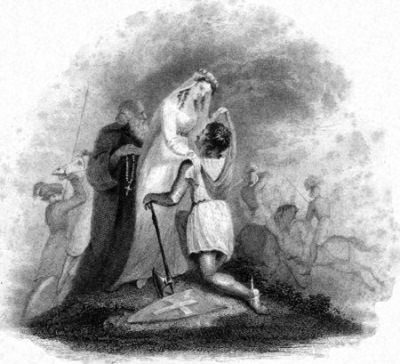

Title: The History of Chivalry; Or, Knighthood and Its Times, Volume 1 (of 2)
Author: Charles Mills
Release date: June 17, 2012 [eBook #40021]
Most recently updated: October 23, 2024
Language: English
Other information and formats: www.gutenberg.org/ebooks/40021
Credits: Produced by The Online Distributed Proofreading Team at
http://www.pgdp.net (This file was produced from images
generously made available by The Internet Archive.)
The index in this electronic text was not printed in the original book.
The index was copied from Volume II of the series.
The History of Chivalry
or
Knighthood and its times.
By
Charles Mills, Esqr.
Author of the History of the Crusades
IN TWO VOLUMES.
Vol: I.

Engraved by A. Le Petit from a sketch by R. W. Sievier.
London.
Printed for Longman, Hurst, Rees, Orme, Brown and Green
MDCCCXXV.
The propriety of my writing a History of Chivalry, as a companion to my History of the Crusades, was suggested to me by a friend whose acquaintance with middle-age lore forms but a small portion of his literary attainments, and whose History of Italy shows his ability of treating, as well as his skill in discovering, subjects not hitherto discussed with the fulness which their importance merits.[1]
The works of Menestrier and Colombiere sleep in the dust of a few ancient libraries; and there are only two other books whose express and entire object is a delineation of the Institutions of chivalry. The first and best known is the French work called “Mémoires sur l’ancienne Chevalerie; considérée comme un Etablissement[Pg iv] Politique et Militaire. Par M. de la Curne de Sainte Palaye, de l’Académie Françoise,” &c. 2 tom. 12mo. Paris, 1759. The last half, however, of the second volume does not relate to chivalry, and therefore the learned Frenchman cannot be charged with treating his subject at very great length.[2] It was his purpose to describe the education which accomplished the youth for the distinction of knighthood, and this part of his work he has performed with considerable success. But he failed in his next endeavour, that of painting the martial games of chivalry, for nothing can be more unsatisfactory than his account of jousts and tournaments. As he wished to inform his readers of the use which was made in the battle field of the valour, skill, and experience of knights, a description of some of the extraordinary and interesting battles of the middle ages might have been expected. Here also disappointment is experienced; neither can any pleasure be derived from perusing his examination of the causes[Pg v] which produced the decline and extinction of chivalry, and his account of the inconveniences which counterbalanced the advantages of the establishment.
Sainte Palaye was a very excellent French antiquarian; but the limited scope of his studies disqualified him from the office of a general historian of chivalry. The habits of his mind led him to treat of knighthood as if it had been the ornament merely of his own country. He very rarely illustrates his principles by the literature of any other nation, much less did he attempt to trace their history through the various states of Europe. He has altogether kept out of sight many characteristic features of his subject. Scarcely any thing is advanced about ancient armour; not a word on the religious and military orders; and but a few pages, and those neither pleasing nor correct, on woman and lady-love. The best executed part of his subject regards, as I have already observed, the education of knights; and he has scattered up and down his little volume and a half many curious notices of ancient manners.
The other work is written in the German language, and for that reason it is but very little[Pg vi] known in this country. It is called Ritterzeit und Ritterwesen, (two volumes octavo, Leipzig, 1823,) and is the substance of a course of lectures on chivalry delivered by the author, Mr. Büsching, to his pupils of the High School at Breslau. The style of the work is the garrulous, slovenly, ungrammatical style which lecturers, in all countries, and upon all subjects, think themselves privileged to use. A large portion of the book is borrowed from Sainte Palaye; much of the remainder relates to feudalism and other matters distinct from chivalry: but when the writer treats of the state of knighthood in Germany I have found his facts and observations of very great value.
Attention to the subjects of the middle ages of Europe has for many years been growing among us. It was first excited by Warton’s history of our national verse, and Percy’s edition of the Relics of ancient English Poetry. The romances of chivalry, both in prose and metre, and the numberless works on the Troubadour, and every other description of literature during the middle ages which have been published within the last few years, have sustained the interest. The poems of Scott convinced the world[Pg vii] that the chivalric times of Europe can strike the moral imagination as powerfully and pleasingly in respect of character, passion, and picturesqueness of effect, as the heroic ages of Greece; and even very recently the glories of chivalry have been sung by a poetess whom Ariosto himself would have been delighted to honour.[3] Still, however, no attempt has been hitherto made to describe at large the institutions of knighthood, the foundation of all that elegant superstructure of poetry and romance which we admire, and to mark the history of chivalry in the various countries of Europe. Those institutions have, indeed, been allowed a few pages in our Encyclopædias; and some of the sketches of them are drawn with such boldness and precision of outline that we may regret the authors did not present us with finished pictures. Our popular historians have but hastily alluded to the subject; for they were so much busied with feudalism and politics, that they could afford but a small space for the play of the lighter graces of chivalry.
For a description, indeed, of antique manners, our materials are not so ample as for that of[Pg viii] their public lives. But still the subject is not without its witnesses. The monkish chroniclers sometimes give us a glimpse of the castles of our ancestors. Many of the knights in days of yore had their biographers; and, for the most interesting time of chivalry, we possess an historian, who, for vividness of delineation, kindliness of feeling, and naïveté of language, is the Herodotus of the middle ages.
“Did you ever read Froissart?”
“No,” answered Henry Morton.
“I have half a mind,” rejoined Claverhouse, “to contrive that you should have six months’ imprisonment, in order to procure you that pleasure. His chapters inspire me with more enthusiasm than even poetry itself.”
Froissart’s[4] history extends from the year 1316 to 1400. It was begun by him when he was twenty years old, at the command of his dear lord and master, Sir Robert of Namur, Lord of Beaufort. The annals from 1326 to 1356 are[Pg ix] founded on the Chronicles compiled by him whom he calls “The Right Reverend, discreet, and sage Master John la Bele, sometime canon in St. Lambertis of Liege, who with good heart and due diligence did his true devoir in writing his book; and heard of many fair and noble adventures from his being well beloved, and of the secret counsel of the Lord Sir John of Hainault.” Froissart corrected all this borrowed matter on the information of the barons and knights of his time regarding their families’ gestes and prowesses. He is the chronicler both of political events and of chivalric manners. Of his merits in the first part of his character it falls not within my province to speak. For the office of historian of chivalry no man could present such fair pretensions. His father being a herald-painter, he was initiated in his very early years into that singular form of life which he describes with such picturesque beauty. “Well I loved,” as he says of his youth, in one of his poems, “to see dances and carolling, and to hear the songs of minstrels and tales of glee. It pleased me to attach myself to those who took delight in hounds and hawks. I was wont to toy with my fair companions at school, and methought I had[Pg x] the art well to win the grace of maidens.”—“My ears quickened at the sound of opening the wine-flask, for I took great pleasure in drinking, and in fair array, and in fresh and delicate viands. I loved to see (as is reason) the early violets, and the white and red roses, and also chambers brilliantly lighted; dances and late vigils, and fair beds for my refreshment; and for my better repose, I joyously quaffed a night-draught of claret, or Rochelle wine mingled with spice.”
Froissart wrote his Chronicles “to the intent that the honourable and noble adventures of feats of arms, done and achieved in the wars of France and England, should notably be enregistered, and put in perpetual memory; whereby the preux and hardy might have ensample to encourage them in their well-doing.”[5] To accomplish his purpose, he followed and frequented the company of divers noble and great lords, as well in France, England, and Scotland, as in other countries; and in their chivalric festivals he enquired for tales of arms and amours. For three years he was clerk of the chamber to Philippa of Hainault, wife of[Pg xi] Edward III. He travelled into Scotland; and, though mounted only on a simple palfrey, with his trunk placed on the hinder part of his saddle, after the fashion in which a squire carried the mail-harness of a knight, and attended only by a greyhound, the favourite dog of the time, instead of a train of varlets, yet the fame of his literary abilities introduced him to the castle of Dalkeith, and the court of the Scottish King.
He generally lived in the society of nobles and knights,—at the courts of the Duke of Brabant, the Count of Namur, and the Earl of Blois. He knew and admired the Black Prince, Du Guesclin, the Douglas, and Hotspur; and while this various acquaintance fitted him to describe the circumstances and manners of his times, it prevented him from the bias of particular favouritism. The character of his mind, rather than his station in life, determined his pursuits. His profession was that of the church: he was a while curate of Lestines, in the diocese of Liege; and, at the time of his death, he was canon and treasurer of the collegiate church of Chimay. But he was a greater reader of romances than of his breviary; and, churchman though he was, knighthood itself[Pg xii] could not boast a more devoted admirer of dames and damsels. He was, therefore, the very man to describe the chivalric features of his time.
The romances of chivalry are another source of information. Favyn says, with truth and fancy, “The greater part of antiquities are to be sought for and derived out of the most ancient tales, as well in prose as verse, like pearls out of the smoky papers of Ennius.” The romance-writers were to the middle ages of Europe what the ancient poets were to Greece,—the painters of the manners of their times. As Sir Walter Scott observes, “We have no hesitation in quoting the romances of chivalry as good evidence of the laws and customs of knighthood. The authors, like the artists of the period, invented nothing, but, copying the manners of the age in which they lived, transferred them, without doubt or scruple, to the period and personages of whom they treated.”
From all these sources of information I have done my devoir, in the following pages, to describe the origin of chivalry; and, after escaping from the dark times in which it arose, to mark the various degrees of the personal [Pg xiii]nobility of knighthood. An enquiry into the nature and duties of the chivalric character then will follow; and we cannot pass, without regard and homage, the sovereign-mistress and lady-love of the adventurous knight. After viewing our cavalier in the gay and graceful pastime of the tournament, and pausing a while to behold him when a peculiar character of religion was added to his chivalry, we shall see him vault upon his good steed; and we will accompany him in the achievement of his high and hardy emprises in Britain, France, Spain, Germany, and Italy.
As a view of chivalry is, from its nature, a supplement or an appendix to the history of Europe, I have supposed my readers to be acquainted with the general circumstances of past ages, and therefore I have spoken of them by allusion rather than by direct statement. I have made the following work as strictly chivalric as the full and fair discussion of my subject would permit me, avoiding descriptions of baronial and feudal life, except in its connection with knighthood. I have not detailed military circumstances of former times, unless they proceeded from chivalric principles, or were invested with[Pg xiv] chivalric graces. Thus the celebrated battle of the Thirty had nothing in it of a knightly character, and therefore I have left it unnoticed. Judicial combats had their origin in the state of society from which both feudalism and chivalry sprang; but they were not regulated by the gentle laws of knighthood, and therefore have not been described by me. I have not imposed any dry legal facts and discussions upon my readers; for the incidents attached to the tenure of land called the tenure in chivalry were strictly feudal; and the courts of the constable and marshal, holding cognisance as they did of all matters regarding war, judicial combats, and blazonry of arms, relate not so much to chivalry as to the general preservation of the peace of the land, and the good order of society. And it should be mentioned, that it has not been my purpose to give a minute history of every individual cavalier: for a work strictly confined to biographical detail, however convenient it might be for occasional reference, would be tiresome and tedious by reason of the repetition of circumstances only varied with the difference of names, and would be any thing but historical. I have brought the great characters of chivalry, who[Pg xv] have received but slight attention from the political historian, in illustration of the principles of knighthood. Thus full-length portraits of those English knights of prowess, Sir John Chandos and Sir Walter Manny, will be more interesting than pictures of Edward III. and the Black Prince, whose features are so well known to us. From the lives of these royal heroes I have therefore only selected such chivalric circumstances as have not been sufficiently described and dwelt upon, or which it was absolutely incumbent on me to state, in order to preserve an unbroken thread of narrative.
I shall not expatiate on the interest and beauty of my subject, lest I should provoke too rigid an enquiry into my ability for discussing it. I shall therefore only conclude, in the good old phrase of Chaucer,—
“Now, hold your mouth, pour charitie,
Both knight and lady free,
And herkneth to my spell,
Of battaille and of chivalry,
Of ladies’ love and druerie,
Anon I wol you tell.”
[Pg xvi]⁂ While these volumes were passing through the press, the Tales of the Crusaders appeared. In the second of them is contained a series of supposed propositions from Saladin for peace between his nation and the English. The conclusion of those propositions is thus expressed:—“Saladin will put a sacred seal on this happy union betwixt the bravest and noblest of Frangistan and Asia, by raising to the rank of his royal spouse a Christian damsel, allied in blood to King Richard, and known by the name of the Lady Edith of Plantagenet,” vol. iv. pp. 13, 14. Upon this passage of his text the author remarks in a note: “This may appear so extraordinary and improbable a proposition that it is necessary to say such a one was actually made. The historians, however, substitute the widowed Queen of Naples, sister of Richard, for the bride, and Saladin’s brother for the bridegroom. They appear to be ignorant of the existence of Edith of Plantagenet. See Mill’s (Mills’) History of the Crusades, vol. ii. p. 61.”
In that work I observe, that “Richard proposed a consolidation of the Christian and Muhammedan interests; the establishment of a government at Jerusalem, partly European and partly Asiatic; and these schemes of policy were to be carried into effect by the marriage of Saphadin (Saladin’s brother) with the widow of William King of Sicily.”
M. Michaud, the French historian of the Crusades, makes a similar statement. He says that Richard “fit d’autres propositions, auxquelles il intéressa adroitement l’ambition de Malec Adel, frère du Sultan. La veuve du [Pg xvii]Guillaume de Sicile fut proposée en marriage au Prince Musulman.” Hist. des Croisades, vol. ii. p. 414.
Whether or no “the historians” are ignorant of the existence of “Edith of Plantagenet” is not the present question. The question is, which of the two opposite statements is consistent with historical truth. The statement of M. Michaud and myself is supported by the principal Arabic historians, by writers, who, as every student in history knows, are of unimpeachable credit. Bohadin, in his life of Saladin, says, that “the Englishman was desirous that Almalick Aladin should take his sister to wife. (Her brother had brought her with him from Sicily, when he passed through that island, to the deceased lord of which she had been married.”[6]) To the same effect Abulfeda observes, “Hither came the embassadors of the Franks to negotiate a peace; and offered this condition, that Malek al Adel, brother of the Sultan, should receive the sister of the King of England in marriage, and Jerusalem for a kingdom.”[7] That this sister, Joan, the widowed Queen of Sicily, was with Richard in the Holy Land is proved by a passage in Matthew Paris, p. 171. She and the wife of Richard [Pg xviii]are mentioned together, and no other person of royal rank.
Thus, therefore, “the historians” are correct in their statement, that the matrimonial proposition was made by the English to Saladin, and that the parties were to be the brother of Saladin and the widowed Queen of Sicily. The novelist has not supported his assertion by a single historical testimony; and we may defy him to produce a tittle of evidence on his side.
In the composition of his tales, the author of Waverley has seldom shown much respect for historical keeping. But greater accuracy than his no person had a right to expect in the text of a mere novel; and as long as he gave his readers no excuse for confounding fiction with truth, the play of his brilliant and excursive imagination was harmless. Thus in the Talisman, the poetical antiquarian only smiles when he finds the romance of the Squire of Low Degree quoted as familiar to the English long before it was written; and when, in the Betrothed, Gloucester is raised into a bishoprick three centuries and a half before the authentic æra, we equally admit the author’s licence of anachronism. On these two occasions, as in innumerable other instances, in which the novelist, whether intentionally or unwittingly, has strayed from the path of historical accuracy, he has never given formal warranty for the truth of his statements, and he is entitled to laugh at the simple credulity which could mistake his Tales for veracious chronicles: But his assertion respecting the marriage of Saladin with his “Edith of Plantagenet” is a very different case. For here he throws aside the fanciful garb of a novelist, and quits the privilege of his text, that he [Pg xix]may gravely and critically vouch in a note for the errors of our historians, and his own superior knowledge. If this can possibly be done merely to heighten the illusion of his romance, it is carrying the jest a little too far; for the preservation of historical truth is really too important a principle to be idly violated. But if he seriously designed to unite the province of the historian with that of the novelist, he has chosen a very unlucky expedient for his own reputation; and thus, in either case, he has rather wantonly led his readers into error, and brought against others a charge of ignorance, which must recoil more deservedly on himself.
CONTENTS OF THE FIRST VOLUME.
| CHAP. I. | |
| THE ORIGIN AND FIRST APPEARANCES OF CHIVALRY IN EUROPE. | |
| Page | |
| General nature of chivalry ... Military and moral chivalry ... Origin of chivalry ... Usages of the Germans ... Election of soldiers ... Fraternity ... Dignity of obedience ... Gallantry ... The age of Charlemagne ... Chivalry modified by religion ... Ceremonies of Anglo-Saxon inauguration ... Chivalry sanctioned by councils, and regarded as a form of Christianity ... Nature of chivalric nobility ... Its degrees ... Knight banneret ... His qualifications ... By whom created ... His privileges ... His relation to the baron ... And incidentally of the war-cry and the escutcheon ... The knight ... Qualifications for knighthood ... By whom created ... The squirehood ... General view of the other chapters on the institutions of chivalry | 1 |
| [Pg xxii] | |
| CHAP. II. | |
| THE EDUCATION OF A KNIGHT. THE CEREMONIES OF INAUGURATION AND OF DEGRADATION. | |
| Description in romances of knightly education ... Hawking and hunting ... Education commenced at the age of seven ... Duties of the page ... Personal service ... Love and religion ... Martial exercises ... The squire ... His duties of personal service ... Curious story of a bold young squire ... Various titles of squires ... Duties of the squire in battle ... Gallantry ... Martial exercises ... Horsemanship ... Importance of squires in the battle-field ... Particularly at the battle of Bovines ... Preparations for knighthood ... The anxiety of the squire regarding the character of the knight from whom he was to receive the accolade ... Knights made in the battle-field ... Inconveniences of this ... Knights of Mines ... General ceremonies of degradation ... Ceremonies in England | 26 |
| CHAP. III. | |
| THE EQUIPMENT. | |
| Beauty of the chivalric equipment ... The lance ... The pennon ... The axe, maule, and martel ... The sword ... Fondness of the knight for it ... Swords in romances ... The shield ... Various sorts of mail ... Mail ... Mail and plate ... Plate harness ... The scarf ... Surcoats ... Armorial bearings ... Surcoats of the military orders ... The dagger of mercy ... Story of its use ... Value of enquiries into ancient armour ... A precise knowledge [Pg xxiii]unattainable ... Its general features interesting ... The broad lines of the subject ... Excellence of Italian armour ... Armour of the squire, &c. ... Allegories made on armour ... The horse of the knight | 65 |
| CHAP. IV. | |
| THE CHIVALRIC CHARACTER. | |
| General array of knights ... Companions in arms ... The nature of a cavalier’s valiancy ... Singular bravery of Sir Robert Knowles ... Bravery incited by vows ... Fantastic circumstances ... The humanities of chivalric war ... Ransoming ... Reason of courtesies in battles ... Curious pride of knighthood ... Prisoners ... Instance of knightly honour ... Independence of knights, and knight-errantry ... Knights fought the battles of other countries ... English knights dislike wars in Spain ... Their disgust at Spanish wines ... Principles of their active conduct ... Knightly independence consistent with discipline ... Religion of the knight ... His devotion ... His intolerance ... General nature of his virtue ... Fidelity to obligations ... Generousness ... Singular instance of it ... Romantic excess of it ... Liberality ... Humility ... Courtesy ... EVERY-DAY LIFE OF THE KNIGHT ... Falconry ... Chess playing ... Story of a knight’s love of chess ... Minstrelsy ... Romances ... Conversation ... Nature and form of chivalric entertainments ... Festival and vow of the pheasant | 117 |
| CHAP. V. | |
| DAMES AND DAMSELS, AND LADY-LOVE. | |
| Courtesy ... Education ... Music ... Graver sciences ... [Pg xxiv]Dress ... Knowledge of medicine ... Every-day life of the maiden ... Chivalric love ... The idolatry of the knight’s passion ... Bravery inspired by love ... Character of woman in the eyes of a knight ... Peculiar nature of his love ... Qualities of knights admired by women ... A tale of chivalric love ... Constancy ... Absence of jealousy ... Knights asserted by arms their mistress’s beauty ... Penitents of love ... Other peculiarities of chivalric love ... The passion universal ... Story of Aristotle ... Chivalric love the foe to feudal distinctions ... But preserved religion ... When attachments were formed ... Societies of knights for the defence of ladies ... Knights of the lady in the green field ... Customs in England ... Unchivalric to take women prisoners ... Morals of chivalric times ... Heroines of chivalry ... Queen Philippa ... The Countess of March ... Tales of Jane of Mountfort and of Marzia degl’ Ubaldini ... Nobleness of the chivalric female character | 181 |
| CHAP. VI. | |
| TOURNAMENTS AND JOUSTS. | |
| Beauty of chivalric sports ... Their superiority to those of Greece and Rome ... Origin of tournaments ... Reasons for holding them ... Practice in arms ... Courtesy ... By whom they were held ... Qualifications for tourneying ... Ceremonies of the tournament ... Arrival of the knights ... Publication of their names ... Reasons for it ... Disguised knights ... The lists ... Ladies the judges of the tournament ... Delicate courtesy at tournaments ... Morning of the sports ... Knights led by ladies, who imitated the dress of knights ... Nature of tourneying weapons ... Knights wore ladies’ favours ... The preparation ... The encounter ... What lance-strokes won the prize ... Conclusion [Pg xxv]of the sports ... The festival ... Delivery of the prize ... Knights thanked by ladies ... The ball ... Liberality ... Tournaments opposed by the popes ... The opposition unjust ... The joust ... Description of the joust to the utterance ... Joust between a Scotch and an English knight ... Jousting for love of the ladies ... A singular instance of it ... Joust between a French and an English squire ... Admirable skill of jousters ... Singular questions regarding jousts ... An Earl of Warwick ... Celebrated joust at St. Inglebertes ... Joust between Lord Scales and the Bastard of Burgundy ... The romance of jousts ... The passage of arms ... Use of tournaments and jousts | 258 |
| CHAP. VII. | |
| THE RELIGIOUS AND MILITARY ORDERS OF KNIGHTHOOD. | |
| General principles of the religious orders ... Qualifications for them ... Use of these orders to Palestine ... Modern history of the Knights Templars ... Their present existence and state ... Religious orders in Spain ... That of St. James ... Its objects ... Change of its objects ... Order of Calatrava ... Fine chivalry of a monk ... Fame of this order ... Order of Alcantara ... Knights of the Lady of Mercy ... Knights of St. Michael ... Military orders ... Imitations of the religious orders ... Instanced in the order of the Garter ... Few of the present orders are of chivalric origin ... Order of the Bath ... Dormant orders ... Order of the Band ... Its singular rules ... Its noble enforcement of chivalric duties towards woman ... Order of Bourbon ... Strange titles of orders ... Fabulous orders ... The Round Table ... Sir Launcelot ... Sir Gawain ... Order of the Stocking ... Origin of the phrase Blue Stocking | 332 |
| [Pg xxvi] | |
| CHAP. VIII. | |
| PROGRESS OF CHIVALRY IN ENGLAND, FROM THE NORMAN CONQUEST TO THE CLOSE OF THE REIGN OF EDWARD II. | |
| Chivalry connected with feudalism ... Stipendiary knights ... Knighthood a compulsory honour ... Fine instance of chivalry in the reign of Edward I. ... Effect of chivalry in Stephen’s reign ... Troubadours and romance writers in the reign of Henry II. ... Chivalric manners of the time ... Cœur de Lion the first chivalric king ... His knightly bearing ... John and Henry III. ... Edward I. ... His gallantry at a tournament ... His unchivalric cruelties ... He possessed no knightly courtesy ... Picture of ancient manners ... Edward II. ... Chivalric circumstance in the battle of Bannockburn ... Singular effect of chivalry in the reign of Edward II. | 382 |
THE HISTORY OF CHIVALRY.
THE ORIGIN AND FIRST APPEARANCES OF CHIVALRY IN EUROPE.
General Nature of Chivalry ... Military and Moral Chivalry ... Origin of Chivalry ... Usages of the Germans ... Election of Soldiers ... Fraternity ... Dignity of Obedience ... Gallantry ... The Age of Charlemagne ... Chivalry modified by Religion ... Ceremonies of Anglo-Saxon Inauguration ... Chivalry sanctioned by Councils, and regarded as a Form of Christianity ... Nature of Chivalric Nobility ... Its Degrees ... Knight Banneret ... His Qualifications ... By whom created ... His Privileges ... His relation to the Baron ... And incidentally of the War-Cry and the Escutcheon ... The Knight ... Qualifications for Knighthood ... By whom created ... The Squirehood ... General View of the other Chapters on the Institutions of Chivalry.
There is little to charm the imagination in the first ages of Chivalry. No plumed steeds, no warrior bearing on his crested helm the favour of his lady bright, graced those early[Pg 2] times. All was rudeness and gloom. But the subject is not altogether without interest, as it must ever be curious to mark the causes and the first appearances in conduct of any widely spread system of opinions.
The martial force of the people who occupied northern and central Europe in the time of the Romans, was chiefly composed of infantry[8]; but afterwards a great though imperceptible change took place, and, during all the long period which forms, in historic phrase, the middle ages, cavalry was the strongest arm of military power. Terms, expressive of this martial array, were sought for in its distinguishing circumstances. Among the ruins of the Latin language, caballus signified a horse, caballarius a horseman, and caballicare, to ride; and from these words all the languages that were formed on a Latin basis, derived their phrases descriptive of military duties on horseback. In all languages of Teutonic origin, the same circumstance was expressed by words literally signifying service. The German knight, the Saxon cnight, are synonymous to the French cavalier, the Italian cavaliere, and the Spanish caballero. The word rider also designated the same person, preceded by, or standing without, the word knight.
[Pg 3]In the kingdoms which sprang from the ruins of the Roman empire, every king, baron, and person of estate was a knight; and therefore the whole face of Europe was overspread with cavalry. Considered in this aspect, the knighthood and the feudalism of Europe were synonymous and coexistent. But there was a chivalry within this chivalry; a moral and personal knighthood; not the well-ordered assemblage of the instruments of ambition, but a military barrier against oppression and tyranny, a corrective of feudal despotism and injustice. Something like this description of knighthood may be said to have existed in all ages and countries. Its generousness may be paralleled in Homeric times, and vice has never reigned entirely without control. But the chivalry, the gallant and Christian chivalry of Europe, was purer and brighter than any preceding condition of society; for it established woman in her just rank in the moral world, and many of its principles of action proceeded from a divine source, which the classical ancients could not boast of.
Some of the rules and maxims of chivalry had their origin in that state of society in which the feudal system arose; and regarded particularly in a military light, we find chivalry a part of the earliest condition of a considerable part of the European world. The bearing of arms was never a [Pg 4]matter of mere private choice. Among the Germans, it rested with the state to declare a man qualified to serve his country in arms. In an assembly of the chiefs of his nation, his father, or a near relation, presented a shield and a javelin to a young and approved candidate for martial honours, who from that moment was considered as a member of the commonwealth, and ranked as a citizen. In northern as well as in central Europe, both in Scandinavia and Germany, the same principle was observed; and a young man at the age of fifteen became an independent agent, by receiving a sword, a buckler, and a lance, at some public meeting.[9]
The spirit of clanship, or fraternity, which ran through the chivalry of the middle ages, is of the remotest antiquity. It existed in Germany, in Scandinavia, and also in Gaul.[10] In all these countries, every young man, when adorned with his military weapons, entered the train of some chief; but he was rather his companion than his follower; for, however numerous were the steps and distinctions of service, a noble spirit of equality ran through them all. These generous youths formed the bulwark of their leader in war, and were his ornament in peace. This spirit of companionship shewed itself in all its[Pg 5] power and beauty in the field. It was disgraceful for a prince to be surpassed in valour by his companions; their military deeds were to be heroic, but the lustre of them was never to dim the brightness of his own fame. The chief fought for victory, the followers fought for their chief. The defence of the leader in battle, to die with him rather than to leave him, were, in the minds of the military fathers of Europe, obvious and necessary corollaries of these principles. The spirit of companionship burnt more fiercely in remote ages, than in times commonly called chivalric; for if, by the chance of war, a person was thrown into the hands of an enemy, his military companions would surrender themselves prisoners, thinking it disgraceful to live in security and indolence, when their chief and associate was in misery.[11]
And to bring the matter home to English readers, it may be mentioned, that in the history of our Anglo-Saxon ancestors, many instances are recorded where vassals refused to survive their lord. Cyneheard, brother of the deposed king Sigebyrcht, slew the usurper Cynewulf; and though he offered freedom to the attendants of the slain, yet they all preferred death to submission to a new lord, and they died in a vain and wild endeavour to revenge him. [Pg 6]Immediately afterwards fortune frowned on Cyneheard, and his eighty-four companions, save one, were slain, though liberty had been offered to them; but declaring that their generosity was not inferior to the generosity of the attendants of Cynewulf, they perished in a hopeless battle.[12]
The feeling which, in chivalric times, became designated as the dignity of obedience, may be traced in these circumstances, but it is more clearly shewn in a singular record of the domestic manners of ancient Europe; for we learn from Athenæus, in his treatise of the suppers of the Celts, that it was the custom of the Gaulish youths to stand behind the seats, and to attend upon their fathers during the principal daily meal.[13] Here we see the germ, if not of the duties of the squire to the knight, yet of the feeling which suggested their performance. The beautiful subordination of chivalry had its origin in the domestic relations of life; obedience became virtuous when nature sanctioned it, and there could be no loss of personal consideration in a youth performing services which his own father had performed, and which, as years and circumstances advanced, would be rendered to himself.
The gallantry of knighthood, that quality[Pg 7] which distinguishes, and distinguishes so much to its advantage, the modern from the ancient world, was not created by any chivalric institution. We know indeed that it was cradled in the same sentiments which nursed the other principles of chivalry, but its birth is lost in the remoteness of ages; and I would rather dwell in my ignorance of the precise period of its antiquity, than think with Plutarch that the feeling arose from a judicious opinion delivered by some women on occasion of a particular dispute between a few of the Celtic tribes.[14] It was in truth the virtue of the sex, and not any occasional or accidental opinion, that raised them to their high and respectful consideration. The Roman historian marked it as a peculiarity among the Germans, that marriage was considered by them as a sacred institution[15], and that a man confined himself to the society of one wife. The mind of Tacitus was filled with respect for the virtuous though unpolished people of the north; and, reverting his eyes to Rome, the describer of manners becomes the indignant satirist, and he exclaims, that no one in Germany dares to ridicule the holy ordinance of marriage, or to call an infringement of its laws a compliance with the manners of the age.[16] In[Pg 8] earlier times, when the Cimbri invaded Italy, and were worsted by Marius, the female Teutonic captives wished to be placed among the vestal virgins, binding themselves to perpetual chastity, but the Romans could not admire or sympathize with such lofty-mindedness, and the women had recourse to death, the last sad refuge of their virtue. Strabo picturesquely describes venerable and hoary-headed prophetesses seated at the council of the Cimbri, dressed in long linen vestments of shining white. They were not only embassadresses, but were often entrusted with the charge of governing kingdoms.[17] The courage of the knight of chivalry was inspired by the lady of his affections, a feature of character clearly deducible from the practice among the German nations, of women mingling in the field of battle with their armed brothers, fathers, and husbands. Women were always regarded as incentives to valour, and when warring with a nation of different manners, the German general could congratulate his soldiers on having motives to courage, which the enemy did not possess.[18] The warrior of the north, like the hero of chivalry, hoped for female smiles from his skill in athletic and martial exercises; and we[Pg 9] may take the anecdote as an instance of the general manners of European antiquity, that the chief anxiety of a Danish champion, who had lost his chin and one of his cheeks by a single stroke of a sword, was, how he should be received by the Danish maidens, when his personal features had been thus dreadfully marred.—“The Danish girls will not now willingly or easily give me kisses, if I should perhaps return home,” was his complaint.
Harald the Valiant was one of the most eminent adventurers of his age. He had slain mighty men; and after sweeping the seas of the north as a conqueror, he descended to the Mediterranean, and the shores of Africa. But a greater power now opposed him, and he was taken prisoner, and detained for some time at Constantinople. He endeavoured to beguile his gloomy solitude by song; but his muse gave him no joy, for he complains that the reputation he had acquired by so many hazardous exploits, by his skill in single combat, riding, swimming, gliding along the ice, darting, rowing, and guiding a ship through the rocks, had not been able to make any impression on Elissiff, or Elizabeth, the beautiful daughter of Yarilas, king of Russia.[19]
Such were the features of the ancient character of Europe, that formed the basis of the [Pg 10]chivalry of the middle ages; such was chivalry in its rude, unpolished state, the general character of the whole people, rather than the moral chastener of turbulence and ferocity. From receiving his weapons in an assembly of the nation; associating in clans; protecting and revering women; performing acts of service, when affection and duty commanded them: from these simple circumstances and qualities, the most beautiful form of manners arose, that has ever adorned the history of man. It is impossible to mark the exact time when these elements were framed into that system of thought and action which we call Chivalry. Knighthood was certainly a feature and distinction of society before the days of Charlemagne, and its general prevalence in his time is very curiously proved, by the permission which he gave to the governor of Friesland to make knights, by girding them with a sword, and giving them a blow.[20]
But the key-stone of the arch was wanting, and religion alone could furnish it. A new world of principles and objects was introduced. The defence of the church was one great apparent aim of knightly enterprise, and on this[Pg 11] principle, narrow and selfish as it was, many of the charities of Christianity were established. The sword was blessed by the priest, before it was delivered to the young warrior. By what means this amalgamation was effected, we know not; the less interesting matter, the date of the circumstance can be more easily ascertained. It was somewhere between the ninth and the eleventh centuries. It surely was not the custom in the days of Charlemagne, for he girt the military sword on his son Louis the Good, agreeably to the rude principles of ancient Germanic chivalry[21], without any religious ceremonies; and a century afterwards we read of the Saxon monarch of England, Edward the Elder, cloathing Athelstan in a soldier’s dress of scarlet, and fastening round him a girdle ornamented with precious stones, in which a Saxon sword in a sheath of gold was inserted.[22] In the century following, however, during the reign of Edward the Confessor, we meet with the story of Hereward, a very noble Anglo-Saxon youth, being knighted by the Abbot of Peterborough. He made confession of his sins, and, after he had received absolution, he earnestly prayed to be made a legitimate miles or knight.
[Pg 12]It was the custom of the English, continues the historian, for every one who wished to be consecrated into the legitimate militia, to confess his sins to a bishop, abbot, monk, or other priest, in the evening that preceded the day of his consecration, and to pass the night in the church, in prayer, devotion, and mortifications. On the next morning it was his duty to hear mass, to offer his sword on the altar, and then, after the Gospel had been read, the priest blessed the sword, and placed it on the neck of the miles, with his benediction. The sacrament of the Lord’s Supper was then communicated to the knight.[23] This passage, though professedly descriptive only of the military customs of England, may be applied to the general state of Europe, with the exception of Normandy, whose people despised the religious part of the ceremony. But this feeling of dislike did not endure through all ages, for there is abundant evidence to prove, that in the reign of the Norman dynasty in England, the ceremonies of knighthood were religious as well as military; and in the same, the eleventh, century, the usage was similar over all Continental Europe.
The eleventh century is a very important epoch in the history of chivalry; for it was declared by the celebrated Council of Clermont, (which authorised the first Crusade) that every[Pg 13] person of noble birth, on attaining twelve years of age, should take a solemn oath before the bishop of his diocese, to defend to the uttermost the oppressed, the widows, and orphans; that women of noble birth, both married and single, should enjoy his especial care; and that nothing should be wanting in him to render travelling safe, and to destroy tyranny. In this decree we observe, that all the humanities of chivalry were sanctioned by legal and ecclesiastical power; and that it was intended they should be spread over the whole face of Christendom, in order to check the barbarism and ferocity of the times.
The form of chivalry was martial; but its objects were both religious and social, and the definition of the word from military circumstances ceased to express its character. The power of the clergy was shewn in a singular manner. Chivalry was no longer a soldierly array, but it was called the Order, the Holy Order, and a character of seriousness and solemnity was given to it.[24] It was accounted an honourable office, above all offices, orders, and acts of the world, except the order of priesthood, for that order appertained to the holy sacrament of the altar. The knightly and clerical characters were every where considered as convertible, and the writers of [Pg 14]romances faithfully reflected manners, when their hero at the commencement of the tale was a Sir Knight, and when at the close of his quests, we find him a Sir Priest;
“And soothly it was said by common fame,
So long as age enabled him thereto,
That he had been a man of mickle name,
Renowned much in arms and derring do.
But being aged now, and weary too
Of war’s delight, and world’s contentious toil,
The name of Knighthood he did disavow;
And hanging up his arms and warlike spoil,
From all this world’s incumbrance did himself assoil.”[25]
Knighthood was an institution perfectly peculiar to the military and social state of our ancestors. There was no analogy between the knights of chivalry and the equites of Rome, for pecuniary estate was absolutely necessary for the latter; whereas, though the European cavalier was generally a man of some possessions, yet he was often a person promoted into the order of chivalry, solely as a reward for his redoubted behaviour in battle. The Roman equites discharged civil functions regarding the administration of justice and the farming of the public [Pg 15]revenue; but the chivalry of the middle ages had no such duties to perform. Knighthood was also distinct from nobility; for the nobility of Europe were the governors and lords of particular districts of a country, and although originally they held their dignities only for life, yet their title soon became hereditary. But knighthood was essentially and always a personal distinction. A man’s chivalry died with him. It was conferred upon noblemen and kings, not being like their other titles, the subject of inheritance. It was not absorbed in any other title of rank, and the common form of address, Sir[26] King, shews its high consideration. In the writs of summons to parliament, the word Chevalier sometimes followed the baronial title, and more frequently the barons were styled by their martial designation, than named by the titles of their baronies.[27]
[Pg 16]There were three degrees in the Chivalry of Europe, Knights-Banneret, Knights, and Esquires.
A soldier must have passed through the ranks of esquire and knight, before he could be classed with the knights-banneret. That high dignity could only be possessed by a knight who had served for a length of years in the wars, and with distinction, and who had a considerable retinue of men-at-arms, and other soldiers. To avoid the inconveniences of too minute a division of the martial force of a country, every knight-banneret ought to have had fifty[28] knights and squires under his command, each being attended by one or more horse soldiers, armed with the cross-bow, or with the long-bow and axe. Several followers on foot completed the equipment. But as we often meet with instances of elevating men of very few followers[29] to the rank[Pg 17] of knights-banneret, it is probable that kings usurped the right of conferring the distinction upon their favorites, or men of fame, not chusing that any title of merit should be demanded as a right, or that the royal name should be used only as a passive instrument; for a knight who had proved his chivalry and power, could demand from his sovereign the distinction of banneret. The laws and usages of the world allowed the well-tried and nobly attended soldier to carry his emblazoned pennon to the constable or marshal of the army before or after a battle, and in the field of contest itself, and require leave to raise his banner. A herald exhibited the record of his claim to the distinction, and the leader of the forces cut off the end of the pennon, and this military ensign then became a square banner. A brief exhortation to valiancy and honour was generally added by the constable or herald. These were the whole ceremonies of creation.
The privileges of a knight-banneret were considerable. He did not fight under the [Pg 18]standard of any baron, but he formed his soldiers under his own. Like the rest of the feudal force, he was subject to the commands of the king; but his pride was not galled by being obliged to obey the behests of men of his own rank.
Every Baron had his banner, and a feudal array of knights, men-at-arms, and others, was numbered by its banners. The banneret and the baron were therefore soldiers of equal authority. The banneret, too, like the baron, had his words of courage, his cry of arms, which he shouted before a battle, in order to animate his soldiers to the charge, and whose sound, heard in the moment of direst peril, rallied the scattered troops by the recollection of the glories of their commander’s house, and their own former achievements. The war-cry was also the underwritten ornament of the armorial shield, and worked on the surcoat and banner, and was carved on the tomb both of the knight-banneret and the baron. Each of these representatives of chivalry and nobility had his square escutcheon. The wife of a banneret was styled une dame bannerette, and the general title of his family was a hostel bannière.
The second and most numerous class of chivalric heroes consisted of Knights, who were [Pg 19]originally called Bas-Chevaliers, in contradiction to the first class, but in the course of time the word bachelor designated rather the esquire, the candidate for chivalry, than the cavalier himself. These knights of the second class were in Spain called Cavalleros, in distinction from the riccos hombres, or knights-banneret; and in France, the illiberal and degrading title of pauvres hommes was sometimes applied to them, to mark their inferiority to the bannerets.
A general qualification for knighthood was noble or gentle birth, which, in its widest signification, expressed a state of independence. Noblemen and gentlemen were words originally synonymous, describing the owners of fiefs. In countries where there were other forms of tenure, some military merit in the occupiers of land seems to have been necessary for elevation to the class of gentlemen. The mere frankelein was certainly not entitled to the designation of gentle; but if he became a distinguished man, an honorary rank was given to the family, and they were esteemed noble.[30] It is scarcely necessary to[Pg 20] mention, that that distinction could alone be obtained by military achievements; for in the early periods of society, the only path to glory was stained with blood. The gentility of a father was more regarded than that of a mother[31]; and in strictness, if a man were not noble on his paternal side, his lord might cause his spurs to be cut off on a dunghill.[32] The amount of estate necessary for knighthood was not regulated by any chivalric institution. But the expence of the order was by no means inconsiderable. His inauguration was a scene of splendour; and liberality was one of the chiefest duties of his character. He could not travel in quest of adventures without some charge[33], and his squire and other personal attendants were of course maintained by him. Though a man, says Froissart, be never so rich,[Pg 21] men of arms and war waste all; for he that will have service of men of war, they must be paid truly their wages, or else they will do nothing available.[34] The knight’s harness for the working day was not without its ornaments; and the tournament was rendered splendid by the brilliancy of his armour and his steed’s caparisons. There was always a rivalry of expence among knights who formed an expedition; and of all the recorded instances of this feeling, perhaps the most interesting one is furnished by Froissart. Speaking of a projected invasion of England by the French about the year 1386, he says, that gold and silver were no more spared than though they had rained out of the clouds, or been skimmed from the sea. The great lords of France sent their servants to Sluse, to apparel and make ready their provisions and ships, and to furnish them with every thing needful. Every man garnished his ship, and painted it with his arms. Painters had then a good season, for they had whatever they desired. They made banners, pennons, and standards of silk so goodly, that it was a marvel to behold them; also they painted the masts of their ships from the one end to the other, glittering with gold, and devices, and arms; and especially the Lord Guy de la [Pg 22]Tremouille garnished his ship richly; the paintings cost more than two thousand francs.[35]
We have seen that originally a body of soldiers was selected by the state from the general mass of the people. Afterwards, kings and nobles in their several jurisdictions maintained the power of creation. It was also assumed by the clergy, but not retained long; nor were they anxious to recover it, for, as they assisted in the religious ceremonies of inauguration, they possessed a considerable share of power by the milder means of influence. Knighthood never altogether lost its character of being a distinction, a reward of merit, presumed, indeed, rather than proved, in the original instances which have been mentioned. But though it was often bestowed as an ornament of custom on the nobility and gentry of a state, yet it often was the bright guerdon of achievements in arms. Of military merit every knight was supposed to be a sufficient judge; and therefore every knight had the power of bestowing its reward. Men-at-arms and other soldiers were often exalted to the class of knights, and the honour was something more than a chimera of the imagination; for the title and consideration of a gentleman immediately[Pg 23] accompanied the creation.[36] Thus, in the time of Richard II., the governor of Norwich, called Sir Robert Sale, was no gentleman born, says Froissart; but he had the grace to be reputed sage and valiant in arms, and for his valiantness King Edward had made him a knight. The same sovereign also knighted a man-at-arms, who had originally been a tailor, and who, after the conclusion of the king’s wars in France, crossed the Alps into Italy, and under the name of Sir John Hawkwood, headed the company of White or English adventurers, so famous in the Italian wars.[37]
The third and last class of Chivalry was the Squirehood. It was not composed of young men who carried the shields of knights, and were learning the art of war; but the squires were a body of efficient soldiers, inferior in rank to the knight, and superior to the men-at-arms.[38] They had been originally intended for the higher[Pg 24] classes of chivalry, but various considerations induced them to remain in the lowest rank. It was a maxim in chivalry, that a man had better be a good esquire than a poor knight. Many an esquire, therefore, declined the honor of knighthood, on account of the slenderness of his revenues. Edward III., during his wars in France, would have knighted Collart Dambreticourte, the esquire of his own person; but the young man declined the honor, for, to use his own simple phrase, he could not furnish his helmet.[39] Barons, knights, and esquires, form Froissart’s frequent description of the parts of an army; and although there were many young men in the field, who, released from their duties on knights, were aiming at distinction, yet there were many more who remained squires during all their military career, and therefore became recognised as a part of the chivalric array. Some men of small landed estate, wishing to avoid the expences and the duties of knighthood, remained esquires. They lost nothing of real power by their prudence, for they were entitled to lead their vassals into the field of battle under a penoncele, or small triangular streamer, as the knight led his under a pennon, or a banneret his under a[Pg 25] banner. Military honours and commands also could be reached by the squirehood, as well as by the knighthood of a country. Both classes were considered gentle, and were entitled to wear coat armour.
Such was the general form of the personal nobility of Chivalry. Some parts of the outline varied in different countries, as will be seen when we watch its progress through Europe; but previously to that enquiry, the education, the duties, and the equipment of the knight require description; and as loyauté aux dames is the motto alike of the writers and the readers of works on Chivalry, I shall make no apology for suspending the historical investigation, while I endeavour to portray the lady-love of the gallant cavalier, and delay my steps in that splendid scene of beauty’s power, the Tournament.
THE EDUCATION OF A KNIGHT. THE CEREMONIES OF INAUGURATION AND OF DEGRADATION.
Description in Romances of Knightly Education ... Hawking and Hunting ... Education commenced at the age of Seven ... Duties of the Page ... Personal Service ... Love and Religion ... Martial Exercises ... The Squire ... His Duties of Personal Service ... Curious Story of a bold young Squire ... Various Titles of Squires ... Duties of the Squire in Battle ... Gallantry ... Martial Exercises ... Horsemanship ... Importance of Squires in the Battle Field ... Particularly at the Battle of Bovines ... Preparations for Knighthood ... The Anxiety of the Squire regarding the Character of the Knight from whom he was to receive the Accolade ... Knights made in the Battle Field ... Inconveniences of this ... Knights of Mines ... General Ceremonies of Degradation ... Ceremonies in England.
The romances of Chivalry, in their picturesque and expressive representation of manners, present us with many interesting glimpses of the education in knighthood of the feudal nobility’s children. The romance of Sir Tristrem sings thus;
[Pg 27]
“Now hath Rohant in ore[40],
Tristrem, and is full blithe,
The childe he set to lore,
And lernd him al so swithe[41];
In bok while he was thore
He stodieth ever that stithe[42],
Tho that bi him wore
Of him weren ful blithe,
That bold.
His craftes gan he kithe[43],
Oyaines[44] hem when he wold.
“Fiftene yere he gan him fede,
Sir Rohant the trewe;
He taught him ich alede[45]
Of ich maner of glewe;[46]
And everich playing thede,
Old lawes and newe.
On hunting oft he yede[47],
To swich alawe he drewe,
Al thus;
More he couthe[48] of veneri
Than couthe Manerious.”
Very similar to this picture is the description of the education of Kyng Horn, in the romance which bears his name.
“Stiward tac thou here,
[Pg 28]My fundling for to lere
Of thine mestere,
Of wode and of ryvere,
Ant toggen o’ the harpe,
With is nayles sharpe;
Ant tech him alle the listes
That thou ever wystes
Byfore me to kerven,
Ant of my coupe to serven;
Ant his feren devyse
With ous other servise.
Horn, child, thou understand
Tech him of harpe and of song.”[49]
For only one more extract from the old romances, shall I claim the indulgence of my readers in the words of the minstrel,
“Mekely, lordynges gentyll and fre,
Lysten awhile and herken to me.”
The life of Sir Ipomydon is a finished picture of knightly history. His foster-father, Sir Tholomew,
———“a clerk he toke
That taught the child upon the boke
Bothe to synge and to rede,
And after he taught him other dede.
Afterwards to serve in halle,
Both to grete and to small.
Before the king meat to kerve
[Pg 29]Hye and low feyre to serve.
Both of houndis and hawkis game,
After he taught him all and same,
In se, in field, and eke in river,
In wood to chase the wild deer;
And in the field to ride a steed,
That all men had joy of his deed.”
The mystery of rivers and the mystery of woods were important parts of knightly education. The mystery of woods was hunting; the mystery of rivers was not fishing, but hawking, an expression which requires a few words of explanation. In hawking, the pursuit of water-fowls afforded most diversion. Chaucer says that he could
“ryde on hawking by the river,
With grey gos hawk on hand.”
The favourite bird of chase was the heron, whose peculiar flight is not horizontal, like that of field birds, but perpendicular. It is wont to rise to a great height on finding itself the object of pursuit, while its enemy, using equal efforts to out-tower it, at length gains the advantage, swoops upon the heron with prodigious force, and strikes it to the ground. The amusement of hawking, therefore, could be viewed without the spectators moving far from the river’s side where the game was sprung; and from that circumstance it was called the mystery of rivers.[50]
[Pg 30]But I shall attempt no further to describe in separate portions the subjects of knightly education, and to fill up the sketches of the old romances; for those sketches, though correct, present no complete outline, and the military exercises are altogether omitted. We had better trace the cavalier, through the gradations of his course, in the castle of his lord.
The education of a knight generally commenced at the age of seven or eight years[51], for no true lover of chivalry wished his children to pass their time in idleness and indulgence. At a baronial feast, a lady in the full glow of maternal pride pointed to her offspring, and demanded of her husband whether he did not bless Heaven for having given him four such fine and promising boys. “Dame,” replied her lord, thinking her observation ill timed and foolish, “so help me God and Saint Martin, nothing gives me greater sorrow and shame than to see four great sluggards who do nothing but eat, and drink, and waste their time in idleness and folly.” Like other children of gentle birth, therefore, the boys of this noble Duke Guerin of Montglaive, in spite of their mother’s wishes, commenced their chivalric[Pg 31] exercises.[52] In some places there were schools appointed by the nobles of the country, but most frequently their own castles served. Every feudal lord had his court, to which he drew the sons and daughters of the poorer gentry of his domains; and his castle was also frequented by the children of men of equal rank with himself, for (such was the modesty and courtesy of chivalry) each knight had generally some brother in arms, whom he thought better fitted than himself to grace his children with noble accomplishments.
The duties of the boy for the first seven years of his service were chiefly personal. If sometimes the harsh principles of feudal subordination gave rise to such service, it oftener proceeded from the friendly relations of life; and as in the latter case it was voluntary, there was no loss of honourable consideration in performing it. The dignity of obedience, that principle which blends the various shades of social life, and which had its origin in the patriarchal manners of early Europe, was now fostered in the castles of the feudal nobility. The light-footed youth attended the lord and his lady in the hall, and followed them in all their exercises of war and pleasure; and it was considered unknightly for a cavalier[Pg 32] to wound a page in battle. He also acquired the rudiments of those incongruous subjects, religion, love, and war, so strangely blended in chivalry; and generally the intellectual and moral education of the boy was given by the ladies of the court.
From the lips of the ladies the gentle page learned both his catechism and the art of love, and as the religion of the day was full of symbols, and addressed to the senses, so the other feature of his devotion was not to be nourished by abstract contemplation alone. He was directed to regard some one lady of the court as the type of his heart’s future mistress; she was the centre of all his hopes and wishes; to her he was obedient, faithful, and courteous.
While the young Jean de Saintré was a page of honour at the court of the French king, the Dame des Belles Cousines enquired of him the name of the mistress of his heart’s affections. The simple youth replied, that he loved his lady mother, and next to her, his sister Jacqueline was dear to him. “Young man,” rejoined the lady, “I am not speaking of the affection due to your mother and sister; but I wish to know the name of the lady to whom you are attached par amours.” The poor boy was still more confused, and he could only reply, that he loved no one par amours. The Dame des Belles Cousines charged[Pg 33] him with being a traitor to the laws of chivalry, and declared that his craven spirit was evinced by such an avowal. “Whence,” she enquired, “sprang the valiancy and knightly feats of Launcelot, Gawain, Tristram, Giron the courteous, and other ornaments of the round table; of Ponthus, and of those knights and squires of this country whom I could enumerate: whence the grandeur of many whom I have known to arise to renown, except from the noble desire of maintaining themselves in the grace and esteem of the ladies; without which spirit-stirring sentiment they must have ever remained in the shades of obscurity? And do you, coward valet, presume to declare that you possess no sovereign lady, and desire to have none?”
Jean underwent a long scene of persecution on account of his confession of the want of proper chivalric sentiment, but he was at length restored to favour by the intercession of the ladies of the court. He then named as his mistress Matheline de Coucy, a child only ten years old. “Matheline is indeed a pretty girl,” replied the Dame des Belles Cousines, “but what profit, what honour, what comfort, what aid, what council for advancing you in chivalrous fame can you derive from such a choice? You should elect a lady of noble blood, who has the ability to advise, and the power to assist you; and you[Pg 34] should serve her so truly, and love her so loyally, as to compel her to acknowledge the honourable affection which you entertain for her. For, be assured, that there is no lady, however cruel and haughty she may be, but through long service, will be induced to acknowledge and reward loyal affection with some portion of mercy. By such a course you will gain the praise of worthy knighthood, and till then I would not give an apple for you or your achievements: but he who loyally serves his lady will not only be blessed to the height of man’s felicity in this life, but will never fall into those sins which will prevent his happiness hereafter. Pride will be entirely effaced from the heart of him who endeavours by humility and courtesy to win the grace of a lady. The true faith of a lover will defend him from the other deadly sins of anger, envy, sloth, and gluttony; and his devotion to his mistress renders the thought impossible of his conduct ever being stained with the vice of incontinence.”[53]
[Pg 35]The military exercises of the page were not many, and they were only important, inasmuch as they were the earliest ideas of his life, and that consequently the habits of his character were formed on them. He was taught to leap over trenches, to launch or cast spears and darts, to sustain the shield, and in his walk to imitate the measured tread of the soldier. He fought with light staves against stakes raised for the nonce, as if they had been his mortal enemies, or met in encounters equally perilous his youthful companions of the castle.[54] During the seven years of these instructions he was called a valet, a damoiseau, or a page. The first title was of the most ancient usage, and was thoroughly chivalric; the second is of nearly equal authority[55], but the word page was not much used till so late a period as the days of Philip de Comines.[56] Before that time it was most frequently applied to the children of the vulgar.
The next titles of the candidate for chivalry were armiger, scutifer or escuyer: but though[Pg 36] these words denoted personal military attendance, yet his personal domestic service continued for some time. He prepared the refection in the morning, and then betook himself to his chivalric exercises. At dinner he, as well as the pages, furnished forth and attended at the table, and presented to his lord and the guests the water wherewith they washed their hands before and after the repast. The knight and the squire never sat before the same table, nor was even the relation of father and son allowed to destroy this principle of chivalric subordination. We learn from Paulus Warnefridus, the historian of the Lombards in Italy, that among that nation the son of a king did not dine with his father, unless he had been knighted by a foreign sovereign.[57] Such too was the practice among nations whose chivalry wore a brighter polish than it shone with among the Italian Lombards. In Arragon, no son of a knight sat at the table of a knight till he had been admitted into the order.[58] The young English squire in the time of Edward III. carved before his fader at the table; and again, in the Merchant’s Tale, it is said,—
[Pg 37]
“All but a squire that hight Damian,
That carft before the knight many a day.”
And about the same time the sewers and cup-bearers of the Earl of Foix were his sons.[59] The squire cup-bearer was often as fine and spirited a character as his knight. Once, when Edward the Black Prince was sojourning in Bourdeaux, he entertained in his chamber many of his English lords. A squire brought wine into the room, and the prince, after he had drank, sent the cup to Sir John Chandos, selecting him as the first in honour, because he was constable of Acquitain. The knight drank, and by his command the squire bore the cup to the Earl of Oxenford, a vain, weak man, who, unworthy of greatness, was ever seeking for those poor trifles which noble knights overlooked and scorned. Feeling his dignity offended that he had not been treated according to his rank, he refused the cup, and with mocking gesture desired the squire to carry it to his master, Sir John Chandos. “Why so?” replied the youth, “he hath drank already, therefore drink you, since he hath offered it to you. If you will not drink, by Saint George, I will cast[Pg 38] the wine in your face.” The Earl, judging from the stern and dogged manner of the squire that this was no idle threat, quietly set the cup to his mouth.[60]
[Pg 39]After dinner the squires prepared the chess tables or arranged the hall for minstrelsy and dancing. They participated in all these amusements; and herein the difference between the squire and the mere domestic servant was shown. In strictness of propriety the squire’s dress ought to have been brown, or any of those dark colours which our ancestors used to call ‘sad.’ But the gay spirit of youth was loth to observe this rule.
“Embroudered was he, as it were a mede,
Alle ful of freshe floures, white and rede.”
His dress was never of the fine texture, nor so highly ornamented as that of the knight. The squires often made the beds of their lords, and the service of the day was concluded by their presenting them with the vin du coucher.
“Les lis firent le Escuier,
Si coucha chacun son seignor.”
Personal service was considered so much the duty of a squire that his title was always [Pg 40]applied to some particular part of it. The squires of a lord had each his respective duties—one was the squire of the chamber, or the chamberlain; and another the carving squire. Every branch of the domestic arrangements of the castle was, under the charge of an aspirant to chivalry. Spenser, who has opened to us so many interesting views of chivalric manners, has admirably painted the domestic squire discharging some of his duties:—
“There fairly them receives a gentle squire,
Of mild demeanour and rare courtesy,
Right cleanly clad in comely sad attire;
In word and deed that show’d great modesty,
And knew his good to all of each degree,
Hight reverence. He them with speeches meet,
Does faire entreat, no courting nicety,
But simple, true, and eke unfained sweet,
As might become a squire so great persons to greet.”[61]
The most honorable squire was he that was attached to the person of his lord; he was called the squire of the body, and was in truth for the time the only military youth of the class: every squire, however, became in turn by seniority the martial squire. He accompanied his lord into the field of battle, carrying his shield and armour,[Pg 41] while the page usually bore the helmet.[62] He held the stirrup, and assisted the knight to arm. There was always a line of squires in the rear of a line of knights; the young cavaliers supplying their lords with weapons, assisting them to rise when overthrown, and receiving their prisoners.[63] The banner of the banneret and baron was displayed by the squire. The pennon of the knight was also waved by him when his leader was only a knight, and conducted so many men-at-arms, and other vassals, that, to give dignity and importance to his command, he removed his pennon from his own lance to that of his attendant. We can readily believe the historians of ancient days, that it was right pleasant to witness the seemly pride and generous emulation with which the squires of the baron, the banneret, and the knight displayed the various ensigns of their master’s chivalry.
But whatever were the class of duties to which the candidate for chivalry was attached, he never forgot that he was also the squire of dames. During his course of a valet he had been taught to play with love, and as years advanced, nature[Pg 42] became his tutor. Since the knights were bound by oath to defend the feebler sex, so the principle was felt in all its force and spirit by him who aspired to chivalric honours. Hence proceeded the qualities of kindness, gentleness, and courtesy. The minstrels in the castle harped of love as well as of war, and from them (for all young men had not, like Sir Ipomydon, clerks for their tutors) the squire learnt to express his passion in verse. This was an important feature of chivalric education, for among the courtesies of love, the present of books from knights to ladies was not forgotten, and it more often happened than monkish austerity approved of, that a volume, bound in sacred guise, contained, not a series of hymns to the Virgin Mary, but a variety of amatory effusions to a terrestrial mistress.[64] Love was mixed in the mind of the young squire with images of war, and he, therefore, thought that his mistress, like honour, could only be gained through difficulties and dangers; and from this feeling proceeded the romance of his passion. But while no obstacle, except the maiden’s disinclination, was in his way, he sang,[Pg 43] he danced, he played on musical instruments, and practised all the arts common to all ages and nations to win the fair. In Chaucer, we have a delightful picture of the manners of the squire:—
“Singing he was or floyting all the day,
He was as fresh as is the month of May.[65]
He could songs make, and well endite,
Just and eke dance, and well pourtraie and write;
So hote he loved, that by nighterdale (night time)
He slept no more than doth the nightingale.”
Military exercises were mingled with the anxieties of love. He practised every mode by which strength and activity could be given to the body. He learnt to endure hunger and thirst; to disregard the seasons’ changes, and like the Roman youths in the Campus Martius, when covered with dust, he plunged into the stream that watered the domains of his lord.[Pg 44] He accustomed himself to wield the sword, to thrust the lance, to strike with the axe, and to wear armour. The most favourite exercise was that which was called the Quintain: for it was particularly calculated to practise the eye and hand in giving a right direction to the lance. A half figure of a man, armed with sword and buckler, was placed on a post, and turned on a pivot, so that if the assailant with his lance hit him not on the middle of the breast but on the extremities, he made the figure turn round, and strike him an ill-aimed blow, much to the merriment of the spectators. The game of the Quintain was sometimes played by hanging a shield upon a staff fixed in the ground, and the skilful squire riding apace struck the shield in such a manner as to detach it from its ligatures.[66]
But of all the exercises of chivalry, none was thought so important as horsemanship.
“Wel could he sit on horse and fair ride,”
is Chaucer’s praise of his young squire. Horsemanship was considered the peculiar science of men of gentle blood. That Braggadochio had not been trained in chivalry was apparent from his bad riding. Even his valiant courser chafed[Pg 45] and foamed, for he disdained to bear any base burthen.[67]
Notions of religion were blended with those of arms in the mind of the squire, for his sword was blessed by the priest, and delivered to him at the altar. As he advanced to manhood he left to younger squires most of the domestic duties of his station. Without losing his title of squire he became also called a bachelor, a word also used to designate a young unmarried knight. He went on military expeditions. The squire in Chaucer, though but twenty years old, had
“Sometime been in chevauchee,
In Flanders, in Artois, and in Picardy.”
Love was the inspirer of his chivalry: for he
[Pg 46]
“Bore him well, as of so little space,
In hope to stonden in his lady’s grace.”[68]
For the squire, instead of being merely the servant of the knight, often periled himself in his defence. When the knight was impetuous beyond the well-tempered bravery of chivalry, the admirer of his might followed him so close, and adventured himself so jeopardously, as to cover him with his shield.[69] A valiant knight, Ernalton of Saint Colombe, was on the point of being discomfited by a squire called Guillonet, of Salynges; but when the squire of Sir Ernalton saw his master almost at utterance, he went to him, and took his axe out of his hands, and said, “Ernalton, go your way, and rest you; ye can no longer fight;” and then with[Pg 47] the axe he went to the hostile squire, says Froissart, and gave him such a stroke on the head that he was astonied, and had nigh fallen to the earth. He recovered himself, and aimed a blow at his antagonist, which would have been fatal, but that the squire slipped under it, and, throwing his arms round Guillonet, wrestled, and finally threw him. The victor exclaimed that he would slay his prostrate foe, unless he would yield himself to his master. The name of his master was asked: “Ernalton of Saint Colombe,” returned the squire, “with whom thou hast fought all this season.” Guillonet seeing the dagger raised to strike him, yielded him to render his body prisoner at Lourde within fifteen days after, rescue or no rescue.[70] The squires were brought into the mêlée of knights, at the famous battle of Bovines, on the 27th of July, 1214. The force of Philip Augustus was far inferior in number to that of the united Germans and Flemish; and, in order to prevent them from surrounding him, he lengthened his line by placing the squires at the two extremities of the knights. The mail-clad chivalry of the emperor Otho were indignant at such soldiers daring to front them; but the young[Pg 48] warriors were not dismayed by haughty looks and contumelious speeches, and their active daring mainly contributed to the gaining of the victory, the most considerable one that France had ever obtained.[71]
Seldom before the age of twenty-one was a squire admitted to the full dignity of chivalry. Chaucer’s squire was twenty, and had achieved feats of arms. St. Louis particularly commanded that the honour of knighthood should not be conferred upon any man under the age of twenty-one. As the time approached for the completing and crowning of his character, his religious duties became more strictly enforced. Knighthood was assimilated, as much as possible, to the clerical state, and prayer, confession, and fasting were necessary for the candidate for both. The squire had his sponsors, the emblems of spiritual regeneration were applied to him, and the ceremonies of inauguration commenced by considering him a new man. He went into a bath, and then was placed in a bed. They were symbolical, the bath of purity of soul, and the bed of the rest which he was[Pg 49] hereafter to enjoy in paradise. In the middle ages people generally reposed naked[72], and it was not till after he had slept that the neophyte was clad with a shirt. This white dress was considered symbolical of the purity of his new character. A red garment was thrown over him to mark his resolution to shed his blood in the cause of Heaven. The vigil of arms was a necessary preliminary to knighthood. The night before his inauguration he passed in a church, armed from head to foot[73], and engaged in prayer and religious meditation. One of the last acts of preparation was the shaving of his head to make its appearance resemble that of the ecclesiastical tonsure. To part with hair was[Pg 50] always regarded in the church as a symbol of servitude to God.[74]
The ceremony of inauguration was generally performed in a church, or hall of a castle, on the occasion of some great religious or civic festival. The candidate advanced to the altar, and, taking his sword from the scarf to which it was appended, he presented it to the priest, who laid it upon the altar, praying that Heaven would bless it, and that it might serve for a protection of the church, of widows, and orphans, and of all the servants of God against the tyrannies of pagans and other deceivers, in whose eyes he mercifully hoped that it would appear as an instrument of terror. The young soldier took his oaths of chivalry; he solemnly swore to defend the church, to attack the wicked, to respect the priesthood, to protect women and the poor, to preserve the country in tranquillity, and to shed his blood, even to its last drop, in behalf of his brethren. The priest then re-delivered the sword to him with the assurance that, as it had received God’s blessing, he who wielded it would prevail against all enemies and the adversaries of the church. He then exhorted him to gird his[Pg 51] sword upon his strong thigh, that with it he might exercise the power of equity to destroy the hopes of the profane, to fight for God’s church, and defend his faithful people, and to repel and destroy the hosts of the wicked, whether they were heretics or pagans. Finally, the soldier in chivalry was exhorted to defend widows and orphans, and to restore and preserve the desolate, to revenge the wronged, to confirm the virtuous; and he was assured that by performing these high duties he would attain heavenly joys.[75]
[Pg 52]The young warrior afterwards advanced to the supreme lord in the assembly, and knelt before him with clasped hands;—an attitude copied from feudal manners, and the only circumstance of feudality in the whole ceremony. The lord then questioned him whether his vows had any objects distinct from the wish to maintain religion and chivalry. The soldier having answered in the negative, the ceremony was permitted to advance. He was invested with all the exterior marks of chivalry. The knights and ladies of the court attended on him, and delivered to him the various pieces of his harness.[76][Pg 53] The armour varied with the military customs of different periods and of different countries, but some matters were of permanent usage. The spurs were always put on first, and the sword was belted on last. The concluding sign of being dubbed or adopted into the order of knighthood was a slight blow[77] given by the lord to the cavalier, and called the accolade, from the part of the body, the neck, whereon it was struck. The lord then proclaimed him a knight in the name of God and the saints, and such cavaliers as were present embraced their newly-made brother. The priest exhorted him to go forth like a man, and observe the ordinances of heaven. Impressed with the solemnity of the scene, all the other knights renewed in a few brief and energetic sentences their vows of [Pg 54]chivalry; and while the hall was gleaming with drawn swords, the man of God again took up the word, blessing him who had newly undertaken, and those who had been long engaged in holy warfare, and praying that all the hosts of the enemies of heaven might be destroyed by Christian chivalry. The assembly then dispersed. The new knight, on leaving the hall, vaulted on his steed, and showed his skill in the management of the lance, that the admiring people might know that a cavalier had been elected for their protection. He distributed largesses among the servants and minstrels of the castle, for whoso received so great a gift as the order of chivalry honoured not his order if he gave not after his ability. The remainder of the day was passed in congratulation and festivity.[78]
Many of the most virtuous affections of the heart wound themselves round that important circumstance in a man’s life, his admission into knighthood. He always regarded with filial piety the cavalier who invested him with the order. He never would take him prisoner if they were ranged on opposite sides, and he would have forfeited all title to chivalric honours if he had couched his lance against him.
[Pg 55]A noble aspirant to chivalry would only receive the accolade from a warrior, whose fame had excited his emulation, or sometimes the feelings of feudal attachment prevailed over the higher and sterner sense of chivalry. In expectation of a battle, the Earl of Buckingham called forth a gentle squire of Savoy, and said, “Sir, if God be pleased, I think we shall this day have a battle; therefore I wish that you would become a knight.” The squire excused himself by saying, “Sir, God thank you for the nobleness that ye would put me unto; but, Sir, I will never be knight without I am made by the hands of my natural lord, the Earl of Savoy.”[79]
A very singular tribute was paid to bravery during the famous battle of Homildon Hill. When the cloth-yard arrows of the English yeomen were piercing the opposite line through and through, Sir John Swinton exhorted the[Pg 56] Scotsmen not to stand like deer to be shot at, but to indulge their ancient courage and meet their enemy hand to hand. His wish, however, was echoed only by one man, Adam Gordon, and between their families a mortal feud existed. Generously forgetting the hatred which each house bore to the other, Gordon knelt before Swinton, and solicited to be knighted by so brave a man. The accolade was given, and the two friends, like companions in arms, gallantly charged the English. If a kindred spirit had animated the whole of the Scottish line the fate of the day might have been reversed; but the two noble knights were only supported by about an hundred men-at-arms devoted to all their enterprises; and they all perished.[80]
The ceremonies of inauguration which have been described were gone through when knighthood was conferred on great and public occasions of festivity, but they often gave place to the power of rank and circumstances. Princes were exempted from the laborious offices of page and squire. Men were often adopted into chivalry on the eve of a battle, as it was considered that a sense of their new honours would inspire their gallantry. Once during the war of our Black Prince in Spain, more than three hundred soldiers[Pg 57] raised their pennons; many of them had been squires, but in one case the distinction was entirely complimentary, for Peter the Cruel, who could boast neither chivalric qualities nor chivalric services, was dubbed. There was scarcely a battle in the middle ages which was not preceded or followed by a large promotion of men to the honour of knighthood. Sometimes, indeed, they were regularly educated squires, but more frequently the mere contingency of the moment was regarded, and soldiers distinguished only for their bravery and ungraced by the gentle virtues of chivalry were knighted. We often read of certain squires being made cavaliers and raising their pennons, but very often no pennons were raised, that is to say, the men who were knighted were not able to summon round their lances a single man-at-arms; hence it ocurred that the world was overspread with poor knights, some of whom brought chivalry into disgrace by depredations and violence; others wandered about the world in quest of adventures, and let out their swords to their richer brethren. In the romance of Partenopex of Blois, there is a picture of a knight of this last class.
“So riding, they o’ertake an errant knight,
Well hors’d, and large of limb, Sir Gaudwin hight,
[Pg 58]He nor of castle nor of land was lord,
Houseless he reap’d the harvest of the sword;
And now, not more on fame than profit bent,
Rode with blithe heart unto the tournament;
For cowardice he held it deadly sin,
And sure his mind and bearing were akin,
The face an index to the soul within;
It seem’d that he, such pomp his train bewray’d,
Had shap’d a goodly fortune by his blade;
His knaves were point device, in livery dight,
With sumpter nags, and tents for shelter in the night.”
Cavaliers sometimes took their title from the place where they were knighted: a very distinguished honor was to be called a Knight of the Mines, which was to be obtained by achieving feats of arms in the subterranean process of a siege. The mines were the scenes of knightly valour; they were lighted up by torches; trumpets and other war instruments resounded, and the general affair of the siege was suspended, while the knights tried their prowess; the singularity of the mode of combat giving a zest to the encounters. No prisoners could be taken, as a board, breast high, placed in the passage by mutual consent, divided the warriors. Swords or short battle-axes were the only weapons used.
In the year 1388, the castle of Vertueill, in Poictou, then held by the English, was besieged by the Duke of Bourbon. Its walls raised on[Pg 59] a lofty rock were not within the play of the battering ram, and therefore the tedious operation of the mine was resorted to: both parties frequently met and fought in the excavated chambers, and a battle of swords was one day carried on between Regnaud de Montferrand, the squire of the castle, and the Duke of Bourbon, each being ignorant of the name and quality of the other. At length the cry “Bourbon, Bourbon! Our Lady!” shouted by the attendants of the Duke, in their eager joy at the fray, struck the ears of the squire, and arrested his hand. He withdrew some paces, and enquired whether the duke were present: when they assured him of the fact, he requested to receive the honour of knighthood in the mine, from the hands of the duke, and offering to deliver up the castle to him in return for the distinction, and from respect for the honour and valour he found in him. Never was a castle in the pride of its strength and power gained by easier means. The keys were delivered to the Duke of Bourbon by Regnaud de Montferrand, and the honor of knighthood, with a goodly courser and a large golden girdle, were bestowed on the squire in return.[81]
[Pg 60]Such were the various ceremonies of chivalric inauguration. Those of degradation should be noticed. What the offences were which were punishable by degradation it is impossible to specify. If a knight offended against the rules of the order of chivalry he was degraded, inasmuch as he was despised by his brother knights; and as honour was the life-blood of chivalry, he dreaded contempt more than the sword. Still, however, there were occasions when a knight might be formally deprived of his distinctions. The ceremony of degradation generally took place after sentence, and previous to the execution of a legal judgment against him.[82] Sometimes his sword was broken over his head, and his spurs were chopped off; and, to make the bitterness of insult a part of the punishment, these actions were performed by a person of low condition; but at other times the forms of degradation were very elaborate. The knight who was to be degraded was in the first instance armed by his brother knights from head to foot, as if he had been going to the battle-field; they[Pg 61] then conducted him to a high stage, raised in a church, where the king and his court, the clergy, and the people, were assembled; thirty priests sung such psalms as were used at burials; at the end of every psalm they took from him a piece of armour. First, they removed his helmet, the defence of disloyal eyes, then his cuirass on the right side, as the protector of a corrupt heart; then his cuirass on the left side, as from a member consenting, and thus with the rest; and when any piece of armour was cast upon the ground, the king of arms and heralds cried, “Behold the harness of a disloyal and miscreant knight!” A basin of gold or silver full of warm water was then brought upon the stage, and a herald holding it up, demanded the knight’s name. The pursuivants answered that which in truth was his designation. Then the chief king of arms said, “That is not true, for he is a miscreant and false traitor, and hath transgressed the ordinances of knighthood.” The chaplains answered, “Let us give him his right name.” The trumpets sounded a few notes, supposed to express the demand, “what shall be done with him?” The king, or his chief officer, who was present replied, “Let him with dishonour and shame be banished from my kingdom as a vile and infamous man, that hath offended against the honour of knighthood.” The heralds [Pg 62]immediately cast the warm water upon the face of the disgraced knight, as though he were newly baptized, saying, “Henceforth thou shalt be called by thy right name, Traitor.” Then the king, with twelve other knights, put upon them mourning garments, declaring sorrow, and thrust the degraded knight from the stage: by the buffettings of the people he was driven to the altar, where he was put into a coffin, and the burial-service of the church was solemnly read over him.[83]
The English customs regarding degradation are minutely stated by Stowe in the case of an English knight, Sir Andrew Harcley, Earl of Carlisle who (in the time of Edward II.) was deprived of his knighthood, previously to his suffering the penalties of the law for a treasonable correspondence with Robert Bruce. “He was led to the bar as an earl, worthily apparelled, with his sword girt about him, horsed, booted, and spurred, and unto him Sir Anthony Lucy (his judge) spoke in this manner: ‘Sir Andrew,’ quoth he, ‘the king for thy valiant service hath done thee great honour, and made thee Earl of Carlisle, since which time thou as a traitor to thy lord, the king, led his people, that should have helped him at the battle of Heighland, away by[Pg 63] the county of Copland, and through the earldom of Lancaster, by which means our lord the king was discomfited there of the Scots, through thy treason and falseness; whereas, if thou haddest come betimes, he hadde had the victory, and this treason thou committed for the great sum of gold and silver that thou received of James Douglas, a Scot, the king’s enemy. Our lord the king wills, therefore, that the order of knighthood, by the which thou received all the honour and worship upon thy body, be brought to nought, and thy state undone, that other knights of lower degree may after thee beware, and take example truly to serve.’ Then commanded he to hew his spurs from his heels, then to break his sword over his head, which the king had given him to keep and defend his land therewith, when he made him earl. After this, he let unclothe him of his furred tabard, and of his hood, of his coat of arms, and also of his girdle; and when this was done, Sir Anthony said unto him, ‘Andrew,’ quoth he, ‘now art thou no knight, but a knave; and for thy treason the king wills that thou shalt be hanged and drawn, and thy head smitten off from thy body, and burned before thee, and thy body quartered, and thy head being smitten off, afterwards to be set upon London bridge, and thy four quarters shall[Pg 64] be sent into four good towns of England, that all others may beware by thee;’ and as Sir Anthony Lucy had said, so was it done in all things, on the last day of October.”[84]
THE EQUIPMENT.
Beauty of the chivalric Equipment ... The Lance ... The Pennon ... The Axe, Maule, and Martel ... The Sword ... Fondness of the Knight for it ... Swords in Romances ... The Shield ... Various sorts of Mail ... Mail ... Mail and Plate ... Plate Harness ... The Scarf ... Surcoats ... Armorial Bearings ... Surcoats of the Military Orders ... The Dagger of Mercy ... Story of its Use ... Value of Enquiries into ancient Armour ... A precise Knowledge unattainable ... Its general Features interesting ... The broad Lines of the Subject ... Excellence of Italian Armour ... Armour of the Squire, &c. ... Allegories made on Armour ... The Horse of the Knight.
The fierce equipage of war deserves a fuller consideration than was given to it in the last chapter. The horse whereon the knight dashed to the perilous encounter should be described, the weapons by which he established the honour of his fame and the nobleness of his mistress’s beauty deserve something more than a general notice. Never was military costume more splendid and graceful than in the days which are emphatically called “the days of the shield and the lance.” What can modern warfare[Pg 66] present in comparison with the bright and glittering scene of a goodly company of gentle knights pricking on the plain with nodding plumes, emblazoned shields, silken pennons streaming in the wind, and the scarf, that beautiful token of lady-love, crossing the strong and polished steel cuirass.
The lance was the chief offensive weapon of the knight: its staff was commonly formed from the ash-tree.
Its length was fitted to the vigour and address of him who bore it, and its iron and sharpened head was fashioned agreeably to his taste.[85] To the top of the wooden part of the lance was generally fixed an ensign, or piece of silk, linen, or stuff. On this ensign was marked the cross, if the expedition of the soldier had for its object the Holy Land, or it bore some part of his heraldry; and in the latter case, when the lance[Pg 67] was fixed in the ground near the entrance of the owner’s tent, it served to designate the bearer. Originally this ensign was called a gonfanon, the combination of two Teutonic words, signifying war and a standard. Subsequently, when the ensign was formed of rich stuffs and silks, it was called a pennon, from the Latin word pannus.[86] The pennon cannot be described from its exact breadth, for that quality of it varied with the different fancies of knights, and it had sometimes one, but more often two indentations at the end.
When the pennon was cut square on occasion of a simple knight becoming a knight banneret it received the title of a banner, the ancient German word for the standard of a leader, or prince.[87]
To transfix his foe with a lance was the ordinary endeavour of a knight; but some cavaliers of peculiar hardihood preferred to come to the closest quarters, where the lance could not be used. The battle-axe, which they therefore often wielded, needs no particular description.[Pg 68] But the most favourite weapons were certain ponderous steel or iron hammers, carrying death either by the weight of their fall or the sharpness of the edge. They were called the martel and the maule, words applied indifferently in old times; for writers of days of chivalry cared little about extreme accuracy of diction, not foreseeing the fierce disputes which their want of minuteness in description would give rise to. This was the weapon which ecclesiastics used when they buckled harness over rochet and hood, and holy ardour impelled them into the field; for the canons of the church forbad them from wielding swords, and they always obeyed the letter of the law. Some cavaliers, in addition to their other weapons, carried the mallet, or maule, hanging it at their saddle bow, till the happy moment for ‘breaking open skulls’ arrived. When it was used alone, this description of offensive armour was rather Gothic than chivalric; yet the rudeness of earlier ages had its admirers in all times of chivalry, the affected love of simplicity not being peculiar to the present day. A lance could not execute half the sanguinary purposes of Richard Cœur de Lion, and it was with a battle-axe[88], as often as with a sword, that he[Pg 69] dashed into the ranks of the Saracens. Bertrand du Guesclin had a partiality for a martel, and so late as the year 1481 the battle-axe was used.
Among the hosts of the Duke of Burgundy was a knight named Sir John Vilain. He was a nobleman from Flanders, very tall, and of great bodily strength: he was mounted on a good horse, and held a battle-axe in both hands. He pressed his way into the thickest part of the battle, and, throwing his bridle on the neck of his steed, he gave such mighty blows on all sides with his battle-axe that whoever was struck was instantly unhorsed, and wounded past [Pg 70]recovery.[89] Generally speaking, however, the polite and courteous knights of chivalry thought it an ungentle practice to use a weapon which was associated with ideas of trade; and the romance-writers, who reflect the style of thinking of their times, commonly give the lance to the knight, and the axe or mallet to some rude and ferocious giant.[90]
The usual weapon for the press and mêlée was the sword, and there were a great many interesting associations attached to it. The knight threw round it all his affections. In that weapon he particularly trusted. It was his good sword, and with still more confidence and kindness he called it his own good sword. He gave it a name, and engraved on it some moral sentence, or a word referring to a great event of his life. Not indeed that these sentences were confined to the sword; they were sometimes engraven on the frontlet of the helmet, or even on the spurs[91], but the hilt or blade of the sword were their usual and proper places. The sword rather than the lance was the weapon which represented the chivalry of a family, and descended as the[Pg 71] heir loom of its knighthood. When no one inherited his name, there was as much generous contention among his friends to possess his good sword, as in the days of Greece poetry has ascribed to the warriors who wished for the armour of Achilles.[92] The sword was the weapon which connected the religious and military parts of the chivalrique character. The knight swore by his sword, for its cross hilt was emblematical of his Saviour’s cross.
David in his daies dubbed knights,
And did hem swere on her sword to serve truth ever.
P. Ploughman.
The word Jesus was sometimes engraven on the hilt to remind the wearer of his religious duties. The sword was his only crucifix, when mass was said in the awful pause between the forming of the military array and the laying of lances in their rests. It was moreover his consolation in the moment of death. When that doughty knight of Spain, Don Rodrigo Frojaz was lying upon his shield, with his helmet for a pillow, he kissed the cross of his sword in remembrance of that on which the incarnate son of God had died for him, and in that act of [Pg 72]devotion rendered up his soul into the hands of his Creator.[93]
The handle of the sword was also remarkable for another matter. The knight, in order not to lose the advantage of having his seal by him, caused it to be cut in the head of his sword, and thus by impressing his seal upon any wax attached to a legal document, he exhibited his determination to maintain his obligation by the three-fold figure of his seal, the upholden naked sword, and the cross.[94]
The sword of the knight was held in such high estimation, that the name of its maker was thought worthy of record. Thus when Geoffery of Plantagenet received the honor of knighthood, a sword was brought out of the royal treasury, the work of Galan, the best of all sword smiths.[95] Spain was always famous for the temper and brilliancy of its swords. Martial speaks in several places of the Spanish swords which, when hot from the forge, were plunged in the river Salo near Bilbilis in Celtiberia. The armourers at Saragossa were as renowned in days of chivalry as those of Toledo in rather later times, for it was not only the sword of Toledo that became a proverbial phrase for the perfection[Pg 73] of the art. Sometimes the armourers had establishments in both towns. The excellence, however, of the swords of Julian del Rey, who lived both at Saragossa and Toledo, is referred to by the keeper of the lions in Don Quixote. The weapons of this artist had their peculiar marks. El perillo, a little dog; el morillo, a Moor’s head, and la loba, a wolf.[96]
But perhaps it may be thought I am passing the bounds of my subject. To return then to earlier days. The girdle round the waist, or the bauldrick descending from the shoulder across the body was simple tanned leather only, or sometimes its splendour rivalled that of prince Arthur in the Fairy Queen.
Athwart his breast a bauldrick brave he ware
That shind like twinkling stars, with stones most precious rare;
******
And in the midst thereof, one precious stone
Of wond’rous worth, and eke of wondrous mights,
Shapt like a lady’s head, exceeding shone,
Like Hesperus among the lesser lights,
And strove for to amaze the weaker sights:
Thereby his mortal blade full comely hung
[Pg 74]In ivory sheath, ycarv’d with curious slights,
Whose hilt was burnish’d gold, and handle strong
Of mother perle, and buckled with a golden tong.
Book 1. c. 7. st. 29, 30.
Many of the historical circumstances just now related regarding the sword of the knight are pleasingly exaggerated in the beautiful extravagancies of romantic fabling. The most famous sword in the imagination of our ancestors was that of king Arthur; it was called Escalibert (corrupted into Caliburn). The romance of Merlin thus explains the name. Escalibert est un nom Ebricu qui vault autant à dire en Français, comme tres cher fer et acier, et aussi dissoyent il vrai. The history of this sword enters largely into the romances of Arthur, and the knights of the round table, and the subject was fondly cherished by those who detailed the exploits of other heroes. The fame of Caliburn was remembered when Richard the first went to the East. The romances affirm that he wore the terrible and trusty sword of Arthur. But, instead of mowing down ranks of Saracens with it, he presented it to Tancred, king of Sicily.
And Richard at that time gaf him a faire juelle.
The good sword Caliburne, which Arthur luffed so well.[97]
[Pg 75]The romancers followed the practices of the northern scalds[98], of naming the swords of knights: that of Sir Bevis of Hampton was called Morglay; and that of the Emperor Charlemagne himself Fusberta joyosa.[99] The poets were also as faithful delineators of manners as their predecessors the romance writers had been, and therefore we find in Ariosto that the sword of the courteous Rogero was called Balisarda, and that of Orlando, Durindana.
In the romance of Sir Otuel, the address of the same Orlando to his sword is perfectly in the spirit of chivalry.
Then he began to make his moan
And fast looked thereupon,
As he held it in his hond.
“O sword of great might,
Better bare never no knight,
To win with no lond!
[Pg 76]Thou hasty—be in many batayle,
That never Sarrazin, sans fayle
Ne might thy stroke withstond.
Go! let never no paynim
Into battle bear him,
After the death of Roland!
O sword of great powere,
In this world n’is nought thy peer,
Of no metal y—wrought;
All Spain and Galice,
Through grace of God and thee y—wis,
To Christendom ben brought.
Thou art good withouten blame;
In thee is graven the holy name
That all things made of nought.”[100]
Regarding inscriptions on swords mentioned in the concluding lines, there is a very interesting passage in the romance of Giron the courteous. On one occasion where the chaste virtue of that gentle knight and noble companion of Arthur was in danger, his spear, which he had rested against a tree, fell upon his sword, and impelled it into a fountain. Giron immediately left the lady with whom he was conversing, and ran to the water. He snatched the weapon from the fountain, and, throwing away the scabbard, began to wipe the blade. Then his eyes lighted[Pg 77] on the words that were written on the sword, and these were the words that were thus written:—Loyaulte passe tout, et faulsete si honneit tout, et deceit tous hommes dedans quals elle se herberge. This sentence acted with talismanic power upon the heart of that noble knight Giron the courteous, and so his virtue was saved.
Leaving those pictures of manners which the old romances have painted, I come to the defensive harness of the knight, a subject which has many claims to attention. The shield was held in equal esteem in chivalric as in classic times; for
“To lose the badge that should his deeds display,”
was considered the greatest shame and foulest scorn that could happen to a knight. The shape of the shield was oblong or triangular, wide at the top for the protection of the body, and tapering to the bottom.[101] Other shapes were[Pg 78] given to it agreeably to the fancy of the knight, and it was plain or adorned with emblazonry of arms and other ornaments of gold and silver, according to his estate, and the simplicity or comparative refinement of his age. Some knights, as gentle as brave, adorned their shields with a portrait of their lady-love[102], or stamped on them impresses quaint, with a device emblematical of their passion. Knights formed of sterner stuff retained their heraldic insignia, and their mottoes breathed war and homicide; but gallant cavaliers shewed the gentleness of their minds, and their impressed sentences were sometimes plain of meaning, but oftener dark to all, except the knight himself, and the damsel whose playful wit had invented them. We can readily imagine that those amorous devices and impresses were not so frequently used in the battle field as in the tournament, and that they were sometimes worn together with gentilitial distinctions.
The casing of the body is a very curious subject of enquiry. The simplicity of ancient times, in using the skins of beasts, is marked in the word loricum, from the word lorum, a thong, and the word cuirasse is traceable to cuir, leather. Body harness has three general divisions; mail;[Pg 79] plate and mail mixed; plate mail entirely. Rows of iron rings, sown on the dress, were the first defences, and then, for additional defence, a row of larger rings was laid over the first. These rings gave way to small iron plates which lapped over each other, and this variety of mail is interesting, for armour now resembled the lorica squammata of the Romans, and hence ancient mail of this description has generally been called scale-mail, while the ordinary appearance of armour being like the meshes of a net, gained it the title of mail from the macula of the Latins, and the maglia of the Italians. Sometimes the plates were square, and sometimes of a lozenge form: but it would be considering the matter much too curiously to divide armour into as many species as the shapes and forms which a small piece of iron or steel was capable of being divided into.[103]
All this variety of mail harness was sown on an under garment of leather or cloth, or a more considerable wadding of various sorts of materials, and called a gambeson. If the garment were a simple tunic or frock the whole was[Pg 80] called a hauberk. The lower members were defended by chausses, which may be intelligible to modern understandings by the words breeches or pantaloons. When the mailed frock and chausses were joined, the union was called the haubergeon. In each case, the back and crown of the head were saved harmless by a hood of mail, which sometimes formed part of the hauberk or haubergeon, and sometimes was detached. In Spain, the hood and the other parts of the dress were united, if the case of the Cid be held as evidence of the general state of manners; for after his battles, he is always represented as slowly quitting the field with his gory hood thrown back. The mail covered also the chin, and sometimes the mouth; in the latter case the office of breathing being entirely committed to the care of the nose. Finally, the sleeves of the jacket were carried over the fingers, and a continuation of the chausses protected the toes.
“A goodly knight all armed in harness meet
That from his head no place appeared to his feete.”
It is curious that foppery in armour began at the toe. It was the fashion for the knight to have the toe of the mail several inches in length and inclining downwards. To fight on foot with such incumbrances was impossible, and, therefore[Pg 81] the enemies of the crusaders (for foppery prevailed even in religious wars) shot rather at the horses than at the men. The fashion I am speaking of crossed the Pyrenees, for in the pictorial representation of a tournament at Grenada, between Moorish and Christian knights, the former are drawn with the broad shovel shoes of their country, while the latter have long pointed shoes, like the cavaliers of the North.
Such were the various descriptions of mail armour from the earliest æra of chivalry to the thirteenth century. They were worn at different times in different countries, and often in the same country at the same time by different individuals: but at length so excellent an improvement was made in chain mail, that military fashion could have no longer any pretence for variety. The different descriptions of mail armour show the skill of the iron-smiths among our ancestors, and that they were capable of inventing the next and last great change. But as it was made at a time when the Asiatic mode of warfare was known in Europe, and as the improvement I am about to mention was the general mode of the Saracenian soldiers, it is as probable that it was borrowed, as that it was invented. The rings of mail were now no longer sewn on the dress, but they were interlaced, each ring having four others inserted into it, and consequently[Pg 82] the rings formed a garment of themselves. The best coats of mail were made of double rings.[104] The admirable convenience of this twisted or reticulated mail secured its general reception. A knight was no longer encumbered by his armour in travelling. His squire might be the bearer of his mail, for it was both flexible and compact, or it could be rolled upon the hinder part of a saddle.
Before, however, this last great improvement in mail-armour took place, changes were made in that general description of harness which foretold its final fall, although it might be partially and for a time supported by any particular invention of merit. Plates of solid steel or iron were fixed on the breast or other parts of the body, where painful experience had assured the wearer of the insufficiency of his metal[Pg 83] rings. The new fashion of reticulated mail added nothing to the strength of defence, and, therefore, ingenuity and prudence were ever at work to make defensive armour equal to offensive. New plates continually were added, and many of them received their titles from the parts of the body which they were intended to defend: the pectoral protected the breast, the cuisses were for the thighs, the brassarts for the arms, the ailettes for the shoulders, while the gorget defended the throat, and a scaly gauntlet gloved the hand. The cuirass was the title for the defence of the breast and the back. This mixed harness gained ground till the knight had nearly a double covering of mail and plate. The plate was then found a perfect defence, and the mail was gradually thrown aside; and thus, finally, the warrior was entirely clad in steel plates. This harness was exceedingly oppressive to the limbs, and therefore we find the circumstance so frequently mentioned in old writers, that when a knight alighted at his hostel or inn, he not only doffed his armour, but went into a bath. No wonder that it was necessary to keep changes of dress to present to the cavaliers who arrived. Plate-armour must have been as destructive of clothes as the old chain mail, and describing his knight, Chaucer says,
[Pg 84]
“Of fustian he wered a gipon
Alle besmotred with his habergeon.
For he was of late y come fro his viage,
And wente for to don his pilgrimage.”
The plate harness was in one respect far more inconvenient than the armour it superseded. The coat of chain mail could be put on or slipped off with instantaneous celerity; but the dressing of a plate-armed knight was no simple matter.
“From the tents
The armourers, accomplishing the knights,
With busy hammers closing rivets up,
Give dreadful note of preparation.”
Besides this deprivation of rest before a battle, the knight, in order to prevent surprise, was obliged to wear his heavy harness almost constantly.
It is curious to observe, that chain mail formed some part of the harness of a knight until the very last days of chivalry, chivalric feelings seeming to be associated with that ancient form of armour. It was let into the plates round the neck, and thus there was a collar or tippet of mail; and it also generally hung over other parts[Pg 85] of the body, where, agreeably to its shape and dimensions, it became, if I may again express myself in the language of ladies, if not of antiquarians, an apron or a short petticoat.
The armour of the knight was often crossed by a scarf of silk embroidered by his lady-love. He wore also a dress which in different times was variously designated as a surcoat, a cyclas, or a tabard. It was long[105] or short, it opened at the sides, in the back, or in the front, as fashion or caprice ruled the wearer’s mind; but it was always sleeveless. Originally simple cloth was its material; but as times and luxury advanced it became richer. For the reason that this sort of dress was almost the only one in which the lords, knights, and barons could display their magnificence, and because it covered all their clothing and armour, they had it usually made of cloths of gold or silver, of rich skins, furs of ermine, sables, minever, and others.[106] There was necessarily more variety in[Pg 86] the appearance of the surcoat than in that of any other part of his harness, and hence it became the distinction of a knight. In public meetings and in times of war the lords and knights were marked by their coats of arms; and when they were spoken of, or when any one wished to point them out by an exterior sign, it was sufficient to say, that he wears a coat of or, argent, gules, sinople, sable, gris, ermine, or vair, or still shorter, he bears or, gules, &c. the words coat of arms being understood. But as these marks were not sufficient to distinguish in solemn assemblies, or in times of war every lord, when all were clothed in coats of arms of gold, silver, or rich furs, they, in process of time, thought proper to cut the cloths of gold, and silver, and furs, which they wore over their armour, into various shapes of different colours, observing, however, as a rule never to put fur on fur, nor cloths of gold on those of silver, nor those of silver on gold; but they intermixed the cloths with the furs, in order to produce variety and relief.[107] With these cloths and furs were[Pg 87] mingled devices or cognizances symbolical of some circumstance in the life of the knight, and with the crest the whole formed in modern diction the coat of arms.
Every feudal lord assumed the right of chusing his own armorial distinctions: they were worn by all his family, and were hereditary. It was also in his power to grant arms to knights and squires as marks of honour for military merit; and from all these causes armorial distinctions represented the feudalism, the gentry, and the chivalry of Europe. One knight could not give more deadly offence to another than by wearing his armorial bearings without his permission, and many a lance was broken to punish such insolence. Kings, as their power arose above that of the aristocracy, assumed the right of conferring these distinctions;—an assumption of arms without royal permission was an offence, and the business of heralds was enlarged from that of being mere messengers between hostile princes into a court for the arranging of armorial honours. Thus the usurpation of kings was beneficial to society, for disputes regarding arms and cognisances were settled by heralds and not by battle.
It is totally impossible to mark the history of these circumstances. Instances of emblazoned sopra vests are to be met with in times anterior to[Pg 88] the crusades. They were worn during the continuance of mail and of mixed armour: but they gradually went out of usage as plate armour became general, it being then very much the custom to enamel or emboss the heraldic distinctions on the armour itself, or to be contented with its display on the shield or the banner. On festival occasions and tournaments, however, all the gorgeousness of heraldic splendour was exhibited upon the cyclas or tabard.
A word may be said on the surcoats of the military orders. The knights of St. John and the Temple wore plain sopra vests, and their whole harness was covered by a monastic mantle, marked with the crosses of their respective societies. The colour of the mantle worn by the knights of St. John was black, and from that colour being the usual monastic one, they were called the military friars. Their cross was white. The brethren of the Temple wore a white mantle with a red cross, and hence their frequent title, the Red Cross Knights.
The history of the covering of the head is not altogether unamusing. The knight was not contented to trust the protection of that part of himself to his mailed hood alone; he wore a helmet, whose shape was at first conical, then cylindrical, and afterwards resumed its pristine form. The defence of the face became a matter[Pg 89] of serious consideration, and a broad piece of iron was made to connect the frontlet of the helm with the mail over the mouth.[108] This nasal piece was not in general use, it being a very imperfect protection from a sword-cut, and the knight found it of more inconvenience than service when his vanquisher held him to earth by it. Cheek-pieces of bars, placed horizontally or perpendicularly, attached to the helmet, were substituted or introduced. Then came the aventaile, or iron mask, joined to the helmet, with apertures for the eyes and mouth. It was at first fixed and immoveable, but ingenuity afterwards assisted those face defences. By means of pivots the knight could raise or let fall the plates or grating before the face, and the defence was called a vizor. Subsequently, plates were brought up from the chin, and this moveable portion of the helmet was called, as most people know, the bever, from the Italian bevere, to drink. In early times the helmet was without ornament; it afterwards (though the exact time it is impossible to fix) was surmounted by that part of the armorial bearings called the crest. A lady’s glove or scarf was often introduced, and was not the least beautiful ornament. The Templars and the knights of St. John were not permitted to adorn their helmets with the tokens[Pg 90] either of nobility or of love; the simplicity of religion banishing all vain heraldic distinctions, and the soldier-priests being obliged, like the monks themselves, to pretend to that ascetic virtue which was so highly prized in the middle ages.
All the splendour of chivalry is comprised in the helmet of prince Arthur.
“His haughty helmet, horrid all with gold,
Both glorious brightness and great terror bred;
For all the crest a dragon did enfold
With greedy paws, and over all did spred
His golden wings: his dreadful hideous head
Close couched on the bever, seem’d to throw
From flaming mouth bright sparkles fiery red,
That sudden horror to faint hearts did show,
And scaly tail was stretch’d adowne his back full low.
“Upon the top of all his lofty crest
A bunch of hairs discoloured diversely,
With sprinkled pearl and gold full richly drest,
Did shake and seem’d to dance for jollity,
Like to an almond-tree ymounted hye
On top of green Selinis all alone,
With blossoms brave bedecked daintily;
Whose tender locks do tremble every one
At every little breath that under heaven is blown.”[109]
The helmet, with its vizor and bever, was carried by the squire, or page, on the pommel of[Pg 91] his saddle, a very necessary measure for the relief of the knight, particularly when the sarcasm of the Duke of Orleans was applicable, that “if the English had any intellectual armour in their heads, they could never wear such heavy head-pieces.”[110]
The reader should know, with the barber in Don Quixote, that, except in the hour of battle, a knight wore only an open casque, or bacinet, a light and easy covering. The bacinet derived its title from its resemblance to a basin; but the word was sometimes used, however improperly, for the helmet, the close helmet of knighthood. A vizor might be attached to the bacinet, and then the covering for the head became a helmet. Bacinez à visieres are often spoken of.
The helmet of war appeared to complete the perfection of defensive harness; for the lance broke hurtless on the plate of steel, the arrow and quarrel glanced away, and it is only in romance that we read of swords cutting through a solid front of iron, or piercing both plate and mail, as some bolder spirits say.
“From top to toe no place appeared bare,
That deadly dint of steel endanger may.”[111]
[Pg 92]The only way by which death could be inflicted was by thrusting a lance through the small holes in the vizor. Such a mode of death was not very common, for the cavalier always bent his face almost to the saddle-bow when he charged. The knight, however, might be unhorsed in the shock of the two adverse lines, and he was in that case at the mercy of the foe who was left standing. But how to kill the human being inclosed in the rolling mass of steel was the question; and the armourer, therefore, invented a thin dagger, which could be inserted between the plates. This dagger was called the dagger of mercy, apparently a curious title, considering it was the instrument of death; but, in truth, the laws of chivalry obliged the conqueror to shew mercy, if, when the dagger was drawn, the prostrate foe yielded himself, rescue or no rescue.
It may be noticed that a dagger or short sword was worn by the knight even in days of chain mail, for the hauberk was a complete case.
“Straight from his courser leaps the victor knight,
And bares his deadly blade to end the fight;
The uplifted hauberk’s skirt he draws aside,
In his foe’s flank the avenging steel is dyed.”[112]
[Pg 93]Froissart’s pages furnish us with an interesting tale, descriptive of the general chivalric custom, regarding the dagger of mercy. About the year 1390, the lord of Langurante in Gascony rode forth with forty spears and approached the English fortress called Cadilhac. He placed his company in ambush, and said to them, “Sirs, tarry you still here, and I will go and ride to yonder fortress alone, and see if any will issue out against us.” He then rode to the barriers of the castle, and desired the keeper to shew to Bernard Courant, their captain, how that the lord Langurante was there, and desired to joust with him a course. “If he be so good a man, and so valiant in arms as it is said,” continued the challenger, “he will not refuse it for his ladies sake: if he do, it shall turn him to much blame, for I shall report it wheresoever I go, that for cowardice he hath refused to run with me one course with a spear.”
A squire of Bernard reported this message to his master, whose heart beginning to swell with ire, he cried, “Get me my harness, and saddle my horse; he shall not go refused.” Incontinently he was armed, and mounted on his war steed, and taking his shield and spear, he rode through the gate and the barriers into the open field. The lord Langurante seeing him coming was rejoiced, and couched his spear like a true knight, and so[Pg 94] did Bernard. Their good horses dashed at each other, and their lances struck with such equal fierceness that their shields fell in pieces, and as they crossed Bernard shouldered sir Langurante’s horse in such a manner that the lord fell out of the saddle. Bernard turned his steed shortly round, and as the lord Langurante was rising, his foe, who was a strong as well as a valiant squire, took his bacinet with both his hands, and wrenching it from his head, cast it under his horse’s feet. On seeing all this the lord of Langurante’s men quitted their ambush, and were coming to the rescue of their master, when Bernard drew his dagger, and said to the lord, “Sir, yield you my prisoner, rescue or no rescue; or else you are but dead.” The lord, who trusted to the rescue of his men, spoke not a word; and Bernard then gave him a death-blow on his bare head, and dashing spurs into his horse, he fled within the barriers.[113]
Such was the general state of armour in days of chivalry. A more detailed account of the subject cannot be interesting; for what boots it to know the exact form and dimensions of any of the numerous plates of steel that encased the knight. Nor indeed was any shape constant long; for fashion was as variable and imperious[Pg 95] in all her changes in those times as in ours; and as we turn with contempt from the military foppery of the present day, little gratification can be expected from too minute an inspection of the vanities of our forefather. Chaucer says,
“With him ther wenten knights many on,
Some wol ben armed in an habergeon,
And in a breast-plate, and in a gipon;
And som wol have a pair of plates large;
And som wol have a pruse sheld or a targe.
Som wol ben armed on his legges well,
And have an axe, and some a mace stele.
Ther n’is no newe guise, that it n’as old.
Armed they weren, as I have you told,
Everich after his opinion.”
A chronological history of armour, minutely accurate, is unattainable, if any deduction may be made from the books of laborious dulness which have hitherto appeared on the armour of different countries. Who can affirm that the oldest specimen which we possess of any particular form of harness is the earliest specimen of its kind? No one can determine the precise duration of a fashion; for after ruling the world for some time it suddenly disappears, but some years afterwards it rears it’s head again to the confusion and dismay of our antiquarians.
Our best authorities sometimes fail us. The monumental effigies were not always carved at[Pg 96] the moment of the knight’s death: that the bust is tardily raised to buried merit is not the peculiar reproach of our times. It is complimenting the sculptors of the middle ages too highly if we suppose that they did not sometimes violate accuracy, in order to introduce some favorite fashion of their own days. As for the illuminations of manuscripts which are so much boasted of, they are often the attempts of a scribe to imitate antiquity, beautiful in respect of execution, but of problematical accuracy, and more frequently mark the age when the manuscript was copied, than that when the work was originally written. We know that violation of costume was common in the romances. Thus, in the Morte d’Arthur, an unknown knight, completely armed, and having his vizor lowered so as to conceal his features, entered the hall of the king. Again,
“Cometh sir Launcelot du Lake,
Ridand right into the hall;
His steed and armour all was blake
His visere over his eyen falle,”[114]
Now if the romance whence the above lines are extracted is to be considered as a picture of[Pg 97] the earliest days of chivalry it is certainly incorrect, for it was not before the middle age of knighthood that the face was concealed by a vizor, the earlier defence of the nasal piece certainly not serving as a mask. The romances are unexceptionable witnesses for the general customs of chivalry, but we cannot fix their statements to any particular time, for they were varied and improved by successive repetitions and transcriptions, and when they were rendered into prose still further changes were made in order to please the taste of the age. Thus, in an old Danish romance, a knight fighting for his lady remains on his horse; but when in the fifteenth century the tale was translated into the idioms of most chivalric countries, he is represented as alighting from his milk-white steed and giving it to his fair companion to hold; and the reason of this departure from the old ballad was, that the translators, wishing to make their work popular, adapted it to the manners of the age; and it was the general fashion then for the knights to dismount when they fought.
In spite of all our attempts at chronological accuracy, something or other is perpetually baffling us. We commonly think that mixed armour was the defensive harness in the days of our Edward the Third; but in Chaucer’s portrait of the knightly character of that time, only the[Pg 98] haubergeon is assigned to the cavalier. Plate-armour seems to have been the general costume of the fifteenth century; and in any pictorial exhibition of the murder of John Duke of Burgundy in the year 1419, the artist who should represent the Duke as harnessed in chain-mail, would be condemned by a synod of archæologists as guilty of an unpardonable anachronism; yet we know, on the unquestionable authority of Monstrelet, that when the Duke lay on the ground, Olivier Layet, assisted by Pierre Frotier, thrust a sword under the haubergeon into his belly; and that after he had been thus cruelly murdered, the Dauphin’s people stripped from him his coat of mail.[115] But though it is difficult to determine the fashion of any part of armour in any particular century, and life may afford nobler occupations than considering the precise year and month when the Normans gave up the clumsy expedient of inserting the sword through a hole in the hauberk, and adopted the more graceful and convenient form of a belt[116],[Pg 99] yet viewing the subject of armour in some of its broad features, matter of no slight interest may be found. We may not regard the precise form and fashion of a warrior’s scarf, or care to enquire whether the embroidery were worked with gold or silver, but the general fact itself involves the state of manners and feelings among our ancestors: it carries us to the lady’s bower where she was working this token of love; our fancy paints the time and mode of bestowing it; and we follow it through all the subsequent career of the knight as his silent monitor to courage and loyalty.
It is curious also to mark the perpetual efforts of defensive armour to meet the improvements in the art of destruction. Chain-mail was found an inadequate protection; plates of steel were added, and still this mixed harness did not render the body invulnerable. The covering of steel alone at length became complete, and defensive harness reached its perfection. It is utterly impossible for us to state with accuracy the year when plate-armour began to be mixed with chain-mail in any particular country, or to determine what[Pg 100] particular part of the body the first plate that was used defended; but the general features of the subject are known well enough to enable us to sketch to our imagination the military costume of some of the most remarkable events in the warfare of the middle ages. In the first crusade, the armour was in the rude state of mail worn on the tunic. There was the emblazoned surcoat, for that part of dress was of very early use; the hood was the common covering of the head, and when the helmet was worn it was of the simplest form, and occasionally had a nasal piece. The crusades began at the close of the eleventh century, and before the end of the thirteenth, not only was the hauberk composed of twisted mail, but mixed armour of plate and mail was common. The English wars in France during the reign of our Edward III. are the next subject to which our chivalric recollections recur. By that time plate had attained a general predominance over chain-mail. Perhaps, at no period of chivalry was armour more beautiful than in those days when France was one vast tilting ground for the culled and choice-drawn cavaliers of the two mighty monarchies of Europe. It was equally removed from the gloomy sternness of chain-mail, and the elaborate foppery of embossed steel: its solid plates satisfied the judicious eye by showing that the great principle[Pg 101] of armour was chiefly attended to, and the surcoat and scarf gave the warrior’s harness a character of neat and simple elegance. The horses, too, were barded in the most vulnerable parts; the symmetry of the form not being obscured, as it was in after-times by a casing of steel which left only part of the legs free of action. The helmet had its crest and silken ornament; the former being the sign of nobility, the latter of love: and no warriors were so justly entitled to those graceful tokens of ladies’ favour, as the warriors of Edward III., for love was the inspiring soul of their chivalry.[117]
[Pg 102]In the second series of our French wars complete plate-armour was in general fashion. Gradually, as armour became more and more ponderous, the knights preferred to fight on foot with their lances. That mode of encounter was found best fitted for the display of skill, for in the rude encounter of the horses many cavaliers were thrown, and the field presented a ludicrous spectacle of rolling knights.[118] Some[Pg 103] traces of the custom of cavalry dismounting may be found in the twelfth century. The practice grew as plate-armour became mixed with mail; and when complete suits of steel were worn, knights sought every occasion of dismounting; and they were wont to break their lances short for the convenience of the close conflict.
As the spirit of chivalry died away, the military costume of chivalry increased in brilliancy and splendour. Ingenuity and taste were perpetually varying decorations: the steel was sometimes studded with ornaments of gold and silver, and sometimes the luxury of the age was displayed in a complete suit of golden armour.
[Pg 104]
“In arms they stood
Of golden panoply, refulgent host.”
But such splendour was only exhibited in the courteous tournament; less costly armour sheathed the warrior of the working day. Armour gradually fell out of use as infantry began to be considered and felt as the principal force in war. It was not, however, till the beginning of the seventeenth century that the proud nobility of Europe would abandon the mode of combat of their ancestors, and no longer hope that their iron armour of proof should hang up in their halls as an incentive to their children’s valour. “They first laid aside the jambes or steel boots; then the shield was abandoned, and next the covering for the arms. When the cavalry disused the lance, the cuisses were no longer worn to guard against its thrust, and the stout leathern or buff coat hung down from beneath the body armour to the knees, and supplied the place of the discarded steel. The helmet was later deprived of its useless vizor; but before the middle of the seventeenth century nothing remained of the ancient harness but the open cap and the breasts and backs of steel, which the heavy cavalry of the Continent have more or less worn to our times. In our service these have been but lately revived for the equipment of the finest cavalry in Europe, the British Life-guards, who,[Pg 105] unaided by such defences, tore the laurels of Waterloo from the cuirassiers of France.”[119]
The history of armour would be interesting in another point of view, if any of the great battles in the middle ages had been decided by the superior qualities of any particular weapon possessed by either side. No such circumstances are recorded. Nor can we trace the progress of armour through the various countries of chivalry. But the superiority of Italian civilisation, and our knowledge that the long-pointed sword was invented in Italy, authorise our giving much honour to the Italians; and we also know that down to the very latest period of chivalric history Milanese armour was particularly esteemed.[120] Germany, as far as the ancient martial costume of that country is known, can claim nothing of invention, nor did armour always take in that country during its course from Italy through other lands. France quickly received all the varieties in armour of Italian ingenuity, and in a few years they, passed into England. This geographical course was not however the usual mode of communicating ideas in chivalric ages. Knights of various countries met in tournaments, and[Pg 106] in those splendid scenes every description of armour was displayed, and fashions were interchanged.
Notwithstanding the general similarity of costume which these gallant and friendly meetings of cavaliers in tournaments were likely to produce, each nation had its peculiarities which it never resigned. Thus it may be mentioned that the swords of the Germans and also of the Normans were always large, and that those of the French were short. As the bow was the great weapon of the Normans, the attendants of the English knights used the bow more frequently than similar attendants in any other country. The peasantry of Scotland, in spite of repeated statutes, never would use the bow: spears and axes were their weapons, while their missiles were cross-bows and culverins. The mace was also a favourite, and their swords were of excellent temper. Their defensive armour was the plate-jack, hauberk, or brigantine; and a voluminous handkerchief round their neck, “not for cold but for cutting,” as one of their writers describes it. Almost all the Scottish forces, except a few knights, men-at-arms, and the border prickers, who formed excellent light cavalry, acted upon foot.[121]
[Pg 107]Little need be said concerning the military costume of the esquire, and the men-at-arms. The esquire wore silver spurs in distinction from the golden spurs of the knight; but when an esquire as a member of the third class of chivalry held a distinct command, he was permitted to bear at the end of his lance a penoncel, or small triangular streamer. In countries where the bow was not used, the weapons of the men-at-arms were generally the lance and the sword. This was the case when the knight led his personal retainers to battle; but when his followers were the people of any particular town which he protected, few chivalric arms were borne, and the bill more frequently than the spear was brought into the field. The cross-bow can hardly be considered a weapon of chivalry. It required no strength of arm like the long-bow; it allowed none of that personal display which was the soul of knighthood. The popes, to their honour, frequently condemned its use; and it was more often bent by mercenaries than the regular attendants of knights.
The men-at-arms generally fought on horseback, and it often happened that archers, after the Asiatic mode, were mounted. The defensive armour of the knight’s attendants was not so complete as his own, for they could not afford its costliness, and difference of rank was marked[Pg 108] by difference of harness. Thus, in France, only persons possessed of a certain estate were permitted to wear the haubergeon, while esquires had nothing more than a simple coat of mail, without hood or hose[122], though their rank in nobility might equal that of the knights. The men-at-arms had generally the pectoral and the shield, and the morion or open helmet, without vizor or beaver. They frequently wore a long and large garment called the aketon, gambeson, or jack, formed of various folds of linen cloth or leather: but it is totally impossible to give any useful or interesting information on a subject which caprice or poverty perpetually varied.
Armour had other purposes in the mind of the knight besides its common and apparent use. Days of chivalry were especially times when imagination was in its freest exercise, and every thing was full of allegories and recondite meanings. To the knight a sword was given in resemblance of a cross to signify the death of Christ, and to instruct him that he ought to destroy the enemies of religion by the sword. This is intelligible; but there is something apparently arbitrary in the double edge signifying that a knight should maintain chivalry and justice. The spear, on account of its straitness,[Pg 109] was the emblem of truth, and the iron head meant strength, which truth should possess. The force and power of courage were expressed by the mace. The helmet conveyed the idea of shamefacedness; and the hauberk was emblematical of the spiritual panoply which should protect a man and a soldier from the vices to which his nature was liable. The spurs meant diligence. The gorget was the sign of obedience; for as the gorget went about the neck protecting it from wounds, so the virtue of obedience kept a knight within the commands of his sovereign and the order of chivalry; and thus neither treason nor any other foe to virtue corrupted the oath he had taken to his lord and knighthood. The shield showed the office of a knight; for as the knight placed his shield between himself and his enemy, so the knight was the barrier between the king and the people, and as the stroke of a sword fell upon the shield and saved the knight, so it behoved the knight to present his body before his lord when he was in danger. The equipment and barding of the horse furnished also subjects of instruction. The saddle meant safety of courage; for as by the saddle a knight was safe on his horse, so courage was the knight’s best security in the field. The great size of the saddle was regarded as emblematical of the greatness of the chivalric charge. It was added, that as the head of a horse went before its rider,[Pg 110] so should reason precede all the acts of a knight; and as the armour at the head of a horse defended the horse, so reason kept the knight from blame. The defensive armour of a horse illustrated the necessity of wealth to a knight; for a knight without estate could not maintain the honours of chivalry, and be protected from temptation, for poverty opens the door to treason and vice.
It was in this manner that the romantic imaginations of the knights of chivalry drew moralities from subjects apparently little capable of furnishing instruction; and then assuming a more sober and rational tone, they would exclaim that chivalry was not in the horse, nor in the arms, but was in the knight, who taught his horse well, and accustomed himself and his sons to noble actions and virtuous deeds; and a foul and recreant knight, who taught himself and his son evil works, converted one into the other, the cavaleresque and equestrian qualities, making himself and his son beasts, and his horse a knight.[123]
[Pg 111]Before we close our account of the cavalier’s equipment, something must be said regarding his steed, his good steed, as he was fond of calling him. The horse of the knight was necessarily an animal of great power when his charge was a cavalier with his weighty armour. The horses of Spain were highly famed. In the country itself those of Asturia were preferred, but in other chivalric states they regarded not the particular province wherein the horse was bred.[124] The favourite steed of William the Conqueror came from Spain. The crusades were certainly the means of bringing Asiatic horses into Europe; and it was found that the Arabian, though smaller than the bony charger of the west, had a compensating power in his superior spirit. French and English romance writers were not from natural prejudices disposed to praise any productions of Heathenesse, yet the Arabian horse is frequently commended by them. That doughty knight, Guy, a son of Sir Bevis of Hampton,
——“bestrode a Rabyte,[125]
That was mickle and nought light,[126]
That Sir Bevis in Paynim lond
Had iwunnen with his hond.”
[Pg 112]The Arab horse was the standard of perfection, as is evident from the romancer’s praise of the two celebrated steeds, Favel and Lyard, which Richard Cœur de Lion procured at Cyprus.
“In the world was not their peer,
Dromedary, nor destreer,
Steed, Rabyte, ne Camayl,
That ran so swift sans fail.
For a thousand pounds of gold
Should not that one be sold.”
The Arabian horse must have been already prepared for part of the discipline of a chivalric horse. On his own sandy plains he had been accustomed to stop his career when his fleetness had cast the rider from his seat; and in the encounter of lances so often were knights overthrown, that to stand firm, ready to be mounted again, was a high quality of a good horse. The steed of the Cid was very much celebrated in Spain; and, in acknowledgment for an act of great kindness, the owner wished to present him to the king, Alfonso of Castile. To induce the king to accept him, he showed his qualities.
“With that the Cid, clad as he was in mantle furr’d and wide,
On Bavieca vaulting, put the rowel in his side;
And up and down, and round and round, so fierce was his career,
Stream’d like a pennon on the wind Ruy Diaz’ minivere.
[Pg 113]
And all that saw them prais’d them,—they lauded man and horse,
As matched well, and rivalless for gallantry and force.
Ne’er had they look’d on horseman might to this knight come near,
Nor on other charger worthy of such a cavalier.
Thus, to and fro a-rushing, the fierce and furious steed,
He snapp’d in twain his hither rein:—‘God pity now the Cid;’
‘God pity Diaz,’ cried the Lords;—but when they look’d again,
They saw Ruz Diaz ruling him with the fragment of his rein;
They saw him proudly ruling, with gesture firm and calm,
Like a true Lord commanding,—and obey’d as by a lamb.
And so he led him foaming and panting to the king,
But ‘No,’ said Don Alphonso, ‘it were a shameful thing
That peerless Bavieca should ever be bestrid
By any mortal but Bivar,—mount, mount again, my Cid.’”[127]
It has been often said that the knight had always his ambling palfrey, on which he rode till the hour of battle arrived; and that the [Pg 114]war-horse, from the circumstance of his being led by the right hand of the squire, was called dextrarius.[128] With respect to sovereigns and men of great estate this was certainly the custom, but it was by no means a general chivalric practice. Froissart’s pages are a perfect picture of knightly riding and combatting; and each of his favorite cavaliers seems to have had but one and the same steed for the road and the battle-plain. Even romance, so prone to exaggerate, commonly represents the usage as similar; for when we find that a damsel is rescued, she is not placed upon a spare horse, but the knight mounts her behind himself.[129]
The destrier, cheval de lance, or war-steed, was armed or barded[130] very much on the plan of the harness of the knight himself, and was defended, therefore, by mail or plate, agreeably to the fashion of the age. His head, chest, and flanks were either wholly or partially protected, and [Pg 115]sometimes, on occasions of pomp, he was clad in complete steel, with the arms of his master engraven or embossed on his bardings. His caparisons and housings frequently descended so low that they were justly termed bases, from the French bas à bas, upon the ground. His head, too, was ornamented with a crest, like the helmet of a knight. The bridle of the horse was always as splendid as the circumstances of the knight allowed; and thus a horse was often called Brigliadore, from briglia d’oro, a bridle of gold. The knight was fond of ornamenting the partner of his perils and glories. The horse was not always like that of Chaucer’s knight;
“His hors was good, but he was not gay.”
Bells were a very favourite addition to the equipment of a horse, particularly in the early times of chivalry. An old Troubadour poet,[Pg 116] Arnold of Marsan, states very grave reasons for wearing them. He says, “Let the neck of the knight’s horse be garnished with bells well hung. Nothing is more proper to inspire confidence in a knight, and terror in an enemy.” The war-horse of a soldier of a religious order of knighthood might have his collar of bells, for their jangling was loved by a monk himself.
“And when he rode men might his bridel hear,
Gingeling in a whistling wind as clere,
And eke as loud as doth the chapel bell.”
But here the comparison ceases, for the horse-furniture of the religious soldiers was ordered to be free from all golden and silver ornaments.[131] This regulation was however ill observed; for the knights-templars in the middle of the thirteenth century were censured for having their bridles embroidered, or gilded, or adorned with silver.[132]
THE CHIVALRIC CHARACTER.
General Array of Knights ... Companions in Arms ... The Nature of a Cavalier’s Valiancy ... Singular Bravery of Sir Robert Knowles ... Bravery incited by Vows ... Fantastic Circumstances ... The Humanities of Chivalric War ... Ransoming ... Reason of Courtesies in Battles ... Curious Pride of Knighthood ... Prisoners ... Instance of Knightly Honour ... Independence of Knights, and Knight Errantry ... Knights fought the Battles of other Countries ... English Knights dislike Wars in Spain ... Their Disgust at Spanish Wines ... Principles of their active Conduct ... Knightly Independence consistent with Discipline ... Religion of the Knight ... His Devotion ... His Intolerance ... General Nature of his Virtue ... Fidelity to Obligations ... Generousness ... Singular Instance of it ... Romantic excess of it ... Liberality ... Humility ... Courtesy ... EVERY DAY LIFE OF THE KNIGHT ... Falconry ... Chess playing ... Story of a Knight’s Love of Chess ... Minstrelsy ... Romances ... Conversation ... Nature and Form of Chivalric Entertainments ... Festival and Vow of the Pheasant.
The knight was accompanied into the field by his squires and pages, by his armed vassals on horseback and on foot, all bearing his cognisance.[Pg 118] The number of these attendants varied necessarily with his estate, and also the occasion that induced him to arm; and I should weary, without instructing my readers, were I to insert in these volumes all the petty details of history regarding the amount of force which in various countries, and in different periods of the same country’s annals, constituted, to use the phraseology of the middle ages, the complement of a lance. Armies were reckoned by lances, each lance meaning the knight himself with his men-at-arms, or lighter cavalry, and his foot soldiers.
The knight was not only supported by his vassals, who formed the furniture of his lance, but by his brother in arms, when such an intercourse subsisted between two cavaliers; and instances of such unions are extremely frequent in chivalric history: they may be met with in other annals. In the early days of Greece, brotherhood in arms was a well-known form of friendship: the two companions engaged never to abandon each other in affairs however perilous, and in pledge of their mutual faith they exchanged armour. No stronger proof of affection could be given than thus parting with what they held most dear. Among barbarous people the fraternity of arms was established by the horrid custom of the new brothers drinking[Pg 119] each other’s blood: but if this practice was barbarous, nothing was farther from barbarism than the sentiment which inspired it.
The chivalry of Europe borrowed this sacred bond from the Scandinavians, among whom the future brothers in arms mingled their blood, and then tasted it.
“Father of slaughter, Odin, say,
Rememberest not the former day,
When ruddy in the goblet stood,
For mutual drink, our blended blood?
Rememberest not, thou then dids’t swear,
The festive banquet ne’er to share,
Unless thy brother Lok was there?”[133]
This custom, like most others of Pagan Europe, was corrected and softened by the light and humanity of religion. Fraternal adoptions then took place in churches, in presence of relations, and with the sanction of priests. The knights vowed that they would never injure or vilify each[Pg 120] other, that they would share each other’s dangers; and in sign of the perfection of love, and of true unity, and in order to possess, as much as they could, the same heart and resolves, they solemnly promised true fraternity and companionship of arms.[134] They then received the holy sacrament, and the priest blessed the union. It was a point rather of generous understanding than of regular convention, that they would divide equally all their acquisitions. Of this custom an instance may be given. Robert de Oily and Roger de Ivery, two young gentlemen who came into England with the duke of Normandy, were sworn brothers. Some time after the conquest, the king granted the two great honours of Oxford, and St. Waleries, to Robert de Oily, who immediately bestowed one of them, that of St. Waleries, on his sworn brother, Roger de Ivery[135].
Fraternity of arms was entered into for a specific object, or general knightly quests, for a limited term, or for life. It did not always occur, however, that the fraternity of arms was established with religious solemnities: but whatever[Pg 121] might have been the ceremonies, the obligation was ever considered sacred; so sacred, indeed, that romance writers did not startle their readers by a tale, whose interest hangs upon the circumstance of a knight slaying his two infant children for the sake of compounding a medicine with their blood which should heal the leprosy of his brother in arms.[136]
[Pg 122]This form of attachment was the strongest tie in chivalry.
“From this day forward, ever mo
Neither fail, either for weal or wo,
To help other at need,
Brother, be now true to me,
And I shall be as true to thee.”
[Pg 123]So said Sir Amylion to Sir Amys, and it was the common language of chivalry. Friendship was carried to the romantic extremity of the Homeric age. Brethren in arms adopted all the enmities and loves of each other,
“A generous friendship no cold medium knows,
Burns with one love, with one resentment glows.”
And so powerful was the obligation that it even superseded the duty of knighthood to womankind. A lady might in vain have claimed the protection of a cavalier, if he could allege that at that moment he was bound to fly to the succour of his brother in arms.
Thus accompanied, the knight proceeded to achieve the high emprises of his noble and gallant calling. Both the principles and the objects of chivalry having been always the same, a general similarity of character existed through all the chivalric ages; and as certain moral combinations divide human nature into classes, so the knight was a distinct character, and the qualities peculiar to his order may be delineated in one picture, notwithstanding individual and national variations, which had better be described when we come to mark the degrees of the influence of chivalry in the different countries of Europe.
[Pg 124]The courage of the knight is the part of his character which naturally calls for our first attention. It was daring and enterprising: but I cannot insist upon recklessness of danger as the quality of chivalry only, for in every nation’s battles, to be the first to advance and the last to retreat have been the ambition of warriors. The knight however cared little for the cause or necessity of his doing battle so that he could display his valour. About the year 1370, Sir Robert Knowles marched through France, and laid waste the country as far as the very gates of the capital. A knight was in his company, who had made a vow that he would ride to the walls or gates of Paris, and strike at the barriers[137] with a spear. And for the finishing of his vow he departed from his company, his spear in his hand, his shield suspended from his neck, armed at all points, and mounted on a good horse, his squire following him on another, with his helmet. When he approached Paris he put on the glittering head-piece, and leaving his squire behind him, and dashing his spurs into his steed, he rode at full career to the barriers which were then open. The French lords, who were there, weened that he would have entered the town,[Pg 125] but that was not his mind, for when he had struck the barriers according to his vow, he turned his rein and departed. Then the knights of France immediately divined his purpose, and cried, “Go your way; you have right well acquitted yourself.”[138]
About the same time a band of English knights advanced to the French town of Noyon, and spread their banners abroad, as a defiance to the garrison. But the French made[Pg 126] no sally; and a Scottish knight, named Sir John Swinton, impatient of rest, departed from his company, his spear in his hand, and mounted on a cheval de lance, his page behind him, and in that manner approached the barriers. He then alighted, and saying to his page, “Hold, keep my horse, and depart not hence,” he went to the barriers. Within the pallisades were many good knights, who had great marvel what this said knight would do. Then Swinton said to them, “Sirs, I am come hither to see you; as you will not issue out of your barriers, I will enter them, and prove my knighthood against yours. Win me if you can!” He then fought with the French cavaliers, and so skilfully, that he wounded two or three of them; the people on the walls and the tops of the houses remaining still, for they had great pleasure to regard his valiantness, and the gallant knights of France charged them not to cast any missiles against him, but to let the battle go fairly and freely forward. So long they fought that at last the page went to the barriers, and said to his master, “Sir, come away; it is time for you to depart, for your company are leaving the field.” The knight heard him well, and then gave two or three strokes about him, and armed as he was he leapt over the barriers, and vaulting upon his horse behind his faithful page, he waved his hand to the Frenchmen, and cried, “Adieu, Sirs, I[Pg 127] thank you.” He then urged his noble horse to speed, and rode to his own company. This goodly feat of arms was praised by many folks.[139]
This love of causeless perils was often accompanied by curious circumstances. On the manners of the ancestors of the heroes of chivalry it has been said,
“In the caverns of the west,
By Odin’s fierce embrace comprest,
A wond’rous boy shall Rinda bear,
Who ne’er shall comb his raven hair,
Nor wash his visage in the stream,
Nor see the sun’s departing beam,
Till he on Hoder’s corse shall smile
Flaming on the fun’ral pile!”
And king Harold made a solemn vow never to clip or comb his hair till he should have extended his sway over the whole country. Tacitus informs us, that the youthful Germans, particularly those among the Catti, did not shave the hair from the head or chin until they had achieved renown in arms. The same feeling influenced the knight of chivalry. He was wont to wear a chain on his arm or leg until he had performed some distinguishing exploit; and when his merit became conspicuous, the mark of thraldom was removed with great solemnity.[140][Pg 128] A young knight would not at first assume his family arms, but wore plain armour and shield without any device till he had won renown. He would even fight blindfold, or pinion one of his hands to his body, or in some other manner partially disable himself from performing his deed, of arms. Before the gate of Troyes there was an English squire, resolved to achieve some high and romantic feat. His companions were unable to judge whether or not he could see, but with his spear in his hand, and his targe suspended from his neck, he recklessly spurred his horse to the barriers, leaped over them, and careered to the gate of the town, where the Duke of Burgundy and other great lords of France were standing. He reined round his foaming steed and urged him back towards the camp. The duke shouted applause at his boldness: but some surrounding men-at-arms had not the same generous sympathy for noble chivalry, and they hurled their lances like javelins at the brave squire, till they brought him and his horse dead to the ground, wherewith the Duke of Burgundy was right sore displeased.[141] Equally singular, and more fantastic, was the conduct of certain young knights of England during the French wars of Edward III., for each of them bound up one of his eyes with a silk ribbon, and swore before the ladies and the peacock, that he would[Pg 129] not see with both eyes until he had accomplished certain deeds of arms in France.[142]
Nothing appears incredible in romances after reading these tales of a very faithful historian; but we should wrong chivalry were we to suppose that this wild, this phrenetic, courage was its chief character. Perhaps it was in general the quality of young soldiers only; for discretion was certainly a part of cavaleresque valour. That a knight was sage is frequently said to his honour. Not, indeed, that his skill ever degenerated into the subtlety of stratagem, for bold and open[143] battle was always preferred to the[Pg 130] refinements of artifice, and he would have debased his order if he had profited by any mischance happening to his foe. But in the choice of ground, in the disposition of his squires and men-at-arms, he exerted his best skill, for to be adventurous was only one part of valour. The soldier in chivalry was also imaginative, a word constantly used by our old authors to show a mind full of resources, and to express military abilities.[144]
There was not so much ruthlessness in his heroism as distinguished those ages of the[Pg 131] ancient world which fancy and poetry have sometimes painted as chivalrous. The prostrate and suppliant foe seldom sued for mercy in vain from the true knight. It was a maxim, that a warrior without pity was without worship.[145] Even the pride of knighthood often softened the fierce and rugged face of war, for inferior people were spared, because they were unworthy of the lance. A knight trained to warlike exercises cared little for a battle unless he could prove his skilful bearing; and what honour could he gain from slaying rude and unarmed peasantry? The simple peasant was often spared from motives of prudence. Richard Brembrow, an English knight, was ravaging Brittany, in the year 1350, but was reproached for his conduct by Beaumanoir, a partisan of the house of Blois, who was astonished that a valiant cavalier should make war, not only on men bearing arms, but on labourers and others. “In all wars guided by chivalric principles,” continued the knight of Brittany, “true soldiers never injure the tillers of the ground; for if they were to do so, the world would be destroyed by famine.”[146] More[Pg 132] generous feelings, however, sometimes had their influence. The stern Du Guesclin, when on his death-bed, desired his old companions in arms to remember that “neither the clergy, nor women, nor children, nor poor people, were their enemies;” and the charge came with peculiar propriety from him, for his past life could furnish no instance of needless severity.
To show the reverse of such mildness was the unhappy fate of the Black Prince, who, by his massacre of three thousand people at Limoges[147], tarnished the lustre of all his former glories. The narrative of this affair which Froissart has left us, shews that such barbarities were not so frequent in chivalric times as modern hatred of aristocratical power has represented. We may learn from our historian that the massacre at Limoges proceeded from the unhappy disposition to cruelty which at that time clouded the mind of the Prince of Wales, and not from the general principles of chivalry; for he tells us, that the knights prepared themselves to do evil, to slay men, women, and children, because they were so commanded; and he whose heart leaped for joy in describing a manly conflict, where banners and standards waved in the wind, with[Pg 133] horses barded, and knights and squires richly armed, yet sighs over the massacre of Limoges, and says it was “great pity” to see the slaughter.[148] It was only when cities that belonged to the enemies of the church were taken, that the sword of the victorious Christian was embrued in blood to the very hilt; for pagans, Saracens, Jews, and heretics were not considered within the pale of the humane courtesies of chivalry.
Frequent pauses were made in the single encounters of knighthood, for generousness was thought an essential part of bravery, and the[Pg 134] soldier would rather vanquish by his skill than by any accidental advantage. A giant of the first enormity requested of his antagonist, Sir Guy of Warwick, a momentary respite for the purpose of slaking his thirst in a neighbouring stream. The noble knight assented to this request, and the giant, perfectly recovered from his fatigue, renewed the combat with fresh vigour. Sir Guy, in his turn, was oppressed by heat and fatigue, and requested a similar favour; but the uncourteous giant refused.[149] In a battle between the celebrated Roland and a Saracen knight, named Sir Otuel, a stroke of the former’s sword cut into the brain of his antagonist’s horse. The paladin of Charlemagne, with true chivalric courtesy, reined in his steed, and rested on his arms till Sir Otuel had disengaged himself from the equipments of his horse. The Saracen rallied him for want of skill in missing his gigantic frame; but on the renewal of the battle Otuel was guilty of a similar awkwardness, and conscious that his raillery might now be retorted with double force, he imitated the knightly courtesy of Roland, and waited till his foe was completely free from his fallen steed.[150] The[Pg 135] preliminaries of a battle between the famous Oliver and a Saracen cavalier, hight Sir Ferumbras, was still more courteous, for the Christian knight assisted his foe to lace his helmet, and before they encountered, the combatants politely bowed to each other.[151]
Veracious chroniclers confirm the stories of romance writers. In a battle of honour between the English and French, when it was thought contrary to chivalry for either party to be more numerous than the other, the knights contended for several hours with intervals of repose. When any two of them had fought so long as to be fatigued, they fairly and easily departed, and sat themselves down by the side of a stream, and took off their helmets. On being refreshed they donned their armour, and returned to the fight.[152]
[Pg 136]We commonly refer to the principles of honour in chivalry to account for the interesting fact, that a victorious knight permitted his prisoner to go to his own country or town, in order to fetch his ransom; and we know that his word of honour was considered a sufficient pledge for his return at the appointed season. The true reason of this general practice of chivalry may be learnt from a passage in Froissart. After describing a battle between the English and French in the year 1344, he says, that the English dealt like good companions with their prisoners; and suffered many to depart on their oaths and promises to return again at a certain day to Bergerac or to Bourdeaux.[153] The Scots were equally courteous to the English after the truly chivalric battle of Otterbourn. They set them to their ransom, and every man said to his prisoner, “Sir, go and unarm yourself, and take your[Pg 137] ease;” and so made their prisoners as good cheer as if they had been brethren, without doing them any injury.[154] A short while after the battle Sir Matthew Redman yielded himself prisoner to Sir James Lindsay, rescue or no rescue, so that he dealt with him like a good companion.[155] It was, therefore, because all the knights of Europe were united in one universal bond of brotherhood, that one knight showed courtesy to another. It was the principle of fraternity which the Christian religion inculcates, that created all the kindly consideration in war which distinguished chivalry; and base and barbarous, as we may chuse to call our ancestors, I know not whether the principles of Christian friendship were not as well understood in their days as in our own age of boasted light and improvement. There is truth as well as beauty in Froissart’s observation, that “nobleness and gentleness ought to be aided by nobles and gentles.” Not only were prisoners released on their parole of honour, but their ransom was never set so high that they could not pay it at their ease, and still maintain their degree.[156]
[Pg 138]One curious particular, illustrative of knightly dignity, remains to be mentioned. It was beneath the bearing of chivalry for a cavalier to surrender himself prisoner to one of the raskall rout, and if he ever was reduced to such a sad necessity he would amuse his pride by raising his conqueror to the rank of chivalry. The Earl of Suffolk, during our wars in France, was taken prisoner by William Renaud; but he would not surrender to him until he had given him the accolade, bound a sword round him, and thus dignified him with knighthood. But there was no loss of chivalric dignity in a knight being taken prisoner by a squire, for a squire, though inferior in rank, was of the same quality as a knight. The renowned Du Guesclin, whom I so often mention as a pattern of chivalry, yielded to the prowess of a squire of England who fought under the standard of Sir John Chandos.
In the course of the fourteenth century the Duke of Gueldres was taken prisoner by a squire named Arnold, and was removed to a castle, where he promised to pay his ransom. The lords of Prussia, hearing that the duke had been captured in his course to their country, summoned a mighty force, and marched to the place of the duke’s confinement. The squire dreaded their power, and resolved to quit the castle: but before his departure he went to the[Pg 139] Duke of Gueldres, and said to him, “Sir duke, you are my prisoner, and I am your master: you are a gentleman and a true knight; you have sworn and given me your faith, and whithersoever I go you ought to follow me. I cannot tell if you have sent for the great master of Prussia or not, but he is coming hither with a mighty power. I shall not remain: you may tarry if you list, and I will take with me your faith and promise.” Gueldres made no answer. The squire soon afterwards mounted horse and departed, telling the Duke that he would always find him at such a place, naming a strong castle, in a remote situation. The Prussians soon arrived and liberated their friend: but he resolved to perform his promise to the squire whom he called his master, and neither absolution, nor dispensation, nor argument, nor raillery could induce him to break his faith. His friends and relations then treated with the squire for his freedom, and by paying the customary ransom the Duke of Gueldres recovered that honourable liberty of mind which above all things was dear to the true knight.[157]
Certainly the virtues of a knight were not necessarily patriotic. They were rather calcu[Pg 140]lated to weaken than to strengthen his tendencies to king and country. Although as an individual he was bound to his native land, yet the character of his knighthood was perpetually pressing him to a course of conduct distinct from all national objects. He was the judge of right and wrong[158]; he referred to no external standard of equity; he was an independent agent. These qualities of chivalry gave birth to knight errantry, that singular feature in the character of the middle ages.
“Long so they travell’d through wasteful ways,
Where dangers dwelt and perils most did wonne,
To hunt for glory and renowned praise:
Full many countries they did overrun,
From the uprising to the setting sun,
And many hard adventures did atchieve;
Of all the which they honour ever wonne,
Seeking the weak oppressed to relieve,
And to recover right for such as wrong did grieve.”[159]
[Pg 141]It was considered the first praise of knighthood to efface foul outrage, and the advantages arising to society from this disposition are confessed even by satirists.
——————“Knyghtes shoulde
Ryden and rappe adoune in remes aboute,
And to take trespassours and tye them faste.
******
Truly to take, and truly to fight,
Is the profession and the pure order that apendeth to knights.”[160]
The happy consequences to woman of this chivalric principle, and its tendencies to ameliorate manners, will best be seen in our delineation of the character of dames and damsels in the middle ages. With respect to the general interests of society it may be observed, that knight errantry was a very considerable means of correcting the state of violence and misrule in feudal times. The monks of St. Albans held a body of knights in pay, who defended the abbey and preserved the roads free from robbers, whether of the baronial or the vulgar class.[161] Until the discipline of laws had tamed the world into order, force was the only measure of power;[Pg 142] and it was by the sword alone that injuries committed by the sword could be avenged. The protection of the wronged being a great principle of chivalry, no oppressed person was at a loss for a mode of redress. Some gentle knight was ever to be found who would lay his lance in its rest to chastise the evil doer. While Edward the First was travelling in France, he heard that a lord of Burgundy was continually committing outrages on the persons and property of his neighbours. In the true spirit of chivalry Edward attacked the castle of this uncourteous baron. His prowess asserted the cause of justice; and he bestowed the domains which he had won upon a nobler and more deserving lord.[162]
When he was neither engaged in his country’s wars, nor errant in quest of adventures, the knight fought among the chivalry of foreign princes. This was a matter of daily occurrence; the English knights obtaining licences from the king on their pledging the honour of their chivalry not to disclose the secrets of the court, nor to fight on the side of the nation’s enemies. It is curious to observe that the service of France was always preferred by the English adventurers to that of Spain or Portugal. France, they said, was[Pg 143] a good, sweet country, and temperate, possessing pleasant towns and fair rivers, but Castile was full of barren rocks and mountains, the air was unwholesome, the waters were troubled, and the people were poor and evil arrayed. The wines of Spain formed, however, the principal grievance. The English complained that they were so strong and fiery as to corrupt their heads, dry their bowels, and consume their very livers; and what with hot suns and hot wines Englishmen, who in their own country were sweetly nourished, were in Castile burnt without and within. There is another passage of Froissart which I shall lay before the reader in the right genuine and expressive old English of John Bourchier, knight, Lord Berners. “The Englishmen ate grapes (in Spain) when they might get them, and drank of the hot wines, and the more they drank the more they were set on fire, and thereby burnt their livers and lungs; for that diet was contrary to their nature. Englishmen are nourished with good meats and with ale, which keep their bodies in temper.” In Spain the nights were hot because of the great heat of the day, and the mornings marvellously cold, which deceives them; for in the night they could suffer nothing on them, and so slept all naked, and in the morning cold took them ere they were aware, and that cast them into fevers and fluxes without[Pg 144] remedy, and as well died great men as mean people.[163]
All this adventurousness proceeded from the principle, that the life of a knight was not to be regarded as a course of personal indulgence. His virtues were of an active, stirring nature, and he was not permitted to waste his days in dark obscurity, or to revel in ease. Like falcons that disdained confinement, he could not remain long at rest without wishing to roam abroad. “Why do we not array ourselves and go and see the bounds and ports of Normandy?” were the words of war by which our English knights and squires would rouse one another to arms. “There be knights and squires to awake us and to fight with us.”[164] And Honour was always the quest of the true knight.
“In woods, in waves, in wars she wont to dwell,
And will be found with peril and with pain;
Nor can the man that moulders in idle cell,
Unto her happy mansion attain.
Before her gate high God did sweat ordain,
And wakeful watchers ever to abide:
[Pg 145]But easy is the way and passage plain
To pleasure’s palace: it may soon be spide,
And day and night her doors to all stand open wide.”[165]
It has often been supposed[166] that the chivalric array must have been inconvenient to the feudal and national disposition of armies, and that knightly honours would be continually striving with other distinctions for pre-eminence. But this supposition has arisen from a want of attention to chivalric principles. Chivalry was not opposed to national institutions; it was a feeling of honour that pervaded without disturbing society; and knightly distinctions were altogether independent of ranks in the state. As every lord was educated in chivalry, he was of course a knight; but he led his troops into the field in consequence of his feudal possessions; and any[Pg 146] that were attached to his knighthood, it would be in vain to enquire after. The array of an army was always formed agreeably to the sageness and imagination of the constable, or marshal, or whatever other officer of the nation was commander, without the slightest reference to chivalry. A squire frequently led knights, certainly not on account of his chivalric title, but by reason of favour or merit, or any other of the infinity of causes that occasion advancement.
The religion of the knight was generally the religion of the time; and it would be idle to expect to see religious reformers start from the bands of an unlettered soldiery, whose swords had been consecrated by the church. The warrior said many orisons every day; besides a nocturne of the Psalter, matins of our Lady, of the Holy Ghost, and of the cross, and also the dirige.[167] The service of the mass was usually performed by both armies in the presence of each other before a battle; and no warrior would fight without secretly breathing a prayer to God or a favourite saint. Brevity was an important feature in a soldier’s devotion, as the following anecdote proves. When the French cavalier, Lahire, had just reached his army, he met a chaplain,[Pg 147] from whom he demanded absolution. The priest required him to confess his sins. But the knight answered he had not time, for he wanted immediately to attack the enemy. He added, that a minute disclosure of his offences was not necessary, for he had only been guilty of sins common to cavaliers, and the chaplain well knew what those sins were. The priest thereupon absolved him, and Lahire raised his hands to heaven, and exclaimed, “God, I pray thee that thou wouldest do to-day for Lahire as much as thou wouldest Lahire should do for thee, if he were God and thou wert Lahire.” He then dashed spurs into his horse, and his falchion was stained with foeman’s blood before the good chaplain had recovered from his astonishment at this singular form of prayer. The union of religion and arms was displayed in a very remarkable manner at a joust which was held at Berwick, in the year 1338. The lance of an English knight pierced the helmet of his Scottish opponent, William de Ramsey, and nailed it to his head. It being instantly perceived that the wound was mortal, a priest was hastily sent for. The knight was shriven in his helm, and soon afterwards died, and the good Earl of Derby, who was present, was so much delighted at the religious and chivalric mode of the Scotsman’s death,[Pg 148] that he hoped God of his grace would vouchsafe to send him a similar end.[168]
The knight visited sacred places, and adopted all the superstitions, whether mild or terrible, and the full spirit of intolerant fierceness, of his time. The defence of the church formed part of his obligation.
“Chevaliers en ce monde cy
Ne peuvent vivre sans soucy:
Ils doivent le peuple défendre,
Et leur sang pour la foi espandre.”
The knight knew no other argument than the sword to gainsay the infidel, and he was ready at all times to “thrust it into the belly of a heretic as far as it would go.” This was the feeling in all chivalric times; but St. Louis was the knight who had the merit of arraying it in the form of a maxim.
The wars of these soldiers of the church were not purely defensive. The cavalier fought[Pg 149] openly and offensively against heretics. This was part of the spirit and essence of his character, encouraged by the crusades, and the principles of the military orders; and thus no knight’s military reputation was perfect, unless it was adorned with laurels which had been won in Heathennesse as well as in Christendom; for it was the general opinion, that, as Heaven had chosen learned clerks to maintain the holy Catholic faith with Scripture and reason against the miscreants and unbelievers, so knights had also been chosen, in order that the miscreants might be vanquished by force of arms.[169]
The highest possible degree of virtue was required of a knight: it was a maxim in chivalry, that he who ordained another a knight must be virtuous himself; for it was argued if the knight who made a knight were not virtuous, how could he give that which he had not; and no man could be a true son of chivalry unless he were of unsullied life.[170] He was not only to be virtuous, but without reproach; for he considered his honourable fame as a polished mirror, whose beauty may be lost by an impure breath and an unwholesome air, as well as by being broken into pieces. But there was nothing[Pg 150] so abstract and refined in the nature of knightly virtue as has been generally thought. It was the duty of the cavalier to peril himself in the cause of the afflicted and of the church; and his exertions and endeavours to perform the conditions of his oath of chivalry were to be rewarded, not by the mere gratification of any metaphysical fancies, but by the hope of joy in heaven. This was the leading principle of his duty, however often it might be abused or forgotten; and this was the feeling which his oath taught him to encourage. But it did not exclude from his conduct the operation of personal motives. Thus, in displaying his love of justice, he displayed his chivalric skill; and by the same action he gratified his laudable aspirations for fame, and soothed and satisfied his conscience.
Certes all knights were not religious, even in the sense in which religion was understood in chivalric times. One cavalier made it his heart’s boast that he had burnt a church, with twenty-four monks, its contents.[171] The joyousness of youth often broke out in witty sentences, and the sallies of the buoyant spirits of the young cavalier were neither decent nor moral. When his imagination was inflamed by chivalry and love, he forgot his rosary, and said that paradise[Pg 151] was only the habitation of dirty monks, priests, and hermits; and that, for his own part, he preferred the thoughts of going to the devil; and, in his fiery kingdom, he was sure of the society of kings, knights, squires, minstrels, and jugglers, and, above all the rest, the mistress of his heart.[172]
Of his moral virtues perfect fidelity to a promise was very conspicuous, for his nobleness disdained any compromise with convenience or circumstances. However absurd the vow, still he was compelled to perform it in all the strictness of the letter. Notwithstanding the obvious inconveniences of such a course, a man frequently promised to grant whatever another should ask; and he would have lost the honour of his knighthood, if he had declined from his word when the wish of him to whom the promise had been made was stated. Sir Charles du Blois promised Sir Loyes of Spain whatever gift he might require for the service he had rendered him. “Then,” said Sir Loyes, “I require you to cause the two knights that are in prison in Favet to be brought hither, and give them to me to do with them at my pleasure, for they have injured me, and slain my nephew. I will strike their heads off[Pg 152] before the town, in sight of their companions.” Sir Charles was obliged to comply and deliver up the knights; only remonstrating with Sir Loyes on the cruelty of putting two such valiant knights to death, and on the impolicy of such a measure, as giving occasion to their enemies of dealing in a similar manner with them when the fortune of war changed her face.[173]
[Pg 153]There was a generousness about chivalry unknown to other warfare. If in these days of improved jurisprudence we revert our eyes with horror and contempt to times when every question was decided by the sword, still an air of graceful courtesy hung over them, which charms the imagination. A cavalier always granted safe-conduct through his territories to all who required it, even to those who asserted pretensions, which, if established, would deprive him of his possessions. When Matilda landed near Arundel, to contend for the throne of England, Stephen gave her honourable conduct to the castle of his brother, the Earl of Gloucester.[174] This instance of chivalric generousness seems scarcely credible to those who view ancient[Pg 154] times by the light of modern prejudices. It was not the passive virtue that declined to profit by any mischance happening to an adversary, but it was one knight drawing the sword, and placing it in the hands of his foe.
More full in its circumstances, and equally romantic in its character, is the following tale. About the year 1388, Sir Peter Courtenay, an English knight of approved valiancy, went to France in order to joust with the renowned Sir Guy of Tremouille. They ran one course with spears, and the king then stopped the martial game, saying that each had done enough. He made the stranger-knight fair presents, and set him on his way to Calais, under the care of the Lord of Clary, who is characterised by our old chivalric chronicler as a lusty and frisky knight. They rode together till they reached Lucen, where resided the Countess of St. Poule, sister of the King of England, and whose first husband had been a Lord of Courtenay. During the noble entertainment with which she greeted her guests, the Countess enquired of Sir Peter his opinion of France. He complimented the country in most of its forms, and praised the demeanour of the French chivalry, except in one thing, for he complained that none of their knights would do any deed of arms with him, although he had with great trouble and cost left[Pg 155] England to encounter them. The Lord of Clary heard with pain the knights of his country reviled, in the presence of the sister of the King of England; but he restrained his feelings, because Sir Peter was then under his protection.
The next day they took their leave of the Countess, who, like a noble lady, threw a chain of gold round the neck of each. They proceeded to Calais, and when they reached the frontier, and Sir Peter stepped on the English territory, the Lord of Clary reminded him of the language he had used at the board of the Countess St. Poule, regarding the French chivalry, and added, that such an opinion was not courteous nor honorable, and that simple knight as he was he would do his devoir to answer him, saying, however, that he was influenced not by any hatred to his person, but the desire of maintaining the honor of French knighthood.
Accordingly they jousted in the marshes of Calais, in the presence of noble cavaliers and squires of the two nations. In the second course the lance of Lord Clary pierced the shoulder of Sir Peter, and the wounded knight was led to the neighbouring town. The Lord of Clary returned to Paris, proud that he had vindicated the chivalric honor of his country, and expecting praise. But when it was reported that a strange[Pg 156] knight, travelling under the royal safeguard, had been required to do a deed of arms, the king and his council felt alarmed, lest the honor of their nation had received a stain. It was also thought that the joust had been intentionally a mortal one, a matter which aggravated the offence. The Lord of Clary was summoned before them, and interrogated how he had presumed to be so outrageous, as to hold a joust to the utterance with a knight-stranger that had come to the king’s court for good love and to exalt his honor, to do feats of arms, and had departed thence with good love and joy, and to the intent that he should not be troubled in his return, he had been delivered to his charge.
The Lord of Clary, in reply, simply related his tale, and instead of deprecating the anger of his liege lord, he claimed reward for his vindication of the French chivalry. He said he would abide the judgment of the constable and the high marshal of France, the knights and squires of honor in every land; and so highly did he esteem the chivalry of that noble knight himself, Sir Peter Courtenay, that he would appeal to his voice and discretion.
Notwithstanding this defence, the Lord of Clary was committed to prison, nor was he delivered thence till after a long time, when the entreaties of the Countess of St. Poule, the Lord of[Pg 157] Bourbon, the Lord of Coucy, and other nobles, prevailed with the king. He was dismissed with this reproof and exhortation: “Sir of Clary, you supposed that you had done right well, howbeit you acted shamefully, when you offered to do arms with Sir Peter Courtenay, who was under the king’s safeguard, and delivered to you to conduct to Calais. You did a great outrage when you renewed the words, which were spoken only in sport before the Countess of St. Poule. Before you had so renewed them, you ought to have returned to the king, and then what counsel the king had given, you should have followed; because you did not this, you have suffered pain. Beware better another time, and thank the Lord of Bourbon and the Lord of Coucy for your deliverance, for they earnestly solicited for you, and also thank the Lady of St. Poule.”[175]
The virtue of liberality seems to have been a striking feature of the chivalric character. It proceeded from that loftiness of spirit which felt that avarice would have debased a heroism that should contend for crowns and kingdoms. The minstrels of the times, who kept alive the flame of chivalry, encouraged this virtue above all[Pg 158] others, for upon it depended their own subsistence. But it often sprang from better motives than pride or vanity. The good Lord de Foix gave every day five florins, in small money, at his gate, to poor folks, for the love of God; and he was liberal and courteous in his gifts to others; for he had certain coffers in his chambers, out of which he would oft-times take money to give to lords, knights, and squires, such as came to him, and none departed from him without a gift.[176] A knight, indeed, was taught to consider nothing his own, save his horse and arms, which he ought to keep as his means of acquiring honour, by using them in the defence of his religion and country, and of those who were unable to defend themselves.[177]
The valiancy of chivalry was beautifully chastened by humility;
“And of his port as meek as is a maid.”
Every hero, as well as Chaucer’s knight, demeaned himself in all things as if he had been in[Pg 159] the hands of God, and in his name used his arms, without vaunting or praising himself; for praise was regarded as blame in the mouth of him who commended his own actions. It was thought that if the squire had vain-glory of his arms, he was not worthy to be a knight, for vain-glory was a vice which destroyed the merits and the claims of chivalry.
The heroes of the Round Table were the mirror of all Christian knights; and the generous modesty of Sir Lancelot was reflected in the conduct of many a true soldier of chivalry. In the lofty fancies of romantic Europe that valiant friend of Arthur was the prowest of all the heroes of Britain; yet he always gave place to Sir Tristram, and often retired from the field of tournament when that noble son of arms was performing his devoir. Even when he was entitled to the prize, Sir Lancelot would not receive it, maugre the offering of king, queen, and knights; but when the cry was great through the field, “Sir Lancelot, Sir Lancelot hath won the field, this day!” that noble subject of praise cried, on the contrary, “Sir Tristram hath won the field; for he began first, and endured last, and so hath he done the first day, the second, and the third day.”[178]
[Pg 160]The catalogue of knightly virtues is not yet complete; and nothing can be more beautiful to the moral eye than some of the characteristics of the ancient chivalry. Kindness and gentleness of manner, which, when adopted by kings from knightly customs, were called courtesy, were peculiar to the soldier of the middle ages, and pleasingly distinguished him from the savage sternness of other warriors, whether Roman or barbarian. Courtesy was the appearance, in the ordinary circumstances of life, of that principle of protection which, in weightier matters, made the sword leap from its scabbard; and, like every other blessing of modern times, it had its origin in the Christian religion. The world thought that courtesy and chivalry accorded together, and that villainous and foul words were contrary to an order which was founded on piety.[179] Whether historians or fabulists speak of a true knight, he is always called gentle and courteous. To be debonnaire was as necessary as to be bold;
“Preux chevalier n’en doutez pas,
Doit ferir hault et parler bas.”[180]
[Pg 161]The following anecdote curiously marks the manners of chivalric ages with relation to the quality of courtesy:—The wife and sister of Du Guesclin were once living in a castle which was attacked and taken by a force of Normans and Englishmen. The success was great and important; but public indignation was excited against the invaders, because they had transgressed the licence of war, and been guilty of the uncourteous action of surprizing and disturbing ladies while they were asleep.[181]
These military and moral qualities of knighthood were sustained and nourished by all the circumstances of chivalric life, even those of a peaceful nature. Hunting and falconry, the amusements of the cavalier, were images of war,[Pg 162] and he threw over them a grace beyond the power of mere baronial rank. Dames and maidens accompanied him to the sport of hawking, when the merry bugles sounded to field; and it was the pleasing care of every gallant knight to attend on his damsel, and on her bird which was so gallantly bedight; to let the falcon loose at the proper moment, to animate it by his cries, to take from its talons the prey it had seized, to return with it triumphantly to his lady, and, placing the hood on its eyes, to set it again on her hand. Every true knight could say, like the cavalier in Spenser,
“Ne is there hawk which mantleth her on perch,
Whether high towering or accosting low,
But I the measure of her flight do search,
And all her prey and all her diet know.”
These amusements of every-day life were always mingling themselves with the humanities of war. Edward III., when in France, in the year 1359, was attended by sixty couple of dogs, and by thirty falconers, on horseback, carrying birds. Various barons in the army had their dogs and birds with them, like the king. During the reign of Richard II., when the Duke of Lancaster was in France and Spain, many ladies accompanied the army, for the objects of the[Pg 163] expedition were not altogether military; pleasure was as much the occupation as affairs of moment, and for the space of a month or more the Duke lay at Cologne, and removed not, except it were hunting or hawking; for the Duke and other lords of England had brought with them hawks and hounds for their own sport, and sparrow-hawks for the ladies.[182]
To play the game of chess, to hear the minstrel’s lays, and read romances, were the principal amusements of the knight when the season and the weather did not permit hawking and hunting. A true knight was a chess-player, and the game was played in every country of chivalry;[Pg 164] for as the chivalric states of midland Europe obtained a knowledge of it from the Scandinavians, so the southern states acquired it from the Arabs.
“When they had dined, as I you say,
Lords and ladies went to play;
Some to tables, and some to chess,
With other games more and less.”[183]
The fondness of our ancestors for the game of chess appears by the frequent mention of the amusement in the ancient romances. Sometimes a lover procured admittance to the place where his mistress was confined, by permitting the jailor to win from him a game at chess. Again, the minstrels in the baronial hall, spread over their subject all the riches of their imagination. They were wont to fancy the enchanted castle of a beautiful fairy, who challenged a noble knight to play with her at chess. Flags of white and black marble formed the chequer, and the pieces consisted of massive statues of gold and silver, which moved at the touch of a magic wand held by the player. Such fables show the state of manners: but a curious story remains on historical record, which displays the practical [Pg 165]consequences of chess-playing. During part of the reign of our Edward III. the town and castle of Evreux were French. A noble knight of the neighbourhood, named Sir William Graville, who was secretly attached to the English side, thought he could win the place, and he formed his scheme on his knowledge of the governor’s character. He first gained some friends among the burgesses, who were not very strongly attached to the French cause. As he had not declared himself the friend of either party, he was permitted to walk in whatever quarters of the city he chose, and one day he loitered before the gate of the castle till he attracted the attention of the governor. They saluted each other, and conversed awhile on the topics of the season. Sir William found his auditor credulous to every tale, till, when he had told one of wondrous improbability, the governor demanded his authority. “Sir,” replied the knight of Graville, “a cavalier of Flanders wrote this to me on the pledge of his honour, and sent with the letter the goodliest chess-men I ever saw.”
The governor dropped all care for the story at the mention of chess-men, and he anxiously desired to see them.
“I will send for them,” said Sir William, “on condition that you will play a game with me for the wine.”
[Pg 166]The governor assented, and Sir William desired his squire to fetch the chess-men and bring them to the gate.
The two knights then passed through two wickets into the castle yard; and while the stranger was viewing the edifice, his faithful squire ran at speed to the burgesses’ houses, and summoned them to arms. They soon donned their harness and repaired with him to the castle gate, where, agreeably to a concerted scheme, he sounded a horn.
When Sir William heard it, he said to the governor, “Let us go out of the second gate, for the chess-men are arrived.” Sir William passed the wicket, and remained without. In following him the governor stooped and put out his head. Sir William drew a small battle-axe from under his cloak, and therewith smote to death his defenceless foe. He then opened the first gate, the burgesses entered in numerous and gallant array, and incontinently the castle was taken.[184]
The minstrel’s lay, the poetry of the troubadour, the romance of the learned clerk, all spoke of war and love, of the duties and sports[Pg 167] of chivalry. Every baronial knight had his gay troop of minstrels that accompanied him to the field, and afterwards chaunted in his hall, whether in their own or another’s verse, the martial deeds which had renowned his house. A branch of the minstrelsy art consisted of reciting tales; and such persons as practised it were called jesters.
“I warn you first at the beginning,
That I will make no vain carping
Of deeds of arms nor of amours
As do minstrelles and jestours,
That make carping in many a place
Of Octoviane and Isembrase,
And of many other jestes,
And namely when they come to festes;
Nor of the life of Bevis of Hampton,
That was a knight of great renown;
Nor of Sir Guy of Warwick,
All if it might some men like.”[185]
[Pg 168]Minstrels played on various musical instruments during dinner, and chaunted or recited their verses and tales afterwards both in the hall, and in the chamber to which the barons and knights retired for amusement.
“Before the king he set him down,
And took his harp of merry soun,
And, as he full well can,
Many merry notes he began.
The king beheld, and sat full still,
To hear his harping he had good will.
When he left off his harping,
To him said that rich king,
Minstrel, me liketh well thy glee,
What thing that thou ask of me
Largely I will thee pay;
Therefore ask now and asay.”[186]
A minstrel’s lay generally accompanied the wine and spices which concluded the [Pg 169]entertainment.[187] Kings and queens had their trains of songsters, and partly from humour and partly from contempt, the head of the band was called[Pg 170] king of the minstrels.[188] But men of the first quality, particularly the younger sons and brothers of great houses, followed the profession of minstrelsy, and no wonder, if it be true that they gained the guerdon without having encountered the dangers of war; for many a doughty knight complained that the smiles for which he had perilled himself in the battle field were bestowed upon some idle son of peace at home. The person of a minstrel was sacred, and base and barbarian the man would have been accounted, who did not venerate him that sang the heroic and the tender lay, the magic strains of chivalry, and could shed a romantic lustre over fierce wars and faithful loves.
[Pg 171]
“In days of yore how fortunately fared
The minstrel! wandering on from hall to hall,
Baronial court or royal; cheered with gifts
Munificent, and love, and ladies’ praise:
Now meeting on his road an armed knight,
Now resting with a pilgrim by the side
Of a clear brook: beneath an abbey’s roof
One evening sumptuously lodg’d; the next
Humbly, in a religious hospital;
Or with some merry outlaws of the wood;
Or haply shrouded in a hermit’s cell.
Him, sleeping or awake, the robber spared;
He walk’d—protected from the sword of war
By virtue of that sacred instrument
His harp, suspended at the traveller’s side;
His dear companion wheresoe’er he went,
Opening from land to land an easy way
By melody, and by the charm of verse.”[189]
Every page of early European history attests the sacred consideration of the minstrel, and the romances are full of stories, which at least our imagination can credit, of many a knight telling his soft tale in the dress of a love-singing poet. That dress had another claim to respect, for it was fashioned like a sacerdotal robe, as we learn from the story of two itinerant priests gaining admittance to a monastery, on the supposition of their being minstrels; but as soon as the fraud[Pg 172] was discovered the poor ecclesiastics were beaten and driven from the monastery by their happier brethren.[190] The minstrel also was often arrayed in a dress of splendour, given to him by a baron in a moment of joyous generosity. The Earl of Foix, after a great festival, gave to heralds and minstrels the sum of five hundred franks; and he gave to the minstrels of his guest, the Duke of Tourrain, gowns of cloth of gold, furred with ermine, valued at two hundred franks.[191]
[Pg 173]There were other classes of poets in days of chivalry, who, under the names of troubadours, trouveurs, and minnesingers, were spread over all chivalric countries, and sang the qualities by which a knight could render himself agreeable to his mistress. The board of a baron was sometimes enlivened by a tenson, or dialogue in verse, on the comparative merits of love and war; and the argument was often supported by warmer feelings than those which could influence a hireling rhymer, for the harp of the troubadour was borne by kings, and lords, and knights. The romances, or poems longer than the minstrels’ or troubadour lay, were also faithful ministers of chivalry. All their heroes were advocates of the church, and enemies of the Saracens and pagans. The perilous adventures of the Gothic knights, their high honor, tender gallantry, and solemn superstition were all recorded in romances[192], and there was not a bay window in a baronial hall without its chivalric volume, with[Pg 174] which knights and squires drove away the lazy hours of peace.
The fictitious tales of Arthur and Charlemagne were the study and amusement of the warrior in his moments of ease, and even the few relics of classical literature, which, after the Gothic storm, were cast on the shores of modern Europe, were fashioned anew by chivalry. The heroes of Troy were converted into knights, and Troilus and Cressida moved like a warrior and damsel of chivalric times. Indeed, as the tale of Troy Divine was occasioned by a lady, it blended very readily with the established fictions of the times. And the romancers, like the minstrels and troubadours, were highly favoured by the great, who knew that their actions, unless recorded by clerc, could have no duration, and therefore they often made handsome presents to authors in order to have their names recorded in never-dying histories.[193]
[Pg 175]The conversation of knights, like their lives and literature, related only to love and war.
“Then were the tables taken all away,
And every knight, and every gentle squire,
Gan choose his dame with basciomani[194] gay,
With whom he meant to make his sport and play,
******
Some fell to dance; some fell to hazardry;
Some to make love; some to make merriment.”
Every knight was welcome at another knight’s castle, if it were only for the intelligence he could communicate regarding the deeds of arms[Pg 176] that had been done in the countries which he had visited; and the great charm of the castle of the Earl of Foix, to the imagination of Froissart, was the goodly company of knights and squires of honor, pages and damsels, that he met in the hall, chamber, and court, going up and down, and talking of arms and amours.[195]
“After meat they went to play,
All the people, as I you say;
Some to chamber, and some to bower,
And some to the high tower,
And some in the hall stode,
And spake what them thought gode;
Men that were of that cytè,
Enquired of men of other contrè.”[196]
Knights were wont, at these entertainments, to repose on couches, or sit on benches. The guests were placed two by two, and only one plate was allotted to each pair; for to eat on the same trencher or plate with any one was considered the strongest mark of friendship or love.[197] Peacocks and pheasants were the [Pg 177]peculiar food of knights on great and festival occasions; they were said to be the nutriment of lovers, and the viand of worthies. The peacock was as much esteemed in chivalric as in classic times; and as Jupiter clothed himself with a robe made of that bird’s feathers, so Pope Paul, sending to King Pepin a sword, in sign of true regard, accompanied it with a mantle ornamented with a peacock’s plumes. The highest honours were conferred on these birds; for knights associated them with all their ideas of fame, and vowed by the peacock, as well as by the ladies, to perform their highest enterprises. A graceful splendour often characterised[Pg 178] the circumstances in which the vow of the pheasant or peacock was made.
On a day of public festival, and between the courses of the repast, a troop of ladies brought into the assembly a peacock, or a pheasant, roasted in its feathers, in a golden or silver dish.[198] The hall was adorned with scenes, and wooden or other semblances of men, animals, or nature, all being expressive of the object for which the vow of the peacock was to be taken. If the promotion of religious wars was in view, a matron, clad in habiliments of woe, entered the room, and, approaching the dais, or[Pg 179] lofty seat, which the chief lords and knights surrounded, she recited a long complaint, in verse, on the evils she suffered under the yoke of infidels, and complained of the tardiness of Europe in attempting her deliverance. Some knights then advanced, to the sound of solemn minstrelsy, to the lord of the castle, and presented two ladies, who bore between them the noble bird, in its splendid dish. In a brief speech the ladies recommended themselves to his protection. The lord promised to make war upon the infidels, and sanctioned his resolution by appealing to God and the Virgin Mary, the ladies and the peacock. All the knights who were in the hall drew their swords and repeated the vow; and, while bright falchions and ladies’ eyes illumined the scene, each knight, inflamed by thoughts of war and love, added some new difficulty to the enterprise, or bound himself, by grievous penalties, to achieve it. Sometimes a knight vowed that he would be the first to enter the enemy’s territory. Others vowed that they would not sleep in beds, nor eat off a cloth, nor drink wine, till they had been delivered of their emprise. The dish was then placed upon the table, and the lord of the festival deputed some renowned knight to carve it in such a manner that every guest might taste the bird. While he was exercising his talents of carving and subdivision, a[Pg 180] lady, dressed in white, came to thank the assembly, presenting twelve damsels, each conducted by a cavalier. These twelve represented, by emblematical dresses, Faith, Charity, Justice, Reason, Prudence, Temperance, Strength, Generosity, Mercy, Diligence, Hope, and Courage. This bevy of bright damsels trooped round the hall, amidst the applauses of the assembly, and then the repast proceeded.[199]
These were the military, the religious, and the social qualities of a preux chevalier. The gentler feelings of his heart will be best delineated in the next chapter; and, as we have seen him adventurous and imaginative, so we shall find him amorous and true.[200]
DAMES AND DAMSELS, AND LADY-LOVE.
Courtesy ... Education ... Music ... Graver Sciences ... Dress ... Knowledge of Medicine ... Every-day Life of the Maiden ... Chivalric Love ... The Idolatry of the Knight’s Passion ... Bravery inspired by Love ... Character of Woman in the Eyes of a Knight ... Peculiar Nature of his Love ... Qualities of Knights admired by Women ... A Tale of chivalric Love ... Constancy ... Absence of Jealousy ... Knights asserted by Arms their Mistress’s Beauty ... Penitents of Love ... Other Peculiarities of chivalric Love ... The Passion universal ... Story of Aristotle ... Chivalric Love the Foe to feudal Distinctions ... But preserved Religion ... When Attachments were formed ... Societies of Knights for the Defence of Ladies ... Knights of the Lady in the Green Field ... Customs in England ... Unchivalric to take Women Prisoners ... Morals of chivalric Times ... Heroines of Chivalry ... Queen Philippa ... The Countess of March ... Tales of Jane of Mountfort and of Marzia degl’ Ubaldini ... Nobleness of the chivalric Female Character.
If we fancy the knight of chivalry as valiant, noble-minded, and gentle, our imagination pictures to our minds the lady of his love in colours equally fair and pleasing. But we must[Pg 182] not lose her individuality in general expressions of admiration, for she had a distinct and peculiar character, which from the circumstances of her life can be accurately traced. The maiden of gentle birth was, like her brother, educated in the castle of some knight or baron, her father’s friend, and many of her duties were those of personal attendance. As the young candidate for chivalric honours carved at table, handed the wines, and made the beds of his lord, so his sister’s care was to dress her lady, to contribute by music and conversation to her amusement, and to form a part of her state retinue[201]: and while there was no loss of dignity in this description of service, the practice being universal and of immemorial antiquity, feelings of humility insensibly entered the mind, and a kind consideration for those of harder fortunes softened the severity of feudal pride. Thus a condescending deportment to inferiors was a duty which their moral instructors enforced. It was represented to them by the pleasing image of the sparrow-hawk, which, when called in gentle accents, would come and settle on her hand, but if, instead of being courteous, she were rude and cruel, he would remain on the rock’s pinnacle[Pg 183] heedless of her calls. Courtesy from persons of superior consideration was the fair right of people of gentle birth though of small estate, for gentility was always to be respected, and to the poor man or woman it ought to be shown, because it gives pleasure to them, and reflects honour on those who bestowed it. A lady once in company of knights and ladies took off her hood and humbled herself courteously unto a mechanic. One of her friends exclaimed in astonishment, “Why, noble dame, you have taken off your hood to a tailor.”—“Yes,” she replied, “and I would rather have doffed it to him than to a gentleman:” and her courteous friends reputed that she had done right well.[202]
The mental education of women of those days was not of a very high polish. To repeat the prayers of the church, to sing the brief piece of poetry called the lai, or the longer romaunt were the only tasks on the intellect.
“The king had a daughter dear,
That maiden Ysonde hight;
That glee was lef to hear
And romance to read aright.”[203]
[Pg 184]The ladies also played upon the harp.
“They were wont to harp and syng,
And be the merriest in chamber comyng.”[204]
The same particular of ancient manners is recorded by another poet:
“The lady that was so fair and bright,
Upon the bed she sat down right,
The harpers notes sweet and fine,
Her maids filled a price of wine.
And Sir Degore sat him down,
For to hear the harper’s sown.”[205]
But sometimes the graver sciences were introduced into female education, and Felice, the daughter of Rohand, Earl of Warwick, was not without parallels.
“Gentle she was, and as demure
As ger-fauk, or falcon to lure,
That out of mew were y-drawe.
So fair was none, in sooth sawe.
She was thereto courteous, and free and wise,
And in the seven arts learned withouten miss.
Her masters were thither come
[Pg 185]Out of Thoulouse all and some,
White and hoar all they were;
Busy they were that maiden to lere;
And they her lered of astronomy,
Of armsmetrick, and of geometry;
Of sophistry she was also witty,
Of rhetorick, and of other clergy:
Learned she was in musick;
Of clergy was her none like.”[206]
Maidens were taught that a mild dignity of demeanour beseemed them, and moralising their duty into a thousand similies, their teachers declared that they ought not to resemble the tortoise or the crane, which turn the visage and the head above their shoulders, and winde their head like a vane; but their regard and manner ought to be steadfast, in imitation of the beautiful hare, which always looks right on. If an occasion required a damsel to look aside, she ought to turn the visage and body together, and so her estate would be more firm and sure; for it was unmaidenly lightly to cast about her sight and head, and turn her face here and there.[207]
Simplicity of dress was another part of instruction: but there was to be no lack of jewels of price and other splendid ornaments on festive[Pg 186] occasions, and, consistently with the general magnificence of religious worship of the age, maidens were commanded to wear their gorgeous robes at church, and not merely at courtly festivals. There was a gravity about chivalry which accorded well with the recommendation for women not quickly to adopt new dresses introduced from strange countries. Modesty of attire was the theme of many a wise discourse, and every castle had its story of the daughter of a knight who lost her marriage by displaying too conspicuously the graces of her figure, and that the cavalier who was her intended suitor preferred her sister who had modesty, though not beauty, for her dower.[208]
All the domestic œconomy of the baronial mansion was arranged by these young maidens: and the consideration which this power gave them was not a little heightened by their sharing with the monks in the knowledge which the age possessed of vulnerary medicaments. This attribute of skill over the powers of nature was a clear deduction from that sublime, prophetic,[Pg 187] and mysterious character of women in the ages which preceded the times both of feudalism and chivalry. The healing art was not reduced to an elaborate system of principles and rules, for memory to store and talent to apply, but it was thought that the professors of medicine enjoyed a holy intercourse with worlds unknown to common minds. The possession of more than mortal knowledge was readily ascribed to a pure, unearthly being like woman, and the knight who felt to his heart of hearts the charm of her beauty was not slow in believing that she could fascinate the very elements of nature to aid him. There are innumerable passages in the various works which reflect the manners of chivalric times on the medicinal practice of dames and damsels. A pleasing passage of Spenser illustrates their affectionate tendance of the sick.
“Where many grooms and squires ready were
To take him from his steed full tenderly;
And eke the fairest Alma met him there
With balm and wine and costly spicery,
To comfort him in his infirmity.
Eftesoones she caus’d him up to be conveyed,
And of his arms despoiled easily:
In sumptuous bed she made him to be laid,
And, all the while his wounds were dressing, by him stay’d.”[209]
[Pg 188]Chirurgical knowledge was also a necessary feminine accomplishment, and we will accept the reason of the cavalier with “high thoughts, seated in a heart of courtesy,” for such a remarkable feature in their character. “The art of surgery,” says Sir Philip Sidney, “was much esteemed, because it served to virtuous courage, which even ladies would, even with the contempt of cowards, seem to cherish.”[210] A fair maiden could perform as many wonderful cures as the most renowned and skilful leech. The gentle Nicolette successfully treated an accident which her knight Aucassin met with.
“So prosper’d the sweet lass, her strength alone
Thrust deftly back the dislocated bone;
Then, culling curious herbs of virtue tried,
While her white smock the needful bands supplied:
With many a coil the limb she swath’d around,
And nature’s strength return’d, nor knew its former wound.”
Spenser favours us with the ladies’ method of treating a wound.
[Pg 189]
“Mekely she bowed down, to weete if life
Yet in his frozen members did remain;
And, feeling by his pulses beating rife
That the weak soul her seat did yet retain,
She cast to comfort him with busy pain:
His double-folded neck she reared upright,
And rubb’d his temples and each trembling vein;
His mailed haberieon she did undight,
And from his head his heavy burganet did light.
Into the woods thenceforth in haste she went,
To seek for herbs that mote him remedy;
For she of herbes had great intendiment,
Taught of the nymph from whom her infancy
Her nourced had in true nobility.
******
The soveraine weede betwixt two marbles plain,
She powder’d small, and in pieces bruize;
And then atweene her lily handes twain
Into his wound ye juice thereof did scruze;
And round about, as she could well it use,
The flesh therewith she suppled and did steepe
T’abate all spasm and soke the swelling bruise;
And, after having search’t the intuse deep,
She with her scarf did bind the wound, from cold to keep.”[211]
The every-day life of a young maiden in chivalric times is described with a great deal of[Pg 190] spirit in the fine old English tale, of the Squire of Low Degree. I am not acquainted with any other passage of the metrical romances which contains so vivid a picture of the usages of our ancestors. To dissipate his daughter’s melancholy for the loss of her lover, the King of Hungary says,
“To-morrow ye shall on hunting fare,
And ride, my daughter, in a chair,[212]
It shall be covered with velvet red,
And cloths of fine gold all about your head;
With damask white and azure blue
Well diapered with lilies new.
Your pomelles shall be ended with gold,
Your chains enameled many a fold;
Your mantle of rich degree,
Purple pall and ermine fre.
Jennets of Spain that be so white
Trapped to the ground with velvet bright.
Ye shall have harp, sawtry, and song,
[Pg 191]And other myrthes you among;
Ye shall have Rumney and Malmesyne,
Both ypocrass and vernage wine,
Mount rose and wine of Greek,
Both algrade and despice eke;
Antioch and bastard,
Piment also and gamarde;
Wine of Greek and muscadell,
Both clare piment and rochell,[213]
The red your stomach to defy,
And pots of osey set you by.
You shall have venison ybake,[214]
The best wild fowl that may be take.
A lese of greyhounds with you to strike,
And hart and hind and other lyke,
[Pg 192]Ye shall be set at such a tryst[215]
That hart and hind shall come to your fist.
Your disease to drive you fro,
To hear the bugles there yblowe.
Homeward thus shall ye ride,
On hawking by the river’s side,
With goss hawk and with gentle falcon,
With egle-horn, and merlyon.[216]
When you come home your men among,
Ye shall have revel dance and song,
Little children great and small
Shall sing as doth the nightingale.
Then shall ye go to your even song,
With tenors and trebles among,
Threescore of ropes of damask bright
Full of pearls they shall be pight,[217]
Your censers shall be of gold
Indent with azure many a fold:
Your choir nor organ song shall want
With counter note and discant.
The other half on organs playing,
With young children full fair singing.
Then shall ye go to your supper,
And sit in tents in green arbour,
With cloth of arras pight to the ground,
With saphires set and diamond.
The nightingale sitting on a thorn
Shall sing you notes both even and morn.
[Pg 193]An hundred knights truly told,
Shall play with bowls in alleys cold,
Your disease to drive away,
To see the fishes in pools play.
And then walk in arbour up and down,
To see the flowers of great renown.
To a draw-bridge then shall ye,
The one half of stone, the other of tree;
A barge shall meet you, full right,
With twenty-four oars full bright,
With trumpets and with clarion,
The fresh water to row up and down.
*****
Into your chamber they shall you bring
With much mirth and more liking.
Your blankets shall be of fustain,
Your sheets shall be of cloths of Rayne;[218]
Your head sheet shall be of pery pyght,[219]
With diamonds set and ruby bright.
When you are laid in bed so soft,
A cage of gold shall hang aloft,
With long pepper fair burning,
And cloves that be sweet smelling,
Frankinsence and olibanum,[220]
[Pg 194]That when you sleep the taste may come,
And if ye no rest can make,
All night minstrels for you shall wake.”
In that singular system of manners which we call chivalric, religion was a chief influential principle of action; but scarcely less consequence ought in truth to be given to another feeling apparently incompatible with it; and if Venus, in the Greek mythology, was called the universal cause, her empire seems not to have been less extensive in days of knighthood. A Latin poet, of no mean authority in such subjects, has described love as the sole employment of woman’s life, and of man’s only a part[221]; and[Pg 195] Boccacio says, that he composed his tales for the solace of fair and noble ladies in love, who, confined within their melancholy chambers, had no other occupation, but perpetually to revolve in their minds the same consuming thoughts, rendered intolerable by shame and concealment: while man might hunt, hawk, fish, and had a thousand channels for his thoughts.
But the state of society at Rome was not similar to that in days of knighthood, and though Boccacio lived in those days, he describes the manners of commercial cities rather than of chivalric courts, of fair Florence and not of a frowning baronial castle. The ideas of God and of love were always blended in the heart of the true knight, and to be loving was as necessary as to be devout. Cervantes expresses the feelings of chivalry in the declaration of Don Quixote, that “a knight without a mistress was like a tree[Pg 196] without either fruit or leaves, or a body without a soul.” A ship without a rudder, a horse without a bridle, were other illustrations of the prevailing sentiment, and more expressive of the characteristic of chivalric love, which assigned superiority to woman, which made her the directress of the thoughts, and inspirer of the courage of her chosen cavalier. “A knight may never be of prowess, but if he be a lover,” was the sentiment of Sir Tristram, a valiant peer of Arthur, and it was echoed by every gentle son of chivalry.[222] Not, indeed, that every knight felt[Pg 197] this strength and purity of passion. Spenser has described four cavaliers, and each represents a large class.
“Druon’s delight was all for single life,
And unto ladie’s love would lend no leasure;
The more was Claribell engaged rife
With fervent flames, and loved out of measure:
So eke lov’d Blandamour, but yet at pleasure
Would change his liking, and new lemans prove:
But Paridell of love did make no threasure,
But lusted after all that did him move:
So diversely these four disposed were to love.”[223]
The true knight, he whose mind was formed in the best mould of chivalric principles, was a more perfect personification of love than poets[Pg 198] and romancers have ever dreamed. The fair object of his passion was truly and emphatically the mistress of his heart. She reigned there with absolute dominion. His love was,
“All adoration, duty, and observance.”
Our old English poet, Gower, whose soul was filled with romantic tenderness and gallantry, says,
“In every place, in every stead,
What so my lady hath me bid,
With all my heart obedient,
I have thereto been diligent.”
And every gallant spirit of Gower’s days, the reign of Edward III., said of his mistress,
“What thing she bid me do, I do,
And where she bid me go, I go.
And when she likes to call, I come,
I serve, I bow, I look, I lowte,
My eye followeth her about.
What so she will, so will I,
When she would set, I kneel by.
And when she stands then will I stand,
And when she taketh her work in hand,
Of wevying or of embroidrie,
Then can I not but muse and prie,
Upon her fingers long and small.”
[Pg 199]Gower, in describing the knight’s mode of tendance on his mistress, has drawn a pleasing picture of the domestic life of chivalry.
“And if she list to riden out,
On pilgrimage, or other stead,
I come, though I be not bid,
And take her in my arms aloft,
And set her in her saddle soft,
And so forth lead her by the bridle,
For that I would not be idle.
And if she list to ride in chare,
And that I may thereof beware,
Anon, I shape me to ride,
Right even by the chares side,
And as I may, I speak among,
And other while, I sing a song.”[224]
These quotations show that the expression in ancient times of knights being servants of the ladies was not a mere figure of the imagination. The instances from Gower, however, which prove the propriety of the title, may not be thought exclusively chivalric. A story in Froissart will fully supply the want. A Bourbon knight, named Sir John Bonnelance, a valiant soldier, gracious and amorous, was once at Montferrand, in Auvergne, sporting among the[Pg 200] ladies and damsels of the town. While commending his chivalry, they urged him to undertake an enterprise against the English, and she who, as his lady-love, was ruler of his actions, told him that she would fain see an Englishman, for she had heard much of the valiancy of the knights of England. Bonnelance replied, “that if it should ever be his good fortune to take one, he would bring him into her presence.” Soon afterwards he was able to perform his word. He took to Montferrand some English prisoners, and addressing her who fancied the wish of seeing an Englishman, he said “that for her love he had brought them to the town.” The ladies and damsels laughed, and turned the matter to a great sport. They thanked him for his courtesy, and entertained him right sweetly during his three days abode at Montferrand.[225]
The knight, whose heart was warmed with the true light of chivalry, never wished that the dominion of his mistress should be less than absolute, and the confession of her perfect virtue, which this feeling implied, made him preserve his own faith pure and without a stain. Love was as marked a feature in the chivalric character as valour; and, in the phrase of the time, he who understood how to break a lance, and did not [Pg 201]understand how to win a lady, was but half a man. He fought to gain her smiles, for love in brave and gentle knights kindled aspirations for high desert and honour. “Oh! that my lady saw me,” was the exclamation of a knight in the pride of successful valour as he mounted the city’s wall, and with his good sword was proving the worth of his chivalry.[226] He wore her colours, and the favour of his lady bright was the chief ornament of his harness. She judged the prize at the tournament, assisted him to arm, and was the first and the most joyous to hail his return from the perils of war.
“A damisel came unto me,
The seemliest that ever I se,
Luffumer[227] lifed never in land,
Hendly she take me by the hand;
And soon that gentle creature
[Pg 202]Al unlaced mine armure
Into a chamber she me led,
And with a mantle she me cled;
It was of purpur fair and fine,
And the pane of rich ermine;
Al the folk war went us fra,
And there was none than both we twa;
She served me hendely to hend,
Her manners might no man amend;
Of tong she was true and renable,
And of her semblant soft and stabile.
Fullfain I would, if that I might,
Have woned[228] with that sweet wight:
And when we sold go to sopere
That lady with a lufforn chere,
Led me down into the hall,
That war we served wele at all.”[229]
A soldier of chivalry would go to battle, proud of the title, a pursuivant of love[230], and in the contests of chivalric skill, which, like the battles of Homer’s heroes, gave brilliancy and splendour to war, a knight challenged another to joust with a lance for love of the ladies; and he commended himself to the mistress of his heart for protection and assistance. In his mind woman was a being[Pg 203] of mystic power; in the forests of Germany her voice had been listened to like that of the spirit of the woods, melodious, solemn, and oracular; and when chivalry was formed into a system, the same idea of something supernaturally powerful in her character threw a shadowy and serious interest over softer feelings, and she was revered as well as loved. While this devotedness of soul to woman’s charms appeared in his general intercourse with the sex, in a demeanor of homage, in a grave and stately politeness, his lady-love he regarded with religious constancy. Fickleness would have been a species of impiety, for she was not a toy that he played with, but a divinity whom he worshipped. This adoration of her sustained him through all the perils that lay before his reaching his heart’s desire; and loyalty (a word that has lost its pristine and noble meaning) was the choicest quality in the character of the preux chevalier.
It was supported, too, by the state of the world he lived in. He fought the battles of his country and his church, and he travelled to foreign lands as a pilgrim, or a crusader, for such were the calls of his chivalry. To be the first in the charge and the last in the retreat was the counsel which one knight gave to another, on being asked the surest means of winning a lady fair. Love was the crowning grace, the guerdon[Pg 204] of his toils, and its gentle influence aided him in discharging the duties of his gallant and solemn profession. The lady Isabella, daughter of the Earl of Jullyers, loved the lord Eustace Damberticourt for the great nobleness of arms that she had heard reported of him; and her messengers often carried to him letters of love, whereby her noble paramour was the more hardy in his deeds of arms.[231] “I should have loved him better dead than alive,” another damsel exclaimed, on hearing that her knight had survived his honour.
No wonder that in those ages of violence bravery was the manly quality, dear, above all others, in woman’s eyes. Its possession atoned for want of every personal grace; and the damsel who, on being reproached for loving an ugly man, replied, “he is so valiant I have never looked in his face,” apologised for her passion in a manner that every woman of her time could sympathise with. As proficiency in chivalric exercises was the only distinction of the age, it would have been contrary to its spirit and laws for a gentle maiden to have loved any other than a knight who had achieved high deeds of arms. The advancement of his fame was, therefore, among the dearest wishes of her heart, and she fanned his love of noble enterprise in order to speed the hour of their union. The[Pg 205] poets and romance-writers of the days of chivalry bear ample testimony to the existence of this state of feeling, and to the perils which brave men underwent to gain fair ladies’ smiles; but all their tales must yield in pathos to the following simple historical fact:—When the Scots were endeavouring to throw off the yoke which Edward I. had imposed on them, the recovery of the castle of Douglas was the unceasing effort of the good Lord James. It was often lost and won; for if the vigilance of the English garrison relaxed for a moment, the Scots, who lived in the neighbourhood, and were ever on the watch, aided their feudal lord in regaining the fortress, which, however, he could not maintain long against the numerous chivalry of England. The possession of this castle seemed to be held by so perilous a tenure, that it excited the noblest aspirations for fame in the breasts of the English; and a fair maiden, perplexed by the number of knights who were in suit of her, vowed she would bestow her hand upon him who preserved the adventurous or hazardous castle of Douglas for a year and a day. Sir John Walton boldly and gladly undertook the emprise, and right gallantly he held possession of the fortress for some months. At length he was slain in a sally which Douglas provoked him to make. On his person was found[Pg 206] a letter which he had lately received from his lady-love, commending his noble chevisance, declaring that her heart was now his, and praying him to return to her forthwith, without exposing himself to further peril. The good Lord James of Douglas grieved when he read this letter, and it was generous and gallant of him to lament that a brother knight should be slain when his fairest hopes of happiness seemed on the point of being realised.[232]
The loves of chivalric times must often have been shaded with gloom, and so convulsed was the state of Europe, so distant were its parts often thrown from each other, that the course of true love seldom ran smoothly, and affianced[Pg 207] knights and damsels more frequently breathed the wish of annihilating time and space than is necessary in the happier monotony of modern times. In almost every case of attachment absence was unavoidable, and constancy, therefore, became a necessary virtue of love in chivalry.
“Young knight whatever, that dost arms profess,
And through long labours huntest after fame,
Beware of fraud, beware of fickleness,
In choice, and change, of thy dear loved dame;
Least thou of her believe too lightly blame,
And rash misweening do thy heart remove;
For unto knight there is no greater shame
Than lightness and inconstancy in love.”[233]
*****
His mistress was ever present to his imagination, and he felt there would be a witness to his disloyalty. Even if he could dismiss her picture from his mind, his own sense of honour preserved his virtue, and the reply of a knight to a beautiful temptress, that though his sovereign-lady might never know of his conduct, yet his heart, which was constantly near her, could not be ignorant, was conceived in the purest spirit of chivalry.
The troubadours, who were the teachers of the art of love, refined upon this respectful [Pg 208]passion of the knight in a very amusing manner. They were wont to affirm, that though a knight saw cause for jealousy, yet if his lady-love were to deny the circumstances, he was to reply that he was convinced of the verity of her assertions; but he really did believe he had witnessed such and such matters.[234]
Chivalric love had, indeed, its absurdities as well as its impieties. It was a pleasing caricature of chivalry, when the knight of La Mancha stationed himself in the middle of a high road,[Pg 209] and calling to the merchants of Toledo, who were bound to the silk fairs at Murcia, forbad them to pass, unless they acknowledged that there was not in the universe a more beautiful damsel than the empress of La Mancha, the peerless Dulcinea del Toboso. For the knights of chivalry were not satisfied to fight in defence of the ladies, and to joust in their honour, but from the extravagancy of their love, each knight maintained at the point of his lance, that his mistress surpassed all other ladies in beauty.[235][Pg 210] The knight Jehan de Saintré (whose education in chivalry has been already described by me) vowed to wear a helmet of a particular shape, and to visit, during three years, the courts of Europe, maintaining against all their chivalry the beauty of his mistress. Four knights and five squires, who had made a similar vow, were his companions. At a tournament held by the Emperor of Germany, the noble undertaking was held to be accomplished, and the emblems of the emprise were unchained from the left shoulder of the gallant knights and squires.[236] Indeed, wherever a knight went, to court or to camp, he asserted the superiority of his lady and his love, but he hurled his defiances not against simple merchants, as our right worshipful knight Don Quixote did, but against persons of his own rank, who were in amours as well as himself. Instances of this chivalric disposition occur frequently in chivalric history: but Cervantes caricatured the romances,[Pg 211] and not the sober chronicles of chivalry, when, in reply to the natural enquiry of one of the merchants regarding the beauty of the lady, he made his hero exclaim, “Had I once shown you that beauty, what wonder would it be to acknowledge so notorious a truth? the importance of the thing lies in obliging you to believe it, confess it, affirm it, swear it, and maintain it, without seeing her.” But the display of chivalric bravery in avowal of woman’s beauty proceeded from so noble a feeling, that it must not be censured or satirised too severely, for
“Who is the owner of a treasure
Above all value, but, without offence,
May glory in the glad possession of it?”
As history, however, should be a record, and not a panegyric, I proceed to observe, that the most marked display of the extravagancies of our knights took place in the courts of love; but as I have dilated on that topic in another work, I am precluded of treating the subject here, and it is the tritest of all the subjects of chivalry. Equally ridiculous among the amatory phrenzies of the middle ages was the society of the penitents of love, formed by some ladies and gentlemen in Poictou, at the beginning of the fourteenth century. They opposed themselves to[Pg 212] nature in every thing, on the principle that love can effect the strangest metamorphoses. During the hottest months of summer, they covered themselves with mantles lined with fur, and in their houses they sat before large fires. When winter came they affected to be burning with the fires of love, and a dress of the slightest texture wrapt their limbs. This society did not endure long, nor was its example pernicious. A few enthusiasts perished, and reason then resumed her empire.[237]
The knight was as zealous in the gentle as in the more solemn affections of the soul. He believed that both God and love hated hard and hypocritical hearts. In a bolder strain of irreverence he thought that both God and love could be softened by prayer, and that he who served both with fidelity would secure to himself happiness in this life and the joys of Paradise hereafter. On other occasions the gallant spirit of chivalry spoke more rationally. Love, according to one renowned knight, is the chaste union of two hearts, which, attached by virtue, live for the promotion of happiness, having only one soul and one will in common.
[Pg 213]
“Liege lady mine! (Gruélan thus return’d,)
With love’s bright fires this bosom ne’er hath burn’d.
Love’s sovereign lore, mysterious and refined,
Is the pure confluence of immortal mind;
Chaste union of two hearts by virtue wrought,
Where each seems either in word, deed, and thought,
Each singly to itself no more remains,
But one will guides, one common soul sustains.”[238]
So prevailing was amatory enthusiasm, that not only did poets fancy themselves inspired by love, but learned clerks were its subjects, and in spite of its supposed divinity some natural satire fell upon the scholar who yielded to its fascination. In Gower’s Confessio Amantis, the omnipotence of love is strikingly displayed; for besides those whom we might expect to see at the feet of the goddess, we are presented with Plato and Socrates, and even him who was the object of veneration bordering on idolatry in the ages which we in courtesy to ourselves call dark. Gower, the moral Gower, says with some humour,
“I saw there Aristotle also,
Whom that the queen of Greece also
Hath bridled, that in thilke time
She made him such a syllogisme
That he forgot all his logike.”
[Pg 214]The story whereon this sentence was founded was among the most popular of the times. The delights of love had made Alexander pause in the career of ambition. His host of knights and barons were discontented at the change, and Aristotle, as the tutor and guardian of his youthful course, endeavoured to rouse anew the spirit of the hero. The prince attempted no lengthened reply to this appeal to his chivalry;
“Sighing, alone he cried, as inly mov’d,
Alas! these men, meseems, have never lov’d.”
The grave saws of the sage took root, however, in Alexander’s heart, and he absented himself from his mistress. She wailed her fate for some time in solitude, but at length assured that it was not the mere capriciousness of passion which kept him from her, she forced herself into the presence of her lord. Her beauty smiled away all dreams of glory from his mind, and in the fondness of his love he accused Aristotle of breaking in upon his joy. But the dominion of his passion was only momentary, and recovering the martial tone of his soul, he declared the sad necessity of their parting. She then requested a brief delay, promising to convince the king that his tutor’s counsel derived no additional recommendation from his practice, for that he[Pg 215] stood in need of as much instruction as Alexander himself. Accordingly, with the first appearance of the next morning, the damsel repaired to the lawn before the chamber where Aristotle lay. As she approached the casement, she broke the stillness of the air by chanting a love ditty, and the sweetness of her wild notes charmed the philosopher from his studious page. He softly stole to the window, and beheld a form far fairer than any image of truth which his fancy had just previously been conceiving. Her face was not shrouded by vail or wimple, her long flaxen tresses strayed negligently down her neck, and her dress, like drapery on an antient statue, displayed the beauty of a well-turned limb. She loitered about the place on pretence of gathering a branch of a myrtle-tree, and winding it round her forehead. When her confidence in her beauty assured her that Aristotle was mad for her love, she stole underneath the casement, and, in a voice checked by sighs, she sang that love detained her there. Aristotle drank the delicious sounds, and gazing again, her charms appeared more resplendent than before. Reason faintly whispered that he was not born to be loved, and that his hair was now white with age, his forehead wrinkled with study; but passion and vanity drove away these faint remonstrances, and Aristotle was a sage no more. The damsel[Pg 216] carelessly passed his window, and in the delirium of his love he caught the floating folds of her robe. She affected anger, and he avowed his passion. She listened to his confession with a surprize of manner that fanned his flame, and she answered him by complaining of the late coldness of Alexander. The greybeard, not caring for a return of love, so that she accepted his suit, promised to bring his pupil to her feet, if she would but confer some sign of favour upon himself. She feigned an intention of compliance, but declared that, before she yielded, she must be indulged in a foolish whim which long had distracted her fancy. Aristotle then renewed his professions of devoted love, and she in sentences, broken by exclamations of apparent shame at her folly, vowed that she was dying to mount and ride upon the back of a wise man. He was now so passionately in love, that the fancies of his mistress appeared divinest wisdom to his mind, and he immediately threw himself along the ground in a crawling attitude. She seated herself in a gorgeous saddle which she placed on his back, and, throwing a rein round his neck, she urged him to proceed. In a few moments they reached the terrace under the royal apartments, and the king beheld the singular spectacle. A peal of laughter from the windows awoke the philosopher to a sense[Pg 217] of his state, and when he saw his pupil he owned that youth might well yield to love, as it had power to break even the frost of age.
Such was the lay of Aristotle which the wandering minstrel chanted in the baronial hall, and the damsel in her lady’s bower, and the pleasing moral of the fable was not more sincerely echoed by the shouts of the gallant knights and squires than by the broken sighs of beauty.
“Mark ye, who hear me, that no blameful shade
Be thrown henceforth on gallant or on maid.
For here, by grave example taught, we find
That mighty love is master of mankind.
Love conquers all, and love shall conquer still,
Last the round world how long soe’er it will.”[239]
It is singular to observe that in the north and in the south, in Germany and in Languedoc, the love of the cavalier bore the same character, the same blending of tender and devotional feelings. The troubadour burned tapers, and caused masses to be said for the success of his[Pg 218] love, and when the fervour of passion for his mistress was crossed by religious awe, he declared that the part of his heart which God held was still under the superior dominion of his lady-love. The German knight wrote poems to the honour of the Virgin Mary and the damsel of his heart, and it is not always easy to distinguish to which of these persons his vows are addressed.[240] He adored the shadow, nay, the very neighbourhood of his mistress, and declared that nothing could induce him to violate his vow of fidelity. Here, however, the resemblance ceases, for the knights of France, England, and Spain were not more highly distinguished for chivalric courtesy, than the Germans were remarkable for ferocity and savageness.[241] Once, and once only, were there courts of love in Germany. They were established by Frederic Barbarossa, and they did not long survive their founder.
Chivalric love took delight in reconciling and joining the opposites of the world.[242] It was no cold and calculating principle; it abrogated the distinctions of wealth and rank, and many a knight, whose whole fortune lay in his prowess, gained the hand of high-born beauty. “How[Pg 219] can I hope,” observed a young candidate for chivalry to a lady of high estate, “how can I hope to find a damsel of noble birth, who will return the affection of a knight that, ungraced by rank, has only his good sword to trust to?”—“And why should you not find her?” replied the lady; “are you not gently born? are you not a handsome youth? have you not eyes to gaze on her, ears to hear her, feet to move at her will, body and heart to accomplish loyally her commands? and, possessed of these qualities, can you doubt to adventure yourself in the service of a lady, however exalted her rank?”[243]
A squire of low degree often aspired to the hand of a king’s daughter:
“And I have seen that many a page
Have become men by marriage.”
The intenseness of passion, and the generousness of soul implied in this state of manners, were sternly opposed by feudal pride and tyranny; but chivalry could not always beat down the absurd distinctions of society. When the Countess of Vergy returned the passion of Sir Agolane, she was obliged to love in secret, lest the dignity[Pg 220] of the court of Burgundy should be offended.[244] The maidens themselves sometimes sanctioned the prejudices of feudalism, in opposition to the generous feelings of chivalry and nature. Felice, daughter of Rahand, Earl of Warwick, disdained to return the passion of Guy, her father’s steward, till an angel in a dream commanded her to love him.[245]
Agreement in religious opinions was as necessary as sympathy of souls in the loves of chivalry; and many a story is related of a knight reposing in a lady’s chamber, where, instead of adoring the divinity of the place, he assailed her with a fierce invective against her religious creed.[246] On such occasions he forgot even his courtesy, and shamed his knighthood by calling her a heathen hound:
“I will not go one foot on ground
For to speak with an heathen hound;
Unchristen hounds I rede ye flee,
Or I your heart’s blood will see.”
But
“‘Mercy,’ she cried, ‘my lemman sweet!’—
(She fell down and ’gan to weep)—
[Pg 221]‘Forgive me that I have mis-said,
I will that ye be well assayed!
My false gods I will forsake,
And Christendom for thy love take.’
‘On that covenant,’ said Sir Bevis than,
‘I will thee love, fair Josyan!’”[247]
The occasions which kindled the flame of love in the heart of the knight and the maiden of chivalry were various, and many of them well calculated to give rise to romantic and enthusiastic attachments. Sometimes the parties had been educated in the same castle, and passion insensibly succeeded childish amusements. The masque and the ball were often the theatre of love; but, above all other scenes, it spread its light over the brilliant tournament. Performed in honour and in view of the ladies, it was there that love exerted its mightiest power. She who gave the prize bestowed almost universally her heart upon the brave and skilful vanquisher, and many were the tears she shed, if she found that[Pg 222] the knight had been proving his puissance only to win the heart of some other fair one. It often happened that the circumstances of life carried a young cavalier to a baronial castle, where he found more peril in the daughter’s fair looks than in the frowning battlements of her father. At the feast which welcomed the stranger, eyes mingled in love, and the suddenness of passion was always considered as the strongest proof of its purity and strength. The damsel might then avow her affection without any violation of maidenly shame; for generous, confiding love, reading another’s heart in its own, dreaded no petty triumphs of vanity from confessing its fondness. It often occurred that a knight, weary and wounded, was confided to the ministrations of woman’s tenderness; and Spenser, who had read the history as well as the romance of chivalry, tells us,
“O foolish physick, and unfruitful pain,
That heals up one, and makes another wound.”
The rude state of society, which it was the noble object of chivalry to soften, presented many occasions for the display of generous affections, and love was the grateful return of protection. A cavalier called the Knight of the Swan reinstated a lady in the possessions of[Pg 223] which the Duke of Saxony had deprived her. Indignant that the throne, and not chivalry, should be regarded as the fountain of justice, knights sometimes formed themselves into associations for the express object of defending the rights of all ladies that required their aid. At one period (during the reign of Charles VI.) of great violence in France, the ladies and gentlewomen of the country laid before the king grievous complaints of their sufferings from powerful lords, and lamented that gallantry was so much degenerated, that no knights and squires had attempted to defend them. They appealed, therefore, to the king, as the fountain of justice, to afford them protection. This appeal roused the dormant chivalry of France; and the valiant knight and marshal, Boucicaut[248], whose skill as a jouster will be described anon, gathered round him twelve preux chevaliers, and the fraternity avowed themselves champions of oppressed dames and damsels. The gallantry of their object was proclaimed to the world by the device on their[Pg 224] shields of a fair lady in a green field, and their letters of arms, circulated throughout France, promised that they would assist all ladies and gentlewomen who were injured in their honours or fortunes.[249]
[Pg 225]The same generous feeling warmed the hearts of the English chivalry. We become acquainted with this feature of our ancient national character, not in dry monkish chronicles, but in the living page of one of our earliest and greatest poets. Chaucer makes all the persons of his dramatic tale speak agreeably to their rank and station in the world; and he puts into the mouth of his very perfect and gentle knight the following spirited description of the gallant feelings of English nobles and gentles in the time of Edward III.
“For every knight that loved chivalry,
And would his thanks have a passant name,
Hath prayed that he might be of that game,
And well was him that thereto chosen was!
For if there to-morrow such a case,
Ye knowen well that every lusty knight
That loveth par amour, and hath his might,
Were it in Engleland, or elsewhere,
They would, hir thanks, willen to be there.
[Pg 226]To fight for a lady, a! benedicite,
It were a lusty sight for to see!”[250]
And thus it continued in every age of chivalric history. Noble knights of prowess were ever perilling themselves in the cause of woman. So late as the year 1425, when the title to certain territories in Hainault was contested between the English Duke of Gloucester and John of Brabant on behalf of the lady Jacquiline, those gallant cavaliers, the bastard of St. Pol, and André de Humieres appeared at Hesden with silver rings on their right arms, proclaiming the superior title of Jacquiline.[251]
These are a few of the historical facts, which shew that the ancient romancers did not paint from their imagination when they described gallant cavaliers wandering over the gloomy waste of feudal Europe, in order to redress wrongs[Pg 227] and injuries, to relieve widows, and defend the honor of damsels. Sometimes a knight rode alone, and like the valorous Don Quixote left it to his horse’s discretion to go which way he pleased. In other cases they went in parties of three or four in quest of adventures. That they might surprise the enemy they sought for, they changed or disguised their armorial distinctions. A year and a day was the general term for enterprises of this nature; and at the conclusion they rendered to their sovereign mistresses an account of their adventures, and ingenuously confessed their faults and misfortunes.—But I find myself stepping into the regions of romance, which are not the province of this work. I return therefore, to the realities of chivalry, which are no less pleasing than its fictions.
The protection of widows and orphans, and all ladies of virtuous repute, was indeed the serious duty ever present to the imagination of a preux chevalier. The praiseworthy soldier was he who chose to fight for dames and damsels in preference to contending in vain-glorious frays, and with equal spirit it was thought that death was too slight a punishment for the man who could offer scathe or dishonour to, or deceive or wrong a gentle lady. From this generous consideration for woman proceeded the honorable maxim in chivalry, of its not being[Pg 228] just or courteous to take ladies in war.[252] When a town was captured, the heralds of the conqueror proclaimed his will, that no violence nor displeasure should be done to any lady or gentlewoman. In the reign of Edward III. Caen fell into the hands of the English, and Sir Thomas Holland preserved many ladies, damsels, and nuns, from outrage worse than death. About the same time the castle of Poys was taken by the English, and two noble knights (one was the renowned Sir John Chandos) saved from violation two fair damsels, daughters of the Lord of Poys. The ladies were conducted into the presence of Edward, who, for his honor, made them good cheer, and caused them to be carried in safety to a town friendly to their family.[253] And the generous feelings of cavaliers for ladies were nobly requited. In the wars of the Guelphs[Pg 229] and the Ghibellines, the Emperor Conrad, as an offended sovereign, had refused all terms of capitulation to the garrison of Winnisberg; but as a courteous knight, he permitted the women to depart with such of their precious effects as they themselves could transport. The gates of the town were thrown open, and a long procession of matrons, each bearing a husband, or a father, or brother, on her shoulders, passed in safety through the applauding camp.[254]
Some writers have severely censured the morals of the chivalric æra, and according to them every species of licentiousness was practised by its dames and damsels. This opinion is as erroneous as the one which it superseded, that in the times we speak of every knight was brave, and every woman was chaste; an assertion bearing more liberality than truth on its face, considering that it refers to a period of seven or eight centuries, and that the objects of the panegyric were the largest part of the European world. For my part, I shall not, like the knight of La Mancha, challenge to a joust à l’outrance any discourteous cavalier who has the[Pg 230] audacity to declare that Queen Madasima was scandalously familiar with a barber-surgeon; but I think that our imaginations do not altogether deceive us in painting the days of chivalry as days of feminine virtue.
If we regard the times in reference only to their baronial and feudal features, the view is deeply dyed with turpitude, and the romances, whence the denunciations against the ladies of forepast ages have been drawn, are not sparing in their pictures of licentiousness. But chivalry was the golden thread that ran through the middle ages, the corrective of vice, the personification of virtue. That it did not altogether succeed in colouring with its brightness the surrounding gloom is sufficiently true, and the times warranted the assertion of a character in Amadis de Gaul, that our country yields, as others do, both good and bad. The romances present us with instances of the profligacy of women, and so they also do of the baseness of knights: but as no one will contend that chivalry did not in general inspire its professors with sentiments of honour, so its virtuous influence cannot in fairness be denied to the maidens of its age. Let us not, as Spenser says, blame the whole sex for the fault of one.
[Pg 231]
“Fair ladies that to love captived are
And chaste desires do nourish in your mind,
Let not her fault your sweet affections mar;
Ne blot the bounty of all womankind,
’Mongst thousands good, one wanton dame to find:
Amongst the roses grow some wicked weeds:
For this was not to love, but lust, inclin’d;
For love doth always bring forth bounteous deeds,
And in each gentle heart desire of honour breeds.”[255]
The romance writers were satirists, but they had more humour than malignity. Every one of them introduces a magical test of feminine virtue, a drinking cup, a mantle or a girdle. This is harmless; and their general censure of women is without point; for they were for the most part men of profligate habits, and judged the other sex by the standard of their own vices.
“Safe her, I never any woman found
That chastity did for itself embrace
But were for other causes firm and sound;
Either for want of handsome time and place,
Or else for fear of shame and foul disgrace.”[256]
This is the burthen of all their declamations against women; and Spenser has shewn how little credit he gave to it, for he does not let it[Pg 232] proceed from the mouth of any of his preux chevaliers, but from a wretched profligate, misnamed the squire of dames.[257]
However highly some enthusiastic minds may have coloured the manners of the chivalric ages, still it is unquestionable that the love of the knight was not the mere impulse of passion, but that the feeling was raised and refined by respect. Now, as nature is ever true to herself, as certain causes have had certain operations in all ages and in all countries, so this purity of love must have been followed by a corresponding correctness of morals. Women had every reason to retain and support the virtues of their nature;[Pg 233] for it was only in behalf of those of fair reputation and honour, that the knight was compelled by his principles to draw his sword; all others were without the pale of chivalry; and although many instances can be found in the romances of feminine indiscretion, yet the princess in the celebrated romance of Tirante the White accurately describes the general feeling when she submits to lose all her claims on the noble chevisance of knights, if she failed in observing a promise of marriage which she had given to a gallant cavalier that loved her.
The knights, though courteous to the highest polish of refinement, were rigid and inflexible censors; and in those days as well as in these, each sex formed the character of the other.[258] The cavalier in travelling would write on the door of a castle where a dame of tarnished reputation resided, some sentence of infamy; and on the contrary, he would pause at the door of a lady of pure honour and salute her courteously. Even on solemn and public occasions distinctions were made between women in matters of ceremony. If any lady of sullied fame took precedence of a dame of bright virtue, a[Pg 234] cavalier would advance and reverse the order, saying to her who was displaced, “Lady, be not offended that this lady precedes you, for although she is not so rich or well allied as you are, yet her fame has never been impeached.”[259] Here, therefore, chivalry vindicated its purity, and showed itself as the moral guide of the world. Its tendencies were beneficent; for Christianity was deeply infused into all its institutions and principles, and it not only spread abroad order and grace, but strung the tone of morals to actions of virtue.
All ladies were not of the opinion of Amadis de Gaul, that their best weapons were sighs and tears. What they admired they imitated; and a high-spirited damsel would, in private, divest herself of her robe, gird round her a belt, and drawing its sword from the scabbard, fight with the air till she was wearied. The gallant youths of chivalry called a lady of this martial temperament—le bel cavalier. Were we to meet in romances with dames engaged in mortal combat, we should say that the writers had not faithfully represented the manners of the times; but such facts are recorded by sober chroniclers.[Pg 235] Two ladies decided some fierce disputes by the sword. Each summoned to her aid a band of cavaliers, and the stoutest lances of Normandy felt no loss of dignity in being commanded by a woman. The lady Eloisa and the lady Isabella rode through their respective ranks with the address of experienced leaders, and their contest, like that of nations, was only terminated by burning and plundering each other’s states. In the crusades, parties of fair and noble women accompanied the chivalry of Europe to the Holy Land, charming the seas ‘to give them gentle pass,’ and binding up the wounds of husbands and brothers after a well foughten field with the bold Mussulman. Sometimes they wielded the flaming brand themselves, and the second crusade in particular was distinguished by a troop of ladies harnessed in armour of price, and mounted on goodly steeds. A lady often wore a sword even in times of peace, and every great landed proprietress sat gladio cincta among the justices at sessions and assizes.[260] In England, particularly, was this martial spirit recognised, for in the time of Edward the first a lady held a manor by sarjeanty to conduct the vanguard of the king’s army as often as he should march into Wales[Pg 236] with one; and on its return it was her duty to array the rear-guard.[261]
The victory of the English over the Scots at Neville Cross is mainly attributable to the spirited demeanour of Philippa, wife of Edward the third. At her father’s court in Hainault, she had witnessed war in its splendid image, the tournament; and now, in a perilous moment, when the king her husband was far away, and the fate of England was in her hands, she showed that she was not unworthy of her race or her alliance. She rode among the battles or divisions of her host, exhorting them to perform their devoir, to defend the honour of her lord the king of England, and in the name of God she implored every man to bear a good heart and courage, promising them that she would reward them better than if her lord the king were personally in the field. She then quitted the ranks, recommending her soldiers to the protection of God, and of St. George, that special defender of the realm of England. This exhortation of the queen nerved the hearts of the English yeomen, and they shot their arrows so fiercely and so[Pg 237] wholly together, that the Scottish battle-axe failed of its wonted might.[262]
For the heroism of women, the page of Scottish history furnishes a remarkable instance. In the beginning of the year 1338, William de Montague, Earl of Salisbury, by command of the Earl of Arundel, the leader of the army of Edward III., laid siege to the castle of Dunbar, the chief post which the Scots possessed on the eastern coast of their country. The castle stood upon a reef of rocks which were almost girdled by the sea, and such parts of it as could be attacked were fortified with great skill. The Earl of March, its lord, was absent when Salisbury commenced the siege, but the defence lacked not his presence. His wife was there, and while to the vulgar spirits of the time, she was known, from the unwonted darkness of her eyes and hair, as Black Agnes, the chivalric sons of Scotland joyfully beheld a leader in the person of the high-spirited daughter of the illustrious Thomas Ranulph, Earl of Moray.[Pg 238] The Countess of March performed all the duties of a skilful and vigilant commander. She animated her little band by her exhortations and munificence; she roused the brave into heroism, and shamed the timid into courage by the firmness of her bearing. When the warlike engines of the besiegers hurled stones against the battlements, she, as in scorn, ordered one of her female attendants to wipe off the dust with a handkerchief, and when the Earl of Salisbury commanded the enormous machine called the sow, to be advanced to the foot of the walls, she scoffingly cried out, ‘Beware, Montague, thy sow is about to farrow,’ and instantly by her command a huge fragment of rock was discharged from the battlements, and it dashed the engine to pieces. Many of the men who were about it were killed, and those who crawled from the ruin on their hands and knees were deridingly called by the Scots, Montague’s pigs. Foiled in his attempts, he endeavoured to gain the castle by treachery: he bribed the person who had the care of the gates to leave them open; but the man, faithful to his duty as well as to his pecuniary interest, disclosed the whole transaction to the Countess. Salisbury himself headed the party who were to enter; finding the gates open, he was advancing, when John Copeland, one of his attendants, hastily passing [Pg 239]before him, the portcullis was let down, and Copeland, mistaken for his lord, remained a prisoner. The Countess, who from a high tower was observing the event, cried out to Salisbury with her wonted humour, ‘Farewell, Montague; I intended that you should have supped with us, and assisted in defending this fortress against the English.’
The English turned the siege into a blockade, but still without success. The gallantry of the Countess was supported by some favourable circumstances, and finally, in June, the Earl of Salisbury consented to a cessation of hostilities, and he abandoned the place.[263]
But the most interesting of all the heroines of chivalry was Jane Countess of Mountfort, who, as Froissart says, had the courage of a man and the heart of a lion. She was a worthy descendant of those German women whom Tacitus describes as mixing with the warriors, administering refreshment, and exhorting them to valour. About the year 1341, the right to the duchy of Bretagne was disputed between the Earl of Mountfort and Charles of Blois. The question[Pg 240] turned on certain points of inheritance which the earl dreaded the court of Paris would decide in favor of his rival, who was a relation of the French king. He, therefore, sought another alliance, and repairing to England, he performed homage for the duchy to Edward III.[264] His next steps were directed to Paris, but his journeys were not so secretly taken as he expected; for on presenting himself before King Philip he was charged with having acknowleged the sovereignty of the English monarch. The earl pretended that his journey to England had only related to his private affairs, but the king did not credit his story, and in distrust of his purposes he ordered him to remain in Paris. Mountfort, equally suspicious of his sovereign’s honor, effected his escape from the city in the guise of a merchant. He went to Brittany, and took his station in the castle of Nantes. The decision of the court at Paris was adverse to his claims; and the successful candidate, Charles of Blois, levied an army, and pursued his former rival, who was taken in his retreat, conveyed to Paris, and lodged in the Louvre.
To those who did not know the noble spirit of his countess the cause of the Mountfort family seemed hopeless. She was at Rennes[Pg 241] when he was taken prisoner, and although she had great sorrow in her heart, yet she valiantly recomforted her friends and soldiers, and showing them her little son John, she said, ‘Sirs, be not too sore abashed of the earl my lord, whom you have lost, (he was but a man): behold my little child, who shall be by the grace of God his restorer, and he shall advance you all, and I have riches enough: you shall not lack; and I trust that I shall prosper in such wise that you shall be all recomforted.’[265] All her friends and soldiers vowed to die in her service; and she then went to her other fortresses and towns, replenishing them with warlike stores and provisions, and exhibiting her little son to the people, in order to rouse the allegiance of the friends of her family. She stationed herself in Hennebon, a town seated near the shores of Brittany.[266]
[Pg 242]In the following summer Charles of Blois was aided by the whole puissance of France in his attempt to make himself complete master of Brittany; but so able were the dispositions of the countess, that, instead of sweeping over the whole country as they expected, they were detained before Rennes, and it was not till after much labour that they won it. The countess, in the mean while, had sent one of her knights, Sir Amery of Clysson, into England, desiring royal succour, on condition that the Earl of Mountfort’s son and heir should marry a daughter of the king, who was to be adorned with the highly splendid title, the Duchess of Brittany. Edward III., always anxious to strengthen his power in France, accepted the alliance, and ordered one of his noblest knights of prowess, Sir Walter Manny, to join the valiant countess with three thousand archers. Charles of Blois, after the capture of Rennes, was counselled to lay siege to Hennebon; but before he reached that town Jane de Mountfort was apprised of his purpose, and she commanded the watch-bell to[Pg 243] be sounded, and every man to be armed, and standing at his post. When Sir Charles and the Frenchmen came near the town, they pitched their tents; but many of their gay and valorous spirits went skirmishing to the barriers. Some of the cavaliers of Hennebon did not suffer them to brandish their swords in the air; and it was only the shades of night that separated those preluders of battle. The next day the Frenchmen spent in council, and it was resolved that a general assault should be made on the barriers. Accordingly, on the third morning they fiercely pressed to the outward works of the town, and continued the assault till noon, when they retired with diminished forces. The lords of France rallied their soldiers, and urged the assault anew; but they that were within defended themselves right valiantly. The countess herself, clad in mail, and mounted on a goodly courser, rode from street to street, exhorting her people to defend their posts; and if in the din of battle her woman’s voice was sometimes drowned, nothing could mar her cheering smiles, which lighted the flame of noble chevisance in every gallant breast. She caused damsels and other women to cut short their kirtels, and carry stones and pots full of lime to the walls, to be cast upon the enemy. She then mounted a tower, and espied that the Frenchman’s camp was deserted.[Pg 244] Her resolution was immediately taken: she drew around her three hundred of her best knights, and, grasping a targe and spear, and mounting again her good steed, she quitted the town by a gate which the enemy had overlooked. At the head of her gallant troop she made a short circuit, and then dashed into the Frenchmen’s lodgings. When the assailants, reverting their eyes, saw their tents on fire, and heard cries of terror from a few boys and varlets in the camp, they quickly returned to their lodgings to stop the conflagration. The countess and her noble band could not cope with so vast a force, and her retreat to the city being cut off, she took the road to the castle of Brest, where she was received with great joy. For five days the good soldiers of Hennebon wist not of the fate of their right valiant lady; but on the sixth morning they saw her golden banners glittering in the rising sun, and a hill in the distance crowned by a noble troop of five hundred lances, which her beauty and her just cause had drawn to her side at Brest. With the gay curvetting pace of gallant cavaliers progressing to a tournament, they gallantly held on their way to the town, smiling defiance to the martial front of the French, and entered Hennebon amidst the flourishes of their own trumpets, and the exulting cries of the people.
[Pg 245]But the siege was advanced by the French with such courage, and their engines so dreadfully injured the walls, that the soldiers of Hennebon were in time discomfited. All except the countess were anxious to yield the town upon honourable terms; but she hoped for succour from Edward; and while her knights and men-at-arms sullenly guarded the walls which fronted the enemy, a solitary warder paced the ramparts that looked towards England. One day the members of her council were on the point of compelling her to submit, when, casting her eyes on the sea, whereon she had so often gazed in vain, she saw a dark mass rising out of the horizon. Her smile of fearful joy, before she discovered that it was the English fleet, excited the attention of her friends. They all rushed to the window, but her sight was the most piercing, for her heart was the most deeply anxious, and she was the first to exclaim, “I see the succours of England coming!” The joyful news quickly spread, the walls of Hennebon were crowded with the townsfolk, and the English fleet entered the harbour. When the soldiers landed, she went to them with great reverence, and feasted them right hospitably. She lodged the knights and others in the castle and in the town, where she dressed up halls and chambers for them; and the next day she made them a[Pg 246] great feast at dinner. The exploits of Sir Walter Manny and his archers will be more appropriately related in another place. The siege of Hennebon was raised, and it is not unworthy of notice as a trait of manners, that on one occasion of valiancy on the part of the English, the countess descended from the castle with a glad cheer, and went and kissed Sir Walter Manny and his companions, one after another, two or three times, like a valiant lady.[267]
After some time a truce was concluded between Sir Charles of Blois and the Countess of Mountfort, their aiders and assisters; and the countess, on the invitation of Edward III., took ship for England, accompanied by the Earls of Richmond, Pembroke, Salisbury, Suffolk, Oxford, the barons Stamford, Spenser, Bourchier, and divers other knights of England, and their companies. When they were off Guernsey they were approached by Sir Loyes of Spain and his fleet. At first the countess supposed it was with a friendly purpose, for Sir Loyes, as the ally of Sir Charles of Blois, was virtually bound by the treaty: but she was soon assured of his[Pg 247] unchivalric purpose. The mariners cried to the knights, “Sirs, arm yourselves quickly, for these Genoese and Spaniards will soon attack you.” All in a moment the Englishmen sounded their trumpets, and reared their standards with the great banner of St. George, and marshalled themselves on the decks of the ships, the archers, as on land, being in front.
“Looking far forth into the ocean wide,
A goodly ship with banners bravely dight,
And flag in her top-gallant I espied,
Through the main sea making her merry flight;
Fair blew the wind into her bosom right,
And the heavens look’d lovely all the while,
That she did seem to dance as in delight,
And at her own felicity did smile.”[268]
And in this gallant trim the English fleet bore down upon the superior force of their ungenerous foe. The arrows of the one side, and the cross-bows of the other, did murderous execution; and when the lords, knights, and squires came together, the battle was so dreadful that it furnished matter of song to the minstrels of England and France for years afterwards. The countess that day was worth the bravest knight; she had the heart of a lion, and, with a[Pg 248] sharp glaive in her hand, she fought fiercely. They contended till it became so dark that one could scarcely know another. The fleets then separated, the men remaining in their harness, intending to renew the battle next morning. But at midnight a tempest arose so horrible that every one thought the end of the world was approaching; and those very cavaliers who, a few hours before, had gallantly courted death, would now have abandoned their chivalry and their cause, if a safe landing could have been effected.[269] The battle was not renewed the next day; the English fleet sailed to Brittany; the troops landed near Vannes, which they immediately besieged, the countess being always foremost in the press. Soon afterwards Edward III. went to France, in the contest for whose throne the affairs of Brittany were lost, and the noble Countess of Mountfort disappeared from the scene[270], while her husband escaped[Pg 249] from prison only to die of a fever at Hennebon.[271]
A few years after this beautiful display of the chivalric character of woman in France, the gloom of war in Italy was illuminated by a noble trait of female heroism. Marzia, a lady of the family of the Ubaldini, so celebrated for its virtue and noble gestes, was the wife of Francesco d’Ordelaffi, lord of Forli, the only prince in Romagna who maintained his independence against the tyranny of the papal power. Knowing her firmness and spirit, he entrusted the defence of the town of Cesena to his wife, while he himself maintained the more important position of Forli. In the beginning of the year 1357, Marzia tore herself from her husband, and, throwing aside the gorgeous robe of peaceful power, donned the casque and the cuirass. She stationed herself in Cesena with two hundred soldiers, equipped like knights, and the same number of ordinary troops. She was accompanied also by her son and daughter, and that sage counsellor of the Ordelaffi family, Sgariglino de Pétragudula. An army ten times more numerous than all the defenders of Cesena soon beleaguered the place. At the end of April some of the terrified burgesses opened the gates[Pg 250] of the lower part of the town to the enemy; but in that moment of peril Marzia remembered that her husband had declared that, unless the pope would treat with him on honourable terms, he would sustain a siege in every one of his castles, and when he had lost them he would defend the walls of Forli, and then its streets, its squares, his palace, and the last tower of his palace, rather than give his consent to surrender that which was his own. Marzia retreated into the upper part of the town with such of the soldiers and citizens who continued faithful to her. She now discovered that Sgariglino had been a traitor. Justice then had her due, and the head of him whom no feelings of honour or gallantry could preserve in the path of virtue was rolled from the battlements among the besieging army. Marzia relied entirely on her own wisdom and courage; she took on herself all the duties of governor and captain, and, wearing her cuirass both by night and day, she braved all those hardships which, in former moments of happiness and ease, she would have thought herself incapable of supporting. But the besiegers smiled with indifference at her courage, for their miners were slowly and surely effecting her ruin. She was compelled to retreat to the citadel with four hundred soldiers and citizens, who vowed to be faithful to death. The miners[Pg 251] persevered, and at length the citadel almost hung in air. The father of Marzia at that moment reached Cesena, and his passage had been facilitated by the legate. He entreated his heroic daughter to surrender, as bravery had accomplished its utmost, and still the besiegers were gradually prevailing. Her reply was simple and firm,—that her husband had given her a duty to perform, and that she must obey, without forming any opinion on the nature of his command. Her heroism was not supported by the people, for they unanimously declared the folly of further resistance. Compelled, then, to surrender, she herself opened the negociations; and so skilfully did she act, so much dreaded was the despair to which she might be tempted, that she obtained from the legate a treaty, whereby it was agreed that all the soldiers who had bravely supported her might return home with their arms and equipments. On the 21st of June she opened the gate of the citadel: she disdained to ask any favour for herself; and the legate, untouched by any chivalric sympathy for female heroism, cast her and her children into prison.[272]
[Pg 252]The honorary titles of ladies in days of chivalry favoured this martial spirit in women. The wife of a knight was often called equitissa or militissa, or chevaliére. In France, too, ladies, as ruling over fiefs, having the right of war, judicature, and coining money, could confer the honour of knighthood. But in general the feudal law opposed the chivalry of women, for a woman alone could not hold a fief, it not being supposed that she could head her vassals or accompany her liege lord into the field. The instances, therefore, that are scattered over the middle ages of the brave gestes of women sprang from the spirit of chivalry and not from any other principle of society. They were always praised, and joyfully remembered; and when the direction of war was entirely usurped by men, the world reverted with a melancholy pleasure to the chivalry of womankind.
“Where is the antique glory now become,
That whilome wont in women to appeare?
Where be the brave atchievements done by some?
Where be the battles, where the shield and spear,
[Pg 253]And all the conquests which them high did rear,
That matter made for famous poets verse,
And boastful men so oft abasht to hear?
Be they all dead, and laid in doleful hearse?
Or do they all sleep, and shall again reverse?”[273]
Though ‘meek-eyed women’ were ‘without fear,’ yet this martial disposition was never displayed at the sacrifice of the sex’s milder qualities. The same lady who placed a lance in rest was in her castle gentle and courteous, dispensing hospitality, tending the sick, or reading romance in hall and bower. Her heart was as tender as her’s who was rocked in pleasure’s wanton lap. Spenser’s picture of his martial maid, Britomart, in love, represents the whole class of chivalric heroines:
“Thenceforth the feather in her lofty crest,
Ruffed of love, gan lowly to availe;
And her proud portance and her princely gest,
With which she erst triumphed, now did quail,
Sad, solemn, sour, and full of fancies frail,
She woxe yet wist she neither how, nor why;
She wist not, silly maid, what she did ail,
Yet wist she was not well at ease perdy,
Yet thought it was not love, but some melancholy.”[274]
[Pg 254]There were other points in the character of women in days of chivalry hardly necessary to be noticed as not being peculiar to the times. The artifices and sleights of some of them would beseem more refined ages. To repress the presumption of lovers when circumstances did not favour an avowal of passion, they would reprove the sighs and glances which they pretended to see interchanged between the young squires and maidens of the table; but the admirer of the dame sometimes mistook this demeanour for the sign of a coquettish spirit, and left the lady to lament his dulness.[275] The spirit of chivalry,[Pg 255] which disposed the heart to all noble feelings, was not universal in its influence, and we accordingly read of ladies who were deformed by the mood of envy and detraction.
“Then was the lady of the house
A proud dame and malicious,
Hokerfull, iche mis-segging[276]
Squeamous and eke scorning.”[277]
[Pg 256]But the subject need not be pursued further; for it is woman, as formed by chivalric principles, and not as uninfluenced by that noble spirit whose lineaments it is my purpose to pourtray. That lofty consideration in which she was held had, as we have seen, a remoter origin than the days of chivalry, and to that elevation much of her moral dignity may be ascribed. But chivalry saved her from being altogether oppressed into slavery and degradation under the tyranny of feudalism. That odious system endeavoured to bring under its sway even the very affections of the heart; for not only no woman of rank and estate could marry without the consent of her sovereign, but in some countries she was obliged to accept a husband at his nomination, unless for a large pecuniary payment he restored her to the privileges of her sex. By preserving woman in her noble state of moral dignity, chivalry prevented the harsh exercise of feudal rights. A sovereign who prided himself on his knighthood could never offend the inclinations of one of that sex which by his principles he was bound to protect and cherish. Chivalry hung out the heart-stirring hope that beauty was the reward of bravery. A valiant, but landless knight was often hailed by the whole martial fraternity of his country as worthy the hand of a noble heiress, and the king could not in every[Pg 257] case bestow her on some minion of his court. Woman was sustained in her proud elevation by the virtues which chivalry required of her; and man paid homage to her mind as well as to her beauty. She was not the mere subject of pleasure, taken up or thrown aside as passion or caprice suggested, but being the fountain of honour, her image was always blended with the fairest visions of his fancy, and the respectful consideration which she, therefore, met with, showed she was not an unworthy awarder of fame. Fixed by the gallant warriors of chivalry in a nobler station than that which had been assigned to her by the polite nations of antiquity, all the graceful qualities of her nature blossomed into beauty, and the chastening influence of feminine gentleness and tenderness was, for the first time in his history, experienced by man.
TOURNAMENTS AND JOUSTS.
Beauty of Chivalric Sports ... Their Superiority to those of Greece and Rome ... Origin of Tournaments ... Reasons for holding them ... Practice in Arms ... Courtesy ... By whom they were held ... Qualifications for Tourneying ... Ceremonies of the Tournament ... Arrival of the Knights ... Publication of their Names ... Reasons for it ... Disguised Knights ... The Lists ... Ladies the Judges of the Tournament ... Delicate Courtesy at Tournaments ... Morning of the Sports ... Knights led by Ladies, who imitated the Dress of Knights ... Nature of tourneying Weapons ... Knights wore Ladies’ Favours ... The Preparation ... The Encounter ... What Lance Strokes won the Prize ... Conclusion of the Sports ... The Festival ... Delivery of the Prize ... Knights thanked by Ladies ... The Ball ... Liberality ... Tournaments opposed by the Popes ... The Opposition unjust ... The Joust ... Description of the Joust to the Utterance ... Joust between a Scotch and an English Knight ... Jousting for Love of the Ladies ... A singular Instance of it ... Joust between a French and an English Squire ... Admirable Skill of Jousters ... Singular Questions regarding Jousts ... An Earl of Warwick ... Celebrated Joust at St. Inglebertes’ ... Joust between Lord Scales and the Bastard of [Pg 259]Burgundy ... The Romance of Jousts ... The Passage of Arms ... Use of Tournaments and Jousts.
All our most delightful imaginings of chivalry are associated with the tournament. We see in fancy’s mirror the gay and graceful knight displaying on his plumed steed the nobleness of his bearing, and the lady of his affections smiling upon his gallant skill, while the admiring people in rude and hearty joy shout their loud acclaims. Those who were illustrious for ancestral or newly acquired renown met in the listed plain. The fierceness of war was mellowed into elegance, and even feudalism abated something of its sternness, when called on to perform tendance on the ladies and damsels who graced the scene. Baronial pomp, knightly gallantry, woman’s beauty, gay caparisons, rich attire, and feudal pageantry, throng the mind in wild and splendid confusion, when we hear the herald’s trumpet-clang summoning the knights to achievement. It was in the tournament especially that the chivalric nations of Europe asserted their superior claims to gracefulness and humanity; for though the Greeks might vaunt their Olympic games, yet in them woman’s favour did not bestow the garland, and though matrons mingled with senators in the[Pg 260] Coliseum, and a virgin gave the signal for the commencement of the sports, yet the tortures and death of their fellow-creatures constituted the amusement.
Our ancestors were so proud of the Trojan descent which their historians deduced for them, that they even regarded the games which Æneas celebrated to the honour of his dead father, Anchises, as the origin of their own knightly joust and tournament. But in those games there was no encounter of two lances as in the joust, and no courteous battle between two parties of warriors, as was the case in the tournament. This learned enthusiasm was needless and absurd; for the knights might have discovered in the nature and tendency of circumstances, and in the practice of their known and immediate forefathers, sufficient matter of originality. The Romans were wont to exercise themselves in mock combats, and so were the Goths[278]; but it would be difficult to prove any chain of connection between these people. War was an art in the middle ages, and a long and painful education preceded the practice of it. It was the delight as well as the occupation of the world;[Pg 261] for fame[279], fortune, and woman’s love[280], could only be obtained by gallant bearing. Hence we find that thoughts of war were not abandoned in times of peace, and that some softened images of battle formed the grace of festive solemnities.
The martial spirit of the world was nourished by such customs, for kings were always eager to hold tourneys for the better training up of soldiers in feats of arms.[281] It was the beneficial nature of tournaments to shed the amenities and courtesies of peace over the horrid front of war. Thus there were rules for conducting these images of battle which no knight could violate without forfeiting his title to chivalry. The[Pg 262] display of address, with as little danger as possible to life and limb, was the chief character of these encounters, and skill, therefore, in real war, became more esteemed than brute violence. To profit by the mischance of an adversary would, in the tournament, have been considered unknightly; and it followed that even in the most deadly encounters of nations no cavalier would avail himself of any accident happening to his foe.
Military exercises, when performed by two parties of cavaliers with hurtless weapons, were called tournaments. If the occasion were high and solemn, heralds repaired to different courts, announcing their sovereign’s purpose of holding martial exercises at a particular time, and inviting all those who valued their knighthood, and respected dames and maidens, to repair to the appointed city, and prove their chivalry.[282]
In Germany matters were somewhat different, and should be stated. Except in Saxony (which had its own tournaments), the Germans who were entitled to appear in the tourneying lists were divided into four companies; namely, that of the Rhine—of Bavaria—of Swabia—and of Franconia. The assembled cavaliers were called the chivalry of the four countries. Each country by[Pg 263] rotation held the tournament, and chose its leader or judge of the sports, who appointed three ladies to give the arms to the knights, and three others to distribute the prizes. It was usual for one of the ladies to be a wife, another a widow, and the third a maiden.[283]
Originally, in most countries, no person could tourney unless he proved himself to be maternally a knight of gentle birth, by four descents, and displayed a legitimate coat-armour. But this regulation was every where relaxed in favour of hardy knights who could not boast of ancestral honours.[284] In early times, knights, whether bannerets or bachelors, contended in the listed plain; but, subsequently, the squire (both the follower of the knight and the soldier of the third class of chivalry) was permitted to joust or tourney with knights.
Safe-conduct through hostile lands was always allowed to those who wished to tourney; and the silence and solitude of the country in those dark times were pleasingly relieved[Pg 264] by bands of jolly and amorous cavaliers, with trains of squires and pages, riding apace to court to the tune of a merry roundelay. It was particularly the custom of newly-made knights to attend a tournament in order to show that they deserved their spurs, and to establish their prowess.[285]
Nor did simple knights alone thus progress to the tournament. Kings and princes pricked over the plain in gallant and graceful array; for though their rank excused them from performing many knightly observances, yet their chivalric spirit disdained the pride of their station, and their souls were inflamed with the noble desire of illustrating their royalty by deeds of high knighthood.
The knights were wont to arrive, at the respective hostels or tents assigned them by the kings-at-arms and the heralds somewhile before the day of tournament; and they affixed their armorial ensigns over the entrances, and raised their banners and pennons in front of their parades. The tourneying knights were known by their heraldry, and this publication of their names was made for a very noble purpose. If any one of them had been guilty of unchivalric deportment, the matter might be proved before the[Pg 265] ladies or other judges of the tournament, and they would strike down his banner. None could tourney who had blasphemed God, or offended the ladies: he who had been false to gratitude and honour; he who had violated his word, or deserted his brother in arms in battle, was unworthy of appearing at the splendid show; and the high courtesy of chivalry was maintained by the law, that no one could tourney who had without warning assailed his enemy, or by indirect means had despoiled his territory.[286]
These rules, however, were not always observed; for cavaliers were often permitted to partake of chivalric sports, though they declined to name themselves to the heralds. If they were novices in arms, and not very confident in their prowess, they would conceal their names till they had won renown; and if the chance of the game were against them, the spectators knew not who had failed to acquire honour. The baron who held the tournament might be the enemy of a gallant knight, who, from prudence, would not wish to make himself known, unless he could appear with the bold front of a conqueror. [Pg 266]Sometimes the persons of the knights were not concealed by common armour, but by the guise which fancy had thrown over the fabled knights of yore. A troop of cavaliers calling themselves King Arthur and the Knights of the Round Table often dashed into the lists; and their trumpet’s defiance was answered by that of another band meeting them at speed from the other end, and calling themselves Charlemagne and his Paladins. This was a beautiful mode of realising the romances of chivalry. Other disguises were not equally praiseworthy; and I can only state as an historical fact, without attempting to apologise for its madness and impiety, that at a tournament held at Valladolid in the year 1428, the King of Castille was accompanied by twelve knights, who personated the twelve Apostles.[287]
The place of combat was the lists, a large space surrounded by ropes or railing in single or double rows. Sometimes there was a wooden division in the lists or area to prevent the horses of the adverse knights from careening against each other.[288] The lists were decorated with the splendid richness of feudal power. Besides the[Pg 267] gorgeous array of heraldic insignia near the champions’ tents, the galleries, which were made to contain the proud and joyous spectators, were covered with tapestry, representing chivalry both in its warlike and amorous guise: on one side the knight with his bright faulchion smiting away hosts of foes, and on the other kneeling at the feet of beauty.
The ladies were the supreme judges of tournaments; and if any complaint was raised against a knight, they adjudged the cause without appeal.[289] Generally, however, they deputed their power to a knight, who, on account of this distinction, was called the Knight of Honour. He bore at the end of his lance a ribbon or some other sign of woman’s favour; and with this badge of power he waved the fiercest knights into order and obedience.
The heralds read to the knights the regulations of the sport, and announced the nature of the prize they were to contend for. The dames and maidens sometimes proposed jewels of price, a diamond, a ruby, and a sapphire, as rewards of valour. But the meed of renown was often more military; and the reader of Italian history remembers that at a tournament celebrated at Florence in the year 1468, Lorenzo de’ Medici bore away the prize of a helmet of silver with a[Pg 268] figure of Mars as the crest. It was the general wont of tournaments for a vanquished knight to forfeit his armour and horse to his victor.
Nothing was more beautiful than the courtesy of chivalric times. At a martial game held in Smithfield, during the reign of Richard II., the Queen proposed a crown of gold as the reward of the best jouster, were he a stranger; but if an English knight had the praise, then a rich bracelet was to be his reward. The same polite preference of strangers influenced the chivalry of England, and they promised to give to the lord of best desert, if he were a foreign knight, a fair horse, with his trappings; but if he were one of their own land, then only a falcon should reward him.
On the morning of the tournament,
“When the day ’gan spring,
Of horse and harneis, noise and clattering,
Ther was in the hostelries all about.”[290]
The knights then trooped to the listed plain, with lords, ladies, and damsels, the chivalry and beauty of the country, mounted on gaily-caparisoned[Pg 269] steeds and palfreys, whose housings swept the ground. Sometimes a lady fair led the horse of her chosen knight, and in the song of the minstrel the bridle became a golden chain of love. At the day appointed for a merry tournament, in the reign of Richard II., there issued out of the Tower of London, first, three-score coursers, apparelled for the lists, and on every one a squire of honour riding a soft pace. Then appeared three-score ladies of honour, mounted on fair palfreys, each lady leading by a chain of silver a knight sheathed in jousting harness. The fair and gallant troop, with the sound of clarions, trumpets, and other minstrelsy, rode along the streets of London[291], the fronts of the houses shining with martial glory in the rich banners and tapestries which hung from the windows. They reached Smithfield[292], where the Queen of England and many matrons and damsels were [Pg 270]already seated in richly adorned galleries. The ladies that led the knights joined them; the squires of honour alighted from their coursers, and the knights in good order vaulted upon them.
This mode of conducting knights to the tournament was not the only pleasing prelude of the sports. As it was in perfect harmony with the general tone of chivalric feeling for knights to array themselves in weeds, which woman’s taste had chosen or approved of, so dames and maidens, with equal courtesy, imitated in their attire the semblance of knights. They often rode to the tournament with their girdles ornamented with gold and silver, to resemble military belts, and, sportively, wielding short and light swords, embossed with emblems of love and war.
When the knights reached the lists, their arms were examined by the constable; and such as were of a frame and fabric contrary to good chivalry were rejected. The lances were hurtless, the points being either removed altogether, or covered with broad pieces of wood, called rockets. The gallant manners of the age gave such lances the title of Glaives Courtois. The swords were blunted and rebated. Instances are on record of knights encountering with swords made of whalebone, covered with parchment, the helmet and hauberk being made of leather.
[Pg 271]There existed very often, however, a disposition to convert tournaments into real battles. National rivalry broke through the restraints of knightly gentleness; envy of martial prowess, or of woman’s love, had found an occasion of venting its passion; and, in spite of the authority of the king-at-arms and heralds to reject weapons of violence, bribery and power appear often to have introduced them. As the nature of offensive armour may be judged from the defensive harness, so in the laws of a country we may read the state of manners. The practice of converting the elegant tournament into a deadly fray occasioned an oath to be imposed on all knights that they would frequent tournaments solely to learn military exercises[293]; and, by a law of England made towards the close of the thirteenth century, a broad-sword for tourneying was the only weapon that was allowed to the knight and squire; and there was a stern prohibition of a sword pointed, a dagger pointed, or a staff or mace. Knights banneret and barons might be armed with mufflers, and cuishes, and shoulder-plates, and a scull-cap, without more. Spectators were forbidden from wearing any armour at all, and the king-at-arms and heralds, and the minstrels, were allowed to carry only their accustomed swords without points.
[Pg 272]The tilting armour in which knights were sheathed was generally of a light fabric, and splendid. Its ornaments came under a gentler authority than that of royal constables and marshals. If the iron front of a line of cavaliers in the battle-field was frequently gemmed with the variously coloured signs of ladies’ favors, those graceful additions to armour yet more beseemed the tournament. Damsels were wont to surmount the helmets of their knights with chaplets, or to affix streamers to their spears[294], and a cavalier who was thus honoured smiled with self-complacency on the highly emblazoned surcoat of his rival in chivalry.
The desire to please ladies fair formed the very soul of the tournament.[295] Every young and gallant knight wore the device of his mistress, while, indeed, the hardier sons of chivalry carried fiercer signs of their own achievements: but[Pg 273] they were unmarked by the bright judges of the tourney, for their eyes could only follow through the press their own emblems of love.
Nothing was now to be heard but the noise and clattering of horse and armour.
“Ther mayst thou see devising of harneis
So uncouth[296], and so rich, and wrought so wele
Of goldsmithey, of brouding[297], and of stele,
The sheldes bright, testeres[298], and trappures;
Gold hewn helms, hauberks, cote-armures;
Lords in paramentes[299], on hir courseres,
Knights of retinue, and eke squires,
Nailing the speres, and helmes buckling,
Gniding[300] of sheldes, with lainers[301] lacing;
Ther as need is they were nothing idle:
The fomy steeds on the golden bridle
Gnawing, and fast the armourers also
With file and hammer pricking to and fro;
Yeomen on foot, and communes many on,
With short staves, thick as they may gone;
Pipes, trompes, nakeres[302], and clariounes,
That in the bataile blowen blody sounes.”[303]
After the arms had been examined, “à l’ostelle, à l’ostelle, to achievement knights and[Pg 274] squires to achievement,” was cried by the well-voiced heralds from side to side, and the cavaliers, making their obeisances to the ladies, retired within their tents to don their harness. At the cry, “Come forth, knights, come forth,” they left their pavilions, and mounting their good steeds, stationed themselves by the side of their banners. The officers-at-arms then examined their saddles; for though they might grow unto their seats, yet it could only lawfully be done by noble horsemanship, and not by thongs attaching the man and horse together.[304]
The ladies and gallant spectators being fairly ranged round the lists, and the crowds of plebeian gazers being disciplined into silence and order, the heralds watched the gestures of the knight of honour, and, catching his sign that the sports might begin, they cried, “Laissez aller.” The cords which divided the two parties were immediately slackened, and the cavaliers dressing their spears to their rests, and commending[Pg 275] themselves to their mistresses, dashed to the encounter, while the trumpets sounded the beautiful point of chivalry, for every man to do his devoir.[305]
Each knight was followed by his squires, whose number was, in England, by the ancient statute of tournaments already alluded to, limited to three. They furnished their lord with arms, arranged his harness, and raised him from the ground, if his foe had dismounted him. These squires performed also the more pleasing task of being pages of dames and damsels. They carried words of love to re-animate the courage and strength of the exhausted cavalier, and a ribbon drawn from a maiden’s bosom was often sent to her chosen knight, when in the shock of spears her first favour had been torn from the place where her fair hand had fixed it.[306]
[Pg 276]The chivalric bands were so well poised, that one encounter seldom terminated the sport. Lances were broken, horses and knights overthrown, and the tide of victory flowed to either end of the lists. The air was rent with names of ladies. War-cries were changed for gentler invocations. Each noble knight called upon his mistress to assist him, thinking that there was a magic in beauty to sustain his strength and courage. “On, valiant knights, fair eyes behold you!” was the spirit-stirring cry of those older warriors who could now only gaze at and direct the amusements of chivalry. The poursuivants-at-arms cried at every noble achievement,[Pg 277] “Honor to the sons of the brave!”[307] The minstrels echoed it in the loudest notes of their martial music, and the chivalric spectators replied by the cry, “Loyauté aux dames!”
The keen and well-practised eyes of the heralds noted the circumstances of the contest. To break a spear between the saddle and the helmet was accounted one point or degree of honour. The higher on the body the lance was attainted or broken, the greater was the consideration; and the difficulty of breaking it on the helmet was regarded as so considerable, that the knight who performed this feat was thought to be worthy of ten points. Either to strike one[Pg 278] of the opposite party out of his saddle, or to disable him so that he could not join the next course, was an achievement that merited three points. A curious question once arose at a tournament held in Naples. A knight struck his antagonist with such violence as to disarm him of his shield, cuirass, and helmet, and in turn, he was unhorsed. The judges had some difficulty in determining who merited least reproach; and it was at length decided, quite in consonance with chivalric principles, that he who fell from his horse was most dishonoured, for good horsemanship was the first quality of a knight. Hence it was thought less dishonourable for a tourneying cavalier to fall with his horse than to fall alone. He who carried his lance comelily and firmly was more worthy of praise, although he broke not, than he who misgoverned his horse, and broke. He who ran high and sat steadily, accompanying his horse evenly and gently, was worthy of all commendation. To take away the rest of his adversary’s lance merited more honour than to carry away any other part of his harness. To break his lance against the bow or pommel of the saddle was accounted greater shame than to bear a lance without breaking. It was equally dishonourable to break a lance traverse, or across the breast of an opponent, without striking him with the[Pg 279] point; for as it could only occur from the horse swerving on one side, it showed unskilful riding.[308] The courtesies of chivalry were maintained by the laws that he who struck a horse, or a man, when his back was turned, or when he was unarmed, deserved no honor. Any combatant might unhelm himself, and until his helmet was replaced, none could assail him.[309][Pg 280]
When all the knights had proved their valiancy, the lord of the tournament dropped[Pg 281] his warder[310], or otherwise signed to the heralds, who cried “Ployer vos bannieres.” The banners were accordingly folded, and the amusements ended. The fair and noble spectators then descended from their galleries, and repaired to the place of festival. The knights who had tourneyed clad themselves in gay weeds of peace, and entering the hall amidst long and high flourishes of trumpets, sat under the silken banners whose emblazonings recorded the antique glory of their families. Favourite falcons were seated on perches above their heads, and the old and faithful[Pg 282] dogs of the chace were allowed to be present at this joyous celebration of their master’s honor. Sometimes the knights encircled, in generous equality, a round table. On other occasions the feudal long table with its dais, or raised upper end, was used; and to the bravest knights were allotted the seats which were wont to belong to proud and powerful barons.[311] Every preux cavalier had by his side a lady bright. The minstrels tuned their harps to the praise of courtesy and prowess; and when the merriment was most joyous, the heralds[312] presented to the[Pg 283] ladies the knights who had worthily demeaned themselves.[313] She, who by the consent of her fair companions was called La Royne de la Beaulté et des Amours, delivered the prizes to the kneeling knights.[314] This queen of beauty and love[Pg 284] addressed each of them with a speech of courtesy, thanking him for the disport and labour which he had taken that day, presenting to him the prize as the ladies’ award for his skill, and concluding with the wish that such a valorous cavalier would have much joy and worship with his lady.[315] “The victory was entirely owing to the favor of my mistress, which I wore in my helmet,” was the gallant reply of the knight; for he was always solicitous to exalt the honor of his lady-love. As tournaments were scenes of pleasure, the knight who appeared in the most handsome guise was praised; and, to complete the courtesies of chivalry, thanks were rendered to those who had travelled to the lists from far countries.[316]
Dancing then succeeded, the knights taking precedence agreeably to their feats of arms in the morning. And now, when every one’s heart was exalted by the rich glow of chivalry, the heralds called for their rewards. Liberality was a virtue of every true knight, and the officers-at-arms[Pg 285] were more particular in tracing the lines of his pedigree, than in checking him from overleaping the bounds of a prudent and rational generosity.
One day’s amusement did not always close the tournament: but on the second morning the knights resigned the lists to their esquires, who mounted upon the horses, and wore the armour and cognisances of their lords. They also were conducted by young maidens, who possessed authority to adjudge and give the prize to the worthiest esquire. At the close of the day the festival was renewed, and the honours were awarded. On the third morning there was a mêlée of knights and esquires in the lists, and the judgment of the ladies was again referred to, and considered decisive.[317]
Such were the general circumstances and laws of tournaments during the days of chivalry. These warlike exercises even survived their chief purpose, for they formed the delight of nations[318] after the use of artillery had driven the[Pg 286] graceful and personal prowess of chivalry from the battle-field.[319] In all the time of their existence they were powerfully opposed by the papal see, avowedly on the ground of humanity. There was some little excuse for this interference; for though the lances were headless, and the swords rebated, yet the shock of the career sometimes overthrew men and horses, and bruises were as deadly as the lances’ wounds. The historians of the middle ages, who generally echoed the wishes of the Vatican, carefully record every instance where a life was lost in a tournament; and, perhaps, a dozen such unfortunate events are mentioned by the chroniclers of all European nations during the fourteenth century: a number exceedingly small when we reflect upon the nature of the conflict; that the[Pg 287] time now spoken of was the very noonday of chivalry; and that not a circumstance of public joy, not a marriage among the nobles and high gentry of the land, but was celebrated by a tournament. The Vatican might thunder its denial of Christian sepulture to those who fell in a tilting ground; but still the knights would don their gorgeous harness to win the meed of noble chevisance. While learned casuists were declaring from the pulpits that they who were killed at tournaments were most assuredly damned[320], heralds’ trumpets in every baronial court were summoning knights and squires to gentle exercise and proof of arms; and though fanatical monks might imagine visions where knights were perishing in hell flames[321], yet gallant cavaliers, warm and joyous with aspirations for fame and woman’s love, could not be scared by such idle phantasms.
[Pg 288]It was not, however, from any sincere considerations for humanity that the popes opposed themselves to the graceful exercises of the age; for, at the celebrated council held at Lyons in 1245, it was openly and for the first time declared, that tournaments were iniquitous, because they prevented the chivalry of Europe from joining the holy wars in Palestine. The shores of Syria might drink torrents of Christian blood, and the popes would bless the soil; but if in the course of several centuries a few unfortunate accidents happened in the lists of peace and courtesy, all the graceful amusements of Europe were to be interdicted, and the world was to be plunged into the state of barbarism from which chivalry had redeemed it. Tournaments were also interdicted on account of their expensiveness. Wealth poured forth its treasures, and art exercised its ingenuity in apparelling the barons, knights, and ladies; and even the housings of the horses were so rich as to rival the caparisons of Asiatic steeds: but the popes could see no advantage to the social state in all this gay and prodigal magnificence, and they wished that all the treasures of the West should be poured into the Holy Land.[322]
[Pg 289]The joust was the other chief description of military exercises. It was so far inferior to the tournament, that he who had tourneyed, and had given largess to the heralds, might joust without further cost; but the joust did not give freedom to the tournament, nor was it the most favourite amusement, for baronial pomp was not necessary to its display, and many a joust was held without a store of ladies bright distributing the prize. There were two sorts of jousts, the joute à l’outrance, or the joust to the utterance, and the joute à plaisance, or joust of peace.
And, first, of the serious joust. The joust to the utterance expressed a single combat between two knights, who were generally of different nations. In strictness of speech, the judicial combat was a joust à l’outrance, and so was every duel, whether lawful or unlawful; but with such jousts chivalry has no concern.[323]
In a time of peace, during the year 1398, there were sundry jousts and combats between Scots and Englishmen, for proof of their valiant[Pg 290] activity in feats of arms, and to win fame and honour. The most remarkable encounter was that which took place between Sir David de Lindsay, first Earl of Crawford, and the Lord Wells, in the presence of Richard II. and his court. They agreed[324] to run certain courses on horseback, with spears sharply ground, for life or death. The place appointed for these jousts was London bridge; the day was the feast of St. George. The doughty knights appeared sheathed in armour of proof, and mounted on mighty war-horses. They ran together with all the fierceness of mortal hate; and though they attainted, yet both kept their saddles. Lord Crawford retained his seat with such remarkable[Pg 291] firmness that the people cried out that assuredly he was locked in his saddle. Incontinently that right noble knight leaped from his steed, and again, armed as he was, vaulted on his back, and amazed the beholders by his perfect horsemanship. The battle was renewed on foot; the skill of the Scotsman prevailed, and the life of the Lord Wells was in his power. De Lindsay now displayed the grace and courtesy of his chivalry, for he raised his foe from the ground, and presented him as a gift to the queen, wishing, like a true knight, that mercy should proceed from woman. The queen thanked the valiant and courteous Scot, and then gave liberty to the Lord Wells.[325]
Woman’s love was as frequent a cause for a joust to the utterance as national rivalry. Many a knight would sally from a besieged town during a suspension of general hostilities, and demand whether there was any cavalier of the opposite host who, for love of his lady bright, would do any deed of arms. “Now let us see if there be any amorous among you[326],” was the usual [Pg 292]conclusion of such a challenger, as he reined in his fiery steed, and laid his spear in its rest. Such an invitation was generally accepted; but if it passed unheeded, he was permitted to return to the gates of his town; for it would not have been thought chivalric to surround and capture a cavalier who offered to peril himself in so noble a manner.
Two parties of French and English met by adventure near Cherbourg, and, like valiant knights, each desired to fight with the other. They all alighted, except Sir Launcelot of Lorrys, who sat firm and erect upon his horse, his spear in his hand, and his shield hanging from his neck. He demanded a course of jousting for his lady’s sake. There were many present who right well understood him; for there were knights and squires of the English part in love as well as he was. All was bustle, and every man ran to his horse, anxious to prove his gallantry against the noble Frenchman. Sir John Copeland was the first who advanced from the press, and in a moment his well-pointed ashen lance pierced through the side of Lorrys, and wounded him to death. Every one lamented his fate, for he was a hardy knight, young, jolly, and right amorous[327]; and the death of a gallant [Pg 293]cavalier was always lamented by his brethren in arms; for the good companionship of chivalry was superior to national distinctions.
This noble feeling of knighthood was very pleasingly displayed in a circumstance that happened in France, during the year 1380. The Duke of Brittany profited by the weakness and confusion consequent on the death of King John, and easily made his peace with the court of the new monarch. The Duke of Buckingham, uncle of Richard II. of England, had been acting as the ally of the Duke of Brittany; but now, as the war was over, he prepared to conduct most of his army home. He had been joined by some knights from Cherbourg, then an English town, and in the new martial arrangements it was agreed that they should return to their garrison; but they were not allowed to wear their harness during their march. The Constable of France, who was then at the castle of Josselyn, gave them safe-conduct. After embracing their good companions at Vannes, they mounted their palfreys, and commenced their course. An hour’s riding brought them to Josselyn, and they rested awhile in the town, without the castle, intending merely to dine there, and then depart. While they were at their lodging, certain companions of the castle, knights and squires, came to see them, as was the wont of[Pg 294] men of war, and particularly Englishmen and Frenchmen.
A French squire, named John Boucmell, discovered among the stranger band a squire called Nicholas Clifford, with whom, on former occasions, he had often exchanged looks and words of defiance. Thinking that a very fair opportunity for chevisance had presented itself, he exclaimed, “Nicholas, divers times we have wished and devised to do deeds of arms together, and now we have found each other in place and time where we may accomplish it. Let us now, in presence of the Constable of France, and other lords, have three courses on foot with sharp spears, each of us against the other.”
Nicholas replied, “John, you know right well that we are now going on our way by the safe-conduct of my lord your constable. What you require of me, therefore, cannot now be done, for I am not the chief of this safe-conduct, for I am but under those other knights who are here. I would willingly abide, but they will not.”
The French squire replied, “You shall not excuse yourself by this means: let your company depart, if they list, for I promise you, by covenant, that when the arms are performed between you and me, I will bring you to Cherbourg without peril. Make you no doubt of that.”
[Pg 295]Nicholas answered, that he did not mean to gainsay his courtesy, but that he could not fight, as he and the rest of the English were journeying without their armour.
This objection was readily answered by the Frenchman, who proffered his own stores of harness; and Nicholas, though exceedingly indisposed to a joust, was obliged to say, that if the lords whom he accompanied would not permit the encounter there, he promised him, as soon as he arrived at Cherbourg, and was apprised of John’s arrival at Boulogne, he would come to him, and deliver him of his challenge.
“Nay, nay,” quoth John, “seek no respite: I have offered, and continue to offer, so many things so honourable, that you cannot depart and preserve your good name, without doing deeds of arms with me.”
The Frenchmen then retired to the castle, leaving the Englishmen to dine in their lodging.
After dinner the travelling knights repaired to the castle, to require from the Constable a troop of cavaliers to conduct them through Brittany and Normandy to Cherbourg. The subject of the challenge had been much discussed by the Frenchmen, and as the execution of it appeared to be within their own power, they earnestly requested their leader to forbid the further journey of the Englishmen, while the deed of arms [Pg 296]remained unaccomplished. The Constable received the strangers sweetly, and then, softening the harshness of his words by the chivalric courtesy of his manner, he said to them, “Sirs, I arrest you all, so that ye shall not depart this day; and to-morrow, after mass, you shall see deeds of arms done between our squire and yours; and you shall dine with me, and after dinner you shall depart with your guides to Cherbourg.”
The English were right glad to be summoned to a chivalric sport, and, after drinking of the Constable’s wine, they took their leave, and returned to their lodging.
On the next morning each squire heard mass, and was confessed. They then leapt on their horses, and, with the lords of France on one part, and the Englishmen on the other, they rode all together to a fair plain, near the castle of Josselyn.
John Boucmell had prepared, according to his promise, two suits of harness, fair and good, and offered the choice to Nicholas; but the Englishman not only waved his choice, but, with still further courtesy, assisted John to arm. The Frenchman, in return, helped him to don the other suit of harness.
When they were armed they took their spears, and advanced against each other on foot, from[Pg 297] the opposite ends of the lists. On approaching they couched their spears, and the weapon of Nicholas struck John on the breast, and, sliding under the gorget of mail, it entered his throat. The spear broke, and the iron truncheon remained in the neck. The English squire passed onwards, and sat down in his chair. The Frenchman appeared transfixed to the spot, and his companions advanced to him in alarm. They took off his helmet, and, drawing out the truncheon, the poor squire fell down dead. Grief at this event was general, but the saddest and sincerest mourners were Nicholas and the Earl of March, the former for having slain a valiant man of arms, and the other because John Boucmell had been his squire. The Constable spoke all the words of comfort to his noble friend which his kindness could prompt, and then made the knightly spectators repair to the castle, in whose hospitable hall every disposition to jealousy and revenge was discarded. After dinner the English troop bade farewell to the noble Constable, and, under the conduct of the gentle knight, the Barrois of Barres, they resumed their course to Cherbourg.[328]
I come now to describe the joust à plaisance. Jousts of this friendly description often took[Pg 298] place at the conclusion of a tournament; for a knight who had shown himself worthy of the tourneying prize caracoled his prancing steed about the lists; and, animated by the applauding smiles of dames and damsels, he called on the surrounding cavaliers by their valiancy, and for love of the ladies, to encounter him in three strokes with the lance.
More frequently jousts were held at places appointed expressly for the occasion. When they were jousts of peace, the mode of combat was always specifically described. A knight would often challenge another for love of his lady to joust three courses with a spear, three strokes with a sword, three with a dagger, and three with an axe.[329] It was the rule for knights to strike at each other only on the body, or within the four quarters, as the times phrased their meaning. The loss of his good name and the forfeiture of his horse and arms were the penalties of violating this usage. Sometimes the weapons were similar to those used in tournaments; but more frequently they were weapons of war[330]; and though the lances were sharp, and[Pg 299] the bright swords were not rebated, seldom was blood shed in these jousts, so truly admirable was the military skill of the soldiers in chivalry. The tournaments are interesting in the general circumstances of their splendour and knightly gallantry; but the jousts give us a far more curious knowledge of ancient manners.
But before I describe these martial amusements, let me call my reader’s attention for a few moments to the subtlety of intellect with which questions respecting the circumstances that happened at jousts were discussed.
Two gentlemen agreed to fight on horseback, and he who first fell was to be deemed the vanquished man. By the chance of battle it happened that they both fell together, and the sage spirits of chivalry were agitated by the question, who should be accounted victorious. Some thought that the defender ought to have the honour, for in all doubtful cases the challenged person should be favoured; others contended, that as the fall of the challenger might proceed from his own force, and not the virtue of the enemy, the judgment ought to lie dead: but the best and[Pg 300] general decision was this:—if the combat were for trial of skill or love of the ladies, the challenger ought to lose the honour; but if it were for the decision of any mortal quarrel, the battle ought to be resumed some other day, because in combats of that kind no victory was gained until one of the parties were either slain or yielded himself prisoner, or had with his own mouth denied the words whereon the combat was occasioned.
On another occasion, seven knights agreed with seven of their companions to run certain courses for honour and love of the ladies. When the joust took place, five of one side acquitted themselves right chivalrously, but their two brother-tilters were overthrown. On the other side, two only performed their courses well, the rest of that company lost many lances and ran very foul. It was then debated whether unto five well-doers and two evil, or unto two well-doers and five evil, the honour ought to be allotted. As the question did not regard the merit of any particular man, but which party in general best performed the enterprise, it was alleged that the party wherein were most well-doers ought to have the honour, notwithstanding the fall of two of their companions. This opinion was met by the acknowledged rule of arms, that the fall from horseback by the enemies’[Pg 301] force or skill was the most reproachful chance that could happen to a knight. Therefore it was contended that the misadventure of two men only might reasonably be the loss of honour to the rest.[331] But further details of chivalric subtleties would afford little pleasure, and contenting myself with having shown that our ancestors’ intellects were as sharp as their swords, we will progress to the tilting ground.
One of the earls of Warwick went to France dressed in weeds of peace, but carrying secretly his jousting harness. In honour of his lady he set up three shields on three pavilions, and his heralds proclaimed his challenges, apparently from three different knights, among the lords, knights, and squires of honour in France. The devices on his shields and the names he assumed were emblematical of love and war. Three skilful jousters of France on three successive days touched the shields, and the earl, dressed in different guises, overthrew them all. They now became his friends: he entertained them with chivalrique magnificence, and gave jewels of price to them all. For himself he had acquired renown, and that was all he wished; for he now could return to his lady, and showing how he[Pg 302] had sped in his chivalric courses, could proudly claim the reward of valour.[332]
“Ye have heard oftentimes, it said, how the sport of ladies and damsels encourageth the hearts of young lusty gentlemen, and causeth them to desire and seek to get honour.”[333]
Such is Froissart’s beautiful and romantic prelude to his account of a very interesting joust.
In the year 1389, the King Charles V. tarried several days at Montpellier, delighting himself with the pastime of the ladies; and the gentlemen of his court were no bad imitators of his fancy. Three cavaliers, in particular, were chiefly marked. They were the young Sir Boucicaut, Sir Raynold of Roy, and the Lord of St. Pye. Their valour was inspired by gallantry, and they resolved to achieve high feats of arms in the ensuing summer; and if it had[Pg 303] been possible for a knight to entertain any other object in his imagination, than the favour of his sovereign lady, the gallant knights of France had a very noble motive to enterprise, for some reflections had lately been cast upon their honour by an English cavalier. The noble knighthood that was in them felt a stain like a wound; and this imputation on their honor gave the form and color to the joust they meditated; for they resolved to perform their deeds of arms in the frontier near Calais, hoping that Englishmen might be incited to meet them.
The holding of the joust at such a place was not deemed courteous by some members of the king’s council, for it was thought that the English would consider it presumptuous; and the more sage and prudent knights murmured their opinion, that it was not always right to consent to the purposes of young men, for incidents rather evil than good often sprang from them. The king, however, who was young and courageous, overruled all scruples, and ordered that the joust should proceed, because the knights had promised and sworn it before the ladies of Montpellier.
Then the king sent for the three knights into his chamber, and said to them, “Sirs, in all your doing regard wisely the honor of us and of our realm; and to maintain your estate, spare[Pg 304] nothing, for we will not fail you for the expence of ten thousand franks.”
The three knights knelt before the king, and thanked his grace. So important to the national honor was this joust considered, that the challenge was not published till it had been revised by Charles and his council.
This was its form:—“For the great desire that we have to come to the knowledge of noble gentlemen, knights, esquires, strangers, as well of the nation of France, as elsewhere of far countries, we shall be at St. Ingelbertes, in the marshes of Calais, the 20th day of the month of May next coming, and there continue thirty days complete, the Fridays only excepted, and to deliver all manner of knights and squires, gentlemen, strangers of any nation, whosoever they be, that will come thither for the breaking of five spears, either sharp or rockets, at their pleasure; and without our lodgings shall be the shields of our arms, both shields of peace and of war, and whosoever will joust, let him come or send the day before, and with a rod touch which shield he pleases. If he touch the shield of war, the next day he shall joust with which of the three he will; and if he touch the shield of peace, he shall have the jousts of peace and of war; so that whosoever shall touch any of the shields shall shew their names to such as shall be then[Pg 305] limited by us to receive them. And all such stranger-knights as will joust shall bring each some nobleman on his part who shall be instructed by us what ought to be done in this case. And we require all knights and squires, strangers that will come and joust, that they think not we do this for any pride, hatred, or evil will, but that we only do it to have their honorable company and acquaintance, which with our entire hearts we desire. None of our shields shall be covered with iron or steel, nor any of theirs that will come to joust with us, without any manner of fraud or unfair advantage, but every thing shall be ordered by them to whom shall be committed the charge of governing the jousts. And because that all gentlemen, noble knights, and squires, to whom this shall come to knowledge, should be assured of its being firm and stable, we have sealed the present writing with the seals of our arms. Written at Montpellier the twentieth day of November, in the year of our Lord God one thousand, three hundred, four-score and nine, and signed thus. Raynolde du Roy—Boucicaut—St. Pye.”
When this challenge was published, the knights and squires of England entertained great imaginations to know what to do; and most of them thought it would be deeply to their blame and reproach that such an [Pg 306]enterprise should take place near Calais, without their passing the sea. They therefore thanked the French chivalry for deporting themselves so courteously, and holding the joust so near the English marshes.
Accordingly, in the fresh and jolly month of May, when the spring was at its finest point, the three young knights of France mounted their gay steeds, and sportively held their course from Paris to Boulogne. They then progressed to the abbey of St. Ingilbertes, and were right joyful to learn that a number of knights and squires of merry England had, like good companions, crossed the sea, and were arraying themselves for the joust. The Frenchmen raised three green pavilions, in a fair and champaign spot, between St. Ingilbertes and Calais. To the entrance of each pavilion they affixed two shields, with the arms of the knights, one shield of peace, and the other of war; and again proclaimed that such knights as would do deeds of arms should touch one of the shields, or cause it to be touched, whichever mode pleased him, and he should be delivered according to his desire.
On the day appointed for the jousts, all the respective chivalries of France and England poured from the gates of St. Ingilberte and Calais, eager for the gallant fray. Such as [Pg 307]proposed to be mere spectators met in friendly union, without regard to national differences. The King of France was present in a disguise.[334] The three French knights retired within their pavilions, and squires donned their harness. The English jousters apparelled themselves, and took their station at the end of the plain, opposite the pavilions. A flourish of clarions proclaimed the commencement of the joust, and the herald’s trumpet sounded to horse.
When all was hushed in breathless expectation, Sir John Holland, Earl of Huntingdon, pricked forth with the slow and stately pace of high-born chivalry, from the end of the lists which had been assigned to the English strangers. He was a right gallant cavalier, and he commanded his squire to touch the war-shield of Sir Boucicaut. Incontinently, that noble son of chivalry, ready mounted, left his pavilion with shield and spear. The knights marked each other well, and then spurred their horses to the encounter. The spear of Sir Boucicaut[Pg 308] pierced through the shield of the English knight; but it passed hurtless over his arm, and their good steeds bounded to either end of the plain. This course was greatly commended. The second course was altogether harmless; and in the third course the horses started aside, and would not cope. The Earl of Huntingdon, who was somewhat chafed, came to his place, waiting for Sir Boucicaut taking his spear; but he did not, for he showed that he would run no more that day against the Earl, who then sent his squire to touch the war-shield of the Lord of St. Pye. He issued out of his pavilion, and took his horse, shield, and spear. When the Earl saw that he was ready, he spurred his horse, and St. Pye did not with less force urge his own good steed. They couched their spears: at the meeting their horses crossed, but with the crossing of their spears the Earl was unhelmed. He returned to his squires, and incontinently was rehelmed. He took his spear, and St. Pye his, and they ran again, and met each other with their spears in the middle of their shields. The shock nearly hurled both to the ground, but they saved themselves by griping their horses with their legs, and returned to their places, and took breath. Sir John Holland, who had great desire to do honourably, took again his spear, and urged his horse to speed. When the Lord of St. Pye saw him coming, he dashed forth his[Pg 309] horse to encounter him. Each of them struck the other on the helms with such force that the fire flew out. With that attaint the Lord of St. Pye was unhelmed; and so they passed forth, and came again to their own places. This course was greatly praised, and both French and English said that those three knights, the Earl of Huntingdon, Sir Boucicaut, and the Lord St. Pye, had right well done their devoirs. Again the earl desired, for love of his lady, to have another course; but he was refused, and he then mixed with the knights, and spectators, and gave place to others, for he had ran all his six courses well and valiantly, so that he had laud and honour of all parties.
These noble jousts continued for four days.[335] The gallant champions assembled after matins, and did not quit the course till the vesper-bell of the abbey summoned them to prayer. Of the noble company of knights and squires there[Pg 310] were few who did not add something to their fame; for if a knight happened to be unhelmed, yet perhaps he did not lose his stirrups, and he was admired for sustaining a severe shock.
Such was the noble chevisance of the jousters that no mortal wound was inflicted.[336] The[Pg 311] lance was the only weapon used. To unhelm the adverse knight by striking his frontlet was the chiefest feat of arms, and in the fierce career of opposing steeds, the firmest strength and the nicest skill could alone achieve it. Helms struck fire, lances were splintered, and the lance-head was lodged in the shield: but sometimes the shield resisted the lance, and men and steeds reeled back to their several pavilions.
Each gallant knight, however,
“grew unto his seat,
And to such wond’rous doing brought his horse
As he had been incorps’d and demi-natur’d
With the brave beast.”
The knighthood and squirery of England sent forth nearly forty of their host to vindicate their chivalry, and right nobly did they deport themselves against the doughtiest lances of France. There was only one knight who disgraced the order of chivalry. By birth he was a Bohemian, in station an attendant of the King of England. It was demanded of him with whom he would joust. He answered, with Boucicaut. They then prepared themselves and ran together, but the Bohemian struck a prohibited part of the armour, and he was greatly blamed that he demeaned his course so badly. By the laws of[Pg 312] the joust he should have forfeited his arms and horse, but the Frenchman, out of courtesy to the Englishmen, forgave him. The Bohemian to redeem his shame required again to joust one course. He was demanded against whom he would run; and he sent to touch the shield of Sir Raynolde du Roy. That gallant knight was not long before he answered him. They met in the middle of their shields, and the French cavalier struck his antagonist from his horse; and the Englishmen were not displeased that he was overthrown, because he had ran the first course so ungoodly.
This Sir Raynolde du Roy was one of the best jousters in all the realm of France, and no wonder; for our faithful and gallant chronicler reports that he lived in love with a young maiden, which availed him much in all his affairs.[337] One of his most valiant antagonists was a gentle knight of England, young and fresh, a jolly dancer and singer, called Sir John Arundell. At the first course they met rudely, and struck each other on the shields, but they held themselves without falling, and passed forth their course. The second course they struck each other on the helms; the third course they[Pg 313] crossed and lost their staves; the fourth course resembled the second; the fifth course they splintered their spears against their shields, and then Sir John Arundell ran no more that day.
At the conclusion of the jousts the Earl of Huntingdon, and the Earl Marshal, and the Lord Clifford, the Lord Beaumont, Sir John Clinton, Sir John Dambreticourt, Sir Peter Sherborne, and all other knights that had jousted those four days with the French knights, thanked them greatly for their pastime, and said, “Sirs, all such as would joust of our party have accomplished their desires; therefore now we will take leave of you: we will return to Calais, and so cross to England; and we know that whoever will joust with you will find you here these thirty days, according to the tenor of your challenge.”
The French knights were grateful for this courtesy, saying, that all new comers should be right heartily welcome; “and we will deliver them according to the rights of arms, as we have done you; and, moreover, we thank you for the grace and gallantry that you have shewn to us.”
Thus in knightly manner the Englishmen departed from Saint Ingilbertes, and rode to Calais, where they tarried not long, for the Saturday afterwards they took shipping and sailed to Dover, and reached that place by noon. On the Sunday they progressed to Rochester,[Pg 314] and the next day to London, whence every man returned to his home.
The three French knights remained the thirty days at Saint Ingilbertes, but no more Englishmen crossed the sea to do any deed of arms with them.[338]
Perhaps the most interesting joust in the middle ages was that which was held between Lord Scales, brother of the Queen of Edward the Fourth, and the Bastard of Burgundy. Many of the circumstances which attended it are truly chivalric.[339]
On the 17th of April, 1465, the Queen and some ladies of her court, in a mood of harmless merriment, attached a collar of gold, enamelled[Pg 315] with the rich floure of souvenance[340], to the thigh of that right worshipful and amorous knight,[Pg 316] Anthony Woodville, Lord Scales, for an emprise of arms on horseback and on foot.[341] The most renowned cavalier at that time was the Bastard of Burgundy, and accordingly Lord Scales addressed him in courteous wise, praising his prowess, and vowing before God and the ladies that his own great desire was to rival his fame. In order, then, that there might exist that love and fraternity between them which became knights of worship, he related the goodly adventure at the court of England, and requiring the Bastard, in all affection for the honour of chivalry, to do him so much favour as to discharge him of his bond. The Earl of Worcester, Lord High Constable of England, certified the fact of the delivery of the floure of souvenance to the Lord Scales, and the King’s permission for his herald to cross the seas to Burgundy.
The Bastard received the letter on the last day of April, and with permission of his father, the Duke of Burgundy, he consented to assist the Lord Scales in accomplishing his emprise.[Pg 317] Lord Scales and the court of England were right joyous and grateful at the news, and Edward granted a safe-conduct to the adventurous Burgundian, the Earl of Roche, and a thousand persons in his company, to come into England, to perform certain feats of arms with his dearly beloved brother Anthony Woodville, Lord Scales, and Nucelles.[342]
The Bastard accordingly set sail for England, nobly accompanied by four hundred of his father’s prowest chivalry. By Edward’s command, Garter king-at-arms met him at Gravesend. The gallant squadron sailed towards London, and at Blackwall it was joined by the Earl of Worcester, attended by a noble troop of lords, knights, and squires, and also by many of the aldermen and rich citizens of London. The Lord of Burgundy landed at Billingsgate, and was welcomed by another party of the nobility and trades of England, (so general was the interest of the expected joust,) who conducted him on horseback through Cornhill and Cheap to the palace of the Bishop of Salisbury in Fleet Street, which royal courtesy had appointed for his abode. Lord Scales soon afterwards came to London, attended by the nobility and chivalry of his house, and the King assigned him the[Pg 318] palace of the Bishop of Ely in Holborn for his residence. The noble stranger was introduced to Edward on his coming to London from Kingston, in order to open the parliament.
The ceremonies of the joust were then arranged by well experienced knights, and strong lists were erected in Smithfield, one hundred and twenty yards and ten feet long, eighty yards and ten feet broad, with fair and costly galleries around. On the morning appointed for the gallant show, the King and Queen with all the chivalry and beauty of the land, repaired to Smithfield. The King sat under a richly canopied throne, at one end of the lists; on each side were lords and ladies, and underneath him were ranged the knights, the squires, and the archers of his train. The city magistrates then appeared; the lord mayor bowing, and the mace-bearer lowering his sign of authority, as they passed the King in their procession to the other end of the lists, where scaffolds of similar form, but inferior magnificence to the royal chambers, were erected for them. The eight guards of the lists entered on horseback, and received their charge from the Earl Marshal and Lord High Constable of England, who gently paced their horses to and fro beneath the throne.
When every thing was fairly arranged, Lord Scales appeared at the gate of the lists. At the[Pg 319] sound of his trumpet the Constable advanced and demanded his purpose. The young lord, with the grace and modesty of chivalry, replied, that he solicited the honor of presenting himself before his sovereign liege the King, in order to accomplish his arms against the Bastard of Burgundy. The gate was then thrown open by command of the Constable, and the Lord Scales entered the lists, followed by nine noblemen on horseback, bearing parts of his harness and arms, and nine pages riding on gaily caparisoned steeds. They advanced to the King, and after having made their obeisances, they retired to a pavilion at one end of the lists.
With similar forms the Lord of Burgundy, attended by the chosen chivalry of his country, approached the King, and then repaired to his tent.
The heralds commanded silence, and forbad any one, by the severest penalties, from intermeddling with the jousters. Two lances and two swords were taken to the King, who, being satisfied of their fitness, commanded the lords who bore them to take them to the combatants. The stranger-knight made his election, and dressed his lance to its rest. Lord Scales prepared himself with equal gallantry, and they dashed to the encounter. Their spears were sharp; but so perfect was their knowledge of chivalry, that no[Pg 320] wounds were inflicted. The nicest judges could mark no difference of skill, and the noble knights jousted their courses, when the King dropped his warder, and the amusements ended.
The next day the court and city repaired to Smithfield, with their accustomed pomp, and the spectacle was varied by the jousters contending with swords. The sports were, however, untimely closed by the steed of Lord Scales with the spike of his chaffron overthrowing the Bastard of Burgundy and his horse; and the King would not allow the tourney to proceed, though the bruised knight gallantly asserted his wish not to fail his encounter companion.
Not wearied by two days’ amusement, the chivalry and beauty of England assembled in the lists of Smithfield on the third morning. The noblemen now fought on foot with pole-axes. At last the point of Lord Scales’s weapon entered the sight of the Burgundian’s helmet, and there was a feeling of fear through the galleries that a joust of peace would have a fatal termination. But before it could be seen whether Lord Scales meant to press his advantage, the King dropped his warder, and the Marshals separated them. The Bastard of Burgundy prayed for leave to continue his enterprise; and the Lord Scales consented. But the matter was debated by the assembled chivalry; and it was [Pg 321]declared by the Earl of Worcester, then Constable of England, and the Duke of Norfolk the Marshal, that if the affair were to proceed, the knight of Burgundy must, by the law of arms, be delivered to his adversary in the same state and condition as he was in when they were separated. This sentence was a virtual prohibition of the continuance of the joust, and the Bastard therefore relinquished his challenge. The herald’s trumpet then sounded the well known point of chivalry that the sports were over; but as the times were joyous as well as martial, the knights and ladies before they parted held a noble festival at Mercer’s Hall.[343]
[Pg 322]The feats of arms at St. Ingilbertes displayed the martial character of the joust; and the emprise of Lord Scales shows how beautifully love could blend itself with images of war, and the interest which a whole nation could take in the circumstance of certain fair ladies of a court binding round the thigh of a gallant knight a collar of gold, enamelled with a floure of souvenance.
But the high romantic feeling of chivalric times is, perhaps, still more strikingly displayed in the following tale. In the beginning of the year 1400, an esquire of Spain, named Michel d’Orris, being full of valour and love, attached a piece of iron to his leg, and vowed that he would endure the pain till he had won renown by deeds of chivalry. The prowess of the English knights most keenly excited his emulation; and, as his first measure to cope with it, he journeyed from[Pg 323] Arragon to Paris. He then issued his defiance to the English chivalry at Calais, to perform exercises on foot with the battle-axe, the sword, and the dagger, and to run certain courses on horseback with the lance.
A noble soldier, hight Sir John Prendergast, a companion of Lord Somerset, governor of Calais, being equally desirous to gain honour and amusement, like a gentleman, to the utmost of his power, accepted the challenge in the name of God, of the blessed Virgin Mary, and of his lords Saint George and Saint Anthony. Like a true brother in chivalry, he expressed his wish to relieve the Arragonian esquire from the pain he was suffering; and, agreeably to the nobleness and modesty of his profession, he avowed his joy at the occasion of making acquaintance with some of the French nobility[344], and learning from them the honourable exercise of arms; and then, in a fine strain of gallantry, he concludes his acceptance of the challenge by praying that the Author of all good would grant the gentle esquire joy, honour, and pleasure, and every description of happiness to the lady[Pg 324] of his affection, to whom Sir John Prendergast entreated that those letters might recommend him.
Political affairs recalled Orris to Arragon, and the English knight, not knowing that circumstance, wrote to him at Paris, pressing the performance of the emprise, reminding him how much his honour was concerned in the matter, and entreating Cupid, the god of love, as Orris might desire the affections of his lady, to urge him to hasten his journey.[345] No answer was returned to this heart-stirring epistle; and, after waiting several months, Prendergast again addressed Orris, expressing his astonishment that the challenge had not been prosecuted, and no reason rendered for the neglect by the valiant esquire. He was ignorant if the god of love, who had inspired him with courage to undertake the emprise, had since been displeased, and changed his ancient pleasures, which formerly consisted in urging on deeds of arms, and in promoting the delights of chivalry. He was wont to keep the nobles of his court under such good government, that, to add to their honor, after having undertaken any deeds of[Pg 325] arms, they could not absent themselves from the country where such enterprise was to be performed, until it was perfectly accomplished. Anxious to preserve the favour of the god of love, and from respect to the ladies, Sir John Prendergast was still ready, with the aid of God, of Saint George, and Saint Anthony, to deliver him whom he still hoped was the servant of Cupid; and unless within a short time the emprise was accomplished, he intended to return to England, where he hoped that knights and esquires would bear witness that he had not misbehaved towards the god of love, to whom he recommended his own lady and the lady of Orris.[346]
[Pg 326]The esquire returned to Paris, after he had finished his military duties in Arragon, still wearing the painful badge of iron. He found at Paris all the letters of Prendergast. His chivalric pride was wounded at the thought that the god of love had banished him from his court, and made him change his mind; and he informed his noble foe that assuredly, without any dissembling, he should never, in regard to the present emprise, change his mind, so long as God might preserve his life; nor had there ever been any of his family who had not always acted in such wise as became honest men and gentlemen.
Notwithstanding the appeal of Orris to the chivalry of Prendergast no deeds of arms were achieved. The delay of answers to his letters[Pg 327] had offended the English knight, and some misunderstanding regarding the petty arrangements of the joust abruptly terminated the affair.[347]
A very favourite description of joust was that which was called a passage of arms. A knight and his companions proclaimed that they would on a certain day guard a particular road or bridge from all persons of cavaleresque rank, who attempted to pass.[348] Those who undertook such an emprise had their arms attached to pillars at the end of the lists with some plain shields of different colours, in which were marked the nature of the adventure, and the description of arms that were to be employed, so that he, who[Pg 328] repaired to the passage, with the design of trying his skill, chose his mode of combat by touching one of the shields whereon it was specified. Officers at arms were in waiting to collect and register the names of such as touched the different shields, that they might be called out in the rotation of their first appearance.
In the spring of the year 1443, the Lord of Chargny, a noble knight of the court of Burgundy, made known to all princes, barons, cavaliers, and esquires without reproach, that, for the augmentation and extension of the most noble profession and exercise of arms, it was his will and intention, in conjunction with twelve knights, squires, and gentlemen, of four quarterings, whose names he mentioned, to guard and defend a pass d’armes, situated on the great road leading from Dijon toward Exonne, at the end of the causeway from the said town of Dijon, at a great tree called the Hermit’s Tree, or the Tree of Charlemagne. He proposed to suspend on the tree two shields, (one black, besprinkled with tears of gold, the other violet, having tears of sable,) and all those who by a king at arms or pursuivant should touch the first shield should be bounden to perform twelve courses on horseback, with him the Lord of Chargny, or one of his knights and squires, with blunted lances; and if either of the champions,[Pg 329] during their twelve courses, should be unhorsed by a direct blow with the lance on his armour, such person so unhorsed should present to his adversary a diamond of whatever value he pleased. Those princes, barons, knights, and esquires, who should rather take their pleasure in performing feats of arms on foot, were to touch the violet shield, and should perform fifteen courses with battle-axes or swords, as might be most agreeable to them, and if during those courses any champion should touch the ground with his hand or knees he should be obliged to present to his adversary a ruby of whatever value he pleased.
The Lord of Chargny was a right modest as well as a valiant knight, for he besought all princes, barons, knights, and esquires, not to construe his intention as the result of pride and presumption, for he assured them that his sole motive was to exalt the noble profession of arms, and also to make acquaintance by chivalric deeds with such renowned and valiant princes and nobles as might be pleased to honor him with their presence.
For the forty days that followed the first of July, the passage of arms lasted, and right nobly did the Burgundian chivalry comport themselves. Their most skilful opponent was a valiant knight of Spain, hight Messire Pierre Vasque de [Pg 330]Suavedra, with whom the Lord of Chargny jousted on horseback and on foot, and the nicest eye of criticism could not determine which was the doughtiest knight. At the conclusion of the jousts the cavaliers repaired to the church of our Lady at Dijon, and on their knees offered the shields to the Virgin.[349]
Such were the martial amusements and exercises of preux chevaliers. All the noble and graceful virtues of chivalry were reflected in the tournament and joust, and the warrior who had displayed them in the lists could not but feel their mild and beneficent influence even in the battle-field. He pricked on the plain with knightly grace as if his lady-mistress had been beholding him: skill and address insensibly softened the ferocity of the mere soldier, and he soon came to consider war itself only as a great tournament. Thus the tourneying lists were schools of chivalric virtue as well as of chivalric prowess, while the splendour and joyousness of[Pg 331] the show brought all classes of society into kind and merry intercourse.
Through the long period of the middle ages tournaments were the elegant pastimes of Europe, and not of Europe only, but of Greece; and knighthood had its triumph over classical institutions when the games of chivalry were played in the circus of Constantinople. The Byzantines learnt them from the early Crusaders; and when the French and Venetians in the twelfth century became masters of the East, chivalric amusements were the common pastimes of the people, and continued so even when the Greeks recovered the throne of their ancestors; nor were they abolished until the Mussulmans captured Constantinople, and swept away every Christian and chivalric feature.[350]
In the West the tournament and joust survived chivalry itself, whose image they had reflected and brightened, for changes in the military art did not immediately affect manners; and the world long clung with fondness to those splendid and graceful shows which had thrown light and elegance over the warriors and dames of yore.
THE RELIGIOUS AND MILITARY ORDERS OF KNIGHTHOOD.
General Principles of the Religious Orders ... Qualifications for them ... Use of these Orders to Palestine ... Modern History of the Knights Templars ... Their present Existence and State ... Religious Orders in Spain ... That of St. James ... Its Objects ... Change of its Objects ... Order of Calatrava ... Fine Chivalry of a Monk ... Fame of this Order ... Order of Alcantara ... Knights of the Lady of Mercy ... Knights of St. Michael ... Military Orders ... Imitations of the Religious Orders ... Instanced in the Order of the Garter ... Few of the present Orders are of Chivalric Origin ... Order of the Bath ... Dormant Orders ... Order of the Band ... Its singular Rules ... Its noble Enforcement of Chivalric Duties towards Woman ... Order of Bourbon ... Strange Titles of Orders ... Fabulous Orders ... The Round Table ... Sir Launcelot ... Sir Gawain ... Order of the Stocking ... Origin of the Phrase Blue Stocking.
Such were the institutions by which the character of the true knight was formed; and we might now resume our historical course did not a matter of considerable interest detain us, which, as it belongs to chivalry in general, and not entirely to any state in particular, can[Pg 333] no where be treated with so much propriety as in this place.
It has been shown that from the union of religion and arms chivalry arose, and that the defence of the church and the promoting of its interests were among the chief objects of the new system of principles and manners. But knighthood had various duties to discharge, and the cavalier, who was sometimes distracted by their number, consecrated his life to the single purpose of upholding the cross of Christ. Thus orders called the Religious Orders of Knighthood were founded, and in imitation of them, fraternities, called Military Orders, appeared, all being ranged within the general pale of chivalry.
The religious orders, as might be expected, were sanctioned by papal authority. They were both martial and monastic in their general principles, but their internal conduct was entirely regulated by the discipline of the cloister; and, like the establishments of monks, they took some existing rule of a favourite saint as their guide. Theirs was a singular compound of the chivalric and the cloisteral characters,
“The fine vocation of the sword and lance
With the gross aims and body-bending toil
Of a poor brotherhood who walk the earth
Pitied.”[351]
[Pg 334]Like the monks they were bound by the three great monastic vows of chastity, poverty, and obedience. The first of these matters needs no explanation[352]; the second meant a total oblivion of individuality, the community and not a peculiar possession of property; and by the third, the members were confined to obey the head of their order, to the exclusion of all other authority. These general principles of the religious[Pg 335] societies of knighthood gave way, however, and fitted themselves to the occasions and demands of society, for like the chain-mail, which was flexible to all the motions of the body, the orders of chivalry have varied with every change of European life. Ascetic privations gave place to chivalric gallantry, the vow of chastity was mitigated into a vow of connubial fidelity; and when men of noble birth and high fortune became knights of the holy and valiant societies of Saint John, the Temple, or Saint James, the vow of poverty was dispensed with, or explained away to the satisfaction of conscientious scruples. In the fraternity of the Temple a knight was permitted to hold estates, so that at his death he bequeathed some portion of them to his order.[353]
In another very important respect the religious brotherhoods were moulded to the general frame of political society. Their independence of civil authority was given up, as the papal power declined, and kings refused admittance of the bulls of Rome into their states without their previous license. The knights of the religious fraternities became connected with the state by professing that their duties to God and their country were prior and paramount to the[Pg 336] rules and statutes of the brotherhood; and they adopted this form of phrase rather to prevent the suggestions of malice than from any existing necessity, for they contended that the obligations of chivalry, instead of contravening the duty of a citizen, gave it strength, and dignity, and grace.[354]
In their origin all the military orders and most of the religious ones were entirely aristocratic; proofs of gentility of birth were scrupulously examined; and no soldier by the mere force of his valiancy could attain the honours of an order, though such a claim was allowed for his admission into the general fraternity of knighthood. These requisites for nobleness of birth kept pace with the political state of different countries, for the sovereigns of Europe and chivalry did not accord upon any particular form. Thus a French candidate for the knighthood of Saint John of Jerusalem must have shown four quarters of gentility on his [Pg 337]coat-armour, but in the severer aristocracies of Spain and Germany no less than eight heraldic emblasonings were requisite. In Italy, however, where commerce checked the haughtiness of nobility, it was not expected that the pedigree should be so proud and full, and at length the old families conceded, and the new families were satisfied with the concession, that the sons of merchants should be at liberty to enter into the religious orders.
It would be tedious and unprofitable to detail the history of all these chivalric societies; and were I to repeat or abridge the usual books on the topic I should in many cases be only assisting to give currency to fraud, for the title, a religious order of knighthood, was often improperly bestowed on an establishment, while in truth it was only a fraternity of monks who maintained some soldiers in their pay: other associations obtained a papal sanction, but they were small and insignificant, and their history did not affect the general state of any country.
Not so, however, the noble fraternities of Saint John and the Temple[355], and next, though the [Pg 338]intervening space of dignity was considerable, the Teutonic knights. These religious orders of chivalry by their principles and conduct are strongly marked in the political history of the world, for they formed the firm and unceasing bulwark of the Christian kingdom in Palestine during the middle ages. They were its regular militia, and maintained the Holy Land in the interval between the departure of one fleet of crusaders and the arrival of another. Generous emulation sometimes degenerated into envy, and the heats and feuds of the knights of Saint John and the Temple violated the peace of the country; but these dissensions were usually hushed when danger approached their charge, and the atabal of the Muselmans was seldom sounded in defiance on the frontier of the kingdom without the trumpets of the military orders in every preceptory and commandery receiving and echoing the challenge.
The valiancy of the Templars was particularly conspicuous in the moments of the kingdom’s final fate; for when the Christians of the Holy Land were reduced to the possession of Acre, and two hundred thousand Mameluke Tartars[Pg 339] from Egypt were encamped round its walls, the defence of the city was entrusted to Peter de Beaujeau, Grand Master of the Templars. And well and chivalrously did he sustain his high and sacred charge. Acre fell, indeed, but not until this heroic representative of Christian chivalry and most of the noble followers of his standard had been slain. The memory of the Templars is embalmed in all our recollections of the beautiful romance of the middle ages, for the red cross knights were the last band of Europe’s host that contended for the possession of Palestine. A few survived the fall of Acre and retired to Sis in Armenia. They were driven to the island of Tortosa, whence they escaped to Cyprus, and the southern shore of the Mediterranean no longer rang with the cry of religious war.
The origin and peculiar nature of these three great religious orders have been detailed by me in another work, and also their history as far as it was connected with the crusades; but on one subject our present deductions may be carried further: for though the annals of the cavaliers of Saint John and also of the Teutonic knights are mixed with general European history, yet those of the Templars stand isolated. In the History of the Crusades, I described the circumstances of the iniquitous and sanguinary persecution of the[Pg 340] brotherhood of the Temple, the consequent suspension of their functions[356], and the spoliation of all those possessions with which the respect of the world had enriched them.
But the persecution of the Templars in the fourteenth century does not close the history of the order, for though the knights were spoliated the order was not annihilated. In truth, the cavaliers were not guilty, the brotherhood was not suppressed, and, startling as is the assertion, there has been a succession of Knights Templars from the twelfth century down even to these days; the chain of transmission is perfect in all its links. Jacques de Molai, the Grand Master at the time of the persecution, anticipating his own martyrdom, appointed as his successor, in power and dignity, Johannes Marcus Larmenius of Jerusalem, and from that time to the present there has been a regular and uninterrupted line[Pg 341] of grand masters. The charter by which the supreme authority has been transmitted is judicial and conclusive evidence of the order’s continued existence. This charter of transmission, with the signatures of the various chiefs of the Temple, is preserved at Paris, with the ancient statutes of the order, the rituals, the records, the seals, the standards, and other memorials of the early Templars. The brotherhood has been headed by the bravest cavaliers of France, by men who, jealous of the dignity of knighthood, would admit no corruption, no base copies of the orders of chivalry, and who thought that the shield of their nobility was enriched by the impress of the Templars’ red cross. Bertrand du Guesclin was the grand master from 1357 till his death in 1380, and he was the only French commander who prevailed over the chivalry of our Edward III. From 1478 to 1497, we may mark Robert Lenoncourt, a cavalier of one of the most ancient and valiant families of Lorraine. Philippe Chabot, a renowned captain in the reign of Francis I., wielded the staff of power from 1516 to To 1543. The illustrious family of Montmorency appear as Knights Templars, and Henry, the first duke, was the chief of the order from 1574 to 1614. At the close of the seventeenth century the grand master was James Henry de Duras, a marshal of France, the nephew of [Pg 342]Turenne, and one of the most skilful soldiers of Louis XIV. The grand masters from 1734 to 1776 were three princes of the royal Bourbon family. The names and years of power of these royal personages who acknowledged the dignity of the order of the Temple were Louis Augustus Bourbon, Duke of Maine, 1724-1737; Louis Henry Bourbon Condé 1737-1741; and Louis Francis Bourbon Conty 1741-1746. The successor of these princes in the grand-mastership of the Temple was Louis Hercules Timoleon, Duke de Cossé Brissac, the descendant of an ancient family long celebrated in French history for its loyalty and gallant bearing. He accepted the office in 1776, and sustained it till he died in the cause of royalty at the beginning of the French Revolution. The order has now its grand master, Bernardus Raymundus Fabré Palaprat, and there are colleges in England and in many of the chief cities in Europe.
Thus the very ancient and sovereign order of the Temple is now in full and chivalric existence, like those orders of knighthood which were either formed in imitation of it, or had their origin in the same noble principles of chivalry. It has mourned as well as flourished; but there is in its nature and constitution a principle of vitality which has carried it through all the storms of fate. Its continuance, by representatives as well as by title, is as indisputable[Pg 343] a fact as the existence of any other chivalric fraternity. The Templars of these days claim no titular rank, yet their station is so far identified with that of the other orders of knighthood, that they assert equal purity of descent from the same bright source of chivalry. Nor is it possible to impugn the legitimate claims to honorable estimation, which the modern brethren of the Temple derive from the antiquity and pristine lustre of their order, without at the same time shaking to its centre the whole venerable fabric of knightly honor.[357]
[Pg 344]The Holy Land was not the only country which gave birth to the religious orders of knighthood. Several arose in Spain, and their arms were mainly instrumental in effecting the triumph of the Christian cause over that of the Moors. War with the usurpers was the pristine object of some of these societies, and in other cases it was based and pillared upon a foundation of charity. Perpetual enmity to the Arabian infidels was the motto of all. Unlike the Christian kings of Spain, the orders never relaxed in their hostility; they never mingled with the Moors in the delights of peace, and their character was formed by their own rules and principles, unaffected by the graceful softenings of oriental luxury and taste.
The most considerable of these Spanish religious orders of knighthood was that of Saint[Pg 345] James, of Compostella, which sprang from the association of some knights and monks in the middle of the twelfth century, for the protection of the pilgrims who flocked from all countries to bow before the relics of the tutelar saint of Spain.[358] The monks were of the society of St. Eloy, a holy person of great fame among our English ancestors; for Chaucer’s demure prioress was wont to verify her assertions by appealing to his authority.
“Her greatest oath n’as but by St. Eloy.”
The monks and knights lived in friendly communion, the prior of the convent regulating the spiritual concerns, and a grand master, chosen[Pg 346] by the cavaliers, leading the soldiers. They were taken under the protection of the papal see, on their professing the vows of chastity, poverty, and obedience; but afterwards Pope Alexander the Third sank the ascendancy of the monastic portion of their character, for he permitted an oath of connubial fidelity to be substituted for that of chastity. A descent of two degrees of gentle birth was required for admission into the order of Saint James, and the Christian blood must have been uncontaminated with any Jewish or Moorish mixture.
The guarding of the passages to the shrine of Saint James from the incursions of the Moors became extended into a general defence of the kingdom against the hostilities of those enemies of the Christian name; and in time their active military operations far exceeded their defensive wars in consequence and splendour. The simple object of their association being forgotten, their glories became associated with the earliest struggles of the Christians for the repossession of their inheritance; and they pretended to trace their line up to the ninth century, when Saint James himself, riding on a white horse, and bearing a banner marked with a red cross in his hand, assisted them to discomfit the Moors. A cross, finished like the blade of a sword, and the hilt crossleted, became the ensign of the order,[Pg 347] and the order was then appropriately called La Orden de Santiago de la Espada. The centre of the crosslet was ornamented with an escalop-shell, the badge of Saint James; and nothing can more strongly mark the popularity of his shrine in the middle ages than the fact of the escalop-shell being the usual designation of an European palmer. The cross was worn on a white cross mantle, and was painted red, agreeably, as it might seem, to that on the banner already alluded to. But Don Rodrigo Ximines, an archbishop of Toledo, who dealt in allegories, observed the reason to be that the sword was red with the blood of the Arabs, and that the faith of the knights was burning with charity.
The grand master of the order of Saint James had precedence over the grand masters of other Spanish orders; but the internal government of the fraternity was in the hands of a council, whose decrees were obligatory, even on the grand master himself. The order of Saint James had two great commanderies, one in Leon and the other in Castile; and to them all other establishments were subordinate. There were perpetual disputes for precedency between these commanderies, and the kings of Castile and Leon fomented them, thus preventing an union which might be dangerous to the state itself, and obtaining military aid in return for[Pg 348] occasional interference. The gratitude of sovereigns enriched the order with various possessions; but it was its own good swords that won for it the best part of its territories.
Notwithstanding that, like all other religious orders of knighthood, the order of Saint James had originally enjoyed independence of royal authority, yet in the course of time the kings of Castile acquired the right of delivering to every newly-elected grand master the standard of the order. The obedience was only titular till the beginning of the sixteenth century, when the Emperor Charles V. obtained from Popes Leo X. and Adrian VI. the supreme direction of all the affairs of the order, and, consequently, the dignity of grand master became attached to the crown. But the power of the king was not suffered to be absolute; for the popes compelled him to consent that the affairs of the order should be managed by a council, with a right of appeal to the pope himself. The power of the Spanish kings then became a species of influence, rather than of direct prerogative.
The object of the association, the expulsion of the Moors from Spain, being accomplished, this religious order became an order of merit,—a feather in the plume of Spanish dignity. It could be gained only by the nobility; for it then behoved every knight to prove the gentility of[Pg 349] his descent, maternal and paternal, for four degrees. The old vows of poverty, obedience, and conjugal chastity were preserved, with a mental reservation regarding the two former.
In the year 1652, the knights of St. James as well as the knights of Calatrava and Alcantara, in the fervour of their zeal for what they called religion, added a vow to defend and maintain the doctrine of the immaculate conception of the Virgin Mary. The people of Madrid were invited to three churches to witness the taking of the vows by the knights. After the celebration of the mass a cavalier in the name of all his brothers pronounced the vow[359], and every one repeated it, placing his hand on the cross and the Gospels. And thus an order, which in its origin was charitable, in its progress patriotic, had the bright glories of its days of honor sullied by superstition.[360]
The next station in the dignity of rank was occupied by the knights of Calatrava, who, considering the circumstances of their origin, may[Pg 350] be regarded as a more honourable fraternity than the brotherhood of St. James. About the year 1147, Alfonso King of Spain recovered from the Moors the fortress of Calatrava, which was the key of Toledo. The king committed it to the charge of the Knights Templars. That noble order of Christian soldiers was then in the very infancy of its career of honour, and so few were the red crosses in Spain, that they could not drive back the swelling tide of Muselman power. After retaining it for only eight years, the Templars resigned it into the hands of Don Sancho, successor of Alfonso, who endeavoured to secure for it defenders, by proposing to accord Calatrava and its lands in perpetual possession to such knights as would undertake the guarding of the fortress. The chivalry of Spain, remembering that the brave militia of the Temple had quailed before the Moors, hung back in caution and dismay; and Sancho already saw the fate of Calatrava sealed in Arabian subjection, when the cloisters of a convent rang with a cry of war which was unheard in the baronial hall.
The monastery of Santa Maria de Fetero in Navarre contained a monk named Diego Velasquez, who had spent the morning of his life in arms, but afterwards had changed the mailed frock for a monastic mantle, for in days of [Pg 351]chivalry, when religion was the master spring of action, such conversions were easy and natural. The gloom of a convent was calculated only to repress the martial spirit; but yet the surrounding memorials of military greatness, the armed warrior in stone, the overhanging banner and gauntlet, while they proved the frail nature of earthly happiness, showed what were the subjects wherein men wished for fame beyond the grave. The pomp of the choir-service, the swelling note of exultation in which the victories of the Jews over the enemies of Heaven were sung, could not but excite the heart to admiration of chivalric renown, and in moments of enthusiasm many a monk cast his cowl aside, and changed his rosary for the belt of a knight.
And thus it was with Velasquez. His chivalric spirit was roused by the call of his king, and he lighted a flame of military ardor among his brethren. They implored the superior of the convent to accept the royal proffer; and the king, who was at first astonished at the apparent audacity of the wish, soon recollected that the defence of the fortress of Calatrava could not be achieved by the ordinary exertions of courage, and he then granted it to the Cistertian order, and principally to its station at Santa Maria de Fetero, in Navarre. And the fortress was wisely betowed; for not only did the bold spirits of the[Pg 352] convents keep the Moors at bay in that quarter, but the valour of the friars caused many heroic knights of Spain to join them. To these banded monks and cavaliers the king gave the title of the Religious Fraternity of Calatrava, and Pope Alexander III. accepted their vows of poverty, obedience, and chastity. The new religious order of knighthood, like that of Saint James of Compostella, was a noble bulwark of the Christian kingdom.
Nothing could be more perfect than the simplicity of the knights of Calatrava. Their dress was formed from the coarsest woollen, and the edges were not like those of many a monk of the time, purfiled or ornamented with vair or gris, or other sorts of rich fur. Their diet, too, reproached the usual luxury of the monastery, for the fruits of the earth sustained them. They were silent in the oratory, and the refectory, one voice only reciting the prayers, or reading a legend of battle; but when the first note of the Moorish atabal was heard by the warder on the tower, the convent became a scene of universal uproar. The caparisoning of steeds, and the clashing of armour, broke the repose of the cloister, while the humble figure of the monk was raised into a bold and expanded form of dignity and power. Through all the mighty efforts of the Christians for the recovery of their[Pg 353] throne, the firm and dense array of the knights of Calatrava never was tardy in appearing on the field; but the kingdom, as its power and splendour increased, overshadowed the soldiers of every religious order of chivalry. The grand mastership of the Calatrava fraternity became annexed to the thrones of Castile and Leon by the decree of Pope Innocent VIII., and the Kings of Spain kept alive the chivalry of their nation by using the crosses and other emblems of the ancient knighthood as signs of military merit.[361]
Inferior in dignity and power to both these orders was the order of Alcantara. It was formed soon after the establishing of the fraternity of Saint James of Compostella, at a town called Saint Julian of the Pear-tree, near Ciudad Rodrigo. The ancient badge was a pear-tree, in allusion to the origin of the order. The knights of the Pear-tree were so poor in worldly estate and consideration, that the knights of Calatrava took them under their protection, and gave them the town of Alcantara. The knights of the Pear-tree then quitted their humble title for a name of loftier sound, though ideas of dependence[Pg 354] were associated with it. For nearly two centuries the cavaliers of Alcantara remained the vassals and retainers of the knights of Calatrava; but the spirit of independence gradually rose with their prowess in the field; and about the year 1412 their martial array was led to battle by their own grand master. Until the union of the Spanish crowns in the persons of Ferdinand and Isabella, they rivalled their former lords and the knights of Saint James in power and rank: the crown then placed them within its own control, and like the other fraternities, the main object of whose institution had been the expulsion of the Moors from Spain, the cross of the order of Alcantara became a mere decoration of nobility.[362]
Co-existent with these religious brotherhoods was a charitable establishment, which completed the blessings of chivalry in Spain. Experience of the wretchedness of imprisonment taught James I. of Arragon to sympathise with the hapless fate of others; and about the year 1218 he associated several valiant knights and pious ecclesiastics in Barcelona, whose whole thoughts and cares were to have for their chief[Pg 355] end and aim the applying of the alms of the charitable towards the liberation of Christian captives. Knights of our Lady of Mercy was their title; and every cavalier at his inauguration professed his heart’s resolve to observe the vows of chastity, obedience, and poverty, to apply the whole energies of his mind and feelings to succour such of his unhappy countrymen as, by the chance of battle, were in Moorish prisons, and if necessary to remain a slave in the hands of the Saracens rather than abandon his duty of procuring the redemption of captives. The general course of their lives was directed by the rule of Saint Benedict, for a knight as a monk,—
“When he is reckless,[363]
Is like to a fish that is waterless.”[364]
So zealous were the Spaniards in promoting the noble objects of this order, that within the first six years of its institution no less than four hundred captives were ransomed. Originally the government of the order was in the hands of the knights, afterwards the priests obtained a share of the command, and finally they usurped it altogether, a matter of little reprehension, considering that the purpose of the institution[Pg 356] had no military features. After the complete triumph of the Christian cause the scene of charity was changed from Spain to Africa; and it is curious to observe, that the order sullied the impartiality of its principle by releasing first the monks who had fallen into the hands of the African Moors, and then, but not before, the laity.[365]
Superstition as well as charity gave birth to some religious orders of knighthood. The Knights of the Wing of Saint Michael, in Portugal, a very honourable order in chivalric times, had their origin in the opinion of Alfonso, King of Portugal, that Saint Michael the Archangel assisted him in 1171 to gain a great victory over the Moors. Only persons of noble birth could be admitted members of this order. The knights lived in their monastery agreeably to the rule of Saint Benedict. Their most anxious care in private life was to discharge the chivalric duty of protecting widows and orphans, and when they marched into the field of battle, the support of the Catholic faith was the motto on their standard.[366]
[Pg 357]But it would be profitless to pursue the subject; for the religious orders of knighthood are only worthy of enquiry as far as they are connected with the defence of the Holy Land, and the expulsion of the Moors from Spain.
“Turn we now all the matere,
And speke we of”
the military orders founded in imitation of those whose history has just been related; not that I shall transcribe their statutes or paint their costume,—such matters belong to the herald. It is the part of the historian to notice their existence, to trace the principles which gave rise to them, and to mark such parts of their rules or their annals as reflect the state of manners.
Though knights were often created before battle, for the purpose of stimulating them to achieve high exploits, yet many were invested after they had fought, and proved themselves worthy of their spurs. But knighthood was so much diffused through society, that it almost ceased to be a distinction; and kings and other rulers who wished to shew their power or their gratitude were obliged to give a new form to chivalric dignity. The religious orders of knighthood presented a fair example of the [Pg 358]benefits of close fraternity; and as those societies often gave a patriotic direction to chivalric feelings, so kings found the orders of military merit which they established admirable means of uniting in a bond of brotherhood their high-spirited nobles. When Louis, King of Hungary, avenged the murder of his brother Andrew, he endeavoured to unite the Hungarian and Neapolitan nobles by associating them in a fraternity called the Order of the Knot. The order did not live long. There were some singular provisions in this order of the Knot: there was to be an annual meeting of the knights on the day of Pentecost; and each knight was obliged to deliver to the chaplain of the order a written account of his adventures in the preceding year. The chaplain delivered it to the king and council, who ordered such parts as they approved of to be registered in the great book of the order. The order of the Argonautes of Saint Nicholas, at Naples, was instituted by Charles the Third, for the avowed purpose of fraternising his lords; and in the year 1579, when indeed the days of chivalry may be considered as past, the order of the Holy Ghost was established in France: the friendly union of the nobility and prelates of the land was declared to be a great purpose of the order. The throne of France[Pg 359] had already been strengthened by the order of Saint Michael, founded about a century before by Louis XI., to draw the affections of the nobility to himself.
Knights who were associated under one title, and lived under one code of regulations, were in truth companions in arms; and, like any two cavaliers who had vowed to live in brotherhood, the banded knights were united for weal or woe, and were bound to assist each other with council and arms, as if a perfect community of interest existed. This was the general principle, but it was relaxed in favour of knights of foreign countries. Kings frequently interchanged orders, stipulating at the same time that in case of war they should be at liberty to return them. Instances of this nature occur repeatedly in the history of the middle ages; and in the last days of chivalry the principle of the companionship of knights was very artfully applied by Henry VII. to the support of his own avarice. The French king wished to borrow from him a sum of money in order to prosecute a war with the King of Naples; but Henry replied that he could not with honour aid any prince against the sovereign of Naples, who had received the Garter, and was therefore his companion and ally. To give such assistance would be to act contrary to the[Pg 360] oath which he had taken to observe the statutes of the order.[367]
The rewarding of noble achievements in the higher classes of society was a principle that ran through all the martial orders, but they were not exclusively aristocratic when simple knighthood fell into disuse, and the military brotherhood represented the ancient chivalry. These associations of merit adopted many of the principles and usages of the religious orders of knighthood. Notwithstanding the real causes of their foundation, religious objects were always set forth. Fraternisation and the reward of military merit were undoubtedly the reasons for instituting the most noble order of the Garter; and yet in the statutes the exaltation of the holy faith, Catholic, is declared to be the great purpose of the brotherhood. This is expressed in the statutes of the order promulgated in the reign of Henry the Eighth, and the words are evidently copied from earlier authorities.[368] As the exaltation of[Pg 361] the Roman Catholic religion is certainly not in the minds of the modern members of the Garter, I may adduce these facts in proof of my position in an early part of this chapter, that the orders of knighthood have always been flexible to the change of society.
The military, like the religious orders, had their establishments of priests. Thus, to the knights companions of the Garter were added a prelate, a chancellor, and the chapel of Saint George at Windsor, with its dean and chapter. Prayers and thanksgivings were perpetually to be offered to heaven, and masses were ordered to be celebrated for the souls of deceased companions. Some military orders, like their religious exemplars, forgot not the promotion of charitable objects, and Edward the Third, with particular propriety, connected with that most noble order which he founded, a number of[Pg 362] poor or alms-knights, men who through adverse fortune were brought to that extremity, that they had not of their own wherewith to sustain them, or live so richly and nobly as became a military condition.[369]
Every military fraternity had a cross of some shape or other among its emblems. To the highest order of merit in England a cross, as well as a garter, was assigned; but the silver star of eight points, which Charles I. with so little propriety, and with such wretched taste, commanded the knights to wear, renders insignificant the original chivalric designation of the order. The associations of nobles were always expressed to have been formed to the honor of God, or of some of his saints. Thus, even in the present days, a knight of the Garter is admonished at his installation to wear the symbols of his order, that, by the imitation of the blessed martyr and soldier of Christ, Saint George, he may be able to overpass both adverse and prosperous adventures; and that, having stoutly vanquished his enemies, both of body and soul, he may not only receive the praise of this transitory combat, but be crowned with the palm of eternal victory.
[Pg 363]Considering the fact that many of the honours of the present day have a chivalric form, we might expect that most of our military orders could be traced to the splendid times of knighthood. Attempts to prove so high an origin have been often made. Knights of the order called the Most Ancient Order of the Thistle justly think that a foundation in the sixteenth century scarcely merits so august a title. They have ascended, therefore, to the days of Charlemagne himself; and, boasting an union between their king Fergus and that emperor, have contended that the order of the Thistle was founded to commemorate the glorious event. The supporters of this hypothesis tread with timid steps the sombre walks of antiquity; others, with bolder march, have ascended several centuries higher, and fancied that they saw a great battle between the Scots and the English, when the former won the victory by the aid of Saint Andrew, and that an equestrian order, properly called the Order of St. Andrew, and vulgarly, the Order of the Thistle, was founded. With equal extravagance, the order of St. Michael, in France, pretends to the possession of a regular descent from Michael the Archangel, who, according to the enlightened judgment of French antiquarians, was the premier chevalier in the world, and it was he, they say, who established[Pg 364] the earliest chivalric order in Paradise itself. But, in simple truth, the order of Saint Michael was founded by Louis XI., King of France in the year 1469, and the name of Michael was used, for he stood as high in favour in France as Saint George did in England. Except the orders of the Garter and the Golden Fleece, the one established in 1344, the other in 1429, and the order of St. Michael already mentioned, a chivalric origin cannot be successfully claimed for any of the institutions of knighthood. Thus, the order of Saint Stephen was founded in 1561, that of Saint Michael, in Germany, in 1618, and those of the Holy Ghost in 1579, and of Saint Louis in 1693; and none of these years dates with the age of chivalry. A view, therefore, of most of the military orders that now flourish comes not within the scope of the present work. On one of them, however, a few words may be said.
England, above all other countries, can pride herself on the chivalric nature of her military rewards; for her Most Honourable Order of the Bath is a revival of an institution of chivalry, while her Most Noble Order of the Garter has suffered no suspension of its dignity. In tracing the progress of chivalry in England, I shall show that the knighthood of the Bath was an honour distinct from that which constituted the ordinary knighthood of the sword; and that[Pg 365] from very early times to the days of Charles II. it was conferred on occasions of certain august solemnities, with great state, upon the royal issue male, the princes of the blood-royal, several of the nobility, principal officers, and other persons distinguished by their birth, quality, and personal merit. George I., in the year 1727, not only revived that order of knighthood, but converted it into a regular military order.
The curious ceremonies regarding the Bath itself were dispensed with; but in many other respects the imitation was sufficiently exact. It was ordained that a banner of each knight was to be placed over, and a plate of his crest, helmet, and sword, was to be affixed to his stall in the chapel of Henry VII. in Westminster Abbey. All the romantic associations of early times were pleasingly attended to; for on the seal of the order were to be represented three imperial crowns Or, being the arms usually ascribed to the renowned King Arthur. The lady-love of chivalric times was to be commemorated in the collar; for its seventeen knobs, enamelled white, which linked imperial crowns of gold and thistles, were intended to represent the white laces mentioned in the ancient ceremonial of conferring knighthood of the Bath, and which were worn till the knight had achieved some high emprise, or till they had been removed[Pg 366] by the hand of some fair and noble lady. The collar, however, is an honorary distinction of the order, whereas the white laces were regarded as a stigma. The form of the old oath was also strictly preserved, even with the singular clause that a knight would defend maidens, widows, and orphans, in their rights; and, as it had been said in old times, a newly-made companion was admonished to use his sword to the glory of God, the defence of the Gospel, the maintenance of his sovereign’s right and honour, and of all equity and justice, to the utmost of his power. At the close of the ceremony, and without the door of the abbey, the king’s master-cook made the usual admonition to him, viz. “Sir, you know what great oath you have taken; which, if you keep it, will be great honour to you; but if you break it, I shall be compelled, by my office, to hack off your spurs from your heels.”
Of those orders, which are either dormant or extinct, the account needs only be brief; for their history contains little matter that is either fanciful or instructive. An enlightened curiosity could find no satisfaction in investigating the annals of the extinct order of Saint Anthony of Hainault, or of the order of the Sword of Cyprus, and a thousand others, whose history, presenting only a list of grand masters,[Pg 367] and the ceremonies of knightly inauguration, adds nothing to our pleasure or our knowledge.
A few exceptions may be made to this opinion. In the year 1330 Alphonso XI., King of Spain, attached many of the nobility to his interests by founding an order of merit, which from the circumstance of every knight wearing a red ribbon three inches broad across the breast and shoulder was called the order of the Band or Scarf. Some of the rules of the institution are exceedingly interesting, as reflecting the state of manners and opinions in Spain during the fourteenth century. Not only were the duties of patriotism and loyalty inculcated by the statutes of the order, but, singular as it may seem in the history of Spain, virtue was to be cultivated at court, for every knight was charged to speak nothing but truth to his sovereign, and to abhor dissimulation and flattery. He was not to be silent whenever any person spoke against the king’s honour, upon pain of being banished from the court, and deprived of his band: but he was to be always ready to address the king for the general good of the country, or on the particular affairs of any individual; and supposing that his patriotic virtue might be checked by his attachment to his sovereign, the punishment for neglecting this duty was a forfeiture of all his patrimony, and perpetual banishment. Of the[Pg 368] two extremes, taciturnity was to be preferred to loquaciousness: he was to be rather “checked for silence” than “taxed for speech;” and if in his conversation he uttered an untruth, he was to walk in the streets without a sword for a month. He was bound to keep his faith to whomever he had pledged it; but he was to associate only with men of martial rank, despising the conversation of mechanics and artisans.
Every knight was enjoined always to have good armour in his chamber, good horses in his stable, good lances in his hall, and a good sword by his side; nor was he to be mounted upon any mule nor other unseemly hackney, nor to walk abroad without his band, nor to enter the king’s palace without his sword; and he was to avoid all ascetic practices, for he was particularly enjoined not to eat alone. The vices of flattery and of scoffing were to be shunned; and the penalty for committing them was for the knight to walk on foot for a month, and to be confined to his house for another month. Boasting and repining were both prohibited: the reproof of the grand master and the neglect of him by his companions were to punish the offender. A knight was not permitted to complain of any hurt[370]; and even while he was being mangled[Pg 369] by the surgeons of the times, he was to deport himself with stoical firmness. In walking, either in the court or the city, the gait of the knight was to be slow and solemn; and he was exhorted to preserve a discreet and grave demeanour, when any vain and foolish person mocked at and scorned him.
Chivalric duties to women were more insisted upon in this order than in any other. If a knight instituted an action against the daughter of a brother-knight, no lady or gentlewoman of the court would ever afterwards be his lady-love, or wife. If he happened, when he was riding, to meet any lady or gentlewoman of the court it was his duty to alight from his horse, and tender her his service, upon pain of losing a month’s wages and the favour of all dames and damsels. The circumstance was scarcely conceived to be possible, but the statutes of the order, to provide for every imaginable as well[Pg 370] every probable offence, decreed that he who refused to perform any service which a fair lady commanded should be branded with the title, The Discourteous Knight.
The statutes echoed the voice of nature in all her appeals to the heart; and thus every cavalier was enjoined to select from the ladies of the court some one upon whom his affections might rest, some one who was to be to him like a light leading him forward in the noble path of chivalry. There was no penalty for disobedience to this command, for disobedience seems to have been thought impossible. All the higher acts of chivalric devotion to his lady-love were presumed to be performed by the knight; and to show that his daily duties to his Order were to give way to his attention to his mistress, it was commanded that whenever she pleased to walk, he was to attend upon her on foot or on horseback, to do her all possible honour and service. When by his valiant feats against the Moors he had proved himself worthy of her love, the day of his marriage was a festival with his brother-knights, who made rich presents to the lady, and honoured the nuptials with cavaleresque games and shows. Nor did this generous consideration for woman stop here; for when a knight died, his surviving brothers were bound to solicit the King to make such grants of land[Pg 371] and money to the family as would enable the widow to maintain her wonted state, and would furnish the marriage-portions of his daughters.
The band of the deceased knight was, agreeably to the general usage of the military orders, to be re-delivered to the king, who was to be solicited to bestow it upon one of the sons of its last wearer. The king was to select the knights from among the younger sons of men of station in the country, but no elder brother or other heir-apparent could be received; for it was the purpose of the founder to advance the fortunes of the nobly born, but indifferently provided, gentlemen of his court. Only one species of exception was made to this form of introduction. The honor of the order was conferred upon any stranger-knight who overcame one of the companions in the joust or tournament. This regulation was made for the general honor of chivalry, and the promotion of noble chevisance among the knights of the band. It was a bold defiance, and was seldom answered.[371]
The order of Bourbon, called of the Thistle, and of Our Lady, must not pass unnoticed. It was instituted at Moulins, in the Bourbonnois, in the year 1370, by Louis II., Duke of Bourbon, who was named, on account of his virtues, the Good Duke. It had for its object the winning[Pg 372] of honor by acts of chivalry. The device of the order was a golden shield; and when it was given to knights they were exhorted to live as brethren, and die for each other if occasion should require it. They were told that every good action which beseemed chivalry ought to be performed by the knights of Bourbon. Above all things, they were exhorted to honor ladies, not permitting any man to speak slanderous matters of them, because, after God, comes from them all honor which men can acquire. Nothing could be more base than to vilify that sex which had not the strength to redress its wrongs. The knights were charged not to speak evil of each other, for that was the foulest vice which a nobleman or gentleman could be taxed with; and in conclusion, as the summary of their duty, they were exhorted to practise faith and loyalty, and to respect each other as became knights of praise and virtue.[372]
The occasions of the titles of many of the military orders are more interesting than a view of the external marks of their chivalry. Notwithstanding the haughtiness of knighthood, one of the most celebrated orders took its name from no chivalric source. The order was instituted by[Pg 373] Philip Duke of Burgundy, who named the fraternity the Knights of the Golden Fleece, in gratitude to the trade in woollens by which he and his family had been so much enriched. In the fifteenth century, the order of the Porcupine was highly celebrated in France; and it was furnished with its singular title from the fancy of the founder (Louis Duke of Orleans, second son of Charles V. King of France), that by such a sign he should commemorate the fact, that he had been abandoned by his friends in adversity, and that he was able to defend himself by his own weapons. While the Porcupine was a favourite order in France, that of the Dragon-overthrown was famous in Germany; and by this ferocious title, the Emperor Sigismond intended to express his conquest over heresy and schism. The Dukes of Mantua fancied that they possessed three drops of our Saviour’s blood; and an order of knighthood was instituted in the year 1608, which took for its title the order of the Precious Blood of our Saviour Jesus Christ, at Mantua.
The chivalric nations of Europe attached as much consequence to orders which existed only in their own fervid imagination as to those whose lineage was certain. To Constantine the Great was ascribed the honor of inventing the first military order of knighthood. The great [Pg 374]captains of his court were said to have been associated under the title of the order of the Constantinian Angelic Knights of Saint George, that Saint being in Greece, as well as in England, the patron of military men. The grand-mastership resided in the Imperial family. After the fall of the Eastern empire, the order passed into Italy; and the knights of that country imagined the existence of papal bulls, which permitted the grand masters to sit at the same table with the Popes, to coin money, and to confer titles of honor, whether in nobility or learning, and exercise every prerogative of independent princes. But it would be in vain to enquire after the names of any of these mensal companions of the Pope; and no cabinet of curiosities contains any coins which they struck in attestation of their power.
The memory of Charles Martel’s great victory over the Moors was preserved in the middle ages of France, by the belief that the conqueror had established an order of knighthood called the Order of the Gennet; and lists of cavaliers were drawn out, and statutes imagined, attesting only the love of the French for chivalric distinctions. The Spaniards delighted to imagine that their early victories over the Moors were commemorated by an order called the Order of the Oak in Navarre, and founded on occasion of the Holy Cross, adored by an infinite number[Pg 375] of angels, appearing to a Gothic chief who led the Christians.
But of all these imaginary orders none is so interesting as that of the Round Table, instituted by Uther Pendragon, King of Great Britain, and which reached its perfection of martial glory in the reign of his son Arthur. While our ancient historians exaggerated into heroism the patriotic efforts of the last of the British kings, the minstrels who sang in the baronial halls superadded the charms of chivalric circumstance. Since the time of Adam, God hath not made a man more perfect than Arthur, was the favourite opinion; and when his remains were discovered in the Abbey of Glastonbury, in the year 1189, the people from their idea that prowess always corresponded with size of limb fancied that his bones were of gigantic frame.[373]
[Pg 376]The court of Arthur was supposed to be the seminary of military discipline of knights of all countries; and it was thought that his hundred and fifty[374] good companions felt it their chief devoir to protect widows, maidens, and orphans[375],[Pg 377] not only in England, but in every country whither they might be invited. They were champions of the public weal, and like lions repulsed the enemies of their country. It was their duty to advance the reputation of honor, and suppress all vice, to relieve people afflicted by adverse fortune, to fight for holy church, and protect pilgrims. They were likewise supposed to be enjoined to bury soldiers that wanted sepulture, to deliver prisoners, ransom captives, and heal men who had been wounded in the service of chivalry and their country. Independently of these patriotic and humane charges, they were thought to have formed a standing court for the redress of injuries; for Arthur, in case of any complaint being laid before him, was bound to send one of his knights to redress it.
The virtues of the knights of the Round Table were the mirror in which the chivalry of England arrayed themselves. These virtues are admirably described in the lamentation of Sir Ector over the dead body of Sir Launcelot of the Lake, the prowest of all the companions of Arthur:—“Thou wert never matched of none earthly knight’s hands; and thou wert the curtiest knight that ever bare shield; and thou wert the truest friend to thy lover that ever bestrode horse; and thou wert the truest lover of a sinful man that ever loved woman; and[Pg 378] thou wert the kindest man that ever struck with sword; and thou wert the goodliest person that ever came among press of knights; and thou wert the meekest man and the gentlest that ever ate in hall among ladies; and thou wert the sternest knight to thy mortal foe that ever put spere in the rest.”[376] Next in rank to Sir Launcelot was his friend Sir Tristram, the history of whose emprises and love entered so largely into the fancies and conversation of our ancestors. Then came Sir Gawaine, a nephew of Arthur, the bright exemplar of courtesy, the virtue which was so highly prized in chivalric times. Chaucer makes a very pleasing allusion to him in his Squire’s Tale. Describing the entrance of the strange knight, our old bard says that he
“Salueth king and lordes alle
By order as they sat in the hall,
With so high reverence and observance,
As well in speech as in his countenance,
That Gawain with his old courtesy,
Though he were come agen out of faerie,
Ne coude him not amenden with a word.”[376]
The most prominent of all the chivalric virtues which the institutions of Arthur shadowed forth was that of fraternity: for it was believed[Pg 379] that round one vast and mysterious table, the gift of the enchanter Merlin, Arthur and all his peerage sat in perfect equality; and to this idea may be traced the circumstance that the friendly familiarity of a chivalric round table broke down the iron distinctions of feudal haughtiness, and not only “mitigated kings into companions, but raised private men to be fellows with kings.” Localities unlock the gates of memory, whether the stores within be treasured there by imagination or the sterner powers of the mind; and with a more serious interest than that with which the modern traveller follows Don Quixote in the Sierra Morena our ancestors were wont to mark Winchester and Windsor, Camelot in Somersetshire, Carlion in Monmouthshire, where
“Uther’s son,
Begirt with British and Armoric knights,”
held his solemn feasts about the Round Table.
Many of the orders whose histories fill the pages of works on knighthood have no claims to their places; for they were only associations of cavaliers without royal or pontifical authority, and wearing no badge or cross, except in the imagination of the writer. Only one of these fraternities merits mention here. The Society de la Calza (of the Stocking) was formed at Venice in the[Pg 380] year 1400, to the honor of the inauguration of the Doge, Michele Steno. The employments of the members were conversation and festivity; and so splendid were the entertainments of music and dancing, that the gay spirits of other parts of Italy anxiously solicited the honor of seats in the society. All their statutes regarded only the ceremonies of the ball or the theatre; and the members being resolved on their rigorous performance, took an oath in a church to that tendency. They had banners and a seal like an authorised order of knighthood. Their dress was as splendid and elegant as Venetian luxury and taste could fashion it; and, consistently with the singular custom of the Italians of marking academies and other intellectual associations by some external signs of folly, the members when they met in literary discussion were distinguished by the colours of their stockings. The colours were sometimes fantastically blended, and at other times one colour, particularly the blue, prevailed. The Society de la Calza lasted till the year 1590[377] when the foppery of Italian literature took some other symbol. The rejected title then crossed the Alps, and found a congenial soil in the flippancy and literary triflings of Parisian society, and particularly branded female[Pg 381] pedantry as the strongest feature in the character of French pretension. It diverged from France to England, and for a while marked the vanity of the small advances in literature of our female coteries. But the propriety of its application is now gradually ceasing; for we see in every circle that attainments in literature can be accomplished with no loss of womanly modesty. It is in this country, above all others, that knowledge asserts her right of general dominion, or contends that if she be the sustaining energy of one sex, she forms the lighter charm, the graceful drapery of the other.
PROGRESS OF CHIVALRY IN ENGLAND, FROM THE NORMAN CONQUEST TO THE CLOSE OF THE REIGN OF EDWARD II.
Chivalry connected with Feudalism ... Stipendiary Knights ... Knighthood a compulsory Honour ... Fine Instance of Chivalry in the Reign of Edward I ... Effect of Chivalry in Stephen’s Reign ... Troubadours and Romance Writers in the Reign of Henry II ... Chivalric Manners of the Time ... Cœur de Lion the first Chivalric King ... His Knightly Bearing ... John and Henry III ... Edward I ... His Gallantry at a Tournament ... His unchivalric Cruelties ... He possessed no knightly Courtesy ... Picture of ancient Manners ... Edward II ... Chivalric Circumstance in the Battle of Bannockburn ... Singular Effect of Chivalry in the Reign of Edward II.
In the first chapter we traced, by the help of the few lights which yet remain, the rise of chivalry in Europe. We may now mark its progress, and, in order to avoid the inconvenience of frequent transitions, it will be better to follow the historical train in each chivalric country, than to attempt to form one general collection[Pg 383] of knightly events. And first, of its influence in England.
Many chivalric principles and customs were known to the Anglo-Saxons[378], and affected, in some degree, the character of the nation.[379] Many of the elements of chivalry were brought into England by the Normans, and, in the course of time, they were framed, by the energy which was involved in them, into a fair and noble system. The adventurousness of knighthood comported well with a people who, quitting the inhospitable shores of Scandinavia, had impressed their conquests on France, Italy, and even Greece. The Norman nation was one vast brotherhood, and therefore it was natural for them to nourish the principles of chivalric fraternity.[380] It is recorded of them that they brought from the north a love of splendor, and[Pg 384] having learnt courtesy of manner from the French, they were fitted to admire the shows and the gallantry of knighthood.[381] They affected, indeed, to despise the religious parts of the Saxon ceremonies of initiation into knighthood, but they soon adopted them; for we find that William Rufus himself was knighted by Archbishop Lanfrank.[382]
Chivalry became established as part of the national constitution when William the Conqueror divided the country into about sixty thousand knights’ fees, with the tenure of military service. The clergy, as well as the laity, were compelled to furnish armed knights, on horseback, as the price of their possessions, when the king went abroad against his enemies; and, consequently, knights became attached to every ecclesiastical foundation. These servants of the church were generally younger members of baronial families; and as there was constant occasion for them, chivalry became a military profession. In England, as in every country, the feudal array was found insufficient for foreign wars, and wide-spread domestic rebellions; for few contests could be finished in forty [Pg 385]days,—and that was the brief space which, in the earliest simplicity of feudal times, had been fixed for the duration of military service. As petty states swelled into kingdoms, and their public operations became extensive, many a martial enterprise was broken up before achievement, because the time of service had expired. So frequent were the calls on the holders of knights’ fees, that they were glad to compromise for attendance by pecuniary penalties. The sovereigns were exorbitant in their exactions, in order to be able to pay the stipendiary substitutes; but one of the most important provisions of Magna Charta gave to parliament alone the power of imposing this escuage or military tax.[383] When the custom of escuage arose is a matter which no antiquarian researches have settled. The clause in Magna Charta shows not only its existence, but its being used as an instrument of tyranny; and under this aspect of chivalric history, the reign of John is important. Most of these stipendiary subsidiaries were knights, with their equipments of men-at-arms and archers; and the sovereign was accustomed to contract with his barons for their attendance upon him in his foreign expeditions. Chivalry and feudal tenure were, therefore, no longer[Pg 386] convertible terms; yet the spirit of knighthood long survived the decay of the forms of feudal obligation; for the practice of escuage was fully established in the days of Edward III.; and that was the brightest era of English chivalry.
In England, knighthood was always regarded as the necessary distinction of people of some substance and estate.[384] In the reigns of our three first Edwards the qualification for knighthood varied from land of the yearly value of forty to that of fifty pounds. The King was the sovereign and supreme judge of chivalry, and he might confer knighthood on whomsoever he chose. He could compel men of worth to be knights, for knighthood was honourable to the kingdom. Like the performance of every other duty in all states of society, that of knighthood could be commuted for by money; and the royal invitation to honour was so extensive as to be inconvenient; for a statute was passed in the reign of Edward II. whereby the King respited for some time the payment of the fines of such persons whose station in the world made knighthood a necessary part of their consequence.[Pg 387] Besides all these ways of forming the knighthood of England, must be added the custom of elevating to chivalric dignities men who had gained renown by martial exploits. This was indeed a mode more pure in principle, and, therefore, more honourable than any we have mentioned.
The military necessities of many of our sovereigns favoured the growth of chivalry. William Rufus invited to his court the prowest cavaliers from every country[385]; for as his father had effected the subjugation of Harold not merely by the feudal force of Normandy, but by hired soldiers, it was the natural policy of the kings of the Norman line to attach to their person valiant men who were not connected by ties of nature with the people.
The principles and feelings of chivalry were firmly established in England in the reign of Henry I., and gave the tone and character to our foreign military warfare. This state of things is proved in an interesting manner by a[Pg 388] circumstance that occurred during the war of Henry with Louis the French king. The reader remembers that the latter had espoused the cause of William the son of Robert, Henry’s elder brother, who was kept by his uncle from his rightful inheritance of Normandy. The chivalric anecdote is this: The two armies were approaching each other near Audelay, when, instead of rushing to the conflict with their whole masses, five hundred knights on the English side and four hundred on the French prepared for an encounter, a joust to the utterance. About eighty Normans, friends of the French king, charged the centre of Henry’s line with true chivalric fire. The English monarch was severely wounded in the head, but the Normans could not pierce the firm line of the English, and they were all taken prisoners. The three hundred remaining knights of Louis made a fine attempt to redeem their companions in arms. Again the English line was impenetrable, and the recoil of the shock scattered the French. Henry’s soldiers now were assailants; and so fiercely did they press their advantage, that even the French king scarcely escaped with life.[386]
The knightly character had an important effect on England during the troublous reign of[Pg 389] Stephen. As he was deserted by his barons, he called in foreign cavaliers to assist him in his resistance to the Empress Maud. Their valour was rewarded by the grant of estates; and thus a new order of nobility arose to shake the arrogance of the old; and new opinions, feelings, and manners, became blended with English habits.
The arms of chivalry grew rusty in the long and unwarlike reign of Henry II.; but many of the milder graces of knighthood were cultivated in consequence of the love of letters entertained by the sovereign and his queen. The Troubadours found royal and, from the force of example, noble, patronage in England; and, however offensive to a classic ear their conceits and bombast may sound, yet, since they treated love as an affair of the fancy rather than as an appetite, they contributed to purify the manners of the age. By another channel literature promoted the cause of arms. Romance with her bold fictions and splendid colouring inspired the tamest hearts with the love of adventure. Such of the traditions and fables regarding Arthur and the knights of the Round Table as dwelt in the memory of the people of Britanny (that ancient colony of England) were collected by an Archdeacon Walter, of Oxford, and formed part of a Latin history of Great Britain that was written in the time of Henry I. by Jeffry of [Pg 390]Monmouth. Wace, the translator-general of the age, turned it into Anglo-Norman verse, mingling with it all the stories of his hero that were floating in the English mind. The subject was fitted to the martial taste of the time; and as the book was now rendered into the language of the upper classes of life, it found its way into the baronial hall and the lady’s bower. This was the earliest of the French metrical romances; and before the close of the twelfth century nothing was read by the nobility but romances of Arthur and his knights. And the sports and exercises of the time nourished the chivalric spirit. A writer of those days has given us a graphic description of them. “Every Sunday in Lent, immediately after dinner, crowds of noble and sprightly youths, mounted on war-horses, admirably trained to perform all their turnings and evolutions, ride into the fields in distinct bands, armed with lances and shields, and exhibit representations of battles, and go through all their martial exercises. Many of the young nobility, who have not yet received the honour of knighthood, issue from the king’s court, and from the houses of bishops, earls, and barons, to make trial of their courage, strength, and skill in arms. The hope of victory rouses the spirits of these noble youths; their fiery horses neigh and prance, and champ their foaming bits. At[Pg 391] length the signal is given, and the sports begin. The youths, divided into opposite bands, encounter one another. In one place some fly, and others pursue, without being able to overtake them. In another place, one of the bands overtakes and overturns the other.”[387]
Martial daring, thus fostered and promoted, broke out with fresh vigour in the reign of Richard Cœur de Lion; and England, which hitherto had but partially and occasionally engaged in the crusades, now took up those sacred and perilous enterprises with the ardour of the French. Richard was the first king of England of knightly character; for I cannot, with some writers, place William Rufus among our chivalric sovereigns. I cannot with them see any thing magnanimous in his receiving under his banners an enemy’s soldier who had unhorsed him, and who had foreborne to slay him because he declared himself king of England. The conduct of the soldier merited reward; and William acted only with common selfishness in taking so good a soldier into his service. Rufus had mere brutal courage, but that quality was not the character of chivalry. His bravery was not directed either by religion or the love of fame, nor was it tempered into virtue by the[Pg 392] charities of life. When with Robert he besieged his brother Henry in his castle, Rufus was guilty of one of the most unchivalric acts on record. Henry’s supply of water was exhausted, and he solicited some from his brothers on the true knightly principle that valour should decide a triumph, and that it was unworthy of a soldier’s pride to gain a victory merely by the circumstance of his antagonists being in want of the common necessaries of life. Robert, with fine chivalric generosity, supplied his brother, much to the regret of William, who ridiculed and was angry at his simplicity.[388]
But in Richard the whole knightly character appeared in all its martial dignity and splendor. His courage was not the mere savage confidence in superior strength, but the fine display of chivalric exercises. Such was the might of his arm, and such the fierceness of his spirit, that he could sweep from the field whole squadrons of knights. When we see his javelin transfixing a Turk on the walls of Acre[389], the exploits of Grecian heroes appear to be no longer poetical fictions; and when he appears on the plains of Palestine, grasping his lance and riding from wing to wing of the Saracenian host without meeting an enemy who dared to encounter his career, the[Pg 393] stories of Arthur and the Round Table seem the calm relations of truth.
No one was more attentive than Richard to the regulations of chivalry. In the course of his crusade he was assailed by some rustics, against whom it was unlawful for a knight to use his sword. He beat them with the flat part of it till it broke, and he then took up stones, and drove them away.[390] Richard’s mind was framed in the finest spirit of chivalric liberality. His largesses, both to his own soldiers and those of his ally, Philip Augustus, while in Sicily during[Pg 394] their voyage to Palestine, were so magnificent, that it was acknowledged he had given more treasure in a month than his predecessors in a year.[391]
Like the knights of romance, he revelled in gorgeousness and splendour, and his court resounded with the minstrel’s lay. One of the Provençal poets followed him into Palestine: nor did he entirely want the minds of others to soften into grace his martial spirit; for often his own fancy played with poetical images. In the history of chivalric amusements, Richard is an important character. All his predecessors in sovereignty had forbidden jousts and tournaments; and their absurd regulations had only been violated in the time of Stephen. When Richard was in the Holy Land, he observed the inferiority of the English chivalry to that of the French: his own knights were rude soldiers, with none of the dexterity and skill of their crusading brethren, which could only be acquired in tournaments, the schools of war. Richard broke through the jealousy of adopting foreign customs, and, like a politic monarch, he allowed and encouraged his soldiers to practise martial exercises.[392]
[Pg 395]These circumstances and the various other events of his chivalric life, which I have described at length in another work complete the authentic character of our lion-hearted King, for I dare not invest the severe simplicity of history with those golden fictions, which romance has delighted to throw over the story of his Eastern atchievements.
There was nothing chivalric in the character and conduct of his brother and successor King John, or he would not have suffered the foreign possessions of England’s crown to be wrested from it. In the reign of Henry III. the flame of chivalry was kept alive by some English knights, who assisted the Emperor in his Milanese wars, and whose prowess was the most distinguished of the day. The crusades to the Holy Land were not altogether forgotten; but the page of our history is marked with the peculiar disgrace that English knights assisted the French in their inhuman war on the Albigenses.
There was much of the chivalric character in Edward I. He was a diligent reader of the ancient romances; and, as soon as he was invested with knighthood, he went to foreign courts, in order that he might display his prowess.[393] For the sake of acquiring military fame, he exposed his person in the Holy Land, and,[Pg 396] during his journey homeward, though ill and forespent with travel, he displayed remarkable heroism at a tournament in Savoy.[394] The challenger was the Count of Chalons; but if pontifical authority could have destroyed chivalry, the knights never would have met. The pope feared that some hostility was menaced, and earnestly dissuaded Edward from the tournament. He warned him of his danger: he exhorted him, as a son of the church, to decline these encounters, which the church had forbidden; and he added, that as Edward now was king, he might decline the challenge, as kings were not wont to risk their persons in these perilous shocks. But most of these reasons were so many stimulants of his courage: the more danger, the greater share of honour, and it was beneath the gallantry of his bearing to have thrown his rank as a shield before his knighthood. Followed by a thousand men-at-arms, and archers on horseback and on foot, Edward pressed his bounding steed upon the chosen plain, and the Count of Chalons met him with equal spirit, and nearly twice the number of companions. The English king soon found that no lofty courtesy, no love of chivalric exercises, had influenced the French lord. The graceful tournament soon became a deadly fray. The[Pg 397] cause of honour triumphed, and the knights of Chalons were either slain or driven from the field. After many cavaliers on each side had been disabled, the lords of either host encountered. Their lances met and shivered; and if Chalons had been a courteous knight, he would have passed to the other end of the plain, and seized a new lance to continue his emprise; but, maddened at his weapon failing, he threw himself upon Edward, endeavouring to crush him by his prodigious weight. At that moment Edward’s horse started forwards, and the Count was thrown on the ground. His companions raised him; but he was so much bruised by the fall that he cried for mercy. His conduct had put him without the pale of chivalry, and Edward, therefore, treated him like a base-born churl. He beat him with the flat part of his sword; and, refusing to take him as his prisoner, he compelled him to surrender himself to a man of mean condition.[395]
Edward’s love of chivalric exercises was imitated by his nobility. Tournaments and jousts were held in various parts of the country; and Kenilworth is particularly marked as famous for its Round Table, to which knights from every nation flocked.[396] In his Scotch wars, therefore,[Pg 398] his armies were not deficient in chivalric bravery. At the battle of Falkirk the strength of the Scots was foot, as that of the English was horse; and the repeated charges of Edward’s chivalry decided the fate of that memorable day. In his Welsh wars he had sullied his reputation for knightly generosity by making a public exhibition of the head of his worsted foe, Llewelyn ap Gryffyth, the last sovereign of Wales[397]; and his well-known conduct to Wallace betrayed such an absence of all nobleness of mind, that he forfeited his claims to knightly consideration. The beautiful parts, the embellishments of chivalry, were subservient to his ambition. Before his second war in Scotland he vowed, in Wesminster Abbey, by God, and also by two swans which were introduced into the assembly with great pomp and splendour, that he would punish the Scottish nation for their breach of faith, and for the death of Comyn. Nor did any of the courtesies of chivalry grace Edward: the queen of Bruce and her ladies fell into his power, and[Pg 399] in defiance of all chivalric gallantry, he treated them as prisoners. There was something peculiarly ferocious in his treatment of the Countess of Buchan, who was also his captive. Her offence was, that she had crowned Bruce. Edward exclaimed, with the deliberation of malignity, “As she has not used the sword, she shall not perish by the sword; but for her lawless conspiracy, she shall be shut up in a stone and iron chamber, circular as the crown she gave; and at Berwick she shall be suspended in the open air, a spectacle to travellers, and for her everlasting infamy.”[398] And the English Tamerlane did not relent.[399]
The close of the reign of Edward I. is remarkable for a very splendid scene illustrative of the ancient mode of creating knights, and of the chivalric manners of our forefathers. Before[Pg 400] his last and fatal journey to Scotland, Edward caused proclamation to be made throughout England, that all persons who were entitled to the honour of knighthood by custom of hereditary succession, or who had estates sufficient to support the dignity, should, at the next feast of Pentecost, repair to Westminster, and that to every one would be delivered out of the King’s wardrobe, at the King’s expence, the festive and inauguratory dress of a knight.
Accordingly, at the time and place appointed, there was a fair and gallant show of three hundred young gentlemen, sons of earls, barons, and knights, and among these aspirants to chivalry were distributed in ample measure, according to their different ranks, purple, fine linen, furs, and mantles embroidered with gold. The royal palace, though magnificently spacious, could not accommodate all these young esquires with their retinue of yeomen and pages. Many of them repaired to the New Temple, where, cutting down the trees and levelling the walls of the garden, they set up their tents and pavilions in brave emulation of actual war. They performed their vigils in the Temple church, while the Prince of Wales, by command of the King his father, passed the night in prayer in Westminster Abbey.
On the following day, the King invested his son with the military belt, and assigned to him[Pg 401] the duchy of Aquitaine. The Prince, being knighted, went to the Abbey that he might confer the like military honor on his companions. So close was the press of spectators round the high altar, that two knights were stifled, and several fainted, though each was supported by three knights of experienced prowess. The Prince, accompanied by his father and the chief nobility, at length reached the altar, and his guards made a passage for his friends to receive knighthood at his hands. After he had dubbed and embraced them all, his attendants introduced two swans covered with golden nets, which were adorned and embossed with studs of gold. This was the most joyous part of the ceremony in the eyes of the people, and their rude and joyous shouts drowned the clangor of the trumpets. The King, as before stated, vowed by heaven and the swans that he would go to Scotland; and even if he should die in the enterprise, he would avenge the death of Comyn and the violated faith of the Scots. He then adjured the Prince and the nobles, and his band of knights by their fealty and chivalry, that if he should die in his journey to Scotland, they would carry his body forwards, and never bury it till his son had established his dominion. Every heart assented to this high resolve, and the ceremony closed. The knights were feasted[Pg 402] that day at the royal palace; and while they were quaffing muscadel in honour of chivalry and the ladies, the minstrels in their songs reminded them of their duty to pledge themselves before the swans to perform some rare feats of arms. The Prince vowed that he would never rest two nights in one place until he had performed his father’s high behests; and the other knights made various fantastic vows for the promotion of the same object.[400]
The defeat of the English chivalry at the battle of Bannockburn, (24th June, 1315,) was the most remarkable circumstance in the reign of Edward II. On the preceding day, Douglas[401] and Sir Robert Keith, marshal of Scotland, were dispatched by Robert Bruce from the main body of his army to descry whether the enemy was approaching.
“And soon the great host have they seen,
Where shields shining were so sheen,
And basinets burnished bright,
That gave against the sun great light.
They saw so fele[402] brawdyne[403] baners,
Standards, and pennons, and spears,
And so fele[402] knights upon steeds,
All flaming in their weeds.
[Pg 403]And so fele[404] bataills[405], and so broad,
And too so great room as they rode
That the maist host, and the stoutest
Of Christendom, and the greatest
Should be abaysit[406], for to see
Their foes into such quantity.”
The Bruce, vol. ii. p. 111.
The English vanguard, commanded by the Earls of Gloucester and Hereford, soon came in general sight. The appearance of Edward’s army is described by Barbour in a rich chivalric style.
“The sun was bright, and shined clear,
And armouris that burnished were,
So blomyt[407], with the sun’s beam,
That all the land was in a leme[408],
Banners right fairly flawinand[409],
And pensels to the wind wawand.”[410]
Barbour, xi. 188-193.
Bruce was riding on a palfrey and marshalling his men, when Sir Henry de Bohun started from the opposite host, and careered his horse against him. Sir Henry was a fierce rather than a gallant knight, or he would not have pressed his war-steed upon a foe who was riding on a [Pg 404] palfrey.[411] But his want of chivalric gallantry was justly punished.
“And when Glosyter and Hertfurd were,
With their battle approaching near,
Before them all there come riding,
With helm on head and spear in hand,
Sir Henry Boune, the worthy,
That was a wight knight, and a hardy;
And to the Earl of Hertfurd cousin;
Armed in arms good and fine;
Come on a steed, a bow-shot nere,
Before all other that there were.
And knew the King, for that he saw
Him so range his men in row;
[Pg 405]And by the crown, that was set
Also upon his bacinet,
And towards him he went on haste.
And the King so apertly
Saw him come, forth all his feres[412]
In hy[413] to him the horse he steers.
And when Sir Henry saw the King
Come on forouting abaysing,[414]
To him he rode in full great hy[415]
He thought that he should well lightly
Win him and have him at his will,
Since he him horsed saw so ill.
Sprent[416] they came unto a ling,[417]
Sir Henry missed the noble king.
And he, that in his stirrups stood,
With the axe, that was hard and good,
With so great mayn[418] reached him a dint,
That neither hat nor helm might stynt,
The hewy dusche[419] that he him gave,
That near the head to the harness clave.
The hand-axe shaft fruschyt[420] in tow;
And he down to the yird gan go
All flatlyngs[421], for him failed might.
This was the first stroke of the fight.”
Barbour, vol. ii. p. 122.
The fine generousness of chivalry was very nobly displayed in another circumstance which[Pg 406] preceded the great battle. It was a main object with the English to throw succours into the castle of Stirling; and Edward, therefore, commanded Sir Robert Clifford and eight hundred horsemen to make a circuit by the low grounds to the east, and approach the castle. Bruce, in anticipation of the Englishmen’s purpose, had charged Randolph who commanded his left wing to prevent Stirling from being relieved; and when he saw the English troops holding on their gallant course unchecked, he cried, “A rose has fallen from thy chaplet, Randolph,”[422] and bitterly reproached him for his want of vigilance. Nothing but the utmost desperateness of valour could efface this shame; and gathering round him a few hundred bold spirits, the Scottish General advanced against the English. Clifford, in his pride of chivalry, thought that he could soon disperse a band of lightly armed troops of foot-soldiers, who were now being marshalled into a circle with their spears resting on the ground, the points protruded on every side. The English charged, but the resistance was more gallant than what they had foreseen. Still, however, the Scots seemed [Pg 407]gradually sinking under the force of numbers; and Douglas, who saw the peril, requested the King’s permission to go and join him. “You shall not move from your ground,” cried the King: “let Randolph extricate himself as he best may. I will not alter my order of battle, and lose the advantage of my position.” But Douglas reiterated his request, and wrung leave from the King. He flew to the assistance of his friend. But before he reached him he saw that the English were falling into disorder, and that the perseverance of Randolph had prevailed over their impetuous courage. “Halt,” cried Douglas, like a generous knight, “these brave men have repulsed the enemy; let us not diminish their glory by sharing it.”
Of the battle of Bannockburn itself little need be said by me, because there was not much chivalric character about it. Some historians describe the defeat of the English as having been principally occasioned by the Scottish cavalry throwing the rear of their archers into confusion. Others affirm that Bruce, seeing the inadequacy of his own cavalry to cope with that of the English, formed the battles or divisions of his army entirely of foot-soldiers, and dug trenches before his line, slightly covering them with turf and hurdles. The gallant knights of England, with the sun streaming on their burnished helms[Pg 408] and gilt shields, advanced to charge the bristled front of the Scots: but the turf sunk beneath the pressure of their horses’ feet, and men and their steeds lay at the mercy of their enemy. One or other of these circumstances turned the event of the battle, and the Scotch reserve being judiciously brought up, completed the victory. In every way the generalship of Bruce was admirable: but the fate of the battle reflects nothing on the personal character of the English chivalry; for they were not worsted in an encounter of lance to lance, and horse to horse. The bravery of one English knight must not pass unrecorded. Sir Giles D’Argentyn, upon seeing some of his friends around him pause in alarm, cried that he was not used to fly, and spurring his war-steed into the thickest of the press, gallantly perished. Nor was this a solitary instance of courage; and even Edward seemed for a moment to be inspired with the fire of the Plantagenets. He dashed into the enemy’s lines, and was by force drawn away by the Earl of Pembroke, when courage was evidently unavailing.[423]
Though the chivalric character was only for one moment of his life sustained by Edward II.,[Pg 409] yet it was too deeply fixed in the national mind to die on account of its neglect by any particular monarch. There is a singular circumstance on record illustrative of the power of this feeling. During his war with the barons, which his system of unprincipled favouritism had provoked, one of the lords refused the Queen the hospitality of his castle. This act of individual insult had general consequences. Disgusted with a cause which was blended with so much uncourtesy, barons and knights immediately flocked round the standard of the King; his arms completely triumphed, and the Spencers were recalled.[424]
END OF THE FIRST VOLUME.
London:
Printed by A. & R. Spottiswoode.
New-Street-Square.
INDEX.
Accolade, meaning of the, I. 53. note.
Adelais, tale of her imprisonment, rescue by an adventurous knight, and subsequent marriage, II. 322.
Albigenses, romance of, I. 48. note.
Alcantara, order of, its principles, and its comparative rank with other Spanish orders, I. 353.
Alfonso, story of his chivalric bearing, II. 258.
Allegories, fantastic, made on knights and their armour, I. 108. 110.
Amys and Amylion, Romance of, I. 121.
Anglo-Saxons, state of chivalry among, I. 6. 9. 11. 383.
Antharis, a Lombard king, story of his romantic gallantry, II. 321.
Arabian horses, their repute in chivalric times, I. 111.
Arabic, Spanish historians, account of, II. 242. note.
Archers, excellence of English, II. 12.
Fine passage from Halidon Hill expressive of, II. 13. note.
An English archer in the days of Edward III., 14.
Importance of at battles of Cressy and Poictiers, 15.
Argonautes, order of, purpose of its institution, I. 358.
Aristotle, lay of, I. 215.
Armorial bearings, historical and philosophical sketch of the principles of, I. 86, 87. 89.
Armour, beauty of ancient, I. 65.
Value of enquiries into the minutiæ of, I. 94.
Uncertainty of the subject, I. 95.
Its general features, I. 99, &c.
Golden armour, 102.
Array, general nature of chivalric, I. 118.
Arthur, his knightly honour, I. 132. note.
Discovery of his remains at Glastonbury, account of, I. 375.
His court the school of chivalric virtue, 376.
His generosity to his knights, 376. note.
See Round Table.
Athenæus, his singular testimony to a state of chivalry, I. 6.
Auberoch, beleagured by the French, and chivalrously relieved by the English, II. 31.
Audley, Sir James, interesting story of his heroic achievements and of his generosity, II. 43.
Axe, the battle, I. 67.
Description of King Richard’s, 68. note.
B.
Bachelor, various meanings of the word, I. 19. 45.
Bacinet, I. 91.
Baked meats, fondness of people for them in the olden time, I. 191. and note.
Ball, the, after a tournament, I. 284.
Band, Spanish order of the, objects of the order, I. 367.
Interesting, as descriptive of the state of Spanish manners, ib.
Its fine chivalry to woman, I. 369.
Banneret, qualification of a knight, I. 16.
His privileges, 17.
See Chandos.
Bannockburn, battle of, I. 407.
Barriers, description of, I. 124. note.
Singular battles at the, I. 124. 127.
Bath, order of, ceremonies used at the ancient creation of knights of, II. 150. 91, &c.
Modern ceremonies, I. 364.
Absurdity of our heralds’ dogmatic positiveness regarding the æra of the order’s foundation, II. 91. note.
Batre, Claude de, a French knight. His joust with Maximilian I. of Germany, II. 315.
Bauldrick, description of the, I. 73.
Bayard, the chivalric, his early years, II. 217.
Enters the service of the kings of France, 218.
His valiancy, ib.
His humanity, 219.
His gallantry, ib.
Holds a tournament in honour of the ladies, 220.
His death, 222.
Beauty, knights fought to assert the superiority of their mistress’s beauty, I. 209.
The practice apparently absurd, but reason why it should not be too severely censured, II. 211.
Black Prince, his conduct at Limoges, I. 132.
His courtesy, II. 11. 16.
His liberality, II. 45.
His deportment to Peter the Cruel, II. 185.
Not a favorite with the nobility in the English possessions in France, II. 191.
His cruelty to Du Guesclin, ib.
Blois, Charles of, his contention with Jane de Mountfort for the duchy of Brittany, I. 239.
Blue, the colour of constancy in days of chivalry, I. 275. note.
See Stocking.
Bonaparte, his generousness to a descendant of Du Guesclin, II. 203.
Bonnelance, Sir John, his remarkable courtesy to the ladies, I. 199.
Boucmell, John, his joust with an English squire, I. 294.
Bourbon, singular mode by which a Duke of, gained a fortress, I. 59.
——, order of, account of, I. 371.
Boucicant, Marshal, his outrageous reverence for women, I. 223. note.
His joust at St. Ingelbertes, near Calais, 303, &c.
Bovines, importance of squires at the battle of, I. 47.
Break-across, to, meaning of the phrase, I. 278, 279. note.
Britomart, the perfection of chivalric heroines, I. 253.
Brittany, revered for its chivalric fame, II. 174.
Bruce, Robert, his chivalric humanity, II. 69.
Burgundy, Bastard of, his joust with Lord Scales, I. 314.
His skill in other jousts, II. 214.
——, court of, splendour of its tournaments, II. 213.
The most chivalric country in Europe during middle of fifteenth century, ib.
Chivalric circumstance at the court of, II. 351.
C.
Calais, stories regarding, II. 17-21.
Calatrava, order of, its origin and history, I. 349.
Calaynos, the Moor, praised by the Spaniards, II. 234.
Carlisle, Sir Anthony Harclay, Earl of, ceremonies of his degradation from knighthood, I. 62-64.
Carpet-knights, meaning of the term, II. 156.
Carpio, Bernardo del, account of, II. 243.
Cavalry, the principal arm of military power during the middle ages, I. 2.
Caxton, his lamentation over the decline of chivalry, II. 99.
His exaggeration of the evil, 102.
Celts, humility of Celtic youths, I. 6.
Cervantes, curious error made by, I. 20.
Censures the chivalric custom of making vows, 129. note.
Satirises chivalric contempt of bodily pain, 368. note.
Ridicules the vigil of arms, I. 49. note.
and the pride of knights, I. 393. note.
Accuracy of his pictures, II. 297.
Cesena, noble defence of, by Marzia degl’ Ubaldini, I. 249.
Chandos, Sir John, story with the Earl of Oxenford, I. 38.
History of his heroism, II. 46.
Gallantry, 47.
Tenacious of his armorial bearings, ib.
Exploits at Auray, 49.
Tries to dissuade the Black Prince from the Spanish war, 50.
Ceremonies on his becoming a knight-banneret, ib.
His remarkable generousness, 52.
His death before the bridge of Lusac, 60, &c.
General grief thereat, 63.
Character, bluntness of the old English, shown at the creation of knights of the Bath, II. 165.
Charity, a great chivalric virtue, instance of, I. 161.
Charter-house, the, founded by Sir Walter Manny, II. 42. and note.
Charlemagne, state of chivalry in his time, I. 10.
His expedition into Spain, II. 244.
Chargny, Lord of, a famous jouster, II. 298.
His passage of arms near Dijon, I. 328.
Cherbury, Edward Herbert, Lord of, memoir of him, II. 138.
Chivalric fame of his family, ib.
His vanity, 140-145.
Made a knight of the Bath, 141.
His curious adventures in France, 142.
The disgusting vanity of his infidelity, 147.
His general character, 148.
His inferiority to the heroes of the reign of Edward III., 149.
Chess, the high favour of this game in days of chivalry, I. 163.
A story of a knight’s love of chess, 164.
Chivalry, general oath of, I. 50.
Form used in Scotland, II. 70.
Exhortations to perform chivalric obligations, I. 51, 52.
Beauty of chivalric costume, I. 65.
First ages of, interesting to the reason, but not pleasing to the fancy, I. 1.
Difference between feudal and moral chivalry, I. 3.
Origin of, ib.
Nature of, 2.
Modified by Christianity, 9, 13.
Early ceremonies of inauguration, 4. 11, 12.
Personal nobility of, not to be confounded with feudal territorial nobility, 16.
Morals of chivalric times unjustly censured, 229.
Real state of them, ib. &c.
Peculiar fineness of chivalric feeling, 277. note.
Declined in France before the common use of gunpowder, II. 213.
Recapitulation of the circumstances which gave birth to, 341.
Its general nature, 342.
Exact time of its influence difficult to mark, 346.
Its merits, 348.
Its effects, 358.
Application of chivalric honours to men in civil stations, 155.
Connected with feudalism, I. 384.
A compulsory honour in England, 386.
Christianity, its improvements on Gothic chivalry, I. 10.
Cid, the, his birth, II. 246.
His early ferocious heroism, ib.
His singular marriage, 247.
Enters the service of King Ferdinand, 249.
His chivalric gallantry, ib.
Ceremony of his being knighted, 251.
Death of the King ib.
Becomes the knight of Sancho, King of Castile, and his campeador, 252.
Mixture of evil and good in his character, ib.
Supports the King in his injustice, 253.
His romantic heroism, ib.
His virtuous boldness, 256.
His second marriage, 260.
Is banished from the court of Alfonso, the brother of Sancho, 261.;
but recalled ib.
Is banished again, 263.
Story of his unchivalric meanness, ib.
His history in exile, 264.
His nobleness and generosity, 267.
Is recalled, 269.
Captures Toledo, 270.;
and Valentia, 271.
Unjust conduct to the Moors, 274.
Marriage of his daughters, 276.
His death, 284.;
and character, 285.
Claremont, the Lord of, his dispute with Sir John Chandos regarding armorial cognisances, II. 47.
Clary, the Lord of, singular story of the censure on him by the court of France for want of courtesy to Sir Peter Courtenay, I. 154-157.
Clergy, the weapons they used in battle, I. 68.
A gallant fighting priest promoted to an archdeaconry, II. 80.
Often turned knights, I. 350.
Clermont, council of, sanctions chivalry, I. 12.
Clifford, Nicholas, his joust with John Boucmell, I. 294, &c.
Cloth of gold, chivalric circumstances at the field of, II. 111.
Cochetel, battle of, II. 178.
Cognisances, I. 87.
Coliseum, Moorish and chivalric sports in, II. 329.
Inferiority of the old Roman games in, to those of chivalry, I. 260.
Colombe, Ernalton of Sainte, bravery of him and his esquire, I. 46.
Companions in arms, nature of such an union, I. 118-123.
Conde, D. José Antonio, value of his searches into Arabic Spanish historians, II. 242. note.
Constancy, a greater virtue in chivalric times than in the present day, I. 206.
Spenser’s exhortation to, 207.
Constantine, fabulous order of, I. 374.
Conversation of knights, its subjects, I. 175.
Courage of the knight, I. 124-130.
Courtenay, Sir Peter, his adventures in France, I. 154, &c.
Courtesy, a knightly virtue, I. 160.
Courtesy of a dragon, 161. note.
At tournaments, 268.
Cousines, dame des belle, her reproof of a young page for his not being in love, I. 32.
Crawford, Sir David de Lindsay, Earl of, his joust with Lord Wells, I. 290.
Cross, every military order had its, I. 362.
Wretched taste in concealing the cross of the order of the Bath by a star, ib.
Cyclas, I. 85.
Cyneheard, his story, I. 5.
D.
Dagger of mercy, description of it, I. 92.
Story of its use, 93.
Dambreticourt, Lord Eustace, his chivalry inspired by the lady Isabella, I. 204.
His valour at the battle of Poictiers, II. 44.
Dames and Damsels. See Lady.
Degradation, ceremonies of, I. 60.
Derby, Earl of, the sort of death he desired, I. 147.
Devices, what they were, I. 78.
Worn in tournaments, 272-275.
Discipline, chivalric array not inconsistent with feudal discipline, I. 145.
Douglas, story of the perilous castle of, I. 205.
Generousness of the good Lord James of, I. 206, 402.
His character, ib. note.
The Douglas of the sixteenth century, II. 67.
Wins the pennon of Hotspur, 77.
His heroism and noble death, 80.
Archibald, at Shrewsbury, ib.
Dress of ladies in chivalric times, I. 185.
Importance of modesty of, 186.
Dub, meaning of the word, I. 53. note.
Dynadan, Sir, a merry knight of the Round Table, his pretended dislike of women, I. 196. note.
E.
Edward I., his chivalric character, I. 395.
A chivalric anecdote of, I. 142.
Edward II., state of chivalry in his reign, I. 402. 409.
Edward III., state of armour in his time, I. 97. 100.
Chivalry in his reign, II. 4, &c.
Eloisa, the Lady, a heroine of chivalry, I. 235.
England, antiquity of the sarcasm of its not being the country of original invention, II. 48. note.
The melancholy of its mirth curiously noticed, ib.
Errantry, facts relating to the knight-errantry of the middle ages, I. 140. 145.
English knights-errant, 225.
General facts and usages, 226, &c.
F.
Falconry. See Hawking.
Falcons, placed on perches above knights at chivalric entertainments, I. 281.
Father in chivalry, the respect which a knight bore to the cavalier that knighted him, I. 54.
Festivals, description of chivalric, I. 176. 379.
At tournaments, 281.
Fidelity to obligations, a great virtue in knights, I. 151.
Flodden, chivalric circumstances at battle of, II. 121.
Flowers, Romance of, remarks on, I. 315. note.
Forget-me-not, romantic story of this flower: joust concerning it, I. 315.
France, state of, after the death of Du Guesclin, II. 203.
Chivalry in baronial castles, II. 169.
Knighthood given to improper persons, 211.
Extinction of chivalry in, 226.
Ridiculous imitation of chivalry by the profligate soldiers of a profligate king, 228.
Francis I., his chivalric qualities, II. 223.
Circumstances which disgraced his chivalry, 224.
Knighted by Bayard, 225.
Fraternity, origin and history of the spirit of, I. 4.
Encouraged by the institutions of Arthur, 379.
Froissart, character of his history, Preface.
Frojaz, Don Rodrigo, a Spanish knight, chivalric mode of his death, I. 71.
Furs, fondness of people in the middle ages for them, I. 49. 85. note.
G.
Gallantry, its origin, I. 7-9.
Absurdity of antiquarians respecting, 175. note.
Garter, order of the, objects of, I. 360.
Its resemblance to a religious order, 361.
Reasons of its being established, 360.; II. 4.
Commonly ascribed origin a vulgar fable, 6.
Meaning of the motto, 7.
The collar, 8.
Gawain, Sir, a knight of Arthur’s Round Table, character of, I. 378.
Generousness of knights, high estimation of this quality, I. 153.
Instances, 153-157.
Gennet, order of the, I. 374.
George, Saint, the person that was understood by this name, II. 9.
Germans, superior virtue of German women owned by Tacitus, I. 7.
Instances of this virtue, 7, 8.
Political chivalry had no influence in Germany, II. 303.
German knights quailed before undisciplined troops, 304.
When and where tournaments were held, I. 262.
Heraldic pride of the, 263. note.
Singular matter regarding the, 265. note.
Inferiority of to Italian condottieri, 305.
Intolerance and cruelty of German knights, 306.
Their education, 307.
Cruelty to their squires, 308.
Their avarice, 310.
Little influence of German chivalry, 311.
Singular exception, 312.
Destruction of chivalry, 317.
Gonfanon, what it was, I. 67.
Gonsalez, Count Fernan de, a fabulous hero of Spanish chivalry, II. 245.
Gordon, Adam, his chivalry, I. 56.
Graville, Sir William, loses a fortress out of his love for chess-playing, I. 165.
Green-field, knights of the Fair Lady in the, story of their chevisance, I. 223.
Gueldres, Duke of, story of his regard for knightly honour, I. 138.
Guesclin, Bertrand du, his birth, II. 174.
Became a cavalier in opposition to paternal wishes, 175.
His knightly conduct at Rennes, ib.
Amusing interview with the Duke of Lancaster, 177.
His gallant bearing at Cochetel, and the consequent recovery of the fame of the French arms, 178.
Taken prisoner at Aurai, 180.
Redeemed, 182.
His chivalry in Spain, 184, &c.
Taken prisoner again, 189.
Treated with cruelty by the Black Prince, 191.
Ransomed, 209.
Made Constable of France, 194.
Recovers the power of the French monarchy, ib.
His companionship in arms with Olivier de Clisson, 195.
His death before Randan, 199.
Character, 201.
H.
Harald, the valiant, account of, I. 9.
Hawking, a knowledge of, a necessary part of a knight’s education, I. 29.
A great chivalric amusement, 161.
Hawkwood, Sir John, story of his origin, and allusions to his battles, I. 23.
Helmets, I. 88.
Various sorts of, I. 89.
Hennebon, noble defence of, by the Countess of Mountfort, I. 242-246.
Henry I. and II., state of chivalry in their respective reigns, 387. 389. 395.
Henry II., of France, killed in a tournament, account of the circumstances, II. 226. and note.
Henry, Prince, son of James I., his love of chivalric exercises, II. 137.
Henry IV., chivalric parley between him and the Duke of Orleans, II. 83.
His unchivalric deportment at Shrewsbury, 88.
Henry V., his love of chivalry, II. 85. 96.
His chivalric modesty, 98.
Henry VIII., account of his tournaments, II. 104, &c.
Heroines, nature of female heroism in days of chivalry, and stories of, I. 234, &c.
Hita, Genez Perez de, nature of his volume on the fall of Grenada, II. 288. note.
Homildon Hill, interesting knightly story regarding battle at, I. 55.
Honour, curious story of knightly, I. 138.
The knights’ pursuit of, I. 144.
See, too, 277. note.
Horn, King, romance of, I. 27.
Horse of the knight, I. 111.
What horses were preferred, 112.
The famous horse of the Cid, ib. II. 287.
Armour of the horse, I. 114.
Always very splendidly adorned, 115.
Horsemanship, care with which knights were trained to, I. 44.
Hotspur fights with the Douglas, II. 77.
His gallant deportment at Otterbourn, 79.
And at Shrewsbury, 87.
Humanities of chivalric war, I. 129. 135.
Humility, a knightly virtue, I. 158.
Hunting, young squires instructed in the art of, I. 29.
A part of the amusements of chivalry, 161.
Huntingdon, Sir John Holland, Earl of, his skill in jousting, I. 307.
I.
Inauguration, ceremony of, into knighthood, when and where performed, I. 50.
Its circumstances, 50-54.
Ingelbertes, Saint, joust at, I. 302-314.
Ipomydon, romance of, I. 28.
Isabella, the Lady, a heroine of chivalry, I. 235.
Italian armour, excellence of, I. 105.;
II. 293. note, 330.
Italy, but little martial chivalry in, II. 324.
Chivalric education, 321.
Changes of the military art in, 325.
Chivalry in the north of, 329.
Esteem in which the word of knighthood was held, ib.
Chivalry in the south of, 331.
Mode of creating knights in, 334.
Religious and military orders in, 335.
Political use of knighthood, 336.
Folly of an Italian mob regarding knighthood, ib.
School of Italian Generals, 328.
Chivalric sports in, 338.
Ivanhoe, errors of the author of, regarding Anglo-Saxon and Norman chivalry, I. 383. note;
and concerning the Knights Templars, 387. note;
and also concerning the nature and names of chivalric sports, 327.
J.
James, Saint, his popularity in Spain, I. 345. note; II. 230.
Order of, I. 344.
James II., of Arragon, gallantry of one of his decrees, II. 289.
James IV., of Scotland, chivalric and romantic circumstances of his life, II. 118-124.
Jealousy, no part of chivalric love, I. 207.
Joanna of Naples, a chivalric anecdote regarding, II. 352.
Joust, nature of the, to the utterance, I. 289.
For love of ladies, 291.
Various, à l’outrance, 289-297.
A plaisance, 297, &c.
Romance of, 324.; II. 215.
Use of jousts, I. 330.
K.
Knights, their privileges, I. 17.
Expensive equipment of, necessary to the dignity, 16.
Preparations for knighthood, 48.
His war-cry and escutcheon, 18.
Qualifications, 19.
Gentle birth not regarded when valour conspicuous, 22.
By whom created, ib.
(For his education, see Squire and Page.)
Often turned priests, I. 14.
Associations of, in defence of the ladies, 223-225.
Stipendiary knights in England, 385.
No resemblance between and the equites of Rome, 14.
Made in the battle-field, and in mines, 56-59.
Knight of honour, description of, 267.
English wore golden collars, II. 8.
Anxiety to receive the order from great characters, 55. and note.
No knights made on compulsion, after the days of Charles I., 158.
Degradation of, in the reign of James I., 157.
Knot, order of the, I. 358.
Knowles, Sir Robert, remarkable story of the heroism of one of his knights, I. 124.
L.
Lady in chivalry, character of, I. 182. 256.
Her courtesy, ib.
Education, 183.
Amusements, 190.
Deportment, 185.
What ladies could create knights, 252.
Singular blending of the heroic and the tender feelings in her character, 253.
Not made prisoner in war, 227.
Judge in the tournament, 267. 283.
Her favours worn by her knights, 272. 275. and note.
Lahire, the singular prayer of this knight, I. 147.
Lance, the chief weapon of the knight, I. 66.
The staff made from the ash-tree, ib.
Langurant, Lord of, bravery of, and of his squire, I. 46. and note.
Another story, 93.
Largess, distributed at ceremonial of inauguration, I. 54.
At tournaments, 284.
Launcelot, generous modesty of this knight, I. 159.
Singular proof of his high reputation, 55. note.
Beautiful lamentation over his dead body, 377.
Lee, Sir Henry, his gallantry, II. 132.
Legnano, battle of, II. 304.
Liberality, a great virtue in chivalry, I. 157.
Liegois, their battle with the French chivalry, II. 204.
Lists, description of the, I. 266.
London, citizens of, their taste for chivalric amusements, II. 11.
Lords, House of, errors of its committees, I. 15. note.
Lorrys, Sir Launcelet de, a gallant knight, killed in a joust for love of his lady, I. 292.
Love, peculiarities of chivalric, I. 212. 217-222. 194, &c.
Perfection and purity of chivalric, II. 345.
Quick-sightedness of courtly matrons regarding signs of, II. 322.
Louis, Saint, his barbarous intolerance, I. 148.
Loyes, Sir, of Spain, his cruelty, I. 151.
M.
Mail-armour, various descriptions of, I. 78-81.
Mail and plate, 82.
Mail worn in all ages of chivalry, 84.
Manny, Sir Walter, succours the Countess of Mountfort, I. 245.
His bravery at Calais, II. 18.
An amorous knight, 27.
His kindness to two brother-knights, 29.
His joyous adventurousness, 30.
Other feats, 31, &c.
His filial piety, 34.
Gentleness of his disposition, 38.
His high rank in England, 39.
His sageness, 40.
His liberality, 41.
Founds the Charter-house, 42.
March, Countess of, story of her chivalric heroism in defending the castle of Dunbar, I. 237.
Marche, Thomas de la, his duel with John de Visconti, II.
Martel, nature of that weapon, I. 68.
Marzia, degl’ Ubaldini, story of her heroic deportment at Cesena, I. 249.
Maule, its qualities, I. 68.
Not a perfectly chivalric weapon, 72.
Maximilian the only Emperor of Germany of a chivalric character, II. 315.
His joust with a French knight, ib.
Medicine, knowlege of, possessed by dames and damsels, I. 186.
Faith of knights in medicines administered by women, 187.
Medici, Lorenzo de, won a prize at a tournament, I. 267.
Men-at-arms, manner of their fighting, and description of their armour, I. 107.
Mercenaries, their use in the French army, II. 209.
Mercy, order of our Lady of, reason of the establishing of the, I. 354.
Merlo, Sir John, a Spanish knight, account of his jousting in Burgundy, II. 297-300.
Meyrick, Dr., character of his critical inquiry into ancient armour, I. 79. note, 101. note, 114. note.
Michael of the Wing, purposes of the establishing of this order, I. 356.
Milan, Sir Galeas, Duke of, his courtesy to the Earl of Derby, II. 330.
Milanese armour, excellence of. See Italian armour.
Missals, the merits of, decided by battle, II. 288.
Minstrels, description of them and their art in connection with chivalry, I. 166, &c.
Their chivalric importance in Italy, II. 327.
Molai, Jacques de, appoints a successor to his authority over the Templars, I. 140.
Montferrand, Regnaud de, the romantic excess of his love for chivalric honours, I. 59.
Montglaive, Guerin de, I. 30.
Montpensier, Henry de Bourbon, his death in a tournament, II. 226.
Mountfort, Jane de, tale of her heroism, I. 239.
Music, ladies in chivalry were taught, I. 183, 184.
N.
Naples, chivalry at, II. 331.
Ceremonies of chivalric inauguration in, 332.
Navaret, battle of, II. 189.
Nobility, education of English, in the sixteenth century, II. 115.
Normans, nature of their chivalry, I. 383.
Plant chivalry in Italy, II. 331.
O.
Oak, in Navarre, order of, I. 374.
Obedience, dignity of, I. 6.
Olympic games, their inferiority to the games of chivalry, I. 259.
Orbigo, account of a singular passage of arms at, II. 292-296.
Orders, the religious, their general principles, I. 333.
Qualifications for them, 336.
Use of the religious, 337.
Military orders, ib.
Dormant orders, 366.
Singular titles of, 371.
Ordonnance, companies of, established by Charles VII., their unchivalric nature, II. 209.
Orleans, Duke of, his satire on the heaviness of English armour, I. 91.
Orris, Michael de, the romantic and chivalric nature of his love, I. 322.
Ostrich feathers, whether originally a crest or a device of the Black Prince, I. 101, &c.
Otterbourn, description of that chivalric battle, II. 76, &c.
Oxenford, Earl of, amusing story of his absurd pride, I. 36.
Oxford, Edward Vere, Earl of, his coxcombry and romantic gallantry, II. 150.
P.
Page, the first gradation in chivalry, I. 30.
At what age a boy became one, ib.
His duties, 31.
Personal service, ib.
Taught love, religion, and war, 32.
His martial exercises, 35.
(See Saintré.)
Combats of pages, II. 208.
State of English pages during the sixteenth century, 149.
Palaye, Sainte, character of his Memoirs of ancient Chivalry, Preface.
Paleaz, Martin, a Spanish knight, his story, II. 271.
Passage of arms, what it was, I. 327.
Error of the author of Ivanhoe concerning, ib. note.
Description of one in Burgundy, 328.;
and at Orbigo, in Spain, II. 292.
Patriotism, not necessarily a knightly virtue, I. 139.
But encouraged by the religious and military orders, 335, 336.
Peacock, festival and vow of the, I. 177.
Mode of dressing the, 178. note.
Pelayo, his history, II. 242.
Pembroke, Earl, stories of, II. 33. 52-58.
Penitents of love, a singular set of fanatics in France, I. 211.
Pennon, the streamer at end of a lance, I. 66.
Perceval, Mr. George, excellence of his history of Italy, Preface.
Cited, I. 102. note. II. 218. 325. note. 326-328.
Percy. See Hotspur.
Perfumes, fondness of people in the middle ages for, I. 194. note.
Philippa, Queen, her heroism, I. 236.
Plate-armour, description of, I. 83.
Its inconveniences I. 84. 102. note.
Peter the Cruel, his history, II. 181, &c.
Politeness of knights in battle, I. 135.
Pride of knights ridiculed by Cervantes, I. 393.
Prisoners, when made by knights, delivered to the squires, I. 41.
Curious pride of knights concerning, 138.
Ladies were never made prisoners, 227.
Pursuivant of love, the favourite title of a knight, I. 202.
Pye, Lord Saint, his skill in jousting, I. 309, &c.
Q.
Quinones, Sueno de, account of his holding a passage of arms at Orbigo, in Spain, II. 292.
Quintain, nature of that amusement, I. 44.
R.
Ramsey, William de, the chivalric nature of his death, I. 147.
Ransoming, the general principles of, in chivalric times, I. 136.
Rapier, an Italian weapon, II. 135.
Fighting with it supersedes the sword and buckler, ib.
Religion, nature of the knight’s, I. 146. 150.
Brevity of his devotions, ib.
Curious instance of it, 147.
The chivalric glory of a man being shriven in his helmet, ib.
Intolerance of the knight, 148.
His ferocity against Pagans and Saracens, ib.
His idle impiety at a tournament, 266.
Maintained opinions by the sword, 349.
Rienzi, Cola di, instance of his coxcombry, II. 335. note.
Richard I., description of his battle-axe, I. 69.
His chivalric character, 391.
Rivers, mystery of, meaning of the phrase, I. 29.
Romance of chivalry displayed in the tournament, I. 266.
Great estimation of romances in chivalric times, I. 174.
Beneficial effects of, on chivalry, II. 170.
Their popularity in England during the sixteenth century, 100.
Effects on Italy, 337.
Roncesvalles, chivalric march through the valley of, by the soldiers of the Black Prince, II. 189.
Question regarding battles in, at the time of Charlemagne, 244.
Round Table, when and where held in England, II. 3.
Number of knights attached to the fabulous, I. 376. note.
Roy, Raynolde du, a good jouster, chivalric reason for it, I. 312.
Rybamount, courtesy of Edward III. to Lord Eustace of, II. 19.
S.
Sageness, meaning of this old word, I. 129.
Saintré, Jean de, curious account of the education in love of this knight, I. 32.
Scales, Anthony Woodville, Lord, his joust with the Bastard of Burgundy, I. 314.
Scarf, ladies’, on the knight, I. 85. 89. 101.
Scotland, form of chivalric oath in, II. 70.
Chivalric circumstances, 71.
Frenchmen’s opinions of Scotsmen’s chivalry, 73.
Reasons for Englishmen’s dislike of wars in, 75.
Courtesies between English and Scottish knights, 75.
See James IV.
Shield, sentiments of honour connected with the, I. 77.
Its various shapes, 78.
Sidney, Sir Philip, his chivalric character, II. 126.
His Arcadia, 127.
Circumstances of his life, 128.
Remarkable grief at his death, 129.
Uncommon kindness of the Sidney family, ib., and note.
His description of the nature of chivalric courage, I. 130. note.
His apology for ladies studying surgery, I. 188.
Sir, its title in chivalry, I. 31.
Skottowe, Mr., excellence of his work on Shakspeare, I. 209. note.
Smithfield, anciently the principal tilting ground in London, I. 269.
Used for other purposes, note, ib.
Its state in the sixteenth century evidence of the degeneracy of chivalry, II. 136. note.
Spain, religious orders in, account of, I. 344.
General nature of Spanish chivalry, II. 230.
Religion and heroism, ib.
Gallantry, 231. 289.
Curious blending of Spanish and Oriental manners, 232.
Beneficial effects from the union of Moors and Spaniards, 233.
Religious toleration in Spain, 235.
Loves and friendships of Moors and Christians, ib.
Peculiarities of Spanish chivalry, 236.
Forms of knighthood, 237.
Various classes of knights, 238.
Spanish knights travel to distant countries, asserting the beauty of Spanish maidens, 296.
Extinction of Spanish chivalry, 301.
The knight’s idolatry of women outlives this extinction, 302.
Spanish poetry, 241.
Story of Spanish manners 271. 277.
State of Spanish chivalry after the death of the Cid, II. 287.
Spenser, his Fairy Queen supports chivalry, II. 126.
Object of the poem, ib.
Poem cited, passim.
Spices, fondness of knights for them, I. 169. note. 282.
Spurs, buckling them on, a part of chivalric inauguration ceremonies, I. 53.
Suspended in churches as memorials of victory and honour, II. 305. note.
Squire, his personal and chivalric duties, I. 35, 36. 39.
Never sat at the same table with knights, 36.
Story of a high-spirited squire, 37.
His dress, 39.
Various sorts of squires, 40.
Spenser’s picture of one, ib.
His duties in battle, 41.
Carried the pennon of a knight, ib.
His gallantry, 41. 45.
His martial exercises, 43.
Undertook military expeditions, 45.
His services in the battle-field, 41. 46.
Nature of his armour, 107.
Story of the boldness of a, I. 128.
English squires wore silver collars, II. 8.
See Bovines.
Squirehood, the third class of the general order of chivalry, I. 23.
Of whom it was formed, 24.
Stephen, his courtesy to Matilda, I. 153.
Important effects of chivalry in his reign, I. 389.
Stocking, order of the, I. 379.
Origin of the phrase Blue Stocking, 380.
This contemptuous expression no longer applicable to Englishwomen, 381.
Stothard, Mrs. Charles, her Tour in Normandy cited, I. 241. note.
Surcoats, their materials and purposes, I. 85.
Of the military orders, 86.
Surgery, knowledge of, possessed by ladies in chivalric times, I. 188.
Surry, Earl of, incorrectness of the common tale regarding, II. 114.
Swinton, Sir John, his fine heroism, I. 56.
Another story of the heroism of a, 128.
Sword, girding of it on the knight a part of the chivalric inauguration ceremonies, I. 11. 63.
The favourite weapon of the knight, I. 70.
Swords had names and mottoes; the cross hilt; the handle contained the knight’s seal; Spanish swords, 70-77.
Story of the Cid’s favourite swords, II. 279.
T.
Tabard, description of, I. 85.
Templars, Knights, extravagance of their ascetism, I. 324. note.
Errors of the author of Waverley regarding, 337. note.
The valiancy of the, 338.
Succession of Grand Masters from the persecution to the present time, 340, &c.
Present state of, 342.
Their importance in Spain, 241.
Thistle, order of the, I. 363.
Its absurd pretensions to antiquity, ib.
Thomson, Anthony Todd, value of his botanical lectures, I. 315. note.
Tournaments, superiority of, to Grecian games, I. 259.
Origin of, 260.
Objects, 261., and notes.
Qualifications for tourneying, 263. 265. 272.
Who tourneyed, 264.
Ceremonies of the, ib.
Procession to the, 268.
Nature of tourneying weapons, 270.
The preparation, 273.
The encounter, 274.
English regulations concerning, 279. note.
Opposed by the Popes, 286. note.
Their frequency in the reign of Edward III., II. 2.
Time of their death in England, 137.
Female tournament in Germany, 314.
Tristrem, Romance of, I. 26.
V.
Valet, the common title of the page, I. 35.
Vargas, Garcia Perez de, a splendid exemplar of Spanish chivalry. Story of his romantic gallantry, II. 289.
Vigil of arms a necessary preliminary to knighthood, I. 49.
Vilain, Sir John, anecdote of his remarkable prowess, I. 69.
Virtue, degree of, expected in a knight, I. 149.
Visconti, John de, his duel with Thomas de la Marche, II. 22.
Vows, knightly, courage incited by, I. 127.
Fantastic, ib., &c. 322.
W.
Wallop, Sir John, his men break lances for ladies’ love, II. 117.
Warwick, an earl of, a famous jouster, I. 301.
Wells, Lord, his joust with Sir David de Lindsay, first Earl of Crawford, I. 290.
Werner, fiendlike ferocity and impiety of, II. 328.
William Rufus, authors wrong, in calling him a chivalric king, I. 391.
But he promoted the growth of chivalry in England, I. 387.
Wines, dislike entertained by the Englishmen of old for the wines of Spain, I. 143.
Wines drank in chivalric times, 193. and note.
Wines and spices, 169. note.
Woods, mystery of, I. 29.
Worcester, John, Earl of, Constable. His regulations regarding tournaments in England, I. 279. note.
Wordsworth, his beautiful description of the occupations and life of a minstrel, I. 171.
X.
Ximena, a Spanish maiden, story of her voluntary marriage with her father’s murderer, II. 247.
Z.
Zamora, story of that town and the Cid of Spain, II. 254.
Footnotes:
[1] The History of Italy, from the Fall of the Western Empire to the Commencement of the Wars of the French Revolution. By George Perceval, Esq. 2 vols. 8vo. 1825.
[2] A third volume was added in the year 1781, which also bears the title “Mémoires sur l’ancienne Chevalerie;” though more than half of the volume relates to the sport of hunting, which is a baronial or feudal rather than a chivalric subject.
[3] The Troubadour, &c. By L. E. L., author of The Improvisatrice. 12mo.
[4] Jean Froissart, called Sir Jean Froissart, (the title, Sir, being in the middle ages common to all who were either in the holy orders of the church or in the holy order of knighthood,) was born at Valenciennes in the year 1337, and died in 1397.
[5] The Prologue of Froissart—Lord Berners’ translation.
[6] I subjoin Schultens’ Latin version of the Arabic passage in Bohadin, vita et res gestæ Saladini, c. 127. p. 209. “Cupere Anglum ut Almalichus Aladilus sororem ipsius in matrimonium duceret (eam e Sicilia cujus functo domino nupta fuerat, secum avexerat frater, quum insulam illam trajiceret).”
[7] Reiske’s Latin version of Abulfeda is this:—“Illuc commeabant Francorum pacis causa legati, eam offerentes conditionem, ut Malec-al-Adel, frater Sultani sororem Regis Angliæ in matrimonium, et Hierosolymas in regnum acciperet.” Abulfeda, vol. iv. p. 111.
[8] Tacitus Germania, sec. 6. Cæsar de Bello Gallico, lib. i. s. 48.
[9] Tacitus Germania, s. 13. Mallet’s Northern Antiquities, vol. i. p. 197.
[10] Tacitus Germania. Cæsar, lib. 6. s. 14.
[11] Ammianus Marcellinus, lib. 16. c. 13.
[12] Chron. Saxon, 57, &c. Florence, ad an. 784. William of Malmsbury, 7.
[13] Athenæus, lib. iv. c. 36.
[14] Treatise on the Virtue of the Female Sex.
[15] Tacitus Germania, s. 18. c. 19.
[16] Ibid.
[17] Strabo, lib. iv. Tacitus Historia, lib. iv. c. 61. 65. Pomponius Mela, lib. iii. c. 6.
[18] Tacitus, Hist. lib. iv. c. 18. Life of Agricola, s. 32. Germania, s. 7.
[19] Barthol. p. 54. as cited by Warton, Dissert. I. Of the Origin of Romantic Fiction in Europe, in the first volume of the late admirable edition of his History of English Poetry.
[20] It is also curious that this blow was said to have been customary.—“Dato eisdem, sicut consuetudinis est, manu colapho.”
[21] Not exactly according to the form, for by this time a belt with a sword inserted was girded round the military candidate, instead of delivering a javelin to him. See the preceding page.
[22] William of Malmsbury, lib. ii. c. 6.
[23] Ingulph, p. 512.
[24] Caxton, Fayts of Arms and Chivalry, chapter entitled “Of the Honor that ought to be done to a Knight.”
[25] Spencer’s Fairy Queen, book v. canto 5. st. 37. The romance of the Morte D’Arthur says, that in early times there were no hermits, but who had been men of worship and prowess; “and the hermits held great household, and refreshed people that were in distress.” Lib. 18. c. 10.
[26] The reader will find in Johnson’s Dictionary the etymology of sir. When this word, acknowledging power and superiority, was first used as the title of chivalry, I do not know. Instances exist as high as the reign of Henry II.
[27] Coke, Instit. 4. In the Reports of the Lords’ Committees respecting the Peerage, (printed 2d July 1821), doubts are often expressed regarding the meaning of the word Banneret. A little attention to the difference between the personal nobility of chivalry, and the nobility which arose as a franchise appurtenant to land, would have prevented the entertaining of such doubts, and the conclusion might have been drawn from principles, instead of being guessed from precedent, that the title of banneret had no relation to the dignity of Lord of Parliament. The Lords’ Committees seem surprised that barons should sometimes have had the addition of knights, and at other times of bannerets but in truth chevalier was the title which comprehended all others, and, like the word ‘Lord,’ was used in a general sense.
[28] See Du Cange, Dissertation 9. on Joinville. This learned commentator seems inclined to confound knights-banneret with barons, chivalry with nobility; and a herd of subsequent writers, refining on his error, have gravely placed knights-banneret as an order or class of society mediate between Nobility and Knighthood.
[29] Some fortune was, however, always thought necessary for the support of the dignity of knight-banneret. In the 28th of Edward III. John de Cobham was made a banneret, and had a grant of an annuity of 100 marks, out of the issues of the county of Norfolk, expressly for the better support of that dignity. Dugdale’s Baronage, vol. ii. p. 66. Many similar instances are mentioned in the Parliamentary Rolls.
[30] A note of Waterhouse on Fortescue will illustrate this. “The title of franklein is ‘good man;’ and yet they have oft knights’ estates. Many are called by courtesy ‘masters,’ and even ‘gentlemen;’ and their sons are educated in the inns of court, and adopted into the orders of knights and squires.”
[31] Illegitimacy seems not to have been a matter of the slightest consequence. Froissart. ii. 26.
[32] Favyn. i. 6.
[33] When Don Quixote was dubbed a knight, the landlord asked him whether he had any money. “Not a cross,” replied the knight; “for I never read in any history of chivalry, that any knight-errant ever carried money about him.”—“Respondio Don Quixote que no traia blanca, porque él nunca habia leido en las historias de los caballeros andantes, que ninguno los hubiese traido.” This was a very singular error in Cervantes, for in Amadis de Gaul, which he characterizes as the best work of its class, and which is evidently one of his textbooks, we read that the queen gave Adrian the Dwarf enough money to last Amadis de Gaul his master for a whole year. Book III. c. 6.
[34] Froissart, i. c. 448.
[35] Froissart, ii. c. 49.
[36] Thus, as Bracton observes, if a villain be made a knight, he is thereby immediately enfranchised, and consequently accounted a gentleman, l. iv. f. 198. b.
[37] Froissart, i. 384.
[38] Du Cange says, the third order of Chivalry consisted of the Esquires; but he evidently thinks they were the personal attendants of knights, for he calls them infancons or damoiseaux. He does not seem to have thought that a grave old squire ever existed.
[39] ——“Mais le dit escuyer s’excusa; et dit qu’il ne pouvoit trouver son bacinet.”—Froissart, i. 211.
[40] favour.
[41] soon.
[42] diligently.
[43] attempted.
[44] against.
[45] rule.
[46] the minstrelsy art.
[47] went.
[48] knew.
[49] Geste of Kyng Horn, v. 233.
[50] Mr Rose’s note on the Romance of Partenopex of Blois, p. 51.
[51] Caxton, Fayt of Armes and of Chyvalrye, c. 9., Mémoires du bon Messire Jean le Maingre, dit Boucicaut, Maréchal de France, c. 5, 9. in the sixth volume of the large collection of French Memoirs.
[52] L’Histoire de Guerin de Montglaive.
[53] L’Histoire et plaisante Cronicque du petit Jehan de Saintré, vol. 1. c. 3-6. I have the authority of Sir Walter Scott and other able writers on chivalry, to cite this romance as good evidence for the laws and manners of knighthood. It was written in 1459; the first edition was printed in Gothic characters in 1523, and it was reprinted in three volumes, 12mo. in 1724.
[54] Caxton, Fayt of Armes and Chevalrye, c. 9.
[55] Damoisel et Eescuyer sont arrivés à Novandel demandant chivalarie, lequel layant reçu n’est plus appellé de tels tiltres, ains seulement des tiltre de chevalier.—Amadis de Gaul, liv. 3. c. 3.
[56] Fauchet de l’Origine des Chevaliers, liv. 1. ch. 1. Monstrelet, vol. 1. c. 138. L’histoire de Bertrand du Guesclin, c. 1.
[57] Paulus Warnefridus, lib. 1. c. 23.
[58] Eximinus Petri Salonava Justitia Arragonum. Lib. de privilegiis baronum et riccorum hominum.
[59] Froissart, vol. 2. c. 31.
[60] Froissart, vol. 2. c. 92. The Earl of Oxenford had reason to repent of his arrogance. Sir John Chandos, observes Froissart, marked well all the matter between his squire and the earl, and remained quiet till the prince was gone from them, and then coming to the earl, he said, “Sir Thomas, are you displeased that I drank before you? I am constable of this country; I may well drink before you, since my lord the prince, and other lords here, are content therewith. It is of truth that you were at the battle of Poictiers; but all who were there do not know so well as I what you did. I shall declare it. When my lord the prince had made his voyage in Languedock and Carcassone to Narbonne, and was returned hither to his town of Bourdeaux, you chose to go to England. What the king said to you on your arrival I know right well, though I was not present. He demanded of you whether you had finished your voyage, and what you had done with his son the prince. You answered, that you had left him in good health at Bourdeaux. Then the king said, ‘How durst you be so bold as to return without him? I commanded you and all others when ye departed, that you should not return without him, and you thus presume to come again to England. I straitly command you, that within four days you avoid my realm and return again to him, and if I find you within this my realm on the fifth day, you shall lose your life, and all your heritage for ever.’ And you feared the king’s words, as it was reason, and left the realm, and so your fortune was good, for truly you were with my lord the prince four days before the battle of Poictiers. On the day of the battle you had forty spears under your charge, and I had fourscore. Now you may see whether I ought to drink before you or not, since I am constable of Acquitain.” The Earl of Oxenford was ashamed, and would gladly have been thence at the time; but he was obliged to remain and hear this reproof from that right noble knight, Sir John Chandos.
[61] Fairy Queen, book 1. canto 10. st. 7.
[62] Froissart, 1. c. 269. M. Paris, 873.
“Les prisons firent arreter,
Et en lieu seur tourner,
A leurs escuyers les liverent
Et à garder les commandement.”
[64] Ulrich von Lichtenstein, p. 70. Ulrich was a German knight, who lived in the fourteenth century, and wrote his own memoirs. They often give us curious glimpses into ancient chivalry.
[65] Chaucer, in drawing his squire, had certainly in mind a passage from his favourite poem, “The Romaunt of the Rose:”—
“Si avoient bien a Bachalier,
Que il sache de vieler,
De fleuter et de danser.”
I do not notice this circumstance on account of the literary coincidence, but to shew that the squire of France and the squire of England were in Chaucer’s view the same character.
[66] Du Cange, Dissert. 7. au Joinville, and Menage, Dict. Et. in verb.
[67] Fairy Queen, book 2. canto 3. st. 46.
“So to his steed he got, and ’gan to ride,
As one unfit therefore, that all might see
He had not trained been in chivalry;
Which well that valiant courser did discern;
For he despised to tread in dew degree,
But chaf’d and foam’d with courage fierce and stern,
And to be eas’d of that base burthen still did erne.”
In the old poem called the Siege of Karvalerock, a knight is praised for not appearing on horseback like a man asleep.
“Ki kant seroit sur le cheval,
Ne sembloit home ki someille.”
[68] Chaucer, Prologue to the Canterbury Tales. Selden, Titles of Honour, part 2. c. 3, 6.
[69] Froissart, vol. 1. c. 321. ‘The lord Langurant did that day marvels in arms, so that his own men and also strangers had marvels of his deeds. He advanced himself so much forward that he put his life in great jeopardy, for they within the town (against whose walls he was standing on a ladder,) by clean force raised his helm from his head, and so had been dead without remedy, if a squire of his had not been there, who followed him so near that he covered him with his target, and the lord and he together descended down the ladder by little and little, and in their descending they, received on their target many a great stroke. They were greatly praised by all that saw them.’—Berner’s Froissart.
[70] Froissart, liv. 2. c. 24.
[71] Rigordus in Du Chesne, vol. 5. p. 59. Mr. Maturin, in that powerful and magnificent romance, the Albigenses, has made a very fine use of the instance related above of the squirehood of Philip Augustus.
[72] This strange practice prevailed, says Mr. Ellis, (Specimens of early English Poetry, vol. i. p. 325.) at a time when the day-dress of both sexes was much warmer than at present, it being generally bordered, and often lined with furs; insomuch that numberless warrens were established in the neighbourhood of London for the purpose of supplying its inhabitants with rabbit skins. “Perhaps,” continues Mr. Ellis, in his usual style of pleasantry, “it was this warmth of clothing that enabled our ancestors, in defiance of a northern climate, to serenade their mistresses with as much perseverance as if they had lived under the torrid zone.”
[73] This circumstance was satirised, as the reader must remember, by Cervantes, who did not always spare chivalry itself in his good humoured satire of the romances of chivalry.
[74] Du Cange, articles Barbani radere, and Capilli. The complete shaving of the head was not often submitted to by knights. It was generally thought sufficient if a lock of hair was cut off.
[75] In the Fabliau of the order of knighthood the exhortation is somewhat different, and necessarily so, for the candidate was a Saracen. It was not to be expected that he would vow to destroy his erring brethren. The exhortation deserves to be extracted, for it contains some particulars not noticed in the one which I have inserted in the text. Whether specially mentioned or not, attendance at church and serving the ladies were always regarded as essentials of a knight’s duty.
“Still to the truth direct thy strong desire,
And flee the very air where dwells a liar:
Fail not the mass, there still with reverend feet
Each morn be found, nor scant thy offering meet:
Each week’s sixth day with fast subdue thy mind,
For ’twas the day of PASSION for mankind:
Else let some pious work, some deed of grace,
With substituted worth fulfil the place:
Haste thee, in fine, where dames complain of wrong,
Maintain their right, and in their cause be strong.
For not a wight there lives, if right I deem,
Who holds fair hope of well-deserv’d esteem,
But to the dames by strong devotion bound,
Their cause sustains, nor faints for toil or wound.”
Way’s Fabliaux, vol. i. p. 94.
The expressive conciseness of the exhortation to the duties of knighthood in the romance of Ysaie le Triste is admirable. “Chevalier soies cruel a tes ennemys, debonnaire a tes amys, humble a non puissans, et aidez toujours le droit a soustenir, et confons celluy qui tort a vefves dames, poures pucelles et orphelins, et poures gens aymes toujours a ton pouvir, et avec ce aime toujours Saincte Eglise.”
[76] The more distinguished the rank of the aspirant, the more distinguished were those who put themselves forward to arm him. The romances often state that the shield was given to a knight by a king of Spain, the sword by a king of England, the helmet from a French sovereign, &c.
[77] The word dub is of pure Saxon origin. The French word adouber is similar to the Latin adoptare, not adaptare, for knights were not made by adapting the habiliments of chivalry to them, but by receiving them, or being adopted into the order. Many writers have imagined that the accolade was the last blow which the soldier might receive with impunity: but this interpretation is not correct, for the squire was as jealous of his honour as the knight. The origin of the accolade it is impossible to trace, but it was clearly considered symbolical of the religious and moral duties of knighthood, and was the only ceremony used when knights were made in places (the field of battle, for instance,) where time and circumstances did not allow of many ceremonies.
[78] Caxton, Fayt of Armes and Chivalry, c. 49. Favyn Theatre of Honour, liv. i. c. 6. Daniel, Hist. de la Milice Francaise, liv. i. c. 4.
[79] Froissart, vol. i. c. 364. The romance writers made strange work of this disposition of candidates for chivalry to receive the wished for honours from the hands of redoubted heroes. In one of them a man wanted to be knighted by the famous Sir Lancelot of the Lake. He however happened to be dead, but that circumstance was of no consequence, for a sword was placed in the right hand of the skeleton, and made to drop upon the neck of the kneeling squire, who immediately rose a knight.
[80] Pinkerton’s History of Scotland, vol. i. p. 71.
[81] Favyn, liv. iii. c. 12. Monstrelet, vol. vi. p. 82. Honoré, Dissertations Historiques et Critiques sur la Chevaliere. 4to. Paris. 1718. p. 55.
[82] Selden likens the degradation of a knight to the degradation of a clergyman by the canon law, previously to his being delivered over to the secular magistrate for punishment. The order of the clergy and the order of knighthood were supposed to be saved from disgrace by this expulsion of an unworthy member. Selden, Titles of Honour, p. 787.
[83] Segar, Of Honour, lib. ii. c. 5.
[84] Stow’s Chronicle.
[85] The iron of Poictou was particularly famous for making admirable lance-heads; nor was it disliked as a shield. Thus an old French poet says,—
“Et fu armé sor le cheval de pris,
D’Aubere, et d’iaume, d’escu Poitevin.”
Du Cange, art. Ferrum Pictavense.
The iron of Bourdeaux is frequently mentioned by Froissart as of excellent use in armour. liv. 2. c. 117. 4. 6. And the old chronicle of Bertrand du Guesclin says,—
“Un escuier y vint qui au comte lanca
D’une espée de Bourdeaux, qui moult chier li cousta.”
[86] Menage, Diction. Etym. in verb.
[87] It is not worth while to say much about mere words. I shall only add that the banner was sometimes called the Gonfanon.
“Li Barons aurent gonfanons
Li chevaliers aurent penons.”
[88] This battle-axe is very amusingly described in the metrical romance of Richard Cœur de Lion:—
“King Richard I understond,
Or he went out of Englond,
Let him make an axe for the nones,
To break therewith the Sarasyns bones.
The head was wrought right wele,
Therein was twenty pounds of steel,
And when he came into Cyprus land,
The ax he took in his hand.
All that he hit he all to-frapped,
The Griffons away fast rapped
Natheless many he cleaved,
And their unthanks there by lived,
And the prison when he came to,
With his ax he smot right thro,
Dores, barres, and iron-chains,
And delivered his men out of pains.”
Line 2197, &c.
[89] Monstrelet. Johnes’ edit. vol. 5. p. 294.
[90] Thus Pandaro the giant in Palmerin of England carried a huge mallet:—but I need not multiply instances.
[91] En loyal amour tout mon cœur, was a favourite motto on the shank of a spur.
[92] Ritterzeit und Ritterwesen, vol. 1. p. 193.
[93] Chronicle of the Cid. p. 46.
[94] Ritterzeit und Ritterwesen, vol. 1. p. 201.
[95] Hoveden.
[96] Pellicer’s note on Don Quixote, edit. Madrid, 1798. Dillon’s Travels in Spain, p. 143.
[97] Robert of Brune.
[98] Wormius, Lit. Run. p. 110. Hickes Thes. vol. 1. p. 193.
[99] The notion of applying the word jocosé to a sword is thus pleasantly dilated on by St. Palaye. “Ils ont continuellement repandu sur toutes les images de la guerre un air d’enjouement, qui leur est propre: ils n’ont jamais parlé que comme d’une fête, d’un jeu, et d’un passe-temps. Jouer leur jeu, ont-ils dit, les arbalétriers qui faisoient pleuvoir une grêle de traits. Jouer gros jeu, pour donner battaile. Jouer des mains, et une infinité d’autres façons de parler semblables se recontrent souvent dans la lecture de recits militaires nos écrivains.”
[100] Ellis’ Metrical Romances. 2. 362.
[101] The shield therefore was fitted by its shape to bear a wounded knight from the field, and to that use it was frequently applied. Another purpose is alluded to in the spirited opening to the Lay of the Gentle Bachelor.
“What gentle Bachelor is he
Sword-begot in fighting field,
Rock’d and cradled in a shield,
Whose infant food a helm did yield.”
[102] Malmsbury, p. 170.
[103] Dr. Meyrick, in his huge work on armour, divides the sorts of this early mail into the rustred, the scaled, the trellissed, the purpointed, and the tegulated. The grave precision of this enumeration will amuse the curious enquirer into the infinite divisibility of matter.
[104] In a masterly dissertation upon Ancient Armour, in the sixtieth number of the Quarterly Review, it is said, that “though chain-mail was impervious to a sword-cut, yet it afforded no defence against the bruising stroke of the ponderous battle-axe and martel; it did not always resist the shaft of the long or cross bow, and still less could it repel the thrust of the lance or the long-pointed sword.”—There is a slight mistake here. All good coats of mail were formed of duplicated rings, and their impenetrability to a lance thrust was an essential quality. “Induitur lorica incomparabili, quæ maculis duplicibus intexta, nullius lanceæ ictibus transforabilis haberetur.” Mon. l. 1. ann. 1127.
[105] Froissart describes Sir John Chandos as dressed in a long robe, which fell to the ground, blazoned with his arms on white sarcenet, argent a field gules, one on his breast, and another on his back.
[106] Du Cange, Dissert. the first on Joinville. The extravagance of people in the middle ages on the subject of furs is the theme of perpetual complaint with contemporary authors. By two statutes of the English parliament, holden at London in 1334 and 1363, all persons who could not expend one hundred pounds a-year were forbidden to wear furs.
[107] Du Cange, ubi supra.
[108] Montfaucon, Pl. 2. xiv. 7. and Gough i. 137.
[109] Fairy Queen, Book i. canto vii. st. 31, 32.
[110] Shakspeare, Henry V. Act iii. sc. 7.
[111] Fairy Queen, Book i. c. 7. st. 29.
[112] Lay of the Knight and the Sword.
[113] Froissart, livre i. c. 342.
[114] Ellis’s Specimens of Metrical Romances, i. 328. 366.
[115] Monstrelet, Johnes’s edition, vol. v. p. 121. 126., et prestement un nommé Olivier Layet à l’ayde de Pierre Frotier lui bouta une espée par dessoules son haulbergeon tout dedans le ventre, &c.—En apres le dessusdit duc mis à mort, comme dit est fut tantost par les gens du Daulphin desuestu de sa robbe, de son haulbergeon, &c. Monstrelet, vol. i. c. 212, 213.
[116] Books of military costume may illustrate the truth, how important every man’s occupation is in his own eyes. The old French writer, Fauchet, has devoted some pages to a description of the regular process of dressing, and his example has been followed by some of our English antiquarians.
[117] In Dr. Meyrick’s three ponderous quartos on Armour there is one interesting point: he shews that the celebrated title of the Black Prince, which the Prince of Wales gained for his achievements at the battle of Cressy, did not arise, as is generally supposed, from his wearing black armour on that day, nor does it appear that he ever wore black armour at all. Plain steel armour was his usual wear, and the surcoat was emblazoned with the arms of England labelled. When he attended tournaments in France or England he appeared in a surcoat with a shield, and his horse in a caparison all black with the white feathers on them; so that the colour of the covering of the armour, and not of the armour itself, gave him his title. Dr. Meyrick thinks the common story an erroneous one, that the ostrich feathers in the crest of our princes of Wales arose from young Edward’s taking that ornament from the helmet of the King of Bohemia, who was slain by him at the battle of Cressy. He contends that the feathers formed a device on the banner of the monarch, and were not worn on the helmet, because plumes of feathers were not used as crests till the fifteenth century. That Dr. Meyrick has not been able to find any instance of their being thus worn goes but very little way to prove the negative. On the other hand, we know that the swan’s neck, the feathers of favourite birds, such as the peacock and pheasant, were devices on shields, and also at the same time continually surmounted the helmet, and the ostrich feathers, which ever since the crusades the western world had been familiar with, might in all probability have been used in this twofold manner. How the King of Bohemia wore his we do not know with historic certainty, but it is very difficult to believe that he, or our chivalric ancestors, with their love of splendid ornament, would have been contented with placing the ostrich feathers as a mere device on a shield, and not have also fixed it where they set every thing peculiarly graceful, on the summit of the helm.
[118] A very singular instance of the inconvenience of heavy armour occurred in the year 1427, during a war between the Milanese and the Venetians. Carmagnola, the Venetian General, had skilfully posted his army behind a morass, the surface of which, from the dryness of the season, was capable of bearing the weight of infantry. He irritated the enemy (the Milanese) to attack him, by capturing the village of Macalo before their eyes, but their heavy cavalry had no sooner charged along the causeway intersecting the marshy ground, which he purposely left unguarded, than his infantry assailed them with missiles on both flanks. In attempting to repulse them the Milanese cuirassiers sank into the morass: their column was crowded on the narrow passage, and thrown into confusion, and the infantry of Carmagnola then venturing among them on the causeway, and stabbing their horses, made prisoners of the dismounted cuirassiers to the number of eight thousand, as they lay helpless under the enormous weight of their own impervious armour. Perceval’s History of Italy, vol. ii. p. 77.
[119] Quarterly Review, No. lx. p. 351.
[120] In marking the progress of chivalry through Italy I shall again have occasion to notice the excellence of the Milanese armour.
[121] Note 8. on Marmion, canto 5.
[122] Grose, ii. 246.
[123] Caxton, Fayt of Armes and of Chyvalrye, c. 62, &c. If the reader be curious for information on the subject of the allegories which were formed from the armour and dress of the Knights of the Garter and the Bath, he will find it in Anstis’s Register of the Garter, p. 119, 120, and his History of the Knighthood of the Bath, p. 77-80.
Asturco dextrarius est, Astur caput ejus
Nam prius Astur equum dextrandi repperit usum.
Ebrardus Betuniensis in Græcismo, c. 7.
[125] An Arabian horse.
[126] Weak.
[127] Lockhart’s Spanish Ballads, p. 66.
[128] William of Newbridge, c. 11. lib. ii. Brunetus in Thesauro, MS. part 1. c. 155, says “Il y a chevaus de plusieurs manieres, à ce que li un sont déstreir quant pour li combat, li auter sont palefroy pour chevaucher à l’aise de son cors pour li autres son roueis pour sommes porter,” &c. and the continuator of Nangis says, “Et apres venoient les grans chevaux et palefrois du roy tres rechement ensellez, et les valets les menaient en dextre sur autres roussins.”
[129] History of the Crusades, vol. i. p. 357. note.
[130] Lest the reader’s mind should wander in conjecture regarding the purpose of barding a horse, I will transcribe, for his instruction and illumination, a few lines from Dr. Meyrick’s Chronological Inquiry into Ancient Armour, vol. ii. p. 126. “The principal reason for arming the horse in plate as well as his rider was to preserve his life, on which depended the life or liberty of the man-at-arms himself; for when he was unhorsed, the weight of his own armour prevented him from speedily recovering himself or getting out of the way, when under the animal. Besides this, by thus preserving the horse, the expence of another was saved.” Wonderful!
[131] Statutes of the Templars, c. 37.
[132] Vincent de Beauvais, Hist. lib. 30. c. 85.
[133] From the Loka Lenna, or Strife of Loc, cited in the notes on Sir Tristrem, p. 350.; St. Palaye, “Memoires sur l’ancienne Chevaliere,” partie 3.; Du Cange, Twenty-first Dissertation on Joinville; Glossary, Arma Mutare, Companionship in weal and woe sanctioned by religious solemnities, still exists among the Albanians and other people of the eastern shore of the Adriatic. The custom is wrought into a very interesting story in the tale of Anastasius, vol. i. c. 7.
[134] Juv. des Ursins anno 1411. Vraye fraternité et compagnie d’armes, is the frequent expression in old writers for this chivalric union.
[135] Kennet’s Parochial Antiquities, p. 57. cited in Henry’s History of England, vol. iii. p. 360. 4to.
[136] The romance of Amys and Amylion. It is abridged by Mr. Ellis in the third volume of his Specimens of early English Metrical Romances, and inserted at length by Mr. Weber in the second volume of his collection. The reader may be amused to learn that the mother of the children was so complaisant to her husband as to approve of his having cut their little throats.
“O lef lief! she said tho,
God may send us children mo!
Of them have thou no care.
And if it were at my heart’s root,
For to bring thy brother boot,
My life I would not spare.
There shall no man our children sene,
For to morrow they shall buried ben,
As they fairly dead were.
Thus that lady, fair and bright,
Comforted her lord with her might,
As ye may understand
Sin[A] they went both right
To Sir Amylion, that gentle knight,
That ever was fre to fonde[B]
When Sir Amylion awaked tho,
All his foulehead away was go
Through grace of God’s Son.
Then was he as fair a man
As ever he was ere than
Since he was been in londe.”
The conclusion of the story shows the belief of the writer that heaven approved of such sacrifices to friendship.
“Then were they all blithe,
Their joy could no man kithe,
They thanked God that day.
As ye may at me liste and lythe.[C]
Into the chamber they went swythe.[D]
Ther as the children lay.
Without wern[E], without wound,
All whole the children there they found,
And lay together in play.
For joy they went there, they stood
And thanked God with mild mode
Their care was all away.”
[137] It may be as well to notice that the barriers of a town, or its outer fortification, are described by Froissart as being grated pallisades, the grates being about half a foot wide.
[138] The remainder of this knight’s story should be told, although it does not relate to the matter of the text. “In the suburbs he had a sore encounter, for, as he passed on the pavement, he found before him a bocher, a big man, who had well seen this knight pass by, and he held in his hands a sharp heavy axe, with a long point; and as the knight returned, and took no heed, this bocher came on his side and gave him such a stroke between the neck and shoulders, that he fell upon his horse, and yet he recovered; and then the bocher struck him again, so that the axe entered into his body, so that, for pain, the knight fell to the earth, and his horse ran away, and came to the squire who abode for his master at the streets; and so the squire took the horse, and had great marvel what was become of his master, for he had seen him ride to the barriers, and strike thereat with his glaive, and return again. Then he rode a little forth thitherward, and anon he saw his master laying upon the earth between four men, who were striking him as they would strike an anvil. And then the squire was so affrighted he durst not go farther, for he saw he could not help his master. Therefore he returned as fast as he might; so there the said knight was slain. And the knights that were at the gate caused him to be buried in holy ground.” Lord Berners’s Froissart, c. 281.
[139] Froissart, vol. i. c. 278.
[140] Froissart, c. 281.; Gray’s Descent of Odin.; Herbert’s Icelandic Translations, p. 39; Scott’s Minstrelsy, vol. 1. p. 45.
[141] Froissart c. 384.
[142] Froissart, c. 28. “Et si avoit entre eux plusieurs jeunes bacheliers, qui avoient chacun un œil couvert de drap, à fin qu’ils n’en puissent veoir; et disoit on que ceux là avoient voué, entre dames de leur pais, que jamais ne verroient que d’un œil jusques à ce qu’ils auroient fait aucunes prouesses de leur corps en royaume de France.” The disposition of knights to make vows was an excellent subject for Cervantes’ raillery. “Tell her,” continued I, (Don Quixote) “when she least expects it, she will come to hear how I made an oath, as the Marquis of Mantua did, when he found his nephew Baldwin ready to expire on the mountains, never to eat upon a table-cloth, and several other particulars, which he swore to observe, till he had revenged his death. So in the like solemn manner will I swear, never to desist from traversing the habitable globe, and ranging through all the seven parts of the world, more indefatigably than ever was done by Prince Pedro of Portugal, till I have freed her from her enchantment.” Don Quixote, part 2. c. 23.
[143] Every true knight said like him in the Morte d’Arthur, “Though the knight be never so false, I will never slay him sleeping; for I will never destroy the high order of knighthood.” And again, “Well, I can deem that I shall give him a fall. For it is no mastery, for my horse and I be both fresh, and so are not his horse and he, and weet ye well that he will take it for great unkindness, for every one good is loth to take another at disadvantage.”
[144] The true son of chivalry was like Banquo, of whom Macbeth says,
“’Tis much he dares;
And, to that dauntless temper of his mind,
He hath a wisdom that doth guide his valour
To act in safety.”
Sir Philip Sidney excellently well describes the nature of chivalric courage. “Their courage was guided with skill, and their skill was armed with courage; neither did their hardiness darken their wit, nor their wit cool their hardiness: both valiant as men despising death, and both confident as unwonted to be overcome. Their feet steady, their hands diligent, their eyes watchful, and their hearts resolute.” Arcadia, p. 28. Edit. 1590.
[145] Morte d’Arthur. 1. 7.
[146] Argentré, Histoire de la Bretagne, p. 391.
[147] Limoges had revolted on account of a tax which had been imposed on the English dominions in France, to pay the expences of the war, which had had for its object the restoration of Peter the Cruel.
[148] Froissart, liv. 1. c. 283. “Then the Prince, the Duke of Lancaster, the Earl of Cambridge, the Earl of Pembroke, Sir Guiscard Dangle, and all the others, with their companies, entered into the city, and all other footmen ready apparelled, to do evil, and to pillage and rob the city, and to slay men, women, and children; for so it was commanded them to do. It was great pity to see the men, women and children that kneeled down on their knees to the Prince for mercy, but he was so inflamed with ire, that he took no heed to them, so that none was heard; but all put to death as they were met withal, and such as were nothing culpable. There was no pity taken of the poor people who wrought never no manner of treason; yet they bought it dearer than the great personages, such as had done the evil and trespass. There was not so hard a heart within the city of Limoges, and if he had any remembrance of God, but that wept piteously for the great mischief that they saw before their eyes: for more than three thousand men, women and children were slain that day. God have mercy on their souls, for I trow they were martyrs.” Lord Berners’ Translation.
[149] Romance of Guy of Warwick.
[150] Romance of Sir Otuel. And in the Morte d’Arthur it is said, “and thus by assent of them both, they granted either other to rest, and so they set them down upon two mole hills there beside the fighting place, and either of them unlaced his helmet, and took the cold wind, for either of their pages was fast by them to come when they called to lace their harness, and to set them on again at their commandment.” Morte d’Arthur. lib. 8. c. 17.
[151] Romance of Sir Ferumbras.
[152] Froissart, liv. 2. c. 24. This story of Froissart reminds one of Mortimer,
“When on the gentle Severn’s sedgy bank,
In single opposition, hand to hand,
He did confound the best part of an hour
In changing hardiment with great Glendower:
Three times they breath’d, and three times did they drink,
Upon agreement, of swift Severn’s flood;
Who then, affrighted with their bloody looks,
Ran fearfully among the trembling reeds,
And hid his crisp head in the hollow bank,
Blood-stain’d with these valiant combatants.”
Henry IV. Part 1. Act 1. Sc. iii.
[153] Froissart liv. 1. c. 107.
[154] Froissart, liv. 2. c. 145.
[155] Froissart, liv. 2. c. 146.
[156] Froissart, liv. 1. c. 149. 233.
[157] Froissart, liv. 1. c. 235. 371. liv. 2. c. 152.
[158] Thus Don Quixote pleasantly says in his enumeration of chivalric qualities, “whoever possesses the science of knight errantry ought to be learned in the laws, and understand distributive and commutative justice, in order to right all mankind.”
[159] Fairy Queen, book iii. canto 1. st. 3.; and Tasso, with equal attention to truth, thus describes the duty of a knight.
Premer gli alteri, e sollevar gli imbelli,
Defender gli innocenti, e punir gli empi,
Fian l’arti lor.
La Ger. lib. 10. 76.
[160] Piers Ploughman, first vision.
[161] M. Paris. 45.
[162] Matthew of Westminster, p. 353.
[163] Froissart, 1. c. 361. 2. 124. 202. 203.
[164] Froissart, 1. 46.
[165] Fairy Queen, book ii. canto c. st. 41.
[166] Even so judicious a writer as Mr. Dunlop says, (Hist. of Fiction, vol. ii. p. 144.) that vigor of discipline was broken by want of unity of command. St. Palaye, in whom want of acquaintance with the subject is less excusable, says, “Si le pouvoir absolu, si l’unité du commandement est le seul moyen d’entretenir la vigueur de la discipline, jamais elle ne dut être moins solidement établie, et plus souvent ébranlée que du temps de nos chevaliers. Quelle confusion, en effet, ne devoient point apporter tant d’especes de chefs, dont les principes, les motifs et les interêts n’etoient pas toujours d’accord, et qui ne tiroient point d’une même source le droit de se faire obeir?” Memoires sur l’Ancienne Chevalerie, partie 5.
[167] Froissart, vol. ii. c. 26.
“Then said the gud Erl of Derby,
Lo! here a fair sight sykkyrly.
A fairer sight how may man see,
Than knight or squire which ever he be,
In-til his helm him thus got schryive?
When I shall pass out of this life,
I would God of his grace would send
To me a like manner to end.”
Wyntown’s Cronykil of Scotland, book viii. c. 35.
[169] Caxton, Fayt of Armes and Chevalrie, fol. 40.
[170] Ibid. c. 48.
[171] Malmsbury, p. 186.
[172] Lai of Aucassin and Nicolette.
[173] Froissart, livre 1. c. 87. The romances of chivalry are full of tales expressive of this feature of the knightly character. As amusing a story as any is to be found in the Morte d’Arthur. “There came into the court a lady that hight the lady of the lake. And she came on horseback, richly bysene, and saluted King Arthur, and asked him a gift that he promised her when she gave him the sword. ‘That is sooth,’ said Arthur, ‘a gift I promised you. Ask what ye will, and ye shall have it, an it be in my power to give it.’—‘Well,’ saith the lady, ‘I ask the head of the knight that hath wore the sword, or the damsel’s head that brought it. I take no force though I have both their heads, for he slew my brother, a good knight and a true, and that gentlewoman was causer of my father’s death.’—‘Truly,’ said King Arthur, ‘I may not grant either of their heads with my worship, therefore ask what ye will else, and I shall fulfill your desire.’—‘I will ask none other thing,’ said the lady. When Balyn was ready to depart, he saw the lady of the lake, that by her means had slain Balyn’s mother, and he had sought her three years; and when it was told him that she asked his head of King Arthur, he went to her streyte, and said, ‘Evil be you found, you would have my head, and therefore shall lose yours,’ and with his sword lightly he smote off her head before King Arthur. ‘Alas! for shame,’ said Arthur, ‘why have you done so? you have shamed me and all my court; for this was a lady that I was beholden to, and hither she came under my safe-conduct. I shall never forgive you that trespass.’—‘Sir,’ said Balyn, ‘me forthinketh of your displeasure; for this same lady was the untruest lady living, and by enchantment and sorcery she hath been the destroyer of many good knights, and she was causer that my mother was burnt through her falsehood and treachery.’—‘What cause soever ye had,’ said Arthur, ‘you should have forborne her in my presence; therefore, think not the contrary, you shall repent it, for such another despite had I never in my court, therefore withdraw you out of my court in all haste that you may.’” Morte d’Arthur, lib. ii. c. 3.
[174] Malmsbury, p. 184. Quem cuilibet, quamvis infestissimo inimico negare, laudabilium militum mos non est.
[175] Froissart, vol. ii. c. 162.
[176] Froissart, ii. 26.
[177] This was part of the exhortation of a king of Portugal, on knighting his son, according to a Portuguese historian, cited in Lord Lyttleton’s History of Henry II., vol. ii. p. 233. 4to.
[178] Morte d’Arthur; first book of Sir Tristram, c. 34.
[179] Caxton, c. 66.
[180] The necessity of courtesy of manner was so important in the minds of the old poets that they ascribed it not only to every favourite hero, but even to animals, whether real or imaginary. Our moral poet Gower thus gravely sets forth the politeness of a dragon.
“With all the cheer that he may,
Toward the bed there as she lay,
Till he came to her the beddes side,
And she lay still and nothing cried;
For he did all his things fair,
And was courteous and debonair.”
Confessio Amantis, lib. 6. fol. 138.
[181] Extrait de l’Histoire de Du Gueslin, par P. H. Du Chastelet, p. 39, &c.
[182] Froissart, vol. ii. c. 47. It is difficult to fancy the extravagant degree of estimation in which hawks were held during the chivalric ages. As Mr. Rose says in one of his notes to the Romance of Partenopex of Blois, they were considered as symbols of high estate, and as such were constantly carried about by the nobility of both sexes. Barclay, in his translation from Brandt, complains of the indecent usage of bringing them into places appropriated to public worship; a practice which, in the case of some individuals, appears to have been recognized as a right. The treasurer of the church of Auxerre enjoyed the distinction of assisting at divine service on solemn days, with a falcon on his fist; and the Lord of Sassai held the privilege of perching his upon the altar. Nothing was thought more dishonorable to a man of rank, than to give up his hawks, and if he were taken prisoner, he would not resign them even as the price of liberty.
[183] Romance of Ipomydon.
[184] Froissart, vol. i. c. 177; and Sir Walter Scott’s note to the Romance of Sir Tristrem, p. 274.
[185] This statement of the objects of the minstrelsy art, is taken from a manuscript cited by Tyrwhitt, Chaucer ii. 483. It is the railing of a sour fanatic, who wished to destroy all the harmless pleasures of life. But we may profit by his communication, while we despise his gloom.
I shall add another description of the various subjects of minstrelsy from the Lay le Fraine.
“Some beth of war and some of woe,
And some of joy and mirth also;
And some of treachery and of guile,
Of old adventures that fell while;
And some of jests and ribaudy;
And many there beth of fairy;
Of all things that men see,
Most of love, forsooth, there be.”
[186] Sir Orpheo.
[187] Froissart, vol. ii. c. 26. 52. 163. In Dr. Henderson’s History of Wines, p. 283, it is stated that our ancestors mixed honey and spices with their wine, in order to correct its harshness and acidity, and to give it an agreeable flavour. True, but it should also have been remarked that the spices were not always mixed with the wine, but that they were served up on a plate by themselves. This custom is proved from an amusing passage in Froissart, which involves also another point of manners. Describing a dinner at the castle of Tholouse, at which the king of France was present, our chronicler says, “This was a great dinner and well stuffed of all things; and after dinner and grace said, they took other pastimes in a great chamber, and hearing of instruments, wherein the Earl of Foix greatly delighted. Then wine and spices were brought, the Earl of Harcourt served the king of his spice plate, and Sir Gerrard de la Pyen served the Duke of Bourbon, and Sir Monnaut of Nouailles served the Earl of Foix.” Vol. ii. c. 264. Another passage is equally expressive: “The king alighted at his palace, which was ready apparelled for him. There the king drank and took spices, and his uncles also; and other prelates, lords, and knights.” Thus too, at a celebration of the order of the Golden Fleece, at Ghent, in 1445, Olivier de la Marche, describing the dinner, says, “Longuement dura le disner et le service. Là jouerent et sonnerent menestries et trompettes; et herauts eurent grans dons, et crierent largesse; et tables levées furent les espices aportées, et furent les princes et les chevaliers servis d’espices et de vins, &c.” Memoires, d’Olivier de la Marche, in the vol. ix. c. 15. of the great collection of French Memoirs: and in the Morte d’Arthur it is said they went unto Sir Persauntes pavilion, and drank the wine and ate the spices.
[188] He was a great personage, if wealth could confer dignity. The hospital and priory of St. Bartholomew in Smithfield, London, were founded by Royer or Raherus, the king’s minstrel, in the third year of the reign of Henry I. A. D. 1102. Percy, Essay on the Ancient Minstrels, p. 32. The Serjeant of the minstrels was another title for the head of the royal minstrelsy. A circumstance that occurred in the reign of Edward IV. shews the confidential character of this officer, and his facility of access to the king at all hours and on all occasions. “And as he (king Edward IV.) was in the north country in the month of September, as he lay in his bed, one, named Alexander Carlisle, that was serjeant of the minstrels, came to him in great haste, and bade him arise, for he had enemies coming.” This fact is mentioned by Warton, on the authority of an historical fragment. ad calc. Sportti Chron. ed. Hearne, Oxon, 1729.
[189] Wordsworth’s Excursion, book ii.
[190] Wood, Hist. Antiq. Un. Oxon. 1. 67. sub anno 1224; and Percy, Notes on his Essay on the Ancient Minstrels, p. 64.
[191] Froissart, vol. ii. c. 31. Writers on chivalry have too often affirmed, that the minstrels besides singing, reciting, and playing on musical instruments, added the entertainments of vaulting over ropes, playing with the pendent sword, and practising various other feats of juggling and buffoonery. That this was sometimes the case during all the ages of the minstrelsy art, is probable enough, for the inferior minstrels were in a dreadful state of indigence. But the disgraceful union of poetry and juggling was not common in the best ages of chivalry. Chaucer expressly separates the minstrel from the juggler.
“There mightest thou karols seen,
And folk dance, and merry ben,
And made many a fair tourning
Upon the green grass springing.
There mightest thou see these flouters.
Minstrallis and eke jugelours.”
Romaunt of the Rose, l. 759, &c.
Other passages to the same effect are collected in Anstis Order of the Garter, vol. i. p. 304; and Warton, History of English poetry, vol. ii. p. 55. As chivalry declined, minstrelsy was discountenanced, and its professors, fallen in public esteem, were obliged to cultivate other arts besides those of poetry and music.
[192] Dunlop, History of Fiction, vol. i. p. 142.
[193] Wace, a canon of Bayeux, and one of the most prolific rhimers that ever practised the art of poetry, continually reminded the great of the benefits which accrued to themselves from patronising poets.
“Bien entend conuis e sai
Que tuit morrunt, e clerc, e lai;
E que mult ad curte decrée,
En pres la mort lur renumee;
Si per clerc ne est mis en livre,
Ne poet par el dureement vivre.
****
Suvent aveient des barruns,
E des nobles dames beaus duns,
Pur mettre lur nuns en estroire,
Que tuz tens mais fust de eus memoire.”
MS. Bib. Reg. iv. c. 11. cited by Mr. Turner, History of England, vol. i. p. 442. 4to.
[194] This description (Spenser’s) of chivalric manners, has sadly puzzled his commentators. They are quite agreed, however, on one point, namely, that to kiss the hand of a fair lady (which the word basciomani signified) was not a custom indigenous to England, but that it was imported hither from Italy or Spain. A preux chevalier of the olden time would have been indignant at this insult to the originality of his gallantry.
[195] Froissart, vol. ii. c. 26.
[196] The Life of Ipomydon, Fytte, 1.
[197] Thus in the Romance of Perceforest (cited by Ellis, Notes to Way’s Fabliaux, vol. i. p. 220) it is said, “There were eight hundred knights all seated at table, and yet there was not one who had not a dame or damsel at his plate!”
In the tale of the Mule without a Bridle, it is said,
“Fill’d with these views the attendant dwarf she sends:
Before the knight the dwarf respectful bends;
Kind greetings bears as to his lady’s guest,
And prays his presence to adorn her feast.
The knight delays not; on a bed design’d
With gay magnificence the fair reclin’d
High o’er her head, on silver columns rais’d,
With broidering gems her proud pavilion blaz’d.
Herself, a paragon in every part,
Seem’d sovereign beauty deck’d with comeliest art.
With a sweet smile of condescending pride
She seats the courteous Gawaine by her side,
Scans with assiduous glance each rising wish,
Feeds from her food the partner of her dish!”
[198] M. le Grand, in his valuable Histoire de la Vie Privée des Français, has given us some very curious information regarding the mode of dressing this distinguished bird. “It was generally,” he says, “served up roasted. Instead of plucking the bird (observes the Complete Housekeeper of former times) skin it carefully so as not to damage the feathers; then cut off the feet, stuff the body with spices and sweet herbs; roll a cloth round the head, and then spit your bird. Sprinkle the cloth, all the time it is roasting, to preserve its crest. When it is roasted enough, tie the feet on again; remove the cloth; set up the crest; replace the skin; spread out the tail, and so serve it up. Some people, instead of serving up the bird in the feathers, carry their magnificence so far as to cover their peacock with leaf gold: others have a very pleasant way of regaling their guests. Just before they serve up, they cram the beak of their peacock with wool, rubbed with camphor: then, when the dish is placed upon the table, they set fire to the wool, and the bird instantly vomits out flames like a little volcano.”
[199] Du Chesne, House of Montmorencí, liv. i. p. 29, &c. M. de Couci, (c. 7.) 664, &c. Olivier de la Marche, p. 412. Hist. de Boucicaut, ed. de Godefroi.
[200] Like Sir Guiscard Dangle, Earl of Huntingdon, who, according to Froissart, possessed all the noble virtues that a knight ought to have, for “he was merry, true, amourous, sage, sweet, liberal, preux, hardy, adventurous, and chivalrous,” vol. i. c. 384.
[201] See the verses of Des Escas, a Troubadour at the court of the King of Arragon.
[202] Knight of the Tower, chap. “How goodly women ought to maintain themselves courteously.”
[203] Sir Tristram, Fytte second, st. 13. and Scott’s note.
[204] Squire of Low Degree.
[205] Sir Degore.
[206] Romance of Guy of Warwick.
[207] Knight of the Tower, chap. “How young maidens ought not lightly to turn their heads here and there.”
[208] Knight of the Tower, chap. intitled, “Of them that will not wear their good clothes on high feasts and holy-days,” and, “How the daughter of a knight lost her marriage.” Memoires de Louis de la Tremouille, cap. xii. p. 169, &c. in the 14th vol. of the great collection of French Memoires.
[209] Fairy Queen, book ii. canto 11. st. 49.
[210] The manners of his times might, perhaps, have been the origin of this picture, for even so late as the reign of Elizabeth, it is mentioned among the accomplishments of the ladies of her court, that the eldest of them are skilful surgeons. Harrison’s Description of England, prefixed to Holinshed.
[211] Fairy Queen, book iii. canto 5. st. 31. 33.
[212] Before the year 1680, when coaches were first used in England, as Percy observes, ladies rode chiefly on horseback, either single on their palfreys, or double behind some person on a pillion. Not but in case of sickness, or bad weather, they had horse-litters, and even vehicles called chairs, and carrs or charres. Note on the Northumberland Household Book.
[213] It is evident that the good King of Hungary was a boon companion, and we will fancy that it was from a very common and natural feeling, that he supposed his daughter’s inclinations similar to his own. Of the formidable list of wines which he gives, some names declare their growths very clearly; of the rest, I believe, that Rumney wine means the wine from La Romanée, a vineyard of Burgundy. Dr. Henderson, however, suggests that it was an Andalusian growth. Malmesyne was a Greek wine, from Malvagia in the Morea, the original seat of the Malmsey grape. Vernage was perhaps a Tuscan wine. Osey was Alsatian wine. Respice, (vin rapé) was the produce of unbruised grapes, and Bastard was a sweet Spanish wine.
[214] Baked meats were the usual food of our ancestors. Thus Chaucer says of his Frankelein (the modern country squire),
“Withoutin bake-mete never was his house.”
[215] Station.
[216] Two species of hawks.
[217] Sewed or quilted.
[218] Rennes in Brittany was highly famous for its manufacture of linen.
[219] Inlaid with jewels.
[220] A modern princess, as Mr. Ellis says (Specimens of the early English Poets, vol. i. p. 344), might possibly object to breathe the smoke of pepper, cloves, and frankincense during her sleep; but the fondness of our ancestors for those, and indeed for perfumes of all kinds was excessive. Mr. Ellis adds, that in the foregoing description of diversions, the good King of Hungary has forgotten one, which seems to have been as great a favorite with the English and French as ever it was with the Turkish ladies; this is the bath. It was considered, and with great reason, as the best of all cosmetics; and Mr. Strutt has extracted from an old MS. of prognostications, written in the time of Richard II., a medical caution to the women, against “going to the bath for beauty” during the months of March and November. Women also often bathed together for purposes of conversation. The reader knows that the public baths were not always used for such healthful and innocent purposes.
“Vos, modo venando, modo rus geniale colendo
Ponitis in varia tempora longa mora.
Aut fora vos retinent, aut unctæ dona palæstræ;
Flectitis aut fræno colla sequaris equi.
Nunc volucrem laqueo, nunc piscem ducitis hamo.
Diluitur posito serior hora mero.
His mihi submotæ, vel si minus acriter utar,
Quod faciam, superest, præter amare, nihil.
Quod superest, facio; teque, o mi sola voluptas,
Plus quoque, quam reddi quod mihi possit, amo.”
Ovid. Ep. Hero Leandro.
[222] Don Quixote affirmed, that no history ever made mention of any knight errant that was not a lover; for were any knight free from the impulses of that generous passion, he would not be allowed to be a lawful knight, but a misborn intruder, and one who was not admitted within the pale of knighthood at the door, but leaped the fence, and stole in like a thief and a robber. Vivaldo, who was talking with the Don, asserted in opposition to this opinion and statement, that Don Galaor, the brother of Amadis de Gaul, never had any mistress in particular to recommend himself to, and yet for all that he was not the less esteemed. Don Quixote, after borrowing one of Sancho’s proverbs, that one swallow never makes a summer, replied that he knew Don Galaor was privately very much in love; and as for his paying his addresses wherever he met with beauty, this was an effect of his natural inclination, which he could not easily restrain. It was an undeniable truth, concluded the Don, that Galaor had a favourite lady whom he had crowned empress of his will; and to her he frequently recommended himself in private, for he did not a little value himself upon his discretion and secrecy in love. This defence of Galaor is very amusing, and Vivaldo submitted to it. But he ought to have adduced the opinions of that mad knight and merry talker of the Round Table, Sir Dynadan, who marvelled what could ail Sir Tristram and many others of his companions, that they were always sighing after women. “Why,” said la belle Isaud, “are you a knight and no lover? you cannot be called a good knight, except you make a quarrel for a lady.” “God defend me!” replied Dynadan, “for the joy of love is so short, and the sorrow thereof and what cometh thereof endureth so long.”
Morte d’Arthur, lib. i. c. 56.
[223] Fairy Queen, book iv. canto 9. st. 21.
[224] Gower’s Confessio Amantis, book iv. p. 103, &c.
[225] Froissart, vol. ii. c. 117 and 118.
[226] Essais Histor. sur Paris, by St. Foix, vol. iii. p. 263, cited by Strutt. Sports and Pastimes, &c. “As it happened, Sir Palomydis looked up towards her (la belle Isaud) where she lay in the window, and he espied how she laughed, and therewith he took such a rejoicing that he smote down what with his spear and with his sword all that ever he met, for through the sight of her he was so enamoured of her love, that he seemed at that time, that had Sir Tristrem and Sir Launcelot been both against him, they would have won no worship of him.” Morte d’Arthur, book x. c. 70.
[227] Lovelier.
[228] Lived.
[229] Romance of Ywaine and Gawin.
[230] Froissart, c. 249. “Le duc de Lancastre avoit de son heritage en Champaigne: c’estassavoir un chastel entre Troye et Chalons, qui s’appelait Beaufort, et duquel un escuyer Anglais (qui se nommoit le poursuivant d’amour) estait capitaine.”
[231] Froissart, liv. i. c. 7.
[232] Barbour’s Bruce, book vi. Hume’s (of Godscroft) History of the House of Douglas, p. 29, &c.
The description of the good Lord James of Douglas, in Barbour’s Bruce, is not uninteresting.
“In visage was he some deal gray,
And had black hair, as I heard say,
But then he was of limbs well made,
With bones great and shoulders braid.
His body well made and lenzie,
As they that saw him said to me.
When he was blyth he was lovely
And meek and sweet in company.
But who in battle might him see
Another countenance had he.
And in his speech he lispt some deal,
But that set him right wonder well.”
The Bruce, p. 13.
[233] Spenser’s Fairy Queen, book i. canto 4. st. 1.
“E se la us fa gelos
E us en dona razo,
E us ditz c’ancre no fo
De so que dels huelhs vis,
Diguatz Don. En suy fiz
Que vos disetz vertat,
Mas yeu vay simiat.”
The name of the gentleman who thus consented to distrust the evidence of his senses was Amanieu des Escas, a favourite troubadour in Spain during the thirteenth century. One of the “statutes” in the Court of Love is, according to Chaucer’s report of it, pretty much in the same strain:
“But think that she, so bounteous and fair,
Could not be false, imagine this algate,
And think that tongues wicked would her appair,
Slandering her name, and worshipful estate,
And lovers true to settin at debate,
And though thou seest a fault, right at thine eye,
Excuse it blith, and gloss it prettily.”
Chaucer, Urry’s edit. fol. 563.
[235] Mr. Skottowe, in his Essays on Shakspeare (essays which have done more for the right understanding of the great dramatist than all the works of his commentators from Theobald to Malone), observes that, in the play of Troilus and Cressida, a courtly knight of chivalry is often seen under the name of a Trojan hero. The following challenge of Hector is conceived and executed in the true chivalric spirit.
“Kings, princes, lords,
If there be one, among the fair’st of Greece,
That holds his honour higher than his ease;
That seeks his praise more than he fears his peril;
That knows his valour, and knows not his fear;
That loves his mistress more than in confession,
(With truant vows to her own lips he loves,)
And dare avow her beauty and her worth,
In other arms than hers,—to him this challenge.
Hector, in view of Trojans and of Greeks,
Shall make it good, or do his best to do it.
He hath a lady, wiser, fairer, truer,
Than ever Greek did compass in his arms;
And will to-morrow with his trumpet call,
Midway between yon tents and walls of Troy,
To rouse a Grecian that is true in love:
If any come, Hector shall honour him;
If none, he’ll say in Troy, when he retires,
The Grecian dames are sun-burn’d, and not worth
The splinter of a lance.”
Troilus and Cressida, act i. sc. 3.
[236] Cronique de Saintré, vol. iii. c. 65.
[237] This society of the Penitents of Love is mentioned by the Chevalier of the Tower, whose book I have so often quoted in illustration of the chivalric character.
[238] The Lai of Sir Gruélan.
[239] Way’s Fabliaux, vol. ii. p. 170. The moral of the Lay of Aristotle brings to mind Voltaire’s two celebrated lines under a statue of Cupid:—
“Qui que tu sois, tu vois ton maitre,
Il l’est, le fut, ou le doit être.”
[240] Illustrations of Northern Antiquities, p. 8, &c.
[241] Ibid. p. 41.
[242] Lai of the Canonesses and the Gray Nuns.
[243] L’Histoire et plaisante Cronicque du petit Jehan de Saintré, vol. i. c. 7.
[244] Lai of the Countess of Vergy.
[245] Romance of Guy of Warwick.
[246] Illustrations of Northern Antiquities, p. 104.
[247] Romance of Sir Bevis. In Ariosto, the heroine Bradamante wishes Rugiero to be baptized; and he replies, with great gallantry, that he would put his head not only into water, but into fire, for the sake of her love.
Non che nell’ acqua, disse, ma nel foco
Per tuo amor porre il capo mi fia poco.
Orlando Furioso, canto xxii. st. 36.
[248] Don Quixote himself was not a greater idolater of the ladies, than was the valiant Marshal Boucicaut, who, however, carried his fear of impertinent intrusion to a more romantic pitch than perhaps the ladies liked, for he would not even permit the knights of his banner to look a second time at a window where a handsome woman was seated. Mémoires, partie 3. c. 7.
[249] Boucicaut, Mémoires, partie i. c. 38, 39. The commencement of the letters of those knights of the lady in the green field is worthy of insertion on account of its chivalric tone. “A toutes haultes et nobles dames and damoiselles, et à tous seigneurs, chevaliers, et escuyers, apres tous recommendations, font á sçavoir les treize chevaliers compagnons, portans en leur devise l’escu verd à la dame blanche. Premièrement pour ce que tout chevalier est tenu de droict de vouloir garder et deffendre l’honneur, l’estat, les biens, la renommée, et la louange de toutes dames et damoiselles de noble lignée, et que iceulx entre les autres sont tres desirans de le vouloir faire, les prient et requierent que il leur plaise que si aulcune ou aulcunes est ou sont par oultraige, ou force, contre raison diminuées ou amoindries des choses dessus dictes, que celle ou celles à qui le tort ou force en sera faicte veuille ou veuillent venir ou envoyer requerir l’un des dicts chevaliers, tous ou partie d’iceulx, selon ce que le cas le requerra, et le requis de par la dicte dame ou damoiselle, soit un, tous ou partie, sont et veulent estre tenus de mettre leurs corps pour leur droict garder et deffendre encontre tout autre seigneur, chevalier, ou escuyer, en tout ce que chevalier se peut et doibt employer au mestier d’armes, de tout leur pouvoir, de personne à personne, jusques au nombre dessus dicts et au dessoutes, tant pour tant. Et en breifs jours après la requeste à l’un, tous ou partie d’iceulx, faicte de par les dictes dames ou damoiselles, ils veulent presentement eulx mettre en tout debovir d’accomplir les choses dessus dictes, et si brief que faire se pourra. Et s’il advenoit, que Dieu ne veuille que celuy au ceulx qui par les dictes dames ou damoiselles seroient requis, eussent essoine raisonnable; a fin que leur service et besongne ne se puisse en rien retarder qu’il ne prist conclusion, le requis ou les requis seront tenus de bailler prestement de leurs compaignons, par qui le dict faict seroit et pouvoit estre mené à chef et accomply.”
[250] The Knight’s Tale, l. 2108, &c. The following is Dryden’s version of the above lines. The spirit of the last two lines of Chaucer is entirely lost.
“Beside the champions, all of high degree,
Who knighthood lov’d and deeds of chivalry,
Throng’d to the lists, and envy’d to behold
The names of others, not their own, enroll’d.
Nor seems it strange, for every noble knight
Who loves the fair, and is endu’d with might,
In such a quarrel would be proud to fight.”
[251] Monstrelet, vol. vi. p. 167. Boucicaut, Memoirs, c. 382.
[252] Froissart, liv. i. c. 389.
[253] Froissart, liv. ii. c. 6.; liv. i. c. 124, 125. “Puis passerent oultre destruisans le pais d’entour et vindrent ainsi jusques au chastel de Poys: ou il y avoit bonne ville, et deux beaux chasteaux: mais nul des seigneurs n’y estait, fors deux belles damoiselles, filles au Seigneur de Poys: qui tost eussent esté violees, si n’eussent esté deux chevaliers d’Angleterre; messire Jehan Chandos, et le sire de Basset: qui les deffendirent: et pour les garder les menerent au roy: qui pour honneur leur fit bonne chere, et leur demanda ou elles voudroyent estre, si disent à Corbie. Là les fit le roi conduire sans pareil.”
[254] I have taken this story from Gibbon, (Antiquities of the House of Brunswick, Miscellaneous Works, vol. iii. p. 530,) who says it is told (if he is not mistaken) by the Spectator, and may certainly be supported by ancient evidence.
[255] Fairy Queen, book iii. canto 1. st. 49.
[256] Ibid. book iii. canto 7. st. 60.
[257] Another writer says,
“Ah! well was he that he forebore to blame;
Misfortune be his lot and worldly shame,
Nor, dying, let him taste of heavenly bliss
Whoe’er of dame or damsel speaks amiss;
And sure no gentle clerk did ever vex
With foul discourtesy the gentle sex,
But churl or villain, of degenerate mind,
Brutal and base, the scandal of his kind.”
S. Rose’s Partenopex of Blois, canto ii.
And in a similar strain of courtesy is the beginning of the Fabliau of Constant du Hamel, as translated by M. Le Grand. “Je ne pardonne pas qu’on se moque des dames. On doit toute sa vie les honorer et les servir et ne leur parler jamais que pour leur dire choses courtoises. Qui agit autrement est un vilain.”
[258] As the romance of the Rose says,
“Les chevaliers mieux en valoient,
Les dames meilleures etoient
Et plus chastement en vivoient.”
[259] Caxton’s Chevalier of the Tower, cap. “How every good woman ought to keep her renommèe.”
[260] Ord. Vit. p. 687, &c.
[261] Harleian MS. No. 166. 2087. p. 23. cited in Retrospective Review. No. 19. p. 95.
[262] Froissart, liv. i. c. 138. Lord Hailes is not pleased that the queen should have shared in the honour of the battle, and wishes to doubt her presence, because Froissart is the only writer who states it. Upon which Mr. Turner (History of England, vol. 2. p. 204, 8vo.) very judiciously observes, that, if we disbelieve all the facts of this reign, for which we have only Froissart’s authority, our scepticism must take a large sweep.
[263] Wyntown’s Cronykil of Scotland, book viii. c. 32. Lord Hailes, vol. 2. p. 218, 221. Border Antiquities, vol. ii. p. 170.
[264] Avesbury, p. 97. Froissart, liv. i. c. 69.
[265] La Comtesse de Montfort avoit courage d’homme et cœur de lion. Elle estoit en la cité de Rénes, quand elle entendit que son seigneur fut prins; et, combien qu’elle eust grand dueil au cœur, elle reconfortoit tous ses amis vaillamment, et tous ses soudoyers: et leur monstroit un petit fils (qu’elle avoit appelé Jehan, comme son pere) et leur disoit, Haa, seigneurs, ne vous ébahissez mie de monseigneur, que nous avons perdu. Ce n’estoit qu’un homme. Veez cy mon petit enfant, qui sera (si Dieu plaist) son restorier, et vous sera des biens assez et j’ai de savoir à planté; si vous en donneraz assez, et vous pourchaceray tel capitaine, parquoy vous serez tous reconfortes. Froissart, liv. i. c. 73.
[266] Mrs. Charles Stothard, in her interesting Tour through Normandy and Brittany, observes (p. 231.) that the massive walls which once surrounded the town of Hennebon, remain in many places entire, and must have been impregnable in their strength and construction.
[267] Froissart, c. 82. Lors descendit la Comtesse du Chastel, à joyeuse chere, et vint baiser messiu Gautier de Manny et ses compaignons, les uns apres les autre, deux fois ou trois, comme vaillante Dame.
[268] Spenser, Vision of the World’s Vanity, st. 9.
[269] Like Gonzalo in the Tempest. “Now would I give a thousand furlongs of sea for an acre of barren ground, long heath, brown furze, any thing. The wills above be done; but I would fain die a dry death.” Act i. sc. 1.
[270] The principal facts in the heroic life of the Countess of Mountfort are recorded by Froissart, c. 68, 72, 80, 91, &c. Lobineau, Histoire de Bretagne, vol. i. p. 320, &c. Argentré, Histoire de Bretagne, liv. vii. c. 9, 10.
[271] Hist. Gen. de la France, l. 452.
[272] See the chronicle of M. Villani in the 14th vol. of Muratori, Rerum Scrip. Ital.; and Sismondi, Histoire des Rep. Ital. tom. vi. c. 45. Italy has not many romantic associations, and there are now no remains of Cesena to awaken the admiration of the traveller to the heroism of Marzia. Forsyth, Remarks on Italy, vol. ii. p. 266.
[273] Fairy Queen, book iii. canto 4, st. 1.
[274] Ibid, book iii. canto ii. st. 27.
“The lady’s heart was on him cast,
And she beheld him wonder fast;
Ever on him she cast her eye,
Ipomydon full well it seye[F];
Anon it gave him in his thought,
To loke again let would be not.
Nor no more coward thought he to be
Of his looking than was she.
The lady perceived it full well,
Of all his looking every dell,
And therewith began to shame,
For she might lightly fall in blame,
If men perceived it any thing,
Betwixt them two such looking,
Then would they say all bydene[G],
That some love were them between;
Then should she fall in slander,
And lose much of her honour.
She thought to warn him privily,
By her cousin that set him by.
‘Jason,’ she said, ‘thou art to blame,
And therewith the ought to shame,
To behold my maid in vain;
Every man to other will sayne,
That betwixt you is some sin,
Of thy looking, I rede[H], thou blynne[I].’
Ipomydon him bethought anon,
Then that she blamed Jason,
Without deserving every dell:
But the encheson[J] he perceived well.
Down he looked and thought great shame,
That Jason bore for him the blame.
Still he sat, and said no more,
He thought to dwell no longer there.”
Romance of Sir Ipomydon.
[276] Full of frowardness, each mis-saying or reviling, as Ellis renders the passage.
[277] Lai le Fraine.
[278] Du Cange gravely quotes Saint Isidore for this truth; and it is credible even upon less solemn authority.
[279] Thus Holingshed, speaking of a royal joust and martial tournament, held at Smithfield in 1389, says, “And so many a noble course and other martial feats were achieved in those four days, to the great contentation and pleasure of many a young bachelor desirous to win fame.” P. 474. edit. 1587.
[280] The objects and tendencies of tournaments are extremely well expressed by Jeffry of Monmouth:—“Many knights famous for feats of chivalry were present, with apparel and arms of the same colour and fashion. They formed a species of diversion, in imitation of a fight on horseback; and the ladies being placed on the walls of the castles, darted amorous glances on the combatants. None of these ladies esteemed any knight worthy of her love but such as had given proof of his gallantry in three several encounters. Thus the valour of the men encouraged chastity in the women, and the attention of the women proved an incentive to the soldier’s bravery.” Lib. ix. c. 12.
[281] Holingshed, vol. ii. p. 252. reprint.
[282] Froissart, vol. ii. c. 175.
[283] Ritterzeit und Ritterwesen, vol. i. p. 311. 323.
[284] The German nation, as it may be easily supposed, were more strict than other people regarding the nature of the birth-right which authorised a man to tourney. If any person be curious enough to enquire into the fantastic subtleties of German heraldry about this matter, I refer him to the Ritterzeit und Ritterwesen, vol. i. p. 293. 300.
[285] M. Westm. p. 300.
[286] Segar of Honor, lib. ii. c. 26. Ritterzeit und Ritterwesen, vol. i. p. 302. There was a singular law in Germany, prohibiting from the tournament those who had been the cause of imposing taxes or duties, or had used their endeavours to get them imposed. Ritterzeit und Ritterwesen, vol. i. p. 304.
[287] Croneca del Conde D. Pero Nino, p. 203., cited in the notes to the preface to the reprint of the Morte d’Arthur, p. 61.
[288] Monstrelet, vol. vi. p. 333.
[289] Ritterzeit und Ritterwesen, vol. i. p. 323.
[290] Chaucer, Knight’s Tale, l. 2493, &c. So Froissart says, “On the next day you might have seen in divers places of the city of London squires and varlettes going about with harness, and doing other business of their masters.” Vol. ii. p. 273.
[291] Froissart, vol. ii. c. 173.
[292] Smithfield was famous many years earlier, both as the place of sports and the horse-market of London. Fitzstephen, who wrote in the time of Henry II., says, “Without one of the gates is a certain field[K], plain (or smooth) both in name and situation. Every Friday, except some greater festival come in the way, there is a brave sight of gallant horses to be sold: many come out of the city to buy or look on, to wit, earls, barons, knights, citizens, all resorting thither.”
[K] Smethfield, as it were Smoothfield.
[293] Du Cange, Dissertation 6. on Joinville.
[294] Memoires d’Olivier de la Marche, liv. i. c. 14.
[295] This feeling is exceedingly well expressed in a challenge given by some foreign knights in England to the English chivalry. “Ever in courts of great kings are wont to come knights of divers nations, and more to this court of England, where are maintained knighthood and feats of arms valiantly for the service of ladies in higher degrees and estates than in any realm of the world: it beseemeth well to Don Francisco de Mendoza, and Carflast De la Vega, that here, better than in any place, they may shew their great desire that they have to serve their ladies.” Antiquarian Repertory, vol. i. p. 148.
[296] elegant.
[297] embroidery.
[298] head-pieces.
[299] ornamented dresses.
[300] rubbing.
[301] straps.
[302] brazen drums.
[303] Chaucer, The Knight’s Tale, line 2498, &c. Chaucer must have had in his imagination one of the splendid tournaments of the days of Edward III. when he wrote these spirited lines; for there is much more circumstance in his description than could have belonged to a simple joust between the two knights, Palamon and Arcite.
[304] Du Cange (Diss. 6. on Joinville) on the authority of an ancient MS. regarding tournaments; and Ritterzeit und Ritterwesen, vol. i. p. 325.
[305] Harleian MSS. No. 69.
[306] Hist. de Charles VI. vol. ii. p. 120. fol. 1663. As every thing regarding the ladies of chivalric as well as of other times is interesting, no apology will be required for my hazarding a conjecture, that the colour of the ribbon mentioned in the text was blue, the emblem of constancy.
“Lo, yonder folk, quoth she, that kneel in blue!
They wear the colour ay and ever shall,
In sign they were and ever will be true,
Withouten change.”
Chaucer’s Court of Love, l. 248, &c.
The author of the Romance of Perceforest has made a strange exaggeration of the custom of ladies sending favours to knights during the heat of a tournament. He says, that at the end of one of those martial games, “Les dames étoient si dénues de leur atours, que la plus grande partie étoit en pur chef (mie tête) car elles s’en alloient les cheveux sur leurs epaules gisans, plus jaunes que fin or, en plus leurs cottes sans manches, car tous avoient donné aux chevaliers pour eux parer et guimples et chaperons, manteaux et camises, manches et habits: mais quand elles se virent à tel point, elles en furent ainsi comme toutes honteuses; mais sitost qu’elles veirent que chacune étoit en tel point, elles se prirent toutes a rire de leur adventure, car elles avoient donné leurs joyaux et leurs habits de si grand cœur aux chevaliers, qu’elles ne s’appercevoient de leur dénuement et devestemens.”
[307] The reader may wonder at this form of expression; but it proceeded from the very noble principle of teaching young knights to emulate the glories of their ancestors, and from the peculiar refinement and delicacy of chivalry which argued that there was no knight so perfect, but who might commit a fault, and so great a one as to efface the merit of all his former good deeds. Heralds, therefore, observes Monstrelet, do not at jousts and battles cry out, “Honour to the brave!” but they exclaim, “Honour to the sons of the brave!” No knight can be deemed perfect, until death has removed the possibility of his committing an offence against his knighthood. “Il n’est nul si bon chevalier au monde qu’il ne puisse bien faire une faute, voire si grande que tous les biens qu’il aura faits devant seront adnihillez; et pour ce on ne crie aux joustes ne aux batailles, aux preux, mais on crie bien aux fils des preux après la mort de leur pere car nul chevalier ne peut estre jugé preux se ce n’est après le trépassement.” Monstrelet, vol. i. p. 29.
[308] “To break across,” the phrase for bad chivalry, did not die with the lance. It was used by the writers of the Elizabethan age to express any failure of wit or argument. To the same purpose, Celia, in “As You Like it,” says of Orlando, tauntingly, “O that’s a brave man. He writes brave verses, speaks brave words, swears brave oaths, and breaks them bravely, quite traverse, athwart the heart of his lover, as a puny tilter, that spurs his horse but on one side, breaks his staff like a noble goose.”
[309] The old English ordinances, fortunately, have been preserved, and are exceedingly curious.
The ordinances, statutes, and rules, made and enacted by John Earl of Worcester, constable of England, by the kinge’s commandement, at Windsor, the 14th day of May, in the seventh year of his noble reign (Edward IV.), to be observed and kept in all manner of justes of peace royal, within this realm of England, before his highness or lieutenant, by his commandment or licence, had from this time forth, reserving always to the queen’s highness and to the ladies there present, the attribution and gift of the price, after the manner and form accustomed, the merits and demerits attribute according to the articles following:—
First, whoso breaketh most spears, as they ought to be broken, shall have the price.
Item, whoso hitteth three times in the helm shall have the price.
Item, whoso meteth two times coronel to coronel, shall have the price.
Item, whoso beareth a man down with stroke of spear shall have the price.
How the Price should be lost.
First, whoso striketh a horse shall have no price.
Item, whoso striketh a man, his back turned, or disarmed of his spear, shall have no price.
Item, whoso hitteth the toil or tilt thrice shall have no price.
Item, whoso unhelms himself twice shall have no price without his horse fail him.
How Spears broken shall be allowed.
First, whoso breaketh a spear between the saddle and the charnel of the helm shall be allowed for one.
Item, whoso breaketh a spear from the charnel upwards shall be allowed for two.
Item, whoso breaketh a spear so as he strike him down or put him out of his saddle, or disarm him in such wise as he may not run the next course, shall be allowed for three spears broken.
How Spears broken shall be disallowed.
First, whoso breaketh on the saddle shall be disallowed for a spear breaking.
Item, whoso hits the toil or tilt over shall be disallowed for two.
Item, whoso hitteth the toil twice, for the second time shall be abased three.
Item, whoso breaketh a spear within a foot of the coronall, shall be judged as no spear broken, but a good attempt.
For the Price.
First, whoso beareth a man down out of the saddle, or putteth him to the earth, horse and man, shall have the price before him that striketh coronall to coronall two times.
Item, he that striketh coronall to coronall two times shall have the price before him that striketh the sight three times.
Item, he that striketh the sight three times shall have the price before him that breaketh the most spears.
Item, if there be any man that fortunately in this wise shall be deemed he bode longest in the field helmed, and ran the fairest course, and gave the greatest strokes, helping himself best with his spear.
Antiquarian Repertory, l. 145, &c.
[310] Olivier de la Marche, a hero of Burgundy in the fifteenth century, thus describes a warder:—“Et tenoit le Duc de Bourgogne un petit blanc baton en sa main pour jetter et faire séparer les champions, leurs armes achivees, comme il est de coustume en tel cas.” Memoires, p. 71.
[311] Walsingham, p. 8. In early times, in England, those tournament festivals were held about a round table, and therefore the tournaments themselves were often called round tables. Walter Hemingford, vol. i. p. 7. ed. Hearne.
[312] This was the address of the heralds after a tournament in the days of Edward IV.:—
“Oyez, oyez, oyez, we let to understand to all princes and princesses, lords, ladies, and gentlewomen of this noble court, and to all others to whom it appertaineth, that the nobles that this day have exercised the feats of arms at the tilt, tourney, and barriers, have every one behaved themselves most valiantly, in shewing their prowess and valour worthy of great praise.
“And to begin, as touching the brave entry of the Lord ——, made by him very gallantly, the King’s Majesty more brave than he, and above all, the Earl ——, unto whom the price of a very rich ring is given by the Queen’s Majesty, by the advice of other princesses, ladies, and gentlewomen of this noble court.
“And as touching the valiantness of the piques, the Duke of M. hath very valiantly behaved himself, the Earl of P. better than he, and above all others, the Earl of D., unto whom the price of a ring of gold with a ruby is given, by the most high and mighty Princess the Queen of England, by the advice aforesaid.
“And as touching the valiantness of the sword, —— knight hath very well behaved himself, the Earl of N. better than he, and Sir J. P., knight, above all the rest, unto whom is given the price of a ring of gold with a diamond, by the Queen’s most excellent Majesty, by the advice of other princesses, ladies, and gentlewomen.
“And as touching the valiantness of the sword at the foil, Sir. W. R., knight, hath very valiantly behaved himself, the Marquis of C. better than he, and above all others, the King’s Majesty, unto whom was given the price of a ring of gold with a diamond, by the Queen’s Majesty, by the advice of other princesses, ladies, and gentlewomen.
“Finally, touching the valiancy of the pique, the point abated, Thomas P. hath well and valiantly behaved himself, Charles C. better than he, and above all others, Z. S., unto whom was given by the Queen’s Majesty a ring of gold, by the advice of other princesses, ladies, and gentlewomen.”
[313] Knights are always mentioned as good or unskilful tilters, according to the judgment of the ladies. Froissart, vol. ii. c. 234. Monstrelet, vol. i. c. 10.; and see the last note.
[314] The account of every tournament in our grave old chronicles warrants the sentence in the Romance of Perceforest, “Pris ne doit ne peult estre donne sans les dames; car pour elles sont toutes les prouesses fautes.”
[315] This form of thanks prevailed also at the joust, as we learn from an account of one in the days of Edward IV. See Lansdowne MSS., British Museum, No. 285. art. 7.
[316] Ritterzeit und Ritterwesen, vol. i. p. 346.
[317] A tournament of this three-fold description took place at St. Denys, in the year 1389.
[318] The love of our ancestors for tournaments is evident in a curious passage of an ancient satirical poem, which Strutt has thus rendered:
“If wealth, Sir Knight, perchance be thine,
In tournaments you’re bound to shine;
Refuse—and all the world will swear,
You die not worth a rotten pear.”
[319] Mr. Sharon Turner (History of England, vol. i. p. 144. 4to. edit.) says, that nothing could break the custom (of holding tournaments) but the increased civilisation of the age. This is a mistake, for tournaments increased in number as the world became more civilised. There were more tournaments in the fourteenth century than in the thirteenth, and even so late as the reign of Henry VIII. the whole of England seems to have been parcelled out into tilting grounds.
[320] “De his vero qui in torneamentis cadunt, nulla quæstio est, quin vadant ad inferos, si non fuerint adjuti beneficio contritionis.” Du Cange on Joinville, Dissert. 6.
[321] Still more absurd is the story of Matthew Paris, that Roger de Toeny, a valiant knight, appeared after death to his brother Raoul, and thus addressed him: “Jam et pænas vidi malorum, et gaudio beatorum; nec non supplicia magna, quibus miser deputatus sum, oculis meis conspexi. Væ, væ mihi, quare unquam torneamenta exercui, et ea tanto studio dilexi?”
[322] Thus Lambert d’Ardres writes: “Cum omnino tunc temporis propter Dominici sepulchri peregrinationem in toto orbe, interdicta fuissent torneamenta.” Du Cange, Diss. 6. on Joinville.
[323] Du Cange calls any combat between two knights preliminary to a general battle, a joust to the utterance. He might as well have called the battle itself a joust.
[324] The agreement was made in legal form, as we learn from Wyntown. Sir David de Lindsay had a safe-conduct for his purpose, and came to London with a retinue of twenty-eight persons,—
“Where he and all his company
Was well arrayed, and daintily,
And all purveyed at device.
There was his purpose to win prize:
With the Lord of the Wellis he
Thought til have done there a journée (day’s battle),
For both they were by certane taillé
Obliged to do there that deed, sauf faillie (without fail).”
Macpherson says, that challenges of this sort were called taillés indentures, because they were bonds of which duplicates were made having indentures taillés answering to each other.
[325] Holingshed, History of Scotland, p. 252. ed. 1587. Wyntown’s Cronykil of Scotland, book ix. c. 11. The Sir David de Lindsay, mentioned above is the knight of whom Sir Walter Scott tells an amusing story in his notes to Marmion, canto i. note 8.
[326] “Or verra l’on s’il y a nul d’entre vous Anglois, qui soit amoureux.” Froissart, vol. ii. c. 55. Lyons’s edit.
[327] Froissart, i. 345.
[328] Berners’ Froissart, vol. i. c. 374.
[329] Froissart, vol. ii. c. 78.
[330] Some writers, confounding the joust with the duel, have said that bearded darts, poisoned needles, razors, and similar weapons, were lawful in the jousts. The instance to support this assertion is the challenge of the Duke of Orleans to Henry IV. of England, recorded by Monstrelet, vol. i. c. 9., where the Duke declined to use them. But Orleans challenged Lancaster to a duel, and not to a chivalric joust.
[331] Segar, of Honor, lib. iii. c. 13.
[332] I do not know when exactly this truly chivalric circumstance occurred. The story is told in a manuscript, in the Lansdowne Collection, British Museum, No. 285. It is described as the challenge of an ancestor of the Earl of Warwick, and the MS. bears date in the days of Edward IV.
[333] Vous savez, et bien l’avez oui dire et recorder plusieurs fois, que les ebatemens des dames et damoiselles encouragent voulontiers les cœurs des jeunes gentils-hommes, et les elevent, en requerant et desirant tous honneur. Froissart, vol. iv. c. 6. ed. Lyons, 1560.
[334] “Ye may know well that Charles the French King was sore desirous to be at those jousts: he was young and light of spirit, and glad to see new things. It was shewed me that from the beginning to the ending he was there present, disguised as unknown, so that none knew him but the Lord of Garansyers, who came also with him as unknown, and every day returned to Marquise.” Froissart, vol. i. c. 168.
[335] As the weather was bright, according to Froissart, I wonder he did not, in his fondness for detail, mention the number of barrels of water that were every evening poured on the dusty plain. On one occasion he says, “The knights complained of the dust, so that some of them said they lost their deeds by reason thereof. The King made provision for it: he ordained more than two hundred barrels of water that watered the place, whereby the ground was well amended, and yet the next day they had dust enough, and too much.” vol. ii. p. 157.
[336] Du Cange (Dissertation 7. on Joinville) is incorrect in saying that a joust seldom terminated without some knights being slain, or very grievously wounded. The jousts at St. Ingilberte were on the most extensive scale, and nothing worse than a flesh-wound or a bruise from falling was felt, even by the most unskilful or unlucky knight. Froissart perpetually describes jousts of three courses with lances, three strokes with axes, three encounters both with swords and daggers; and generally concludes with saying, “And when all was done, there was none of them hurt.” “You should have jousted more courteously,” was the reproach of the spectators to a knight, when his lance had pierced the shoulder of the other jouster. Froissart, vol. ii. c. 161. Du Cange preserved no clear idea in his mind of the difference between the joust à la plaisance and the joust à l’outrance, and most subsequent writers have only blindly followed him. I shall notice in this place another popular error on the subject of jousts. Mr. Strutt, (Sports and Pastimes of the People of England, book iii. c. 1.) and an hundred writers after him, assert that the authority of the ladies was more extensive in the joust than in the tournament. Mr. Strutt says, that “in the days of chivalry jousts were made in honor of the ladies, who presided as judges paramount over the sports.” Now there are many jousts mentioned in Froissart and other chivalric historians that were held only in the presence of knights. But I can find no instance of a tournament being held without ladies. The joust was a martial exercise; but the tournament was connected with all the circumstances of domestic life.
[337] “Et si aimoit, par amour, jeune dame: dont en tous estats son affaire en valoit grandement mieux.” Froissart, vol. iii. c. 12. edit. Lyons, 1560.
[338] Froissart, vol. ii. c. 160. 162. 168. Memoires du Mareschal de Boucicaut, partie i. c. 17. The writer of those memoirs, a contemporary of Boucicaut’s, in his zeal for his hero, gives all the honor to the French knights. Juvenal des Ursins (p. 83, &c.) is more modest, and he makes certain judges of the court compliment many of the knights for their valiancy.
[339] Most of these circumstances are unnoticed by our historians. I can pardon their unacquaintance with the Lansdowne manuscripts, for those are but recently acquired national treasures: but every scholar is supposed to know the Biographia Britannica,—and in the article Caxton, some of the chivalric features of the joust in question are mentioned.
[340] A very amusing little volume might be made on the romance of flowers, on the tales which poetry and fancy have invented to associate the affections and the mind with plants, thus adding the pleasures of the feelings and the imagination to those of the eye. The reader remembers the Love in Idleness, in Shakspeare’s Midsummer Night’s Dream. The Floure of Souvenance, the Forget-me-not, is an equally pleasing instance. The application of this name to the Myosotis Scorpioidis of botanists is of considerable antiquity: the story in the text proves that the plant with its romantic associations was known in England as early as the days of our Edward IV. The following tale of the origin of the fanciful name has been communicated to me by my friend Anthony Todd Thomson, whose Lectures on the Elements of Botany, at once scientific and popular, profound and elegant, take a high place in the class of our most valuable works.
“Two lovers were loitering on the margin of a lake, on a fine summer’s evening, when the maiden espied some of the flowers of Myosotis growing on the water, close to the bank of an island, at some distance from the shore. She expressed a desire to possess them, when her knight, in the true spirit of chivalry, plunged into the water, and, swimming to the spot, cropped the wished-for plant, but his strength was unable to fulfil the object of his achievement, and feeling that he could not regain the shore, although very near it, he threw the flowers upon the bank, and casting a last affectionate look upon his lady-love, he cried, ‘Forget-me-not,’ and was buried in the waters.”
“There are three varieties of the plant,” Mr. Thomson adds; “the one to which the tradition of the name is attached is perennial, and grows in marshes and on the margins of lakes.”
[341] The Lord Scales was a right good knight of worship, in spite of the reflections on his courage which Edward IV. once threw out against him. “The kyng hathe sayd of hym that even wyr he hathe most to do, then the Lord Scalys wyll soonest axe leve to depart, and the kyng weenyth that it is mist because of kowardyese.” Paston Letters, vol. iv. p. 116.
[342] Rymer, Fœdera, tom. ii. p. 573.
[343] Besides Holingshed, Stow, and other chroniclers, I have consulted for this very interesting joust a curious collection of contemporary documents, among the Lansdowne manuscripts (No. 285.) in the British Museum. The Chevalier de la Marche accompanied the Bastard of Burgundy to England, and his Memoirs furnish a few particulars not noticed by English writers. His account of the joust itself differs from that of our chroniclers, (whom I have followed,) for he makes all the advantage lie with his own knight. It is neither possible nor important to discover the truth. The spirit of the age which gave birth to the challenge and the general interest excited by the joust are the points that deserve to be marked. There is also much confusion regarding the dates of most of the circumstances, and I hold my readers in too much respect to enter into any arguments touching such trifling matters. Such few dates as are undoubted I have mentioned. Let me add Hawkins’s conjecture (Origin of the English Drama, vol. iii. p. 91.), that the word Burgullian or Burgonian meaning a bully, a braggadochio, was derived from this joust. This is by no means unlikely, observes Mr. Gifford, (note on Every Man in his Humour, act iv. sc. 2.) for our ancestors, who were not over delicate, nor, generally speaking, much overburdened with respect for the feelings of foreigners, had a number of vituperative appellations derived from their real or supposed ill qualities, of many of which the precise import cannot now be ascertained.
[344] Prendergast mistook Orris for a French knight. Orris afterwards refused the honor intended him, expressing, however, very high compliments to the chivalry of France, and merely stating his Arragonese descent, on the ground, that no honest man ought to deny his country.
[345] “Si prie au dieu d’amour qu’ainsi comme vous desirez l’amour de ma dame la vostre, il ne vous l’ait de vostre dicte venue.” Monstrelet, vol. i. p. 3. ed. 1573.
[346] Lest it should be thought that I am drawing from a romance, I subjoin part of the original letter from the grave old chronicler Monstrelet. “Je ne scay se le dieu d’amours qui vous enhorta et meit en couraige de vosdictes, lettres quand les envoyes, ait en aucune chose esté si despleu: parquoy il ait changé ses conditions anciennes, qui souloient estre telles que pour esbaudir armes et à cognoistre chevalerie. Il tenoit les nobles de sa court en si royalle gouvernance, que pour accroissement de leur honneur, apres ce qu’ils avoient fait leur dicte emprise, jusques à tant que fin en fut faicte: ne aussi ne faisoient leurs compagnons frayer, travailler, ne despendre leurs biens en vain. Non pourtant que n’y voudroye pas qu’il trouvast celle deffaute en moy, si qu’il eut cause de moy bannir de sa court. Je vueil encores demourer par deça jusques au huictiesme jour de ce present mois de May preste a l’ayde de Dieu, de St. George, et de St. Anthoine à vous deliverir, ainsi que ma dame et la vostre le puissent scavoir que pour reverence d’icelles j’ai voulenté de vous aiser de vostre griefue: qui par long temps vous a desaisié comme vosdictes lettres contiennent: pourquoy aussi vous avez cause de desirer vostre allegeance. Apres le quel temps se venir ne voulez, je pense au plaisir de Dieu de m’enretourner en Angleterre par devers nos dames: ausquelles j’ai espai en Dieu que sera tesgmoigné par chevaliers et escuyers que je n’ai en riens mesprins envers le dit dieu d’amours: le quel vueille avoir lesdits madame et la vostre pour recommandées, sans avoir desplaisir envers elles pour quelque course qui soit advenue.”
[347] Monstrelet, vol. i. c. 1.
[348] The phrase, the passage of arms, is used in the romance of Ivanhoe as a general expression for chivalric games. But this is incorrect; for the defence of a particular spot was the essential and distinguishing quality of the exercise in question. Now there was no such circumstance in the affair near Ashby-de-la-Zouche. Five knights challengers undertook to answer all comers, but it was not expected that those comers should attempt to pass any particular place. The encounters which were the consequences of the challenges were simple jousts, and constituted the first day’s sport, on the second day there was a general tourney or mélée of knights, and as in chivalric times the tournament was always regarded as the chief military exercise, the amusements at Ashby-de-la-Zouch were a tournament, and by that name, indeed, the author of Ivanhoe has sometimes called them.
[349] The challenge of the Lord of Chargny is contained in Monstrelet, vol. viii. c. 60, 61. The description of the passage of arms is given by Olivier de la Marche in his Mémoires, c. 9. There are many other passages of arms recorded in the histories of the middle ages, but there is only one of them of interest, and it will find a place in my description of the progress of chivalry in Spain.
[350] Nicetas, Hist. Byzant. 1. iii. c. 3. Johannes Cantacuzenus, 1. i. c. 42.
[351] Wordsworth.
[352] I may observe, however, that the ancient Templars were so dreadfully afraid of their virtue, that they forbad themselves the pleasure of looking in a fair woman’s face; at least the statutes attempted to put down this instinct of nature. No brother of the Temple was permitted to kiss maid, wife, or widow, his sister, mother, or any relation whatever. The statute gravely adds, that it behoves the knights of Jesus Christ to avoid the kisses of women, in order that they may always walk with a pure conscience before the Lord. I shall transcribe the statute in the original Latin, and I hope that it will not be perused with that levity which an allusion to it during Rebecca’s trial at Temple-stowe excited in the younger members of the valiant and venerable order of the Temple. The title is sufficiently ascetic,—Ut omnium mulierum oscula fugiantur. It proceeds thus:—“Periculosum esse credimus omni religioni, vultum mulierum nimis attendere, et ideo nec viduam, nec virginem, nec matrem, nec sororem, nec amitam, nec ullam aliam fœminam aliquis frater osculari præsumat. Fugiat ergo fœminea oscula Christi Militia, per quæ solent homines sæpe periclitari, ut pura conscientia, et secura vita, in conspectu Domini perenniter valeat conversare.” Cap. 72.
[353] Statutes, c. 51. 55.
[354] “I was a Scotsman ere I was a Templar,” is the assertion of Vipont in the dramatic sketch of Halidon Hill,—a sentiment confessedly borrowed from the story of the Venetian General, who, observing that his soldiers testified some unwillingness to fight against those of the Pope whom they regarded as father of the church, addressed them in terms of similar encouragement:—“Fight on—we were Venetians before we were Christians.”
[355] The Templars find no favour in the eyes of the author of Ivanhoe, and Tales of the Crusaders. He has imbibed all the vulgar prejudices against the order; and when he wants a villain to form the shadow of his scene, he as regularly and unscrupulously resorts to the fraternity of the Temple, as other novelists refer to the church, or to Italy, for a similar purpose.
[356] The Pope (Clement V.) committed the glaring absurdity of making a provisional decree to be executed in perpetuity. The bull which he issued at the council of Vienne, without asking the judgment of the assembled bishops and others, declares, that although he cannot of right, consistently with the Inquisition and proceedings, pronounce a definitive sentence, yet by way of apostolical provision and regulation, he perpetually prohibited people from entering into the order and calling themselves Templars. The penalty of the greater excommunication was held out as a punishment for offending.
[357] I add a complete list of the grand masters of the Temple, from the time of Jacques de Molai to these days. (Manuel des Chevaliers de l’Order du Temple. Paris. 1817.)
| A.D. | ||
| Johannes Marcus Larmenius, Hierosolymetanus | 1314 | |
| Thomas Theobaldus, Alexandrinus | 1324 | |
| Arnaldus de Braque | 1340 | |
| Johannes Claromontanus | 1349 | |
| Bertrandus Du Guesclin | 1357 | |
| Johannes Arminiacus | 1381 | |
| Bernardus Arminiacus | 1392 | |
| Johannes Arminiacus | 1419 | |
| Johannes Croyus | 1451 | |
| Bernardus Imbaultius, Vic. Mag. Afric. (Regens.) | 1472 | |
| Robertus Lenoncurtius | 1478 | |
| Galeatius de Salazar | 1497 | |
| Philippus Chabotius | 1516 | |
| Gaspardus de Salceaco, Tavannensis | 1544 | |
| Henricus de Montmorenciaco | 1574 | |
| Carolus Valesius | 1615 | |
| Jacobus Ruxellius de Granceio | 1651 | |
| Jacobus Henricus de Duroforti, Dux de Duras | 1681 | |
| Philippus, Dux de Aurelianensis | 1705 | |
| Ludovicus-Augustus Borbonius, Dux de Maine | 1724 | |
| Ludovicus-Henricus Borbonius, Condæus | 1737 | |
| Ludovicus-Franciscus Borbonius, Conty | 1741 | |
| Ludovicus-Henricus Timoleo de Cossé Brissac | 1776 | |
| Claudius Mathæus Radix de Chevillon, Vic. Mag. Europ. (Regens.) | 1792 | |
| Bernardus-Raymundus Fabré Palaprat | 1804 | |
[358] “I would fain know,” quoth Sancho, “why the Spaniards call upon that same St. James, the destroyer of the Moors: just when they are going to give battle, they cry, St. Jago and close Spain. Pray is Spain open, that it wants to be closed up? What do you make of that ceremony?”—“Thou art a very simple fellow, Sancho,” answered Don Quixote. “Thou must know, that heaven gave to Spain this mighty champion of the Red Cross, for its patron and protector, especially in the desperate engagements which the Spaniards had with the Moors; and therefore they invoke him, in all their martial encounters, as their protector; and many times he has been personally seen cutting and slaying, overthrowing, trampling, and destroying the Moorish squadrons; of which I could give thee many examples deduced from authentic Spanish histories.” Don Quixote, part ii. c. 58.
[359] The words are these:—Y asi mesmo hago voto, detener, voto defender, y guardar en publico, y en secreto, que la Vergen Maria Madre de Dios, y senora nuestra, fue concebida sin mancha de peccato original.
[360] Favyne. Theat. d’Honneur, l. 6. c. 5. Carode Torres, Hist. de las Ordines Militares, l. 1. Mariana, l. 7. c. 10.
[361] Mennenius, Delic. Equest. p. 99, &c. Marquez Tesoro Milit. de Cavale., p. 286. Favyn, Theat. de l’Honneur, lib. 6.
[362] Mennen. Delic. Equest. p. 102, &c. Miræus, and Fr. Caro de Torres, in locis.
[363] Without rule.
[364] Chaucer’s Prologue to the Canterbury Tales.
[365] Reman, Hist. Gen. de la Ordere de la Mercie, passim. Mennen. Del. Eq. p. 107.
[366] Marquez, Tesoro Milit. 35, &c.
[367] Caligula. D. 6. in Bib. Cott. (cited in Anstis, Register of the Most Noble Order of the Garter, vol. i. p. 66.) “Que le Roy ne povoit avec son honneur bailler aide et assistence a icelluy son bon frere et cousin a l’encontre du Roy de Naples, qui estoit son confrere et allye, veu et considere qu’il avoit prins et receu l’ordre de la Jarretiere. Et si le roi autrement faisoit ce seroit contrevenir au serment, qu’il a fait par les statuz du dit ordre,” &c.
[368] This assertion may be supported by some lines in a poem which Chaucer addressed to the Lords and Knights of the Garter. He says to them,
“Do forth, do forth, continue your succour,
Hold up Christ’s banner, let it not fall.”
And again:
“Ye Lordis eke, shining in noble fame,
To which appropred is the maintenance
Of Christ ’is cause; in honour of his name,
Shove on, and put his foes to utterance.”
[369] Ashmole on the Garter, c. iv. s. 5.
[370] This rule did not escape Cervantes. “If I do not complain of the pain,” says Don Quixote, after the disastrous chance of the windmills, “it is because a knight-errant must never complain of his wounds, though his bowels were dropping out through them.”—“Then I have no more to say,” quoth Sancho; “and yet, heaven knows my heart, I should be glad to hear your worship hone a little now and then when something ails you; for my part, I shall not fail to bemoan myself when I suffer the smallest pain, unless, indeed, it can be proved, that the rule of not complaining extends to the squires as well as knights.” Don Quixote, part i. book 1. c. 8.
[371] Favyn, lib. vi. Mariana, lib. xvi. c. 2.
[372] Favyn, lib. iii. c. 12.
[373] Giraldus says, that the leg-bone of Arthur was three fingers longer than that of the tallest man present at the opening. Selden, in his Illustrations of Drayton, gives a very interesting account of the discovery of Great Arthur’s tomb. “Henry II., in his expedition towards Ireland, was entertained by the way, in Wales, with bardish songs, wherein he heard it affirmed, that in Glastonbury (made almost an isle by the river’s embracements) Arthur was buried betwixt two pillars; he gave commandment to Henry of Blois, then abbot, to make search for the corpse; which was found in a wooden coffin some sixteen foote deepe; but, after they had digged nine foot, they found a stone, on whose lower side was fixt a leaden cross with his name inscribed, and the letter-side of it turned to the stone. He was then honored with a sumptuous monument; and, afterwards, the skulls of him and his wife Guinever were taken out (to remain as separate reliques and spectacles) by Edward Longshanks and Eleanor. The bards sang, that, after the battle of Camlan, in Cornwall, where traitorous Mordred was slain, and Arthur wounded, Morgan le Fay conveyed the body hither to cure it; which done, Arthur is to return (yet expected) to the rule of his country.”
[374] At the high feast, evermore, there should be fulfilled the hole number of an hundred and fifty, for then was the Round Table fully accomplished. Morte d’Arthur, lib. vii. c. 1.
[375] The general objects of the knights of the Round Table are exceedingly well stated in the following fine passage of genuine, expressive old English:—“Then King Arthur stablished all his knights, and to them that were of lands not rich he gave them lands, and charged them never to do outrageouste, nor murder, and always to flee treason. Also by no means to be cruel, but to give mercy unto him that asketh mercy, upon pain of forfeiture of their worship and lordships to King Arthur, for evermore; and always to do ladies, damsels, and gentlewomen, succour, upon pain of death. Also, that no man take no battles in a wrongful quarrel for no law, nor for no world’s goods. Unto this were all the knights sworn of the table round, both old and young. And every year were they sworn at the high feast of Pentecost.” Morte d’Arthur, lib. iv. c. last.
[376] Morte d’Arthur, lib. ult. cap. ult.
[377] Ashmole, p. 105.
[378] Pp. 5. 9. 11. ante.
[379] The exact degree of this influence it is impossible to ascertain now. The author of the romance of Ivanhoe appears to deny it altogether; and while he represents the Normans as perfectly chivalric, he describes, for the sake of contrast, the Anglo-Saxons as totally unadorned with the graces of knighthood. This is a sacrifice of historic truth to dramatic effect, and materially detracts from the merit of Ivanhoe as a faithful picture of ancient manners.
[380] Glaber Rod. c. 5.
[381] Snorre. Malmsbury, p. 174.
[382] Ingulf, p. 512. Order. Vit. p. 460. 463, &c. Malmsbury, passim. Dudo, p. 82.
[383] Magna Charta, cl. xiv.
[384] Lord Lyttleton gives no higher date to this compulsory knighthood than the reign of Henry III. But it surely must have existed earlier, as it seems the natural consequence of the change of constitution, effected by William I., by his uniting chivalry to feudalism.
[385] Wace tells us that William Rufus never could hear a knight of prowess spoken of without endeavouring to engage his services.
“Li reis ros fu de grant noblesce
Proz, et de mult grant largesce.
N’oist de chevalier parler,
Qui de proesse oist loer,
Qui en son breif escrit ne fust,
Et qui par an del soen n’eust.”
[386] H. Huntingdon, p. 381. Order. Vit. 854, &c.
[387] Stephan. Descrip. Lond. p. 7.
[388] Malmsbury, p. 121.
[389] Vinesauf, p. 338.
[390] Hoveden, p. 673. This principle of chivalric pride did not escape the good-humoured ridicule of Cervantes. “As for myself,” answered the bruised Don Quixote, after his battle with the Yanguesian carriers, “I must own I cannot set a term to the days of our recovery; but it is I who am the fatal cause of all this mischief; for I ought not to have drawn my sword upon a company of fellows, upon whom the honor of knighthood was never conferred; and I do not doubt, but that the Lord of Hosts suffered this punishment to befall me for thus transgressing the laws of chivalry. Therefore, friend Sancho, observe what I am going to tell thee, for it is a thing that highly concerns the welfare of us both: it is, that, for the future, whenever thou perceivest us to be any ways abused by such inferior fellows, thou art not to expect I should offer to draw my sword against them, for I will not do it in the least; no, do thou then draw, and chastise them as thou thinkest fit; but if any knights come to take their parts, then will I be sure to step between thee and danger, and assault them with the utmost vigour and intrepidity.” Don Quixote, part i. book 3. c. 1.
[391] Hoveden, p. 687.
[392] William of Newbridge, lib. v. c. 4.
[393] M. of Westminster, p. 300.
[394] Walsingham, p. 13.
[395] Matthew of Westminster, p. 402. Hemingford, p. 592.
[396] Walsingham, p. 8. Leland’s Collectanea, p. 177.
[397] He sent the head up to London, adorned in derision with a silver crown, that it might be exhibited to the populace in Cheapside, and fixed upon the Tower. Knyghton, p. 2465. Mr. Sharon Turner (History of England, vol. ii. p. 44.) judiciously contrasts the conduct of Edward with the reprimand of William the Conqueror, to the knight who had wounded the dead body of Harold.
[398] Matthew of Westminster, p. 460.
[399] The chamberlain of Scotland was directed by Edward I., A. D. 1306, to fit up one of the turrets of the castle of Berwick-upon-Tweed, and therein to build a strong cage of lattice-work, constructed with stout posts and bars, and well strengthened with iron. The Countess was prohibited from speaking with any person, Scotch or English, except the keeper of the castle and a woman or two of the town of Berwick, appointed by him to deliver her food. The sister of Robert Bruce was prisoner at the same time, and treated in the same manner. Lord Hailes’s observation on this passage is amusing. “To those who have no notion of any cage but one for a parrot or a squirrel, hung out at a window, I despair of rendering this mandate intelligible.”
[400] Matthew of Westminster, p. 457, &c. Trevet, p. 343.
[401] This was the good Lord James of Douglas, of whom see p. 205 ante.
[402] many.
[403] displayed.
[404] many.
[405] battalions.
[406] alarmed.
[407] gleamed.
[408] flame of fire.
[409] flowing.
[410] waving.
[411] Sir Walter Scott has made King Edward the author of this unknightly conduct
“‘Knows’t thou,’ he said, ‘De Argentine,
Yon knight who marshals thus their line?’—
‘The tokens on his helmet tell
The Bruce my liege: I know him well.’—
‘And shall the audacious traitor brave
The presence where our banners wave?’—
‘So please my liege,’ said Argentine,
‘Were he but hors’d on steed like mine,
To give him fair and knightly chance,
I would adventure forth my lance.’—
‘In battle-day,’ the King replied,
‘Nice tourney rules are set aside.
—Still must the rebel dare our wrath?
Set on—sweep him from our path.’
And at King Edward’s signal, soon
Dash’d from the ranks Sir Henry Boune.”
The Lord of the Isles, canto vi. st. 14.
[412] companions.
[413] haste.
[414] without shrinking.
[415] haste.
[416] spurred.
[417] line.
[418] moan.
[419] heavy clash.
[420] broken.
[421] flat.
“For the king had said him rudely,
That a rose off his chaplet
Has fallen; for quhar[L] he was set
To kep the way these men were past.”
Barbour, vol. ii p. 545-548.
[L] where.
[423] Mon. Malms., p. 149, &c. Moor, p. 594. Fordun, vol. xii. p. 20. Scala Chronica, p. 547. Dalrymple, vol. ii. p. 45, &c.
[424] Trokelowe in Hearne, p. 52. Moor in Camden, Angl. Norm. p. 595.